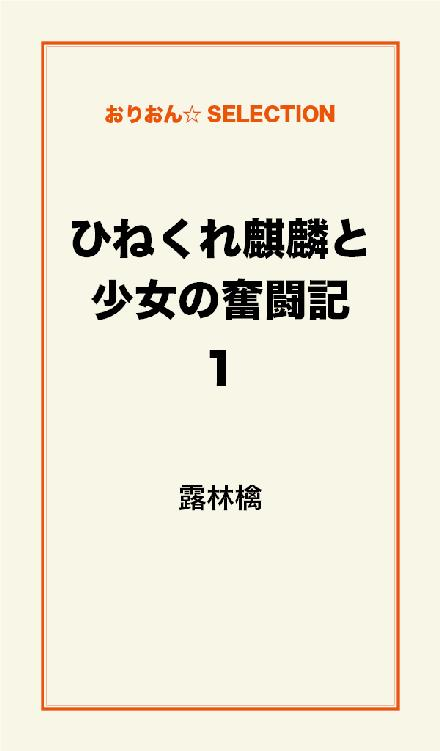
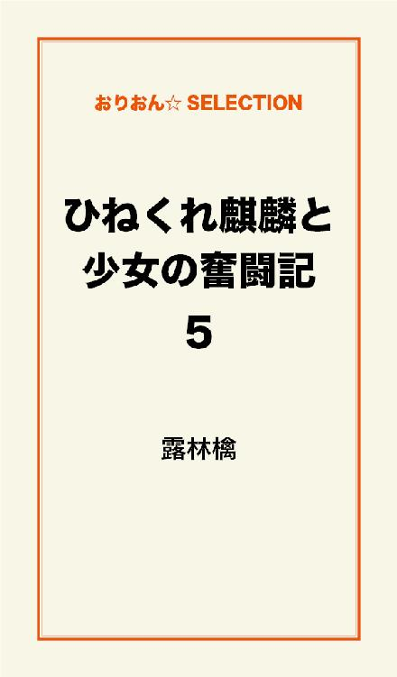

| ひねくれ麒麟と少女の奮闘記 完全版 | |
| 露林檎 | |
この本は横書きでレイアウトされています。
また、ご覧になる機種により、表示の差が認められることがあります。

プロローグ
（君との、）（貴方との、）
（出逢いは）
（あまりにも、──唐突だった）
砂浜で波に足を掬われるようなこの感覚を。
僕らは何と呼ぶのか解らないまま過ごしてゆく──。
月に魅かれ風に騒ぎ胸に零れるこの感情は......
きっと永遠じゃない。
だけど何度も手を伸ばす。
記録されたあの映像も
夢の幻像＜ツヅキ＞も痛みも全て、
静かに胸＜ココ＞に停滞したまま。
ひとつ、話をしようか。
歴史に残るような話でもないけれど。
細やかで、けれども暖かな、その話を。
その国は、まだ神々の息吹が色濃く残る『蓬莱』と呼ばれる国。
ある少女は自らの願いを叶えるべく、伝説の生き物、麒麟を探していた。
麒麟とある契約を交わせば、麒麟はどんな願いも叶えてくれるという。
世にたった四頭だけ存在し、それぞれを
黒麒麟＜クロキリン＞
金麒麟＜キンキリン＞
紅麒麟＜アカキリン＞
蒼麒麟＜アオキリン＞
と分け、雄を麒、雌を麟と呼んだ。
不老不死の生き物とされ、人のように"欲"がない。
他のどんな生き物よりも清廉潔白で、一途な生き物。
たった四頭だけこの世に存在すると言われている、蓬莱でもっとも尊く美しい瑞獣。
けれど、四頭の他にあと一頭。
四頭の麒麟達とは違う麒麟がいた。
今ではもう、幻と呼ばれる麒麟。
どの麒麟よりも高い霊力を持ち、他のどの麒麟よりもその姿は美しいと言う。
この世の何処かに存在する、麒麟と幻。
伝説の中だけに生きるその幻を、人々は『玉麒麟』と呼んだ。
神代を信じ、伝説を伝え続ける、人と人でない者が棲む国。
ある時、
愛を失い、温もりを探し続ける孤独な少女と
愛を知らない孤独な青年が出逢う。
少しおてんばで、寂しがり屋の人間の少女と
少し意地悪でひねくれ者の、人でない青年。
二人はあまりにも不器用で、素直に誰かに甘えることも、寄り添うこともできない。
愛され方も愛し方も知らない青年。
孤独から抜け出したい少女。
出逢った不器用な二人は、お互いの中に何を見つけていくのか。
絆か友情か、嫌悪か愛か
あるいは、恋か───。
これは、そんな不器用な二人の奮闘記と......
強固な絆の、物語。
奮闘記１『青天の霹靂』
青天の霹靂、だった──。
俺がその女と会ったのは、何百何千何万人といる人間の、その中の何万分、何億分の確率だったのだろう。
ああ......俺はいつ、何処で間違えた？
（おそらく、あんな所で寝ようと決めた時からだ）
俺の人生はいつから狂った？
（絶対、あの女と出逢ってからだ）
俺が一体何をしたっていうんだ？
（いや何もしてないはずだ）
ああ、何故出逢ってしまったんだ──......。
こんなにも......
こんな......
「青年、お腹すいた！！！」
「............」
超絶じゃじゃ馬女に。
「......重い......」
外見が十八、十九くらいに見える青年は、腹にかかる重みにうんざりしたように低く呟いた。
広く葉を伸ばす大きな木の枝に、彼は仰向けに寝そべっていた身体を起こすために両肘をついていた。
起こすと言っても、腹の上にある障害物のせいで胸元までしか起こせない。
「おはよう。今日も良い天気ね」
腹の上にのし掛かり、顔を覗き込むようにして蒼空から差し込む太陽の日差しを遮っているのは、十五歳ぐらいに見える少女。
実際には十七歳なのだが。
腰まである漆黒の髪、黒に藍色がかった深い色の瞳をしていて、女性特有の体躯に白い肌。
──で、補足するならじゃじゃ馬。
「ちょっと......、じゃじゃ馬娘......」
そして......
彼の目の前に突然現れた、現在最大の悩みの種。
「ねぇ、重いんだけど......」
「もう朝だよ？ お腹空いたよ！
せっかく良い天気なんだから、早く何か食べて散歩にでも行こ！」
「人の話を聞け......」
青年は端整な顔に似合わないため息を吐いた。
そのため息は、どこか儚げな雰囲気をまとう彼を余計に儚げにさせる。
「ちょっと......、いつまで乗っかって......」
「ほらほら！ 早く起きてっ」
「ねぇ......重いん......」
「お腹も空いたし、散歩も行きたい！」
「いい加減......」
「さぁさぁさぁ！ 起きて起きてっ。いつまでも寝てたら身体に良くないよ」
「......っいい加減、俺の上から退けーーーーっ！！！！」
......最近、朝はいつもこう。
爽やかなはずの朝も、自分の大音声から始まる。
「......アンタ、なんでそんなに朝から元気なわけ......？」
やっと腹の上から退いてもらい、起き上がった青年はあくびをしながら傍らに座る少女に言った。
「だってこんなに良い天気だし、今日はとっても気分が良いの！」
「あ、そ......」
うんっと伸びをしながら返す少女に、青年は目を擦りながら適当な相槌を打つ。
「おはよう。少し前から思ってたけど、意外にお寝坊さんなのね」
「............」
この言われよう。
よりによってなんで自分より遥かに年下の小娘に......！
思ったが、彼女の発言にいちいち文句を言うのも億劫なのでここは何も言わずに沈黙だけ返す。
（ああ......、なんで俺がこんなじゃじゃ馬と......！）
彼女と出会ってから何度目かの盛大なため息と心の呟き。
元来、他人と群れるのが嫌いな彼は、たった一人の少女と同じ時間を共有するのも、実はうんざりしていた。
そんな自分が、何故この少女と一緒に居るのか、この少女と出会ったのか。
きっかけとも呼べる出会いは、運命的な出会いでもなければ理由があってのものでもない。
ならばどんな経緯で出会ったのかと言えば......
突然、としか言い様のないものだった。
お互い、第一印象は最悪の二文字だった。
「......何、アンタ」
いろんな意味で。
（さ、最悪っ！ 嘘でしょーっ！！）
（......最悪だ。なんだよこの女......！）
蓬莱国の中央部に、人ひとり寄りつかない『麒麟山』と呼ばれる大きな霊山がある。
ひどく険しいその山は、人が通れるような道などなく、誰からの開拓も受けたことのない獣道が広がっている。
国でも一番の霊山と言われるその山は、古くから伝えられて来た霊獣──麒麟が棲むと言う。
大歴史を持つ蓬莱国は、創世五千年を越える。
その五千年の歴史の冒頭にも、一度は滅びかけたことがあった時代にも、麒麟の存在は大きく記されていた。
麒麟は国の始まりと共に在り、国は麒麟と共に在った。
故に、『麒麟山』。
奮闘記２『二人の邂逅』
暖かく柔らかな春の日差しが、蒼空の半分以上を隠した雲の合間から雨降りのように大小細かく覗いている。
麒麟山の奥深くにも降り注ぐ日差しは、静かな水声を奏でるせせらぎの波を反射させ、草木の葉を透き通らせては地に深い緑の影を落としていた。
穏やかに流れていく時間の中、時折木の葉を揺らして春風が通り過ぎていく。
森の奥地、大きな李の木に寄り掛かり、上から降り注いでくる木漏れ日を受けて昼寝をしながら身体を暖めている青年がいた。
──優しく頬を撫でていく風が心地良い。
不意に薫る李の香や、小鳥のさえずりさえ、青年の眠気を煽る。
風が髪をふわりと遊んでは流れるように通り過ぎていく。
揺れた髪が頬に触れるのがくすぐったくて、まだまだ重たい瞼をうっすら開けた。
「......ん」
視界に飛び込んでくる光が眩しくて、すぐに開いた瞼を再び閉じる。
一度閉じてしまうと、ただでさえ重い瞼が余計重くなった。
そうなるともう、閉じた瞼を開く気にはなれずに、眠気と覚醒が交互に襲ってくる不快感から逃れるように昼寝の再開を決め込む。
世界におやすみをして、緩やかに意識が遠くなっていく。
小鳥の歌も風の声も、川のせせらぎも遠くなる頃。
──突如、心地良い静寂を突き破るような悲鳴が耳をつんざいた。
「きゃぁあぁぁぁっ！！」
「っ！？」
自分の頭上で響き渡る悲鳴に一気に覚醒する。
なんだと思って顔を上に向けた瞬間、自分目掛けて降ってくる───。
人間の少女の姿が視界に映った。
え？と、呟いただろうか。
少女の姿を視界に入れた刹那、彼女の身体がヒュッという落下音と共に青年の上へ落ちる。
「うっ！！！」
「ぐぇっ！！！！！」
『ドンッ』とも、『ドガッ』とも言えるような重く鈍い音のすぐ後、凄まじい衝撃が互いを襲った。
少女は身体が打ちつけられた衝撃に息が詰まった鈍い呻きを、青年は彼女の下敷きになった衝撃に蛙が潰れたような声を発した。
さらに、青年は下敷きになったせいで、苦しげに息を吐き出した。
「ぐ、げほっ！」
「い～～～～っっ！！！！」
「......～～～～っ！！！！」
しばらく二人は重なったまま、衝撃の余韻に呻いていた。
ぴーチチチ......、と。
何処からか聞こえてくる、春の鳥が鳴く小さなさえずりも揺れる葉の音も、全てが春の穏やかな時間を歌っていた。
なのに、これはどうしたことだ？
先程まで、自然のもろもろに身をゆだねきって昼寝をしていた青年。
その彼の上に突如落ちてきた少女。
余韻はまだ残るものの、いくらか和らいだ衝撃に顔をしかめながら青年は胸だけを起こす。
「......うぅ......っ」
青年の上に跨がるように潰れていた彼女も、青年の胸板で思いっ切りぶつけた鼻を押さえて起き上がった。
「............」
「............」
互いに身を起こし、視線が合った二人は無言のまま見つめ合う。
「......何、アンタ」
少女の前にはいかにも不機嫌そうに顔をしかめ、瞳を怒りに染めながら少女を睨む青年。
青年の前には、ぽけらっとしたような、それでいて冷や汗を流して焦っているようにも見える少女が。
「............」
「............」
「......ねぇ」
「は、ハイィィィっ！！！！」
「......重い」
「......キャーっ！ すすすみませんっ！！ ごめんなさいっっ！」
なかなか退こうとせずに、放心したように鼻を押さえて固まったままの少女に、青年は痺れを切らす。
地を這うように低く凄みのある声で呟くと、彼女は大慌てで謝りながら青年から身を離す。
青年は痛めた所をさすりながら、ため息と共に後ろの李の木に上半身を預けた。
立ち上がった少女は、髪の毛や服についた葉っぱや花びらを摘んで取っていく。
青年は視線だけを上に向けて少女を見据えた。
「............」
動きやすさを考慮しての服装だろう。
少女は濃紺の着物を着ていたが、裾の短いものを着ているためにその白い腕と足がむき出しになっている。
動く度揺れる腰まである長い黒髪を、高い位置でひとつに結んでいる。
そこそこに整った容姿に、深い色の瞳、華奢な体躯、すらりとのびた白い手足。
──どこからどう見ても人間の娘。
十五歳ぐらいだろうか。
正確な年端は分からない。
青年の近くには人間などいなかったし、ましてや女など未知の生き物に等しかった。
じとっ、と睨みつけるように凝視している青年の視線に気づいたのか、少女は青年に向き直る。
恥ずかしそうに視線を彷徨わせ、やがてがばりと勢いよく頭を下げた。
「ごっ、ごめんなさいっ！ 私、その木に登ってたら足を滑らせて......」
青年が寄り掛かっている木を指差して、彼女は語尾を濁らせる。
「......で、俺の上に落ちたと？」
「すみません......」
言葉の先を青年が続けると、彼女は小さな身体をますます縮こませて謝る。
「............」
......何故だろう。
なんだか捨て猫の風情に見えてきた。
青年は困った。
そんな風にされると、むしろ自分が悪い事をしたような気分になってくる。
自分がそんな気分になる必要はないが、気まずさから別の話題を振る。
「......こんなとこで何してるのさ。ここがどういう場所なのか知らないわけじゃないだろ？」
「ま......まぁ。知ってるからこそ来たんだけど......」
「だから、こんな場所に何の用？ ここで何してる」
淡々と抑揚の少ない声音で矢継ぎ早に聞かれ、彼女は少々たじろぎながら答える。
「さ、探しモノを......」
「探しモノ？ こんな場所に？」
「う、ん。この麒麟山にしか、居ないから」
「──居ない......？」
『ない』、なら物でも分かるが、彼女は『居ない』と言った。
居ないという言い方では、物ではなく生き物を指しているのだろう。
（人ひとり寄りつかないこの山で？ 一体何を？）
怪訝に思い、青年の声音も自然と警戒するような物になる。
「......何を探している」
威嚇するような態度の青年に、少女は慌てて付け加える。
「あっあのっ、別に怪しいことしようって言うんじゃないんです。ただ、伝説を確かめるために......」
「............」
彼女の言葉に、青年は眉間にしわを寄せた。
──コイツ、馬鹿じゃないのか......。
この少女は気づいていないのだろうが、自分で自分を怪しいと言う馬鹿がどこにいると言うのか。
彼女の、怪しいことはしないという発言は普通なら余計に疑心を煽る。
だが、彼女は今『伝説を確かめる』と言った。
彼女に人を騙すほどの知能がないと判断した青年は、警戒を少しだけ解いた。
というか、伝わってくる彼女の雰囲気からして、本人の言う通り悪巧みをするわけではないのだろう。
未だに冷や汗を流しながら疑いを晴らそうとしゃべり続ける少女。
それをちらりと一瞥して、青年はうざったそうに手を振りながら言った。
「......君、煩いよ」
「えぇっ！！？ あ、いや、すみませんっ。あの私、本当に怪しい者じゃ......」
「もう分かったから、黙って。
......君の声、煩い。話すならもう少し声落としてしゃべってくれる？」
「は、はい......、すみません」
警戒がいくらか解けた様子の彼に、少女はほっと胸を撫で下ろした。
少女はこっそり青年に視線を向けた。
目の前の青年を改めて見る。
（不思議な人だなぁ......）
さっきまでは慌てふためいていたせいで良く見れなかった彼の顔を、こっそりと覗く。
（う、わぁ......）
良く見ると、彼はすごく美人だ。
青年の容姿はとんでもなく整っていた。
非の打ち所がないほど完璧に。
そして、どこか儚げで、それに似合わないいくらか尊大な口調と態度。
見た目は十八、十九歳くらいだろうか。
外見からして、おそらく人ではないだろう。
彼は、書物や絵巻でよく見る神仙のような恰好をしていた。
両肩からずり落ちるように気だるげに羽織れているのは淡い色の上質そうな羽織り。
はいている物は足首の辺りで軽く絞ったような形をしていて、布はたっぷりとしている。
裾からのぞく足は素足だ。
髪は腰まである長く綺麗な髪。
その髪は夕焼けのように紅かった。
紅というよりは朱色に近く、緋色と言ったほうがしっくりするだろう。
緋色の髪に縁取られた顔に、無駄な肉は一切ついていない。
色白の肌に、薄い唇、長い睫毛。
切れ長の目は涼しげで、瞳の色は綺麗な薄い翡翠色。
そして耳に心地良く残る、低めの美声。
少し骨張った、長く繊細な指先すら、少女には彼の動作のすべてが優美に見えた。
あくびひとつ取っても、それがひどく特別な動作に見える。
綺麗な人だと思った。
「......何見てんの」
「ぇ、あ！ ......ご、ごめん」
いつの間にか彼の観察に夢中になって、彼と目が合っていたことにも気づかずに凝視してしまっていたらしい。
彼から不機嫌そうな声音で呟かれて、慌てて謝った。
見とれていた自分が恥ずかしくなって、羞恥に顔に血が集まる。
真っ赤になっている自分を自覚して俯いた。
正確には凝視と言うより見取れていたのだが、じっと見ていたのは本当だ。
相手には失礼なことだったろう。
だが、彼の容姿はそれだけ好奇心を湧かせたし、魅力があった。
街を歩かせれば誰もが振り向くだろう。
きっとたくさんの年頃の娘が振り返り、囁きながら黄色い声を上げているはずだ。
「......君」
「は、はい？」
そんな事をぼんやり考えていると、再び黙り込んだままの自分を怪訝に思ったのか、彼がぽつりと話し掛けてきた。
「いくつ？」
「え、歳？ 今年十八になるけど......まだ十七になったばかりよ」
「──え、十七？」
「そうだけど......、何か？」
青年は驚いたように、薄い翡翠色の瞳を軽く見開く。
「いくつに見えました？ こんな顔だから、いつも下に見られるんですけ......」
「十五ぐらいだと思ってた......」
「......は？」
十五歳と言われて、彼女は素頓狂な声を上げた。
「じゅ、十五に見えたの！？」
十七歳になってからも、実年齢より下と見られたこともあったが、さすがに十五歳に見られたこと今までなかった。
それなりに年頃になった自分。
いくら童顔に見られたとしても、二歳も下に見られたのは少なからず衝撃だった。
自然と語気も上がる。
「......煩い。さっきも言ったけど、大きな声出さないでくれる？
ここはアンタ達が居るような街や人里と違って静かな所なんだから、そんな声出さなくても聞こえる。いちいち大袈裟な反応しないで」
「む......」
少女は小さく唸った。
彼が言うほど、自分の反応が大袈裟とは思わない。
だけど、鳥のさえずりや川のせせらぎ程度しか聞こえないこの山で声を荒げて、心地良い静寂と自然の声を消してしまうのは勿体ないと思う。
言い方に刺はあっても、彼はそういうことを言っているのかもしれない。
「......そうね、ごめんなさい。でもさすがに十五歳はちょっと衝撃だったわ」
「......ふぅん。もっと喰いかかってくると思った」
「うん、まぁ......。貴方はいくつ？見た感じは十八歳ぐらいに見えるけど......」
「俺が人間と同じように見える？」
確かに。
彼の髪の毛ひとつ、服装ひとつ取っても、あまり人とは思えない。
雰囲気などから感じられるものからもそう思うが、人というには何か根本的なものが違う気がする。
「まさか！ さすがに人には......。
それは本当の姿じゃないでしょ？ 人間で何歳の姿をとってるの？」
「人で言うと十九くらい」
「実年齢は？」
「そうだね、七百かそこらかな」
「七百歳！？ 随分と御長命で......」
「......まぁね」
彼が言う年齢が本当なら、蓬莱国の創世歴が五千年以上なのだから、彼は七百年の歴史を国と共に生きてきたことになる。
それだけ長命なら、彼はやはり神仙の類なのだろうか。
妖魔はある程度生きたら寿命を迎えると聞く。
もちろん、人間の何倍も長命ではあるが、どんなに生きても二百年か三百年ぐらいだろう。
妖力が強ければ、それに比例して寿命も伸びるらしいが......。
「あなたは神仙？」
「......多分そうなんじゃない？」
「なんで疑問系なの......」
そう言った青年のやや吊り上がり気味の目には、少しの険が宿っている。
曖昧な返事をして、それきり彼はつん、とそっぽを向いてしまった。
「じゃあ、妖魔ではないのね？」
そう問えば、彼は振り返って眉間に皺を寄せ、ムッとしたように言った。
「──......あんな下等生物と俺を一緒にしないでくれる？」
彼が言う、『下等生物』の妖魔にも色々ある。
無差別に人を襲うものもあれば、人間にも手懐けられるおとなしい妖魔もいるらしい。
妖魔を調教する人間は『妖魔遣い』と呼ばれ、特別な訓練を受けないとできない。
現に、国の禁軍には戦闘用の妖魔がいたりする。
「......なら、神仙なのね？」
「......まぁ......？」
妙に長い沈黙のあと、彼は渋々といった風に肯定した。
彼はどこか人の生々しさがある。だが人のそれとは同じようで違っていた。
彼から感じるものがそう思わせるのだろう。
端整な外見は、美人ということを差し引いても目を引くものがある。
作り物めいたそれは、きっと彼が人でないからこその美貌なのかもしれない。
何故、返事を渋ったのかは分からないが、彼が妖魔でないことは確かなようだ。
強大な妖力があったり、知恵がある妖魔は、人の姿をとって人を騙すこともある。
故に、彼女は青年が妖魔なのではないかと少なからず警戒していたのだ。
「よかったぁ......あなたが知恵のある妖魔じゃなくて」
「......君って馬鹿？
俺が知恵や妖力の高い妖魔だったらいくらでも嘘がつけるんだよ？」
「うわぁぁ、そうか！」
「............」
本気でその事を頭からすっ飛ばしていた様子の彼女に、青年は氷点下に冷めた視線を送った。
少女は焦ったようにあたふたしていたが、すぐに青年へ向き直る。
彼をじっと見つめ、でも......と口ごもる。
「......でも、あなたはそういう嘘をつくようには見えないわ」
「............」
はっとしたように見つめ返してきた彼に薄く微笑んで、彼女はやんわりと言った。
「そうでしょ......？」
「──まぁ。......汚い嘘は好きじゃない」
「私も」
最初の雰囲気よりはかなり砕けてきた。
彼の反応も心なしか警戒が解かれたように見える。
......彼女があまりにも無防備で抜けているからかもしれないが。
「貴方とは気が合いそうな気がしてきた」
「そう。だけど俺は、これから君と気が合うような会話をする気も時間もないよ」
「え、冷たい！」
「......馴々しい奴だな」
口端を引きつらせて呟いた彼に、少女はさらに言った。
「お友達になりましょ！」
「......。
......はぁぁぁっ！？
冗談やめてくれ、誰が君みたいな人間の小娘と！」
「まぁまぁ、そう言わずに。これから仲良くしよ」
「何勝手に友達になったつもりで話してるんだよ！」
「いいじゃない！」
「よくないっ」
青年は言い返したあと、はぁとため息を吐く。
普段自分はたくさん話す方ではないのだが（話し相手があまりいないのもあるが）、彼女の質問にひとつひとつ答えてやったり、彼女の言動にいちいち反応して思わず語気を上げてしまったり。
彼女と居るとなんだか調子が狂ってくる気がしてならない。
第一、こんな人間の小娘の話相手をしてやる義務も必要もない。
ならば、さっさと彼女とはおさらばして、場所を変えて昼寝の再開をしよう。
今は李の下で寝ていたが、次は最近咲き始めた桜の木がある場所にでも行くか。
そんなことを考えていると、うっかり忘れかけていた少女がおずおずと口を開いた。
「あのぅ......」
「あぁ、まだ居たんだ。......何？」
「（まだ居たんだって......）お願いがあるんだけど」
「お願い？」
「その......、私、ここに来たばかりで、右も左も分からないわけでして......」
「まぁ、そうだろうね」
「貴方はこの山に長い間住んでて、それなりに山のことは詳しいよね......？」
「......だったら？」
......なんか、ヤな予感してきた。
七百年以上生きてきた自分にとって、自分の予感や直感はというものは信ずるに値すると思っている。
いや、むしろ大切にしている。
目の前の少女は一体何を言い出すのだろうと思った刹那、少女は言った。
「私の道案内役も含めて......一緒にある生き物を探してください......！」
「............」
イヤな予感的中。
「──は」
は？ 今なんつったコイツ......。
あまりにも抑揚のない青年の『は？』に、少女は身を小さくする。
「ねぇ、君さ」
「は、は......ぃ......」
語尾が小さくなっていく少女だが、青年はお構いなしに氷点下の声で続ける。
まるで、ドロドロドロと効果音がつきそうな地を這う声だ。
......そんな馬鹿な。
声が地を這うなんて......。
声が蛇のように身体に巻き付いてくる錯覚を覚えるなんて......！
少女は冷や汗をかきながら頭の中で慎重に言葉を選ぶ。
これ以上彼の癇に触るような言葉は絶対に言ってはいけない。
ここで彼を怒らせて見捨てられたら頼れるものが無くなってしまう。
（それだけは避けなくては！）
「ねぇ......君さ」
「（二回目......）は......ぃ......」
「俺はいつも通りに穏やかな時間を過ごしていたんだけど......」
気持ち良く春の日差しに身を暖めて昼寝をしていた青年。
その彼の上に突如舞い降りた（降ってきた）少女。
この少女は、自分の平穏な時間を見事に驚愕と衝撃で崩し去ってくれた。
「......よくも、俺の平穏かつ貴重な昼寝の時間を見事崩壊させてくれたね？」
「うぅっ......！」
痛い所を突かれ、言葉に窮する。
「その挙げ句、考えなしに森に入ったはいいが右も左も分からなければ方角さえろくに分かってない。しかも、これも何かの縁、出会ったついでに一緒に探してくれだって？」
「............」
ん？
待て。
そんな風に『考えなしに』とか『方角』だとか『何かの縁』だとか、そんなこと言ってない。（方角くらい分かる！）
喉まで出かかった言葉を必死に飲み込む。
ここでそんなこと言ったら絶対に逆鱗に触れる。
会って間もないが、確信できる。
「ぅっ......、えっ......と......」
「馬鹿にしてんの？」
「ちっ、違うんです！ そういうんじゃなくて、その......こっちも色々切羽詰まってて......ですね......」
「は？」
（ヒェェェ......！ 恐いよぉぉぉっ）
目が！目が、『これ以上先言ったら......』みたいな目だ！
だが、ここで引いては、自分は探したいモノも探せない。
ここはなんとしても、彼を説得して協力を仰がなくては。
「や......、だ、だから......お、お願いしま......」
「ヤダ」
「（即答......）......いや......あの......」
「......何」
「頼れる方が、貴方様だけなんです......！ 藁にも縋る想いって言うか......」
「──ワラ。
......へぇ、俺って藁？ 藁なの？
......たった十余年生きただけの人間の小娘風情に、藁呼ばわり？」
「ちっ、違うんですぅぅぅぅっ！！ 物の喩えで言ったんです！ 藁なんて思ってません！」
"藁"にぴくりと反応した青年。彼には物の喩えすら通用しないのか......。
（いくらなんでも俺様過ぎよ......！）
ほとほと困り果てた少女は、なんだか一生に一度の大博打をしている気分になった。
......冗談に聞こえるが、実のところ、これが大袈裟でもない。
「だいたい、なんで見ず知らずの君に、なんの義理があって一緒に探しモノとやらをしてやらなきゃいけないわけ。お断りだね」
「見ず知らずなんかじゃありません！ たった今知り合ったばかりの『知り合い』です！ちゃんと接点できてます！！」
「屁理屈言うなよ！！」
「そこを何とか......！ 私、ここで会った人が貴方しかいないんです！」
「へー、ふーん？ だから何」
「お願い！ 私と一緒に探して下さい！」
「ヤダ」
「このとーりですから！」
「ヤダってば」
「お願いしますぅぅぅ！」
「嫌だね」
「お願い！」
「や」
「おーねーがーいーっ！！」
「嫌ったら嫌」
「お願いったらお願い！」
「くどいっ！！」
「お～ね～が～い～っ！！！！」
それから二人は延々と『お願い』『イヤだ』を繰り返し......。
お互い、息切れするまで続けていた。
奮闘記３『百花繚乱の地に』
「青年！ 散歩に行こう！」
「煩い」
適当に食事を済ませた少女が言った言葉に、青年はぴしゃりと冷たく返した。
あの後、いつまで経っても終わる様子のない『お願い』『イヤだ』がしばらく続き......。
結局彼が折れた。
そんな彼の内心はこうである。
──は？ 親切心？ 馬鹿じゃない、そんなわけないでしょ。煩いからだよ。
「............」
「探索もかねて、散歩！」
「イヤだね。散歩なら君一人で行ってきなよ。俺は昼寝を......」
「さーんーぽーっ！」
「............」
「散歩！ ......行こう？」
「............」
「............」
「......、はぁ......しょうがないな......」
「やった！」
（こうなったら行くって言うまで言い続けるだろうし）
少女の押しの強さに、青年は疲れた様子で嘆息した。
彼女は、一度言い出すとこちらが頷くまで延々と言い続ける。
睨もうが断ろうが脅そうが、おとなしくなるのはその時だけで、ものの十秒と保たない。十秒後には、また同じことを繰り返してくる。
彼女が頑固でじゃじゃ馬なのは、この三日間共に過ごしただけでいやと言うほど分かった。
るんるんと音がしてきそうなぐらいご機嫌の様子で先を歩く少女を睨みながら、青年は重いため息を吐く。
「......ねぇ、じゃじゃ馬娘」
彼は少女の事を名前で呼ばずに、いつも『じゃじゃ馬』と呼んでいる。
その度に彼女が言い返しては名前で呼べと言う。
だが青年には少女の名を呼んでやるどころか、覚えてやる気もなかった。
現に、一度だけ教えられた彼女の名前も、覚えてはいない。
「何？ ......というか、じゃじゃ馬娘じゃないってば！
ちゃんと名前があるんだから名前で呼んでよ」
「......やだ」
そもそも、自分は興味のないことにはまったくと言っていいほど覚えが悪い。
彼女から名前を教えられたのはたった一度だけ。
名前を呼べと言われても覚えていなかった。
興味がないのだ、仕方ないだろう。
自分の頭には何となくというくらいにしか記憶に残っていない。
──それに、新たに彼女の名前で呼ぶのも、少なからず親しみを持つようで嫌だった。
極力少女との関わりを避けて来た青年は、彼女の探しモノが何なのか明確に分からないでいた。
だが、何を探すのかも分かっていないのに道案内をしても、彼女と一緒に居る時間が長引くだけだと気づく。
渋りながら問うた。
「......ねぇ、君の探してるモノって何？」
「そういえば、まだ言ってなかったね」
「伝説を確かめるって言ったら、何かの儀式に出てくる生き物？
それとも、言い伝えに出てくるような妖魔とか？」
一括りに伝説と言っても、そんなものは山ほどある。
例を挙げれば切りがない。
「あー......、それは......」
「？」
言いにくそうに言葉を濁した少女に、青年は怪訝な顔をする。
「なに？ 一体何を探してるの」
視線を泳がせて、彼女は恥ずかしそうに言った。
「あの、さ......」
「なに」
「絶対に、絶対に笑わない？」
「はぁ？ ......笑われるようなことなの？
あんまりくだらない内容だったら即刻妖魔の巣に放り込むよ」
「い、いやだぁぁあ！ ちょ、違っ、違うんです！
貴方様にはくだらないかもしれませんが私にとっては、もんの凄く重要なこ......」
「俺にとってくだらないなら、くだらないのと一緒だね」
「そんな無慈悲な！」
「慈悲？ 君にかけてあげる慈悲は持ち合わせてないよ。そんなもの、無いに等しいからね」
「ぬぁぁっ！？
だって貴方、仮にも態度と姿だけかもしれないけど多分きっと神仙なんだから、"か弱い"人間の女の子にかけてあげる慈悲くらいお持ちでしょう！？」
「......その、仮にも態度と姿だけかもしれないけど、多分きっとっていうのに、じゃじゃ馬娘とか弱い女の子を付けてそっくりそのまま君に返すよ」
「どういう意味ですかソレ！！」
「君がか弱い女の子？ ──ハッ！！ なにそれ笑っちゃうね。
ただのおてんばのじゃじゃ馬娘じゃない。もし万が一、か弱い女の子だったとしたら、人が寄りつこうともしない麒麟山にのこのこ来るはずがない」
「うっ......それはー......」
「君はか弱いんじゃなくて図太いの間違いだろ。
女の子なんて可愛いらしいモノじゃなくて、ただのじゃじゃ馬じゃないか。
なんか間違ってる？」
「間違い過ぎてますっ！」
激しく反論する彼女に対し、当人は気にした風もなく平然としている。
（失礼過ぎるっ！ いくらなんでも！！）
「なんでもいいよ。いいからさっさと話てくれる？ いい加減たくさん話して疲れた」
「......馬鹿にしない？」
「はいはい。分かったから早くしてよ」
青年は眠そうにあくびをしながら緋色の髪を片手で掻き上げ、もう片方の手で少女に先を促すようにひらひらと振った。
だが彼女から紡がれた言葉に、青年は一切の動きを止めた。
「──麒麟を探してるの」
どくり、と。
一度だけ大きく胸が脈打つ。
彼の中で、衝撃が音もなく広がっていく。
（き、りん......）
──あぁ、と。
胸の中で声が漏れた。
「............」
この少女が麒麟を探して、見つけて......。
何を確かめたいのか、分かったから。
（......コイツ──......）
この少女は、
『俺達』を......探していたのか──。
「............」
「......？」
麒麟と口にした瞬間、明らかに彼のまとう空気が変わった。
彼の沈黙は、呆れている沈黙でもなく、かと言って何かを思案しているような沈黙でもなかった。
ただ、黙っていた。
「──何のために」
ポツリと。
どこか凄みのある声音で問われた。
その声音は、危険からの威嚇にも捉えられたし、逆に恐怖や怒りからの威嚇にも感じた。
今まで緩んでいたものが、一気に鋭く張り詰めたような、そんな感じが。
「......理由は......、話せば長くなるんだけど......」
「簡潔に言いなよ」
その語調は落ち着いて静かなものの、本気で怒ってしまったのかと思うほど鋭利だった。
「......じ......じゃあ、ざっくり言うと......」
彼から訳の分からない威圧を感じる。
青年を見ている事がどうしようもなく怖くなって、行き場を無くした視線を泳がせた。
喉に絡んだような声で、少女はそっと告げた。
「──私自身の......願いを叶えるために......」
やはり。
（所詮、お前も、）
出会った時、最初に彼女は『探している』と言った。
伝説、麒麟、願い事──。
彼女の目的、彼女の探し物。
少女は麒麟を探していると言った。全ては自らの願いを叶えるために。
霊山と呼ばれるこの場所に来た彼女の探しているモノ。
聞いた時、一瞬だけ、しかし真っ先に頭をよぎったのはこれだ。
でもあえてそれから目を逸らした。
きっと違う。自分の杞憂に過ぎない。思い過ごしだ、と。
短い時間だが、共に過ごして受けた彼女の内面の印象は、『素直さ』。
自分の意見を曲げない頑固と強情さを持ち合わせてはいるが、そこから生まれた意見や態度は素直さ故のものだと思った。
"今"の人間にしては、珍しくましな人間だと思っていたのに。
所詮、人間なんて皆欲の塊だったのだ。
（お前も......）
結局は己の欲のためか。
「あ、あの......？」
要求されたことを話し終えても黙ったままの彼に、内心冷や汗をかきながら声を掛ける。
彼は黙したままだ。
（私、何か......）
どこか儚げで曖昧だった彼の空気。
だが今は、彼が怒りと落胆に似たものを露にしている気がした。
それは確信にも近い。
彼の触れてはいけなかったものに、自分は触れてしまったのかもしれない。
そう考えて、彼女は慌てたように言った。
「わ、私、何か気に触るような事......」
そう言いかけたが彼に届いている様子もなく、出かけた言葉を止めた。
返答の代わりには、沈黙と威圧だけが流れた。
（何か......、何か......）
沈黙を消そうと、そう繰り返しながら考えを巡らせる。
「......あ、あの......！ もし良かったら......一緒に探してくれない......？」
沈黙に絶え切れず、何か話さなくてはと、咄嗟に口をついた言葉。
言った途端、彼の肩がぴくりと揺れた。
彼からやっと返ってきた反応に安堵しかけて、すぐに彼女は自分の発言に後悔することになった。
「......探、す......？」
唸るように、低く発せられた呟き。
その呟きは、声音は、まるで低く唸る獣のような声だった。
気を害すようなことを言った覚えはない。聞かれた事にただ返しただけのはずだ。
自分の発言の何がいけなかったのか、彼女にはそれすら分からない。
とにかくこのままではいけないと、すぐに謝ろうとした。
「ご、ごめんなさい、私、何か......」
初めて会ったあの時。
彼の上に落ちてしまったあの時、彼の不機嫌そうな、怒って眉間にしわを寄せた顔を見ても不思議なくらい怖いなどと感じなかったのに。
だが今の彼を見て、彼女の心にはわずかな恐怖がある。
「あ、あの......」
彼に何か言わなくてはと、詰まりそうになる声を必死に出して言葉を紡ぐ。
彼の口が動いた。
その薄い口唇から紡がれるのは何だろう。
あんな空気の中、『一緒に探してくれるか』など問うてはいけなかったことだったのに、切羽詰まるあまり口に出していた。
彼からの言葉が何にしても、言われる言葉に優しい感情は籠っていないはずだ。
ひそかに息を詰めた時だった。
「──いいよ」
「......え......」
声が思うように出なかったのは、恐怖からではなく驚きのせいだ。
「ぇ......え......？」
てっきり、ふざけるなとか、誰がお前なんかと、とか。
そういった言葉が出てくるのだと思い込んでいた。
だが彼から発せられたのは、怒りの言葉でもなければ呆れでもない。
一緒に探してくれるかという自分の質問に対しての、肯定の言葉。
「ぁ......今......なんて......」
「聞こえなかったの？ いいよ、って言ったんだけど」
「え......っ、......えぇっ！？」
正直信じられなかった。
まさか彼から肯定の言葉を聞けるとは思っていなかったし、どんなに良い方向で考えても呆れるか怒鳴られるか、どちらかしか思いつかなかったのだから。
彼を見れば、長い髪をうざったそうに掻き上げながら深いため息を吐いている。
今までの重い沈黙の空気も、張り詰めた空気の跡形もなく、彼からはいつも通りの雰囲気だけが残った。
「......何？ 人のことジロジロと。自分で頼んどいて、何か不満でもあるわけ？」
「めっ、めめめ滅相もない！」
「あっそ」
「......あの」
「なに」
すっかり元に戻った様子の彼。
さっきまでの彼は一体なんだったのか。
自分の言ったことに何か彼の気に触るような事があったなら謝りたかった。
「さっきのは......」
「......さっき？」
「何か気に触るようなこと言った？ ......もしそうだとしたら、ごめんなさい」
「......別に？ 何もないけど」
「そ......そう......」
ほら、さっさと行くよ。
そう言って自分を追い越して早足に歩いて行く青年。
振り返り、彼の歩に合わせて揺れる緋色に目を向けた。
「............」
先を早足に歩く彼の背が、これ以上あの時の事について触れてはいけないのだと、言っている気がした。
何故かは分からない。
でもそう感じた。
ともかく、この山に詳しい彼が一緒に麒麟を探してくれると言う。
てっきり『イヤだ』『断る』『自分で探せ』くらい言われると思っていただけに、彼の返事は嬉しかった。
今まで素っ気なかった彼が、自分に協力してくれる。
そう思うと、じんわりと頬が熱くなる。これからの彼との歩みに、不思議と胸が高鳴った。
この胸の高鳴りはきっと、今まで一人だった自分と他人である彼が、たとえわずかな時間だとしても、共に行動することにわくわくしたからだろう。
大分差ができてしまった彼との距離を縮めるために、駆け出して彼に追いつく。
だが勢い余って、華奢に見えていた彼の、思っていたより広い背にぶつかってしまった。
ぶつかられた方はうっ、と背中の衝撃に一瞬息を詰まらせながら、前のめりになった身体を支える。
彼は振り返えり、背中にぶつかった少女を見下ろして眉をひそめた。
「──ちょっと......」
「ごめん、勢い余って......」
「......。......チッ」
（あ。今舌打ちした......？）
彼は少女をちらりと見ただけで、何も言わずに再び歩き出す。
彼の早足に合わせて、少女がちょこちょことついて来る。
「............」
青年は自分の横を歩く少女に、視線だけを向けて一瞥する。
何を期待しているのかは知らないが、この少女は本気で自分が親切心から協力してやると思っているのだろうか。
（単純なやつだな）
こんな人間の小娘風情に、自分の時間を割いてやる気も、素直に協力してやる気もさらさらない。
どうせ、この少女も。
素直なだけで、他の汚い人間と何も変わらない。
自分の欲に駆られて、それを満たすためにこの山まで来たのだ。
麒麟を探すために。
欲を満たすために。
たかが人間の小娘一人。
誰かの助けがなければ、この山では生きていけない。
妖魔に襲われて喰われるか。
危険な場所に迷い込んで死ぬか。
今でこそ、自分と居るから、危険な場所に迷い込むこともない。
（......どうせ、人間なんて皆同じだ）
青年は、不思議なほど冷めた頭で思う。
人間なんて、ただの欲深い生き物だ。
昔から変わらない。何ひとつ。
何百年経っても変わらない、醜い生き物。
欲ばかりの、脆弱で惰弱な。
それこそ、欲の塊だ。
なんて醜い。
（こんなじゃじゃ馬なだけのこの女だって......）
たかが脆弱な小娘ひとり、山に詳しい自分の行動一つでいつだって引き離せる。
そう──。
どこかに置いてくるのも
見捨てるのも、
いつだって。
薄い翡翠色の瞳が、冷たい色を宿しながら、どこか悲しげに曇った。
いつからだろう、素直でいることをやめたのは。
何かを信じることに疑念を抱くようになったのは。
正確な月日は覚えていない。
何しろもうずっと前の話だ。
いつからか覚えていることをやめた。
ただ、
どんなに素直でいようとしても
何を信じていても
同じなら。
素直な分だけ傷つくなら。
信じた分だけ落胆するなら。
そんな純粋な感情など、
捨ててしまおうと思ったんだ。
いつからか独りでいることを望み、関わりを持つことを避けた。
誰かに──何かの存在に、傷つけられるなら、ひとりでいようと思った。
何にも関わらずにいれば、傷つくこともないと思った。
なのに再び、『何か』と関わってしまうとは。
最初は、上辺だけ適当に合わせてそのうち突き放せば、普段の日常と何も変わらないと思った。
ただ、話相手ができた程度。
そう思った自分が甘かったのだろう。
彼女の目的が分かった今、胸の奥で何か恐ろしいくらい黒いものがとぐろを巻いていた。
「ねぇ......」
「んー？」
あれから、しばらく二人でなんの会話もないまま歩いていた。
目的地があったわけではなかったし、探索という名の散歩だったので、二人の歩調は普通に歩くより比較的ゆったりとしていた。
歩き出した場所と、そんなに離れていないだろう。
「探しモノがどこに居るのか、検討ぐらいついてないの？」
当初、彼女が言った『探索もかねて散歩』だというのに、探索している様子もないこの状況。
ただの散歩では......と、青年は自分の少し後ろを歩く少女に声を掛ける。
話し掛けられた少女は、自分の髪の先をいじりながら答えた。
「い、いやぁ～......それがまったく......」
「......ふざけてんの」
（コイツ舐めてんのか）
背中に雷雲を背負って振り返った彼。
──てめぇ舐めてんのかコラ。
彼の口調と声には棘があるものの、言葉遣いは乱暴なわけではない。
なのに、どこぞのやくざのような声が重なって聞こえるのは......気のせいだ。
きっと自分の幻聴だ。
......多分。
「ごごごめん！ ああそんな怖い顔して怒らないで！
......山に入れば手掛かりぐらいあると思ってたものだから......」
「馬鹿だね」
「お、おっしゃる通りで......」
ぴしゃり。言い捨てた彼に少女は遠い目をしてトホホ、と苦笑した。
どうやら彼と仲良くするには、並大抵より時間がかかりそうだ。
「......じゃあ、"センカキュウ"にでも行ってみる？ ここから近いはずだし」
「センカキュウ？ どこ？」
蒼い空を見上げながらそう言った彼に、少女はおうむ返しに聞き返す。
「名前の通り、花がたくさん咲いてる丘。
......確か麒麟は花とか、植物が好きだったはずだけど」
「え！？ そうなの？ じゃあそこに行けば、もしかしたら麒麟がいるかしら？」
「......さぁ？ 俺は知らない」
実際、麒麟は花が好きなんて、真っ赤な嘘だ。
麒麟は別に花だろうが植物だろうが、好きな奴は好きだし、興味のない奴はそれまでだ。
......自分も別に、特別好きじゃないし。
「行こう！ その、せん......、せんか......せん......」
「......センカキュウ」
「あっ、そうそう。センカキュウね！ ......字でどう書くの？」
青年は眉間にしわを寄せた。
息を吐くと面倒臭くさそうに腰を折って、少し長めの爪でガリガリと地を掻いた。
少女も一緒に身をかがめて、青年の白い指先を目で追う。
──千花丘。
「へぇ......、千の花でセンカ、キュウは丘ね」
確認するように、少女が笑みを浮かべて自分を振り返る。
にこりと崩れないその笑みを、彼女の笑い方なのだと自分は認識し始めている。
造り物のように綺麗な、その笑みを。
「............」
「？ なぁに？」
「......別に」
「そ......？ あ。......ねぇ、そういえば、貴方の名前、いい加減教えてくれない？ 呼び名がないと困るし」
彼女が今まで青年を名前で呼ばなかった理由。
単純に知らなかったのだ。
自分が名乗ったときに彼の名前も聞いたが、『君に教える名は持たない』と言って教えてくれなかったのだ。
こんな感じの彼のことなので、彼女はしつこく聞かなかった。
「......別に。呼ばなくてもいいよ」
「ダメよ、名前って大切だもの。私も名前で呼んで欲しいから、貴方のも教えて」
「じゃ、好きに呼べばいいじゃない」
「なによそれーっ！」
「ああもう、煩いな」
両耳を手で塞いで大袈裟に言う彼に、少女は負けじと言った。
「貴方、私の名前教えても一度も呼んでないわよね！？」
「なんだよ、じゃじゃ馬娘じゃ不満？」
「それ私の名前じゃないし！ ──私の名前はココアよ、ココアっ！」
「は？ 呼ぶつもりないから」
「（うがぁぁあぁっ！！！ 腹立つぅぅ......！！）......なんで？」
「......めんど......」
「じゃじゃ馬娘の方がずっと面倒臭いわよ！！」
「チッ」
気炎をあげた少女──ココアに向って青年は、だから違くて......と気怠そうに言った。
「名前、覚えるのが面倒臭いんだよ」
「何よ、それ......」
がっくりと肩を落とすココア。
が、次の瞬間、自分も勢いよく青年の隣りに座り込んで青年の手を取ると、彼の爪を使って地に何かを書いていく。
「お、おいっ！ 何勝手に人の手で書いて......っ」
突然のことに手を引こうとする彼の手を、彼女は無理矢理引っ張って続きを書いていく。
彼女が自分の手を両手で押さえつけていたし、何より力の入りにくい体制のせいでなかなか手を引けない。
無言の引っ張り合いが続き、やがて彼女が青年の手をパッと放すと、ずっと力を込めて引っ張っていたせいで彼はぺたん、と後ろに両手をつく。
「──おい、なんの真似......」
突然された行為に、青年は少女の横顔を睨みながら低く凄む。
だが彼女はくるりと振り返ると、青年の腕を引っ張って地面に書いた文字を見せる。
──恋々亜。
「............」
互いの引っ張り合いのせいで字は小刻みに震え、ミミズが這ったような文字だった。
「は？ なんだよ、これ。......こい......？」
「こい、じゃなくて、これでココアって読むの。
字を覚えてれば忘れないでしょ？ それに、私の名前って珍しいから」
覚えてね？
そう言う彼女──恋々亜を青年はキッ、と睨む。
「俺は、呼ぶなんて言ってないし、アンタの名前を覚えてやる気も、今後呼ぶつもりもない！」
珍しく語気を荒げた青年に、彼女はまぁまぁ、と両手を動かして言った。
「気が向いたらでいいからさ。......ね？」
「......チッ。そんな気、一生向かないだろうね」
「分かんないよ」
「有り得ない」
ふいと顔を背けながら立ち上がる青年。
無言で千花丘へ向けて歩き出した背中はどことなく不機嫌そうだった。
（......ふふっ）
恋々亜は胸の内だけで、そっと笑った。
早足で先を歩く彼。
彼のまとう服が、歩く度に大きく揺れる。
柔らかな生地のそれは、風が吹いただけでそよぐほど軽い。
だが、今の揺れ方はまるでばっさばっさと音がしそうなほどだ。
少し肩をいからせ、彼女のことなど気にもせず先をズンズン歩く背中と、それに合わせて揺れる緋色。
恋々亜には何故かその姿が、まるで拗ねた子供のようで、ちょっとだけ可愛く見えてしまったことは......
彼には、秘密にしておく。
（きっとまた怒鳴られてしまうから、ね）
──瞬間、
自分のナカの何かが、急激に身体を駆け巡った。
触れてきた手が温かかった。
掴まれた腕が熱かった。
記憶の中の人肌とは、こんなに温かなものだったろうか。
こんなにも......
胸の、心の中の毒気を吸い取ってしまうような、ものだっただろうか。
誰かの温もりを思い出したのは、いったいどれくらいぶりだろう。
──そんなことを考えたのは、きっとあのじゃじゃ馬が......。
「......着いたよ」
「わ──......っ、ここが千花丘？ 花がいっぱい！」
勝手に、馴々しく、触れたからだ。
しかし一度思い出すと、
「すごいすごいっ！ 何ここ！！ キレーっ！ すごーいっ！」
「......煩い」
悔しいやら懐かしいやら。
......不覚にも温もりが恋しくなった。
本当に、ちょっとだけ。
ほんの、少し。
この丘に漂う、微かな花の香りのように──少しだけ。
ただ、自分が独りであることを......。
唐突に、思い出した。
奮闘記４『青年と紅麒麟』
ああ誰か......。
この際、誰でもいい。
「ねぇ！ この花の名前はなに？ あっ、この青いのは？」
この、現在進行形で気分上昇中の女を止めてくれ......！
「......知らない」
「じゃあこのふわふわした白い花は？」
「......シロツメクサ？」
「これは？」
「知らない」
............。
（......って、何丁寧に答えてやってるんだよ、俺は）
「これはー？」
「......俺に聞いても、無駄だと思うけど」
ため息を吐きながら青年は言った。
彼女と出会ってからはため息の数が増えた。
今ので何回目のため息だろうか。
千花丘に着いてから、恋々亜はこれ以上ないほどはしゃいでいた。
そりゃもう、うざったいぐらいに。
さっきから、この花はなんだとかこの赤いのはなんて名前なんだとか、いちいち聞いてくる。
女じゃあるまいし、俺がそんな詳しく知るわけない。
というか、正直......
「わぁっ！ この桃色の花すごく可愛い！ この花の名前は知ってる？」
煩いんだよ！
「俺が知るわけないだろ......」
眉間にしわを寄せながら、彼はぼそっ、と小さく呟いた。
それよりも、当初の目的はどうしたんだ！
青年は胡座をかいた膝に頬杖をつく。
しばらく、どんどん気分を上昇させていく彼女を視線で追いながら、彼は恋々亜をどうやって引き離すか考えていた。
春の日差しは気持ちいい。
けれど、顔を上げれば、雲ひとつない快晴の蒼空が視界いっぱいに見えるほど開けたこの丘は、いささか眩しくて暑い。
青年は肩に掛けた、大きめの羽織りを頭から被り、そこから少し顔を上げて蒼空を見上げた。
花の香りを乗せた柔らかい春風が吹いて、丘に咲く草花と二人の髪や服の裾を揺らしていった。
たえまなく風が吹く。
不規則な風の流れは、前に吹いた風よりも早く丘を駆け抜けていった。
その風は、青年が被っていた羽織りを頭からずり落とし、淡い色の裾をひるがえしていった。
隠れていた緋色の髪が風の余韻に遊ばれる。
同じように、恋々亜の黒髪が小さく弄ばれていった。
緋色の髪を、好き勝手な春風に遊ばせて空を見上げる青年。
恋々亜は、不思議な青年を中心としたその世界に魅入っていた。
絵になる美しいその光景は、彼がそのまま空気に溶けていってしまうのではと思うほどに、彼の儚げな雰囲気を増幅させた。
彼と恋々亜の距離は歩けば数歩の距離だ。
けれど、なんだかその距離はもっとずっと遠くに感じられた。
実際にある距離より離れているように感じた分だけ、彼の心と自分の心が離れているようだった。
空を見上げたまま遠くを見つめる彼は、本当にそのまま溶けて消えてしまいそうだった。
急に、彼が朧な存在として瞳に映る。
「......ぁ......」
焦躁感にも似た衝動が込み上げて、彼に駆け寄る。
「──ねぇっ！」
「......は？ 何、そんな声出して」
「ぁ......いや......、なんでも、ない......デス......」
「はぁ......？」
目を細めて、彼は怪訝そうに声を出す。
突然大声で呼ばれ、なんだと聞けばなんでもないと返される。
怪訝に思うのは自然だ。
「ただ......」
風に消えそうなほど小さく呟いた恋々亜の言葉に、青年はますます怪訝な顔を向けた。
「......ただ、消えてなくなりそうだったから......」
「は？ 何言ってるの、頭大丈夫？」
嫌味を言ってやれば、彼女はほんの少し視線を泳がせた後、どこかぎこちない笑顔を浮かべた。
「えぇーと、......なんだろうね。ごめん、変なこと言って」
「............」
本人はそれで笑っているつもりなのだろう。
固まったような彼女の表情は、作り笑顔にもなっていない。
（──変なの）
睨むような視線で隣りの少女を見て、すぐに前に戻した。
「君さ」
「え？」
「それで笑ってるつもり？」
「......え......」
「そういうの、やめなよ。......前からだけど、意識して笑ってるでしょ」
彼女の瞳が見開かれる。
今の作り笑顔が分かったことへのものか、それとも今までの笑顔が本当でないと気づかれていたことへの狼狽なのか。
「無意識の内に出てるのは違うだろうけど......普段は意識してる感じ」
「......そんな、つもりは......」
「君はうまく笑えているつもりだろうけど、俺には無駄」
「............」
彼女は何か言いかけようとして口を開いたが、結局何も言葉は発せられずに閉じられた。
沈黙が流れる。
「......よく、分かったね。誰にもそんな風に言われたことないのに」
「他の奴がどうとか、興味ないね。他は気にならなかったのかもしれないけど、俺は気になった。それだけのことだよ」
恋々亜は俯くと、小さく溜め息を吐いた。
やがて顔を上げると、恋々亜は深い色の瞳で目の前の青年を見上げる。
「やっぱり、貴方の名前知りたいなぁ」
「......今までの話と関係な......」
「ん？ あれ！？ わぁー！ なにあの花！！ 可愛いーっ！」
「............」
コイツ......。
本気で妖魔の巣に投げ込むぞ......っ！
（やっぱりこんなじゃじゃ馬、どっかに捨てるべきだ！）
盛大な溜め息を吐いて、青年は前髪を掻き上げた。
再び、どう引き離すか思案していると、少し離れた所から高めの声がした。
「ねぇねぇー」
「............」
無視だ、無視。
「ねぇー！ 青年ー！」
「............」
何も聞こえません。
関わる自分が疲れるだけだ。
「せーいーねーんー！」
「............」
俺は何も聞いてない、聞こえない！
「そこの、赤い髪のお兄さーん！」
「......なに」
......もうダメだ。
このじゃじゃ馬との我慢比べは絶対負ける。
仕方なくといった風に返事をし、少し離れた所に座り込んでいる少女を見た。
「この真っ赤な鈴みたいな花の名前、知らない？」
「......それは──」
恋々亜が指差す花は、鈴蘭のような花だった。
だが色は濃い紅で、大小の丸い小さな花をいくつか茎についていた。
鈴蘭にとても似ているが、色が鮮やかな紅だ。
「......聞いた事ぐらいあるんじゃない？ それが、麒麟花＜キリンカ＞」
「麒麟花......って、いつかの大昔の帝が、麒麟を呼び寄せた時に使ったって言う、あの？」
「その話は知らないけど」
「私聞いたことあるよ！ それぞれの麒麟に、それぞれの麒麟花があるんだよね？」
麒麟花というのは総称で、一輪づつにちゃんと固有の名がある。
黒麒麟の黒百合＜クロユリ＞。
紅麒麟の紅鈴＜コウリン＞。
蒼麒麟の月草＜ツキクサ＞。
金麒麟の花星＜ハナボシ＞。
昔、麒麟を探すときには必ず使用したと言われる麒麟花。
だが、ほとんどそれについての詳しい記録や話はなく、麒麟伝説に誰かが尾ひれをつけたひとつの御伽噺として語られていた。
いつだったか、麒麟についての文献をあさっていた時に、例の帝の話を見つけた。
その一文に、帝が残した言葉が載っていた。
「"鳴せば万里 鳴るは空の音 耳に届くは玲瓏為り"」
「？ なに、それ」
「その麒麟を呼んだっていう、大昔の帝が残した言葉だよ。文献を読んだ時に覚えたの」
「......ふぅん」
青年は一瞬、考えるような素振りを見せた後、興味無さげに相槌を打った。
「これは赤いから......、紅鈴？」
こくりと頷くだけの返事を返すと、彼女は心なしか瞳を輝かせ、青年を見上げて言った。
「これ鳴らしたら、紅麒麟は来てくれると思う？」
「......さぁ。やってみれば？」
そう言ってやれば、恋々亜は茎をそっと掴んだだけで摘まずに、花をそのまま左右に振った。
「............」
「............」
しばらく左右に振るが、花は何の音もしない。
（......あれ？）
麒麟を呼ぶというのだから、てっきり振れば鈴のように音がするのかと思っていのだが......。
見事になんの音も聞こえない。
どんなに耳を澄ましても、やはり花から音がする気配はなかった。
麒麟花についての話は、さっきの会話からして噂や御伽噺ではないはず......なのだが。
「音、する？」
「しない」
聞けばいっそ清々しいほどにぴしゃりと一蹴される。
「............」
即答した彼だが───本当は、微かな耳鳴りがしていた。
耳鳴りというよりそれは、鈴の音のような。
音無き音が脳裏に響いてくるような、曖昧な感覚。
（......鳴したのは紅鈴。──あいつのか......）
青年はわずかに目を細めた。
「......多分来ないだろうけど、ね」
「なに？ なんか言った？」
「別に、何も」
ぼそりと呟いた言葉に、恋々亜が敏感に反応する。
こういう時だけ耳がいいな、と思いながら青年は立ち上がった。
（あいつはどの麒麟よりも気まぐれだし）
半ば恋々亜はやけになりながら花を振っていたが、いくら振ろうが揺らそうが音などしない。
彼女は落胆したように、
「振れば音でもするかと思ったけど......。
もしかして麒麟にしか聞こえないとか？ それともこの花がハズレ？ いやいやまさかね......」
などとぶつぶつ繰り返している。
が、やがて小刻みに震え出すとがばりと空に向って怒号した。
「なんで来ないのよーーーっ！！」
「っ、」
突然声を上げた彼女にびくりと肩を揺らし、あまりの気迫に青年は後退った。
「な、なに......」
彼女は勢いよく立ち上がると、青年の服の裾を掴んで半狂乱したように泣きついた。
「ねぇ、ねぇねぇねぇ！！ なんで！ どぉーして来ないのよ！？
ちゃんと麒麟花鳴らしたのにィィィっ！！」
「ちょ......、耳元で叫ばないで、煩い」
いきなり気炎を上げた恋々亜に、青年は少々たじろぎながら彼女の手を服から離そうと頑張る。
（な、なに......、なんなのこの子......！！）
訳の分からない身の危険を感じる青年である。
「なんかもう、これからどうしたらいいか分かんなくなってきちゃったよ！
涙出てきそうなんだけど......ッ！！」
「知るかァァァっ！！
だいたい、そんなこと今に始まったことじゃないだろ！ それより離して」
「やだ、離さないーっ！」
「離せ！」
涙を深い藍色の瞳に溜め始めた恋々亜。
彼女にますますたじろぎながら、青年はまた一歩後退する。
「......ぐずっ。......涙ちょちょ切れてきたぁ......」
「俺に泣きつくなよ......。しょうがないじゃないか、麒麟はいつも気まぐれなんだから」
青年は心底辟易しながら、普段使わないわずかながらの『気遣い』を総動員して、なんとか彼女をなだめようとする。
......その間も、彼女の手にぎゅうぅっ、と掴まれたままの裾を引きはがそうと、手だけは無言の攻防戦が続いている。
（離せ黙れ泣くな......！！）
様々な単語が青年の頭に浮かんでは延々と繰り返されていく。
「うぅっ、うっ......っ、これからどうすればいいのぉ......！」
本格的に泣き始める目の前の彼女に、冷や汗を流しながら青年はさらに後退する。
もちろん、服の裾は彼女に掴まれたまま。
（げっ、マジ泣きし始めやがった......！！）
「......ちょっと......、服掴まないでくれる？
......泣かないでよ......服汚れ......」
「お先真っ暗よ～っ！ うぅ......っ、うっうっ......、ひぅ～～っ！」
「あぁぁあぁぁっ！！？ ちょ、鼻水がつくだろ！？ ってかついたよ！」
「どぉしよぉ～ッ、青年～っ！ ......ひぐっ......ひっく......」
「知らないよ！ ば、泣くなっ！！ 鼻水つくから！」
「うぅっ、ひぐっ、うわーん！！」
「やかましいっ！」
「わぁあぁぁぁんっ！！！」
「な、泣くなったら！」
情けない声と、焦ったような声が辺りに響く。
（お先真っ暗なのはむしろ俺の方だよ！！）
恋々亜の嘆きが（泣き落としにも見える）大きくなるにつれ、青年の言葉遣いも荒くなる。
「くっ、しょうがないだろっ！
あのバカは他の麒麟よりも気まぐれなんだから！！」
「なによソレぇ......っ！ まるで知り合いみたいな言い方じゃない......ッ！」
「実際知り合いなんだよ、このアホ女！」
「......そうなのっ！？」
「......ハッ！！ しまっ......！」
頭に血が上り、黙っているつもりだったことをうっかり口にしてしまった青年。
自分でも自覚のないうちに、見えない何か（彼女の気炎）に相当追い詰められているようである。
普段の自分なら有り得ない。
二、三度口をぱくぱくと開閉した後、彼は開き直ったようにやけくそに一気にまくし立てた。
「～～～っ！！ だったら何！？
俺が誰と知り合いだろうと君には関係ないじゃん」
「そうだけどっ！
って、いやそういう問題じゃなくて、よりによって麒麟と知り合いなら教えてくれればいいじゃない！」
「煩いっ！ だいたい、人一倍気まぐれ屋の紅麒を呼ぼうとすること自体ば......」
「呼んだー？」
「......か......」
「............」
「............」
（......アレ......？）
............。
ん？ 幻聴......？
今なんか......、会話の途中に第三者の声が......。
イヤイヤイヤ......。
空耳？ 幻聴？
俺もとうとう年老いた？
そうだよ、何せもう七百余年......。
生まれてから幾星霜、七百年以上も生きてれば耳ぐらい遠くなるよ。
......アレ？
でも麒麟の七百歳なんてまだまだ育ち盛りだよ。
じゃあやっぱりただの空耳？
だって隣りのじゃじゃ馬だってなんの反応も......。
「あれ？ 無視？」
（............）
......違う、空耳じゃない。
（来やがった......！！）
「......ねぇ？ 僕のこと呼んだよね？
......ああ、そこの女の子の足元にある紅鈴で呼ばなかった？
じゃあ、僕を呼んだのは彼じゃなくて、君かな？」
固まったままの二人に、背後から穏やかな口調でやんわりと話しかける青年の声がする。
恋々亜は隣りで冷や汗を流しながら固まっている彼を見上げて声をかけるが、当の彼は口を真一文字にしたたま動かない。
「あ、あの......？」
恋々亜は横目で彼を見ながら、聞こえているかも分からないほどの本当に本当に小さな声で隣りをうかがう。
「......振り返えんないでよ。絶対」
「へ？ で、でも......」
「いいから......！ 絶対、振り返え......」
「ねー、お二人さん、いつまで知らんぷりする気なんだい？」
「............」
ぴたりと動きが止まる青年。
恋々亜も、『二人』という二人称に振り返ろうとする。
青年も覚悟を決めたのか、苦々しい渋面で嘆息した。
緊張でギギ、と軋む首を動かし、二人同時に振り返った。
「やぁ」
「ぎゃあぁぁあぁぁっ！！！！！！」
二人同時に振り返った先には、なんともまぁ爽やかな雰囲気の美青年の顔。
のドアップが。
「わー、凄い声。しかも息ぴったり」
「近い近い近い！！！ 紅麒、近い！」
「やぁやぁ君も久し振りだね。ところでそこの可愛らしい彼女は誰かな？」
「人の話しを聞け！ なんでどんどん近づいてくるんだよ！」
離れるどころか、ずいずいと顔を二人に近づけてくる紅麒と呼ばれる青年。
密着寸前の顔を、恋々亜の隣りに立つ青年が相手の顎を押し退ける。
「あははっ。照れちゃって、まったく君は何年経っても変わらないね」
「アンタは本当に変わんないね！」
──この後、緋色の彼は柄にもなく取り乱したように、相変わらず顔を近づけて一方的な会話をする青年に、必死に『離れてよ！』と（懇願に近かった）叫んでいた。
謎の青年にやっとのことで距離を取った二人。
現在、三人は向かい合うように座っていた。
「ぇ......、えっと......」
にこにこにこッ、と始終柔らかな笑みで恋々亜の前で胡座をかいている青年。
優雅な物腰の彼は、胡座をかいているにもかかわらず、足元を花に包まれた姿は一枚の絵のように美しく映えた。
「麒麟花で僕を呼んだのは君で間違ないね？」
「あ......、は、はい。私です」
「そっか。初めましてー」
「は、初めまして......」
自分の前に座り、微笑しながら言う青年に恋々亜はぎこちなく返した。
恋々亜の隣りで不機嫌そうにそっぽを向いている彼とはまた違う雰囲気の青年。
年頃は十九、二十ぐらいに見えて、容姿は隣りの青年よりも若干大人びている。
「名前、教えてくれると嬉しいな」
花のようにふわりと微笑しながら、青年は甘い声で言った。
「恋々亜です」
「恋々亜ちゃん？ 可愛い名前だね。
僕に名前と呼べるものはないんだけど......主な呼び名は紅麒だから、僕のことはそれで呼んでね」
「コウキ？ じゃあ......っ、貴方が紅麒麟？」
「そうだよ」
けろりと答えた彼は、恋々亜ににこりと笑うと、彼女の隣りで片胡座をかいている青年に視線を移す。
「ほんと、久し振りだね。何年ぶりかな？」
「............」
声をかけられた青年は、ただ一瞥を返しただけで何も言わない。
それをどう受け取ったのか、紅麒は笑みを深くする。
「ふふ、相変わらずのようだね。変わってなくて安心したよ」
「──君も、変わらないね」
ようよう、ぼそりと返された返事に紅麒はくすぐったそうに笑った。
「うん。呼ばれた時、君の気配があったから、半分好奇心で来たんだけど......。やっぱり来て正解だったよ」
桜色の薄い唇に、白く綺麗な指先を添えて、紅麒は嬉しそうに笑った。
くすくすと笑う相手に、反対に青年は不機嫌そうに口を尖らせて言った。
「俺は嬉しくなんかないね。......なんで来るんだよ。
君なんか一生会わなくてもよかったのに」
「なんだよ、来ちゃいけなかったのかい？」
「うん」
即答した彼に、紅麒は悪戯っぽく笑った。
恋々亜は紅麒の笑顔を見ていて、ふと思う。
（紅麒って......）
色々な笑い方をする人だ。
優雅にふわりと微笑したと思えば、にっこりと満面の笑みで話したり、かと思えば子供のように悪戯っぽく笑ったり。
素っ気ない態度で接してくる相手の反応を楽しむような仕草に、彼は優雅に見えるようでいて、どこか飄々として見えた。
恋々亜がそんなことを考えている間、青年二人は会話を続けていた。
不機嫌そうだった彼も、紅麒にぼそぼそと返事をしながらも紅麒との会話を楽しんでいるようだった。
「紅麒。その恰好、相変わらず濃いね」
「そんなことないさ。僕のはお洒落なだけ。
君はさっぱりした淡い色や薄い色が好きだったっけ？」
「あまり目がちかちかするような濃い色は嫌いだからね」
二人の会話を聞きながら、青年の好きな色は淡色や薄い色なんだと判明した。
紅麒の着ているのは、黒地に襟や裾に赤と金の刺繍が施されていて、柄としては派手すぎず、地味すぎず、言うなればお洒落だ。
黒地の着物が、彼のくすんだ紅の髪とよく似合っていた。
緋色の髪の彼とは違う、不思議な人。
ちらりと、隣りの青年を見る。
彼の身に着けている衣服はすべてが淡色だ。
彼が今羽織っている羽織りも、白地に裾の方だけが淡い露草色をしていて、簡素ながらも地味というわけでもなく、彼に似合っている。
そして、濃い緋色をしていると思っていた髪は、日の光が入り込めば優しい色に見えた。
〈２巻につづく〉
奮闘記５『契約の対価』
恋々亜が青年の分析に浸っていると、突然不機嫌そうな声がかけられた。
「──何？」
不機嫌そうな声は隣りの青年から発せられたものだった。
いつの間にか上から下まで凝視していたことに、今更気づいて謝る。
「そういえば恋々亜ちゃん、さっき泣いてたみたいだけど......。
さては彼に泣かされちゃったのかな？」
「えぇ！？ い、いや......そういうんじゃ......」
紅麒にずい、と身体を寄せられて、恋々亜は質問に両手を振りながら身を逸す。
（ち、近......！！）
紅麒は誰かと話すとき、何故か近い。
癖なのかわざとなのか、今もほとんど視界が塞がるほど近くで話しかけられて、恋々亜は焦った。
紅麒は隣りに座る青年に負けず劣らず端整な顔立ちとなると、いくら色事に興味のない恋々亜もドキドキしてしまう。
「なんで俺のせいなわけ」
紅麒の言ったことに、青年はむすっ、としたように言った。
「だって、君って冷たい所があるから」
（た、確かに......！！）
恋々亜は今までの青年とのやり取りを振り返る。
（ついさっきも、結構冷たかったし）
もうちょっと優しく接してくれても、とか、尊大で俺様過ぎるとか、色々と内心で文句を言うが、それを口に出すと怒られるのが分かるので、恋々亜は黙っていることにした。
「で、なんで泣いてたのかな？」
黙っていようと決めた矢先、紅麒に話を戻される。
チラ、と隣りに視線を送ると、眉間のしわを深くされてしまった。
「......コレが、紅鈴をいくら鳴らしても音はしないし麒麟は来ないしで、いきなり泣き出したの。そんだけ」
（コ、コレ呼ばわり......！！）
今度は恋々亜が隣りをじろりと睨む。
睨まれた方は、一体何に睨まれてるのか分からないという風に眉を寄せた。
「なに。間違ったことは言ってないけど？」
「そーじゃなくてさ......」
「？」
恋々亜は最後まで言わず、はぁっと短く嘆息した。
（この人はどうしてこうも......）
意地悪、というよりはへそ曲がりと言うか、ひねくれてると言うか......。
「うーん......」
恋々亜が悶々としていると、青年二人は再び会話に戻っていた。
「そもそも、君の素直じゃない所は昔から変わらないね。
まぁ、そんなひねくれてるとこも愛嬌というか......ね？」
「ね、じゃない！ 何が、ね、だよ！ 俺に同意を求めてるわけ？ だいたい、愛嬌って何。俺にそんなものはないよ」
「そうかなぁ、君は十分可愛いと思うけど？」
「男に向って可愛いとか言うんじゃない！（男に可愛いとか、喧嘩売ってんのか！）
相変わらず気色悪い奴だな」
「気色悪いなんて失礼な！ 僕の言う"可愛い"は父親が息子に可愛いと思うのと同じだよ」
「俺は君の息子でもなんでもないんだけど。
──ああ、もう！ コレだから会いたくなかったんだ」
紅麒のことは嫌いでこそないが......好きというほどでもない。
（こんなとこばっか、普段の饒舌に加えて更に拍車がかかるからヤなんだよ......！）
自分と紅麒はなんだかんだ長い付き合いになるのだが、紅麒には昔から人懐っこい所がある。
彼のそれは長所でもあるのだが、悪く言えば馴々しいとも取れるわけで......。
（可愛い、とか......）
どうも苦手だ。
「君って奴は本当......っ、こうやって来て欲しくないときに限って、なんで気まぐれ起こしてくれるかな......！」
普段誠実そうに見えて、実は気まぐれで飄々としている彼は、肝心な時に限って迷惑な気まぐれを起こしたり、いらない親切心などを起こしてくれる。
「いやぁ、なんか久し振りに君が関わってたから......面白そうかなって♪」
「そんな理由で来るな」
いつの間にか、青年とこれからどうやって上手く接していくか考え始めた恋々亜。
わずかに目が吊り上がり、眉間のしわが深くなる青年。
そんな彼を、くすくすと笑ながら続ける紅麒。
「来ちゃいけなかった？」
「足がもげようが、たてがみがハゲようが、来て欲しくなかったよ」
「酷いなぁ、久方振りの再会なのに」
「君とはせめてあと百年は会いたくなかったんだけど」
二人の会話はまだ続く。
「やっだなぁ、僕は君といるとすごく楽しいのに。
楽しいことを逃してばかりいては勿体ないよ？──ねぇ、ギョク？」
「バッ......それで呼ぶなったらっ！」
カッ、と赤くなる青年に、紅麒は楽しいと言わんばかりに悪戯な笑みを満面に浮かべて話す。
「なんだい今更？ ギョクと僕の仲じゃないか」
「紅麒！」
なおも続ける紅麒に、青年が続けさせまいと彼の口を片手で塞ぐ。
「ふがっ」
口を塞がれ、続きを喋ろうとした声がくぐもる。
「──ぎょく？」
今まで思案の海に浸っていた恋々亜が、初めて出る名称を聞きとめて、紅麒に向けておうむ返しにする。
その時、紅麒の口を塞いでいる青年の顔が引きつった気がしたが......。
恋々亜は無視して紅麒に目で問う。
「ギョクというのは、彼の呼び名だよ。
僕達みたいなのには個人的な名前がない。
その代わりに号がついてるから、ギョクは彼の号から取った呼び名で、僕らが勝手に呼んでるんだよ」
紅麒は両手で青年──ギョクの手を口から退けて、ニッコリと笑いながら教えてくれた。
「じゃあ、彼の名前はギョク？」
「まぁ、そういう事になるね」
恋々亜はきらきらとした視線でギョクを見る。
見られた瞬間、彼はバッ、と視線を思いっ切り逸した。
「ふふふふふ......」
「な、なに......」
にこにこと口端を吊り上げて笑う恋々亜に、ギョクは引きつった表情を浮かべる。
「やっと貴方の呼び名が分かったから、これからはそう呼ぶわね？」
嬉しそうな笑顔で話す恋々亜。
こうなったら呼ぶなと言っても呼ぶだろう。
「ギョク、呼び名がないと困るだろうし......いいんじゃない？」
「............」
紅麒は紅麒で悪戯っぽく笑って言ってくるし......。
「......はぁ......好きにしたら」
「うん！」
恋々亜と紅麒の満面の笑みに押され、彼は諦めてそう言ったのだった。
雨は
澱んだ世界を洗い流すために降るのだ。
涙は
霞んだ心の霧を払うために流れるのだ。
それは
夢の中に降り注ぐ。
夢幻の雨の如く。
──ポツ。
空一面の蒼は、
──ポツポツ。
いつの間にか所々、灰色で染まっていた。
──ポッ。
「──......ぁ。雨......？」
ポッポッ。
「ああ、本当だ。さっきまで晴れてたのにね」
空に向って恋々亜が手をかざすと、ほんのりと暖かい手の平にしずくが落ちてきた。
ぽつぽつと、可愛い音を立てて落ちる春雨に、紅麒もああ、と呟いて天を見上げた。
「......この雨、そのうち強くなる」
同じく空を見上げていたギョクがぶっきらぼうに言った。
「じゃあ、雨宿りできそうな所に移動したほうがいいね。
ギョクとの話に夢中で、まだ恋々亜ちゃんの用も聞いてなかったし」
紅麒がそう言いながら立ち上がる。
それに続いて二人も立ち上がると、ギョクはすぐに踵を返して歩き出す。
「あ、ちょっとギョク？」
何も言わずに歩いていく彼に、恋々亜が手を伸ばしながら声をかける。
すると、彼女の肩に紅麒の手がぽんと置かれた。
「彼は僕よりこの辺に詳しいから、きっと雨宿りできそうな所を知ってるんだよ」
行こう、山の天気は変わりやすいから。
そう言われて、紅麒と並んでギョクを追う。
ほどなくして、小さな洞窟が見えて来た。
狭いと思った洞窟は、思いの他広く、三人が入ってもまだ十分な余裕があった。
洞窟内はひんやりとしていて涼しいくらいだった。
「寒くない？」
ひんやりとした洞窟の中、青年二人に比べると薄着に見える彼女を気遣ってくれたのだろう。
自分の上着に手をかけながら、紅麒が恋々亜に聞いた。
「大丈夫、寒くないよ」
「それならいいんだけど......寒くなったら言ってね。上着貸すから」
優しく微笑んで気を遣ってくれる紅麒に、恋々亜は嬉しく思いながら頷いた。
「ありがとう紅麒、優しいのね......」
ちらりとギョクに視線を送る。
恋々亜が向けた視線を紅麒も追って、ああ......、と納得したように言った。
「あれがギョクの性格なんだよ」
「前からああなの？」
片胡座をかき、壁に寄り掛かって目を閉じているギョクを見ながら、声を小さくして聞く。
紅麒は雨で濡れた前髪から滴る水滴を長い指先で摘みながら答えた。
「うーん。昔はあれほどひねくれてもいなかったし、ある程度の気遣いはできてたんだけど......。まぁ、色々あったからね」
含みのある言い方をして、紅麒は柔らかく笑んだ。
恋々亜はその"色々"がどんなものかは分からないが、それ以上は聞かなかった。
「ところで、恋々亜ちゃんの用をそろそろ聞こうかな。
......僕を呼んだってことは、それなりに予想はつくけどね」
小さく首を傾けて、微笑した紅麒は言った。
紅麒の言葉に、恋々亜の心臓がどくりと脈打つ。
紅麒という麒麟を目の当たりにし、ついに自分の目的を確かめることができる瞬間に緊張していた。
自分の望みを、麒麟は本当に叶えてくれるのだろうか？
もし伝説が、本当にただの『伝説』に過ぎなかったら？
ここまでの道のりが無駄足だったとしたら？
ここまで来て。
そう思うと、様々な不安や焦燥に似た感覚に頭が混乱する。
恋々亜は深呼吸して、一番聞きたかった事を言った。
「......ある契約を結べば、どんな願いも叶えてくれるって、本当......？」
恋々亜は握った拳に汗が滲むのを感じた。
紅麒は、優しい目をしたまま黙っている。
しっかりと視線を合せ、見つめた彼の瞳は綺麗な緑青色をしていた。
視線に力を込めても、小波ひとつ立たない深い双眸は意外にも思慮深けに見える。
お互い、見つめあったまま何も言わない。
恋々亜は紅麒の答えを、紅麒は恋々亜の真意を、互いに探り合っているようだった。
二人の間を流れる沈黙。
耳に入るのは、洞窟の外から聞こえる、地を優しく叩く雨の音だけ。
やがて、紅麒が視線を外してくすりと笑った。
沈黙を計ればそんなに長くない時間だろう。
でも、答えを待つ恋々亜にはひどく長く感じた。
「──本当だよ。確かに、契約を結べば願いを叶えてあげる。
けどね、君はその契約がどんなものか、知ってるかな？」
恋々亜は首を横に振る。
一番聞きたかった事は解消された。
だが、恋々亜が次に気になって仕方なかったのは、『契約』についてだった。
この『契約』が何なのか分からない限り、恋々亜にはどうしようもない。
何をすればいいのか、恋々亜には何も分からない。
「分からないわ......」
恋々亜は、軽く俯いて言う。
彼女が俯いた時、紅麒はちらりとギョクに視線を投げた。
相変わらず、ギョクは瞳を閉じたまま。
紅麒は再び恋々亜に視線を戻すと、静かに呟いた。
「契約とは、意外と単純な内容だよ。......けれど、単純だからこそ、困難だ」
恋々亜が顔を上げると、紅麒はにこりと笑う。
「知りたい？」
焦らすように紅麒が問う。
恋々亜が知りたいと言うと、紅麒は麒麟としての顔で口を開いた。
「契約は、互いの願いがあれば成立する」
「願い？」
「君達人間側は願いがあるから麒麟を探すわけだけど、求められる麒麟側に、同じく願いがあるとは限らないでしょ？」
恋々亜はこくりと頷く。
「人間側の願いと、麒麟の願い。
互いに互いの願いを叶えてやることができれば──契約成立」
「つまり......」
紅麒の双眸が深みを増す。
彼は恋々亜を見据えるように結論づけた。
「欲がない麒麟の、たった一つの欲を叶えることができたなら。
その暁には、我等麒麟は等しく願いを叶えよう」
恋々亜は、戸惑った。
麒麟との契約。
それは、相手の願いも叶えてやること。
はたして自分は、彼の願いを、叶えてやれるのだろうか──？
「で、でも......、もし麒麟に願いがなかったら、契約は不成立よね？」
「そういうことになるね。そうだねー......、例えば、成立不可能な願いもあるんだ」
「お互いに願いがあるのに、叶えられないってこと？」
「そう。例えば、人間が鳥になりたいと願う。
これは、麒麟には叶えられる。
けれど逆に、麒麟が鳥になりたいと言って、相手の人間は叶えてあげられるかな？」
「う。む、無理だよね......」
「そうだろうねぇ。相手が人間とかじゃないならできるかもしれないけど......。
人には逆立ちしたって無理な話だね」
「う、ん......」
恋々亜はますます不安になった。
（私、紅麒の願いを叶えてあげられるのかな......）
彼の願いがさっきの例なモノだったとしたら、人の身である自分には到底無理だ。
だがそれ以前に、彼に願い自体がなければ契約云々の問題じゃない。
（ど、どうしよう......）
恋々亜が落ち込んでいると、紅麒が控え目に言った。
「──ごめんね......。今の僕に、願い事はないんだ」
「......そう、よね......。清廉潔白な麒麟に、そう易々と欲が生まれるはずないものね......」
悄然と肩を落して、恋々亜は俯いた。
（ふりだしに戻っちゃったなぁ......）
恋々亜が目に見えて落ち込んでいるのが分かったのか、紅麒は恋々亜の頭を大きな手で撫でた。
「そう落ち込まないで......？ そうだ！ ギョクの知り合いのよしみで他の麒麟も探してみようか？」
「えっ」
紅麒の提案に、恋々亜は目を丸くして驚いた。
彼は恋々亜と一緒に、麒麟探しをしてくれると言うのだ。
「い、いいの！？」
「うん。ギョクは僕にとっても大切な友達だからね。彼と仲良しな恋々亜ちゃんなら、信用できるし。
彼と仲良くなるのって、大変だから。それに、恋々亜ちゃんぐらい可愛い娘なら特別に」
「本当に！？ ありがとう紅麒！」
歓喜のあまり、紅麒に抱きつく恋々亜。
それを紅麒はくすくす笑って恋々亜の頭を撫でる。
その仕草はまるで愛玩動物にするようなものだったが。
「──ちょっと」
二人が抱き合っていると、心底不機嫌そうな声がした。
二人が振り返ると、顔をしかめたギョクが腕を組んでたたずんでいた。
「勝手にこんなじゃじゃ馬を俺の友達にしないでくれる？ まったくの赤の他人だよ」
「まったまたぁ、ギョクってば照れ屋さんだね♪」
紅麒がケラケラと笑ってギョクの肩に腕を回す。
ギョクはうざったそうに回された紅麒の腕を乱暴に振り払った。
「何が照れ屋だバカ紅麒！ それに、誤解がないように言っとくけど俺はお前と友達なんて思ったこともな......」
「恋々亜ちゃん、気にしないでね？ これってギョクの照れ隠しなんだ」
「人の話を遮るな！」
くるりと恋々亜に向き直ってギョクを完全無視した紅麒に、恋々亜は......
（つ、強者......！）
と、思っていた。
恋々亜がそんな事を思っていると、そういえば......と思い出したように呟いた紅麒が、恋々亜に向き直って聞いた。
「恋々亜ちゃんの願い事ってなんだい？ 聞いてもいいかな？」
聞かれた恋々亜は、少し赤くなって俯いた。
「変わった願い事かもしれないけど、笑わないでね？」
「もちろん」
恥かしそうに、頬を桜色に染めて紅麒に聞く。
紅麒が笑顔で答えると、恋々亜は少し切なげに微笑した。
「......私の、願い事は......」
そう、恋々亜が話し出そうとした時、突然ギョクが早足に洞窟の外へと向う。
「ギョク、どこへ？」
紅麒が向けられた背中に声を投げると、彼はすでに小雨の中を歩き出していた。
彼は立ち止まると、薄い翡翠の瞳の視線をわずかに下げて、肩越しに紅麒を振り返る。
「──俺には、向かない話になってきたから。......散歩してくる」
それだけ言うと、まだ何か言おうとした紅麒を無視して、霧のような雨に変わっていく春雨の中を早足に歩き出した。
奮闘記６『追憶の中』
──追憶は嫌いだ。
過ぎた事をいつまでも引きずって感傷的になるのも、失ったモノを想って嘆くのも。
出逢いを喜ぶかと訊かれれば否と答える。
別れを哀しむかと訊かれても否と答える。
──愛しているかと訊かれれば、おそらく"分からない"と答えるんだろう。
裏切りが恐いかと訊かれれば、それは否と答える。
ならば何が一番哀しいのか。
ならば何を一番恐れるのか。
そう訊かれるなら、
伸ばした手が、
馳せた想いが、
届かない事だと答えよう。
柔らかく降る雨が、服と身体をしっとりと濡らしていく。
服が雨を吸って重たく肌に吸い付くように湿っているが、決して嫌ではない。
青空こそ見えないが、優しい色をした灰色が眩しすぎない世界を創ってくれている。
春の日差しは心地良い。だが、少し目に痛い。
彼は。
──ギョクは、優しい光に包まれた地を、ゆったりと歩を進めながら、先程の紅麒と恋々亜の会話を思い出していた。
「......けいやく......」
契約。
願い事。
麒麟。
──欲。
二人の会話に出てきた単語。
それによって、呼び起こされる記憶がある。
強烈に、深く深く。
脳裏と心に、焼きついた過去がある。
今でも時折、思い出す声がある。
――麒麟と、お見受けする。
もう、何百年も昔の話だ。
ある日突然、現われた人間。
生きてるうちに一度だけ、麒麟というものを見てみたい。
好奇心。
それだけで、この山まで来たのだと言っていた。
それから何度か会った。
――お前、面白いな。
気に入ったぞ
第一印象、馴々しい。
第二に、がさつ。
第三に......
変なヤツ。
――お前は本当に物欲がないんだなぁ。
奇天烈なやつで、俺を面白い奴だと一笑して。
――人も花も妖魔も......、生きとし生けるもの全てが懸命に生きている。
......そう思うと、俺には皆愛しく思えてきてしょうがないのだよ。
人も獣も草花も──妖魔さえ、生あるもの全てが愛しいのだと。
そう、笑って言っていた。
馬鹿だと思っていた。
――玉、お前と出会えてよかった。
人の身でありながら、あの男は。
「............」
──人だから。
"人"として、欲はある。
それは人なら誰しもが持つものだ。
だけど──、それでも。
他のどんな者より、ずっとずっと清廉なやつだった。
――どうしても......っ！
「............っ」
――俺はどうしても......っ、───が欲しいのだ......！
そう、思っていた。
――お前まで、俺を見放すのか？
（......違う......、そうじゃない......）
――......唯一望んだ、たった一つの願いが叶わないのなら......！
――待て！ そっちは......──！
（......としつぐ）
伸ばした手は、あの時届かなかった。
最後の最後。
心を汚され蝕まれて、欲の渇望に堕ていった男。
「......馬鹿、だったな」
馬鹿で、粗雑で、初対面なのに馴々しくて......いつも笑顔で─―。
大きくて。
「追想なんて、......らしくないな」
最後まで、物欲はなかった。
だが、
あの男がたった一つ、望んだものは。
「ねぇ......、──......」
ねぇ、
敏次。
それは
その願いは
（俺にはどうしても、叶えてやれるモノではなかった）
気づけばしとしとと降っていた雨も止み、
ゆったりと進めていた歩も、止まっていた。
つい物思いにふけっていたから、どのぐらいの時間が経過したかはよく分からない。
けれど自分の足取りを振り返れば、洞窟からそんなに離れていないことが分かった。
「──ふ」
らしくないことをしていたと、自嘲気味に吐息を漏らした。
（どうせ、過去のことじゃないか）
思い出じゃない。
ただの"過去"だ。
──ぴぴっ、
「？」
ふと、鳥のさえずりがすぐ近くの頭上で聞こえた。
「とり......？」
鳴き声のした方を見やれば、黄色の小さな小鳥が数匹、自分の周りを飛んでいた。
彼の頭に一羽とまり、肩にも一羽とまった。
あとの数匹は頭上を旋回したり、近くに並ぶ木の枝に止まったりした。
「ちょっと......、俺の周りに来ないでよ」
黄色の鳥はぴゅるる、と笛のように可愛らしく小さく鳴く。
入れ替わるように耳元やら頭上やらでさえずる小鳥に、短く息を吐く。
肩に乗る小鳥に指先を近づけてやれば、ためらいもなく差し出された指に移った。
少し見下ろす位置まで指先を下げ、空いている方の手の指で頭を撫でてやる。
「............」
気持ち良さそうに目を瞑っていく小鳥。
山吹の花のように黄色い小鳥は、手の平に丁度埋まる大きさだ。
尾は長く、瞳は透き通る緑。小さなくちばしは赤く、胸の羽毛はふわふわと綿のように膨らんでいる。
「............」
太陽がまだ真上より少しずれた場所にある。
これが夕陽になるまでにはまだ時間があるだろう。
ほとんど無心になって小鳥と戯れていると、空いた肩に別の小鳥が止まる。
肩に止まった小鳥は、悪戯のように赤いくちばしでギョクの耳朶を幾度もついばんだ。
「いててっ！」
木の実を食むかのように耳朶を容赦なくついばまれ、片目を瞑って首を竦ませる。
その声に、指先に止まって眠っていた小鳥が驚いて飛び発つ。
揺らした身体の動きに、肩と頭の上に止まっていた小鳥は後を追うように飛び発った。
「っつ、」
啄まれた耳朶を触りながら、ギョクは息をつく。
飛び発った三羽に続くように、残りの鳥達もパタパタと飛翔していった。
ふぅ、と軽く息を吐く。
（なんか......疲れた、な）
体力的な疲労ではなく、神経的に。
小鳥のおかげて紛れつつあった心は、また複雑な想いでいっぱいになった。
「............」
雨も止んだ。
二人の話も終わっているだろう。
そろそろ洞窟に戻ろうかと、踵を返す。
後ろで、パキリと枝が鳴った。
彼は気にせず歩を進める。
脇を擦り抜けた風が凪ぐ。
近くの空気が揺れる。
一度立ち止まり、小さく頭を振ってギョクは早足に歩き出す。
洞窟に戻ってまたあの二人の昂揚した空気に当てられるのかと思うと辟易した。
「やだな」
そう呟いた、──刹那。
「──！」
ひゅんっ、と空を切る音がした。
ほとんど無意識だったかもしれない。
ギョクは自分目掛けて振り下ろされるそれを、横に飛び退いて回避した。が、全てを回避しきれずに、右腕を傷つけられる。
「っ、......」
振り返った視界の隅に、自分の髪がはらはらと地に落ちていくのが見える。
そして、たった今自分を真っ二つにしようとした鋭利なそれが、木々の間に素早く隠れていくのが見えた。
「チッ......」
口の中で小さく舌打ちをして、ひりひりと痛む傷を一瞥する。
縦にやられた傷から、彼の白い指先に赤い糸が伝う。
幸い傷は掠った程度で浅く、深くはない。
「チッ」
もう一度舌打ちして、生い茂る木々の中に潜む影を見据えた。
「......出てきなよ」
いつもと変わらぬ口調で声をかける。
ギョク本人も、別に動揺していない。
更に言うなら、こんなのはいつもの事だ。
だが、いつまで経っても音一つしない。
相手が仕掛けてくる気配もない。
一体深呼吸が何回できただろう。
素知らぬふりをしたように息を潜めている影。
ギョクは不機嫌そうに顔をしかめて繰り返した。
「──出てこい」
いい加減苛ついてきた彼は、さっきよりも声を低くして茂みに声をかける。
すると、一拍置いてバキバキと盛大に音を立てながら木々をなぎ倒してくるそれが、ギョクの視界に現れた。
まだ花が残る木々を遠慮なしになぎ倒し、段々と全貌を露わにするそれに、む、と眉を寄せる。
蠢く、と言った風に全貌を露わにしていくそれを見る。
湿った前髪を鬱陶しげに掻き上げながら、はー......、と長く細く伸びていく溜息を吐いた。
全長、太さともに巨大だ。
「これはまた......」
腕をさすりながら見上げるギョク。
（面倒臭いのが来たな）
その彼の前に──巨大な百足の妖魔が姿を現した。
「......随分なあいさつだね。俺に一体どういう用件？」
まぁそんなのは分かりきった事だけど、と挑発するように笑って見せる。
麒麟はよく妖魔に狙われる。
理由は単純だ。
麒麟の血肉を喰らえば、妖力は何倍にも増殖し脅威的なものになる。
それを目的とした妖魔は昔からごまんといる。
故にこうして奇襲をかけられるのも、初めてではなかった。
大百足は無数の足を蠢かし、半身を起こすと鎌首をもたげてギョクを見下ろした。
起こした身体をゆらゆらと揺らし、牙をカチカチと鳴らす。
大百足は愉快とばかりに喉の奥でくつくつと笑った。
『──紅麒麟の特徴に赤い髪と聞き探していたが......こんな惰弱そうな童とはな』
ギョクは大百足の言葉に眉を寄せ、下から睨み上げる。
『くくく......、たいした力も無さそうな童よ、お主が紅麒麟で間違いないな？』
「......だったら？」
確認を取る大百足に、眉間のしわはそのまま、口角を上げた。
『どちらでもかまわん、貴様を喰ろうてしまえば分かる事。
麒麟なら良し、人の型をした妖魔なら妖力を頂戴するに超したことはない』
「......それは大変都合がいい話だ、ねっ」
言い終わるか終わらないか、大百足が反撃を開始する。
大きく尖った足を振り下ろして来るのを語尾を弾ませながら飛び退いて躱す。
躱された攻撃は、今まで立っていた場所を思いっ切り叩いて地を揺るがした。
これじゃあ洞窟まで響いてるだろうなと、足を蠢かして次々と送り込まれる追撃をひらりひらりと躱しながら思った。
『えぇい、小癪な童がちょこまかと』
何撃も躱され続けた大百足は追撃を激しくする。
激しくなる一方の攻撃は、躱す度にどしんっと大地を揺るがした。
矢継ぎ早の攻撃に、ギョクは一度大きく飛び退いて距離を置くと体制を整える。
そして、未だにぱたぱたと指先を伝って落ちる血に気づく。
傷口の近くは血が乾き始めてべっとりとし、着物に滲んだ血の色も所々黒いように見えた。
（思ったよりも厄介だ）
大百足の方も、攻撃を一旦休めてこちらの隙を伺っている。
だが次の瞬間、やおら頭を振ったと思うとその反動で勢いよく飛び上がった。
「！？」
足ではなく、口角から長く伸びる鋭利な牙を振りかざしながら飛び掛かって来る大百足。
予想もしない行動に一瞬反応が遅れるが、身を引いて紙一重の差でなんとか躱す。
「──っ！」
勢い余った大百足の巨体は木々をなぎ倒し、草花が生い茂る地面を削った。
大百足の片方の牙が木の幹を串刺しにしている。
もう片方の牙は見事に幹を真っ二つに裂いていた。
「......うわ」
自分の腕をやったのはアレだったのかと顔が引きつる。
あのまま普通に歩いていたら、薪割りの薪の如く真っ二つだっただろう。
そう思うと、嫌な汗が滲んだ。
『うぬぅ......っ、猪口才な......！』
大百足は唸りながら牙から木を抜こうと頭を左右に振る。
ギョクはその隙を見逃さずに一気に通力を放った。
『ぐぅ......！？』
ギョクが放つ力の圧力に耐えきれず、大百足の身体がどんどん地面にのめり込んでいく。
ギョクは力を放出したままうんざりしたように息をついた。
「まったく......！ 三流妖魔如きが随分と手を焼かせてくれたね」
肩で息をし、その間も気を緩めることなく力を高めて大百足を押し潰していく。
バキバキと無数の足が折れていく音がする。
その度に大百足は呻いた。
『ぐぅぅぅ......！ おのれ紅麒麟......！』
「生憎だけど、俺は紅麒麟じゃないよ」
『馬鹿な......！ これだけの力を持っていながら......っ......麒麟でない、だと！』
「麒麟だよ。けど、生憎紅じゃない。──俺は玉だ。君には相手が悪かったね」
言い放った玉を見つめて大百足は瞠目し、馬鹿な......と絶望に染まった声で呟く。
「終りにしよう」
そう言ってとどめの圧力を加えようとした途端、急激に足元から突き抜けるように全身の力がぐらりと抜けた。
「な......っ......！」
がくりと膝が砕け、支えを失った身体が前のめりなるのを寸前で踏ん張る。
「ぅ、ぁ......！」
猛烈な吐き気と目眩がギョクを襲う。
高め続けた霊力も、その一瞬で掻き消えてしまった。
（なん───）
ぐらぐらと揺れる視界と頭、次々と噴き出る汗、力の入らない身体、容赦無く吐き気が込み上げる。
『......くくくく、ようやく毒が回ったか』
通力の圧力から逃れた大百足は、地面にのめり込んだ身体を起こしながらくつくつと笑った。
（ど、く──？）
ずきん、と今までの小さな疼きが嘘のように、強烈な痛みを傷ついた腕に与えてくる。
思考がまともに働かない。
視界が霞む。
（まずい......）
頭を抱えるようにしながら、力の入らない足で必死に身体を支える。
『紅麒麟でないと聞いた時は焦ったが......どうやら毒が全身に回ったな。指一本動かせまい？』
「......ぅ......はぁっ......」
折れた足を引きずって、大百足がギョクに近づく。
大百足は苦しげに呻く獲物を舌なめずりをしながら見た。
『てこずらせおって童が。──だが玉ともなれば味も力も他の麒麟とは比べ物にならんだろう。血の一滴も残さず喰ろてやる』
かちん、と牙を噛み合わせる音が聞こえる。
大きく口を開けた大百足が、霞む視界でうっすらと分かる。
朦朧とする意識、霞みきった視界。
牙が近づく。
（くそ......っ）
こんな下等な妖魔如きに喰われるなんて冗談じゃない。
だが、身体は動いてはくれない。
大百足の牙が、ついに眼前に迫った瞬間──。
「ギョクっ！！」
悲鳴混じりの女の金切り声が、耳をつんざいた。
え？と思う暇もなく思い切り首根っこを掴まれ、勢いよく後ろに倒される。
頭から倒れる感覚に吐き気と目眩を助長され、一瞬意識が飛ぶ。
が、背中に感じる身体を支えられる衝撃に、瞬時に意識が浮上する。
「......ぅ......？」
ほとんど真っ白な視界で必死に状況を判断しようとするが、吐き気と目眩に邪魔されてまともに働かない思考では無理だった。
すぐ近くで自分を呼ぶ声がする。
切羽詰まったように女の高い声が。
肌に感じられるよく知った霊力、と耳障りな断末魔。
（気持ち悪......）
引きずり込まれるような意識の中、それだけを思った。
「──ギョク！ ギョク、しっかりして！」
一瞬。本当に一瞬だけ、真っ白い視界が晴れた。
「ギョク......！」
ギョク、と。
鈴のような声。
遠くで聞き慣れた声も聞こえる。
「ギョク、しっかり......っ」
（あ、れ──......？）
一瞬の世界。
初めて知る、澄みきったどこまでも綺麗な彼女の瞳の奥。
こんなに綺麗な瞳をしていただろうか──？
「っ──......」
一瞬だけ晴れた視界に映ったのは。
深い藍をした瞳いっぱいに涙を溜めた、あの少女だ。
そこで、彼の意識は闇に沈んだ。
奮闘記７『黒麒麟の翁』
「......ぅ......」
ギョクの目が覚めたのは、空が夕陽の色に染まりきった頃だった。
「あ！」
「ギョク！あぁ良かった、気がついたんだね」
「............」
目覚めたギョクの耳に最初に入ってきたのは恋々亜の声。
そして視界に真っ先に飛び込んだのは、
「......紅麒......」
視界一面を占める、微笑む紅麒の顔。
「......コウ......近い。顔が」
「ごめんね、つい。......気分はどう？」
紅麒の気遣う声に、ぼんやりとした頭で自分は今まで気を失っていたのだと分かった。
意識が覚醒してくると共に、吐き気と頭痛、傷ついた腕の痛みが同時に襲ってきた。
激しい目眩が気持ち悪さを助長する。
横たえられた身体の上には自分が羽織っていた上着が、身体の下には、紅麒が着ていた上着が敷かれている。
「大丈夫？」
今度は恋々亜が心配そうに尋ねた。
それに対し、ギョクは唸るように答える。
「......頭痛いし......吐き気はするし、目眩も......。とにかく最悪に気持ち悪い......」
そう言って、紅麒に支えてもらいながら身を起こす。
一瞬、腹の胃液が出るかと思うほどの目眩が襲ったが、目覚めたばかりの先程よりはひどくない。
「......傷、痛む？」
「......ああ」
布が巻かれた右腕を見て、恋々亜が眉を潜めながら聞く。
高度な治癒能力をもってしても大百足の毒が抜けきっていないのか、動かす度に痛痒いような鈍い痛みが襲った。
「ここって......」
まわりを見渡しながら紅麒に視線を向けると、彼は滑り落ちた羽織りをギョクの肩にかけ直しながら説明した。
「洞窟だよ。君が出ていってしばらくしたら轟音が聞こえてきたから何事かと......。
駆けつけた時は本当に間一髪って感じでね。恋々亜ちゃんが君を引き倒すのがあと一秒遅かったら、確実に大百足にぱくり。だったんだよ」
それからすぐに紅麒が霊力を使って大百足を退治したこと、気絶した自分を洞窟まで運んだことを、かいつまんで話してもらった。
「ふぅん......」
ギョクは言いながら、隣りに座り込む恋々亜に視線を向ける。
「......ナ、ナンデショウカ......？」
黙ったまま、じぃー......、と見られ、恋々亜はどぎまぎしながら聞く。
一方ギョクは。
（これは一応......礼を言うべき、なのか......）
礼を言うか言うまいか考えていた。
恋々亜のおかげで助かったのは事実。
だが、素直に礼を言うのはなんだか抵抗があるし、かといって言わないのもためらわれる。
（............）
「......？」
困ったようにギョクを見返す恋々亜。
「......ありがと」
「......ふぎゃっ！？」
結局、言うことにした。
「（ふぎゃ？）......君のおかげで助かったようなものだしね。......一応、礼は言うよ」
「え、あ......、どう致しまして......！」
ギョクの素直な態度に驚きながら、恋々亜はそう返した。
「ギョク」
「ん」
二人の会話が終わると、紅麒がギョクに声をかける。
「君の傷を見たけど、あの百足に噛まれたみたいだね。
なかなか治らないから、"翁"に頼んで薬をもらわないと」
「あぁ......」
「翁？」
翁とは誰のことだろう。
進んでいく二人の会話についていけずに困惑気味の恋々亜に、紅麒がにこりと笑いながら言った。
「翁っていうのは、麒麟の中でも最年長の黒麒麟のことなんだよ。
薬草や傷薬なんかに詳しくてね。頼んで解毒剤をもらおうと思うんだ」
「そうなんだ......」
紅麒はそう言い終わると、次にギョクを見て言った。
「ギョク、歩けそう？」
「......むり......」
紅麒は、ゆるりと首を振って弱々しく答えるギョクにひとつ頷くと、ギョクに背を向けた。
「おぶっていくよ。その様子じゃ肩を貸しても歩けそうにないからね」
ギョクはおぶられることに抵抗があるのか、しばし逡巡するそぶりを見せた。
だが、自分の身体のことは自分が一番良く分かっている。
渋々と言った様子で頷いた。
「......恋々亜ちゃん」
「ん？」
不意にかけられた声に恋々亜は振り向いた。
声をかけた紅麒は、少しためらうような素振りを見せ、それからひどく申し訳なさそうに言った。
「その、翁のことなんだけど......。翁は、わけあって誰とも契約しないんだ」
「......ん、そっか」
そう、切なそうに微笑む彼女に紅麒が掛ける言葉に困っていると、ギョクが苦しげに呻いた。
「さ、早く行かなきゃ。......気にしないで、紅麒。ありがとう」
恋々亜はにこりと笑顔を向けて、紅麒を促す。
空気を変えてくれた彼女に、紅麒も頷いて微笑み返した。
ぐったりしているギョクを背負うと、紫色が混じり始めた夕空の下、一同は黒麒麟を訪ねるべく歩き出した。
「......ところで、その黒麒麟はどこに居るの？ 山奥とか？」
歩き出してすぐ、恋々亜は隣りを歩く紅麒に聞いてみた。
ギョクはすっかり気力をなくして目を瞑っている。
背負っている紅麒の歩調に合せて、力無くだらりとした腕が前後に揺れた。
「うーん、詳しいことは言えないんだけど......多分、恋々亜ちゃんが思いもしない所、かな？」
（思いもしない所......）
どんな所だろう？と思いながら、ちらりとギョクを見る。
彼は眉間にしわを寄せて、苦しそうにしていた。
いつもは涼しげな彼が、うっすらと額に汗もかいている。
（辛そう......）
彼の苦しげな表情を見て、恋々亜は自分まで辛そうな顔をした。
「恋々亜ちゃん」
紅麒は突然立ち止まって、微笑しながら言った。
「もう着くんだけど、恋々亜ちゃんにはここで待っててもらわないといけないんだ」
紅麒は言いながら、ギョクを背負い直す。
その時、ギョクが小さく『うぅ、』と呻いた。
振動が嫌だったのだろう。
「人間の君が翁の住家に行くのはちょっと......ね。
ギョクは僕が連れて行くから、恋々亜ちゃんはここで待ってて欲しいんだ」
「そうね......うん、分かった」
人間である恋々亜が、そうやすやすと黒麒麟の住家に着いていくのは流石にはばかれる。
彼の言わんとしていることが分かった恋々亜は、素直に頷いた。
「待たせると言っても、恋々亜ちゃん一人にするには心配だな......」
紅麒はしばらく考えるように唸ってから、
「じゃあ、簡単な結界を創るから、恋々亜ちゃんは結界の中で待っててね」
ちょっと動かないでね、と恋々亜に言ってから、紅麒は彼女の周りを足で曲線を残しながら一周する。
「僕達が戻るまで、絶対この線から出ないでね。
あと、何があっても声を出してはいけないよ？ 結界が解かれてしまうから」
紅麒は恋々亜を覗き込むようにしながら、その薄い唇に人差し指を当てて言った。
声を出してはいけないと言われたので、恋々亜は黙ってコクコクと頷く。
「ん、イイコだね。じゃあ行って来るけど、すぐに戻るから」
紅麒は人懐っこそうな笑みでにこりと笑うと、再び恋々亜を結界に置いて歩き出した。
（......アレ？）
紅色の夕陽は沈み、辺りは月明かりだけが頼りの世界になった頃、恋々亜は心中で呟いた。
上を見ればため息が出るほど輝かしい幾万の星が瞬く夜空。
だが周りを見渡せば恐ろしく物騒なことこの上ない。
（これって......さ）
どこからかキィ──っ、と甲高い何かが鳴く声がした。
恋々亜は細い肩をびくりと震わせた。
思わず声が出そうになって、慌てて口元を押さえる。
（と、鳥だよね......）
夜鳥だ。
多分きっとおそらく。
（この状況って......）
辺りは真っ暗。
妖魔がいつ出てもおかしくない夜。
もしかして、もしかしなくとも妖魔が出たりするのではないだろうか......？
「............っ」
彼女の顔から血の気が引いた。
そこまで考えて、恋々亜の思考を埋めたのは。
（ひ、ひぇえぇぇ──......ッ！）
だった。
「コウ......」
「んー？ もうすぐ着くから待ってね」
「そうじゃないよ......」
弱々しい声音でギョクは続ける。
衣擦れの音と紅麒が地を踏み締める音だけがやけに大きく聞こえた。
「もう、夜だけど......」
「そうだねぇ、妖魔が出やすいから、帰りは通力使って姿隠しながら帰って来ないとねー」
今日は二人して通力使ったね、と紅麒は笑う。
なおもギョクは弱々しい声音で続けた。
「じゃなくて、......あのじゃじゃ馬......あんな所に......置いて来て平気だったの」
「あ、」
「............」
沈黙。
「......ぁ......あー。......まー大丈夫でしょ、恋々亜ちゃんなら！」
（それでいいの......）
結界も張ってきたし、とほけほけ笑う紅麒に、ギョクは遠い目をした。
「とゆうかさ？」
「？」
顔だけでギョクを振り返ると、紅麒は悪戯な含み笑いをしながら言った。
そんなやり取りをしていても、紅麒は歩を進めていく。
「恋々亜ちゃん、心配なんだ？」
「！？ 違うっ！」
「えー、そう？ なんかギョク、恋々亜ちゃんに対してはえらく......いたたっ、ちょっ、いたッ！」
「この馬鹿......！ さっさと歩きなよ」
ギョクは額に青筋を浮かべながら、目の前にある紅麒のくすみが掛かった紅の髪をめちゃくちゃに引っ張った。
「いたいなぁー。もー、ギョクの照れ屋さん☆」
「......コウ、俺が君の髪型を劇的に変えてあげようか」
「やっだなぁギョクったら♪ うんうん、心配しないで。
そんな所も照れ隠しだって僕は分かっているよ！ まったく本当に君はかわい......」
「丸刈り決定」
「いだだだッ！！！」
ギョクは青筋を幾つも浮かべながら紅の髪を引っ張る。
だが急に力を抜いたと思うと、くたりと紅麒の背中に身を預けた。
「ギョク？」
「俺は疲れた......」
「もうすぐ着くよ」
青い顔をしているギョク。
それを見て、紅麒はふざけるのをやめて顔を少しだけしかめた。
彼らが向かう前方には桜の巨大木が立っている。
紅麒は真っ直ぐに桜の木に向かって歩く。
ぼんやりと見えていた桜の姿がはっきりと分かる距離になったとき、ギョクは背中に預けきっていた身を起こした。
「え、ギョク？」
「......あの爺さんに会うんだ。......いくらなんでも君に背負われたまま会うんじゃ、格好がつかないでしょ......」
ギョクの言う事が分かった紅麒は頷くとギョクを降ろし、代わりに脇の下に腕を差し入れて肩を貸した。
数歩先には月を背に立つ桜の巨木。
太くうねった幹には大きなウロがある。
「......お小言、たくさんくれちゃうんだろうねー......」
「............まぁ、ね......」
そんな事を言いながらおぼつかない足取りのギョクと、それに肩を貸す紅麒は、桜木のウロの中へと入っていった。
バサバサバサッッ！！！！
（ヒィィィ──っっ！）
ちょ、誰か！ いや紅麒！！ ギョク！！
早く帰って来てくれぇぇぇ......！！
一人残された恋々亜。
彼女はしゃがみ込んで両耳を押さえ、涙目になりながら必死に声を出さないように、二人が向かった方向に目を凝らしていた。
（とんでもなく恐い......っ！）
さっきから頭上を巨大な鳥の影が通り過ぎたり、すぐ横を喉を鳴らしながら通り過ぎた山猫（やたら大きい）などなどに遭遇した。
もう恋々亜の涙腺も意識も弾ける寸前だった。
（まっ、まだかな、ギョク達......）
彼等と別れてからそんなに経っていないだろう。
だが、恋々亜には一時間も二時間も待っているような気分だった。
心細くもなる。
（早く帰って来て！）
彼女がそう、背筋をぶるりと震わせた時。
──......パキ......
──ピキ......ッ
──バキバキッ！
（もう！ 今度は何！？）
草木を踏み締める音がすぐ後ろでした。
恋々亜は半ば自棄になって音のした方を振り返る。
振り返って、絶句した。
（な......ん......、っ......嘘......！）
夜闇に爛々と光る、二つの大きな黄色の目。
そのギラギラと輝く瞳は、まるで獲物に飢えているような目で恋々亜を射抜く。
「......っ！」
悲鳴が出そうになる口を強く押さえる。
（だ、駄目......！ 声出したら結界が......）
後退しそうになる身体に叱咤して、円の外へ出ないようにする。
全身がカタカタ情けなく震えた。
（......ギョク......っ！）
恋々亜は叫んでしまいたい衝動と恐怖を押さえるのに精一杯だった。
「百足に襲われた？」
紅麒が住家を訪ねた理由を話すと、目の前の翁はそう復唱した。
──桜木の大きなウロの中、そこには黒麒麟の作り出した清浄の空間がある。
ウロの中へ入ると、そこは地下へ伸びる長く細い一本の道が続いていた。
それを進んだその奥に、黒麒麟の翁は居た。
老人の姿をする黒麒麟。
腰は低く曲がり、そのせいで小さく見える身体を杖で支えている。
白い髭と髪、そして眉を長く伸ばし、その瞼は閉ざされたままに見えるほど細められている。
穏やかに見える表情。
だが、どこか厳かな風貌の、老人。
紅麒とギョクは、翁の前に姿勢を正して立っていた。
と言っても、ギョクは紅麒に身体を支えてもらいながらだが。
「はい。どうやら腕を噛まれたみたいで、まだ毒が残ってるようです」
翁の言葉に紅麒が丁寧に返す。
翁は、麒麟の中でも最年長の麒麟である。
それ故、いつものふざけた口調は影を潜め、声音は威厳を含んだものだった。
翁は顔をギョクに向けると、杖で地面を小さく叩きながら言った。
「ギョクや」
「......なに」
面倒くさそうに返される返事をしたギョクはうっすらと脂汗を浮かべている。
こめかみから顎にかけて、汗が一滴ぱたりと地に落ちた。
「ちぃとこっち寄りんしゃい。傷を見るからの」
そう言って手招きした翁。
紅麒はギョクの身体を傾けて翁に近づけた。
「......うむ、振り向きざまにやられたようだな。
掠った程度じゃが毒が深いのぅ。
ギョク、お前さん百足の気配に気づかなかったのか？」
翁はギョクの右腕を掴んで傷口を見ながら聞く。
ギョクは眉間にしわを寄せ、ぼそりと言った。
「......迂闊、だった」
翁は一瞬動きを止めたが、すぐに腕を掴んだまま、
「ふむ。ふぉっふぉっふぉっふぉっ......こンのうつけ者めが！！」
「ぃたっ！」
このうつけ者！と言いながら、持っていた杖の先端でギョクの頭をボカッボカッと数回叩いた。
隣りの紅麒も目を丸くしている。
「玉麒麟ともあろう者が、大百足如きに引けを取るとは何事じゃ！」
なおもボカスカと叩いたり杖で脇腹を小突いたり、老人は攻撃をやめない。
「あの......翁......」
紅麒が冷や汗を浮かべながら薬の催促をする。
「ぬ、そうじゃった。薬じゃな。あい分かった」
翁はふむふむと頷き、その小さな丸い背中をくるりと向けて奥に引っ込んだ。
「............」
ちらりと横目でギョクを見ると、さっきより青い顔をしてげんなりと叩かれた場所を擦っていた。
「......大丈夫？」
「に見える？」
苦笑しながら聞くと、ギラリと睨まれた。
しばらくして、小さな小瓶とおそらく水の入ったひょうたんを持って、翁は戻ってきた。
「即効性がある。早ければ明日の昼か夕方には治るじゃろう。
じゃが、副作用に高熱を伴うからな。薬を飲んだ後は大人しくしておれ」
薬の説明を受け、ギョクは弱々しくも礼を述べる。
紅麒はギョクを壁に寄り掛かせると、翁からひょうたんと解毒剤をもらってギョクに渡す。
薬を受け取ったギョクは自分で小瓶の蓋を開け──そのまま硬直した。
「............」
瓶の中身は黒かった。
黒い。黒い液体。
濁っているとかそんな次元じゃない。
瓶の底が見えない。
しかも無臭。
（......真っ黒）
瓶を揺らす度にどろりとしているから、きっと水のようにさらりとした飲み心地ではないのだろう。
「............」
「ギョク、どうした？」
瓶を覗き込んだまま固まっているギョクに、翁が怪訝そうに声をかける。
「......翁......」
「うむ」
「黒いんだけど......」
ギョクは、怪物が住んでいそうな──泥沼のような黒の液体と翁を交互に繰り返し見る。
（これ本当に薬......？）
世にもおぞましい色をした液体が、瓶にたっぷり収まっている。
「色はちと黒いが、効き目は確かじゃよ」
「............」
──ちょっと？ え......、これがちょっと？
「......本当？」
「もちろん」
翁を信じ、覚悟を決めて一気に喉に流し込む。
それを見た翁が、たった今思い出したようにしれっ、と付け加えた。
「ただし、殺人的に不味い（苦い）がのぅ......」
──直後。
ギョクは顔を真っ青にし、音を立てて硬直した。
こつこつと小さな音を経てながら杖を地に打ちつけ、翁はギョクを見据えたまま続ける。
「......ッ......ッ！」
口を押さえ、蹲りながら震えて悶絶するギョク。
それを面白そうにニコニコと笑みを絶やさずに眺める翁と、引きつった笑顔で見守る紅麒。
（に、苦い......っ！）
そして不味い。
だが即効性なのは確かなようだ。
その証拠に、さっきまでの気怠さや吐き気、頭痛などは驚くほどの早さで治まっていく。
熱だけが、治まらなかった。
「ふぉっふぉっ。良薬口に苦し、じゃよ」
（こッ、この古狸め......！）
ギョクは内心で悪態をつく。
「......さて、薬ももらったし、そろそろお暇しよう。恋々亜ちゃんも待ってるしね」
紅麒が言って、ギョクも頷くと立ち上がる。
二人は翁に会釈して踵を返そうとした。
「ギョクよ」
厳かな声に呼び止められる。
その声音に含まれたものに、二人は振り返った。
「その人間の娘について話がある。......紅麒は外で待ちなさい」
二人は瞠目するが、すぐに紅麒は翁に会釈してその場を離れた。
共に無言で遠ざかる背を見送っていた翁とギョクは、やがてその後ろ姿が視界から消えると、互いの視線を合わせる。
ギョクと翁だけが、沈黙の中に残された。
奮闘記８『巡る時、過去と夢』
「その様子じゃ......俺達がここに来る事も分かってた？」
沈黙を破ったのは、ギョクのため息混じりの声だった。
老人は長い髭を撫でながら言った。
「その通りじゃよ。......あの娘がこの山に入った時から分かっていた。
そしてお前に逢うことも──この先の、主ら二人の行く先も」
翁の意味深な言葉に、途端にギョクは眉間にしわを寄せて胡乱な表情で返す。
「......アンタに先見と透視の力があるのは知ってる。
だからあの女について知ってる事は、何も聞かない。
けど、"行く先"については説明してもらうよ」
自分とあの少女との未来を指した翁の言葉に、ギョクは少しの苛立ちを滲ませて聞いた。
何故、あの人間との"未来"があると言うのか。
「それについてすべてを言うつもりはない。だがギョク、お前には大切な話じゃ。聞きなさい」
「先に言う。俺はあんな小娘と、これから先つるむ気なんてさらさらないよ」
「ギョク、聞きなさい」
ギョクは止まらない。
身体の熱も加勢して語気はますます苛立ちを濃くしていく。
反対に翁は、なだめるように静かな声で繰り返すばかり。
「ギョク」
「アンタが見た未来はありえない。
あの女とはもうすぐ別れる。"この先"なんて存在しない」
「いいから、聞きなさい」
「──ッ俺は誰とも一緒にいるつもりはない！」
とうとう、ギョクは声を荒げて怒鳴った。
こんなに声を張り上げて怒鳴るのはいつ以来だろう。
自分の声は怒りに満ちていた。
「アンタに見る力があることは分かる。けど、それがすべて当たるとは思わない！」
病み上がりの体に頭に血が上って激しい熱と目眩を感じる。
だが、それすらも気にならない程ギョクの心は乱れていた。
自分が繰り返した言葉にも、翁の言葉にも、腹が立った。
それはきっと、紡がれる言葉と同時に脳裏を巡るものがあるからだ。
「これだけは断言する。あの娘はお前と共にある。今これからの別れがどうであれ、それは変わらぬ」
「馬鹿なことを！ 戯言もいい加減にしろ！」
「──玉麒麟」
翁は初めて声を強めた。
荘厳な声音に、ギョクは一度ぐっと声を飲み込む。
「お前が過去の記憶を引きずっているのは、分かる」
「引きずってなんか、いない......っ」
「だが、あの娘はお前にとって必要な存在になる。どんな形であれ、じゃ」
「......ありえない」
翁はギョクに背を向けて言った。
「────」
「......っ、冗談ッ！」
翁は振り返る。
閉じているのかと思うほど細められている瞼がわずかに開かれ、色素の薄い青鈍色の瞳が覗いた。
「ギョク。我らが玉麒麟、玉よ」
何も、言い返せなかった。
青鈍色の瞳に月影が差し込む。
老人のその澄んだ瞳から、──目を逸らす事はできなかった。
「我らが玉麒麟の君に温もりと安らぎが訪れんことを。心清らかなそなたに、幸あらんことを」
薄れ消えゆく月影が
色づいていく蒼空が
赤く滲んでいく雲が
すべて、
どうしようもなく切なかった。
昇っていく朝焼けの光が眩しい。
顔に当たる光が熱い。
それでなくとも薬の副作用が本格的に出始めたのか、身体中は火照り、頭はぼんやりとしていた。
──あれから、翁を振り切るようにウロから出た。
けれど、外に居るはずの紅麒の姿は見当たらない。
きっと、あのじゃじゃ馬の所に一足先に戻ったのだろう。
......にしても、身体が熱い。
熱のせいでふわふわと不安定な感覚で来た道を戻る。
頭の中で、翁に言われた言葉が反復していた。
思い出すとふつりふつりと苛立ちが沸いてくる。
「ちっ」
大百足には絡まれるわ不覚にも怪我するわ、毒のせいで体調はすこぶる最悪、翁の言葉に腹は立つわで、現在の機嫌と気分の悪さはこの上なく絶頂である。
このまま、あの場所には戻らずに一人どこかへ行ってしまおうか。
（......でも......）
そう思う反面、翁の根拠もない不確かな言葉を、行動を持って否定したい気持ちもあった。
どうしても、その未来があると言うなら。
《しばらく、あの娘と同じ時を刻んでみなされ》
（ならば──）
望み通り、同じ時間を刻んでやろう。
共に過ごしてやろう。
そして、そんな未来はないのだと──なかったのだと、その目で知ればいい。
これは、反抗だ。
今まで外れた事のない老人の先見への、抵抗。
望まない未来に対しての、ささやかな、否定。
ちゅんちゅんと朝の鳥がさえずり出す頃。
ようやく待っていた影が見えた。
「恋々亜ちゃん」
「紅麒......！」
寿命が縮まる思いで待っていた恋々亜。
色々あり過ぎて、ほとんど放心状態の彼女の瞳が安堵に染まったのは、同じく真っ黒な空が赤く染まり始めた夜明けだった。
「遅いぃぃい......！」
「うんうん。すぐ戻るって言ったのに、ごめんね」
弛みきった涙腺。
ぼろぼろと溢れてくる涙を拭いもせず、紅麒の服を掴んで情けない嗚咽を漏らす。
紅麒は、しゃがみ込むその小さな背中をゆっくり撫でてやりながら優しい声で慰める。
嗚咽混じりに、恋々亜は待っていた時の事を話した。
「なかなか......」
「うんうん」
「......戻って、来ないから、心配、したし......何より恐かったよぉぉ......！」
「ごめんね、恐かったね」
およそ可愛らしいとは言えない泣き方でえぐえぐと泣く恋々亜の背中を擦ってやりながら、紅麒は朝日に目を細めてギョクの気配が近づいて来るのを待つ。
「ぐず、......ギョク、は？」
落ち着いてきたのか、恋々亜は紅麒と一緒に戻ってこなかったもう一人のことを聞いた。
「うーんと......」
紅麒は少し黙った後、すぐにふわりと微笑する。
「恋々亜ちゃん」
ほら、とすらりと長い指を上げて恋々亜の後ろの茂みを指差す。
それからすぐにガサガサと茂みを掻き分ける音がした。
恋々亜が涙で濡れた顔を向けると、不機嫌そうな顔で二人を見るギョクがいた。
「......あ......」
鼻水こそ出ていないが、ぼろぼろの泣き顔で見つめられて、ギョクは顔と同じく不機嫌そうに言う。
「......何？ 不細工な顔で人の顔をジロジ............っ！？」
ギョクが言い終わる前に、恋々亜は脇目も振らずどんっ、とギョクに抱き着いた。
「......ぇ。は？ な......、なん......」
「っ......うぅっ......」
いきなり抱き着かれて、ギョクは訳が分からないといった様子で言葉に詰まっている。
自分の胸に顔を埋めて泣きじゃくる恋々亜を困惑の表情で見下ろして、とりあえず引きはがそうと彼女の肩を掴んで軽く力を込める。
が、逆に強く抱き着かれてしまった。
「ちょっと......」
「ぅ、......っうぅぅ......」
いささか迷惑そうな声で言っても離れない恋々亜。
彼女が唸......嗚咽らしきもの漏らして泣いている理由も分からず、ギョクは少しの混乱と心底辟易した表情を紅麒に送る。
薄い翡翠の瞳に、コレをどうにかしろ。
もしくは、どういうことなのだと（おそらく前者）訴えられて、紅麒は苦笑しながら恋々亜を見た。
「安心したんでしょ、僕らが帰ってきて。待ってる間、何度も恐い目にあったみたいだし......」
「......ふぅん」
いまだえぐえぐと泣きじゃくる恋々亜を見下ろして、ギョクは言った。
「分かったから、とりあえず離れて。......暑苦しいし、涙が服に染みる」
冷ややかに言い放ったつもりが、随分と穏やかな声音で口をついた言葉に、自分でも驚いてしまった。
一瞬息が詰まった。
何故だか急に翁の言葉が蘇る。
恋々亜を見る。
嗚咽が止み、泣いたとき特有の赤い顔をして、掠れたか細い声で謝る恋々亜。
けれども離れる気配はない。
話聞いてんのか、と思うものの、疲れた身体と思考では引きはがす気力もなく、そのまま抱き着きつかせたまま溜め息を吐く。
何しろ一日の間に色々とあり過ぎた。
（......変なの）
頭に浮かんだ翁の言葉を、バカバカしいと小さくかぶりを振って振り払う。
その時、恋々亜が少し身を離した。
「あれ......？ ギョク、なんか......熱い？」
「あ？ あぁ......」
薬の副作用だろう。
少しだけ頭の芯がぼぅ、としている。
「大丈夫？ 熱、治まらないの？」
途端に身を離し、心配そうに訪ねる恋々亜に、ギョクは手の平でこめかみを押さえながら返す。
「副作用」
「副作用......？」
「薬の副作用なんだって」
聞き返す恋々亜に答えたのは紅麒だ。
「翁に貰った解毒剤なんだけど、副作用に高熱をともなうらしいんだ。だから、早く休める場所に移動しようね」
恋々亜はこくこくと頷いてギョクを見る。
彼の白い頬はほんのりと赤かった。
「ギョク、大丈......ぶっ！」
「だから、不細工な顔で見ないでよ」
大丈夫、と言いかけた恋々亜の口は、ギョクの手で塞がれる。
すると、今後は紅麒がずずい、とギョクに顔を近づけて同じことを言った。
「ギョ～ク？ だいじょー......ブフッ」
「......だからっ、顔が近い！ 何度言えば分かる。しかもコイツの真似だかなんだか知らないけど、気持ち悪い言い方するな」
青筋を立てて、ギョクは紅麒の口を押さえ......たのではなく、片手で紅麒の頬を思い切りつねった。
「ぃだだだだっ！ ギョフ、いひゃい、いひゃいよ！」
ギュウゥゥッと容赦なくつねられ、紅麒は舌足らずに抗議する。
「ふざけてないで行くよ。......早く寝たい」
踵を返して早足に歩き出すギョク。
案外元気そうなギョクの様子に、恋々亜はほっとする。
隣りの紅麒を見ると、ギョクの指跡に赤くなった頬をうっすら涙目になりながら撫でていた。
恋々亜と目が合うと、すぐに彼は端整な顔を爽やかな笑みで悪戯っぽく片目を細めた。
「僕らも行こう。夜通し動き回ってくたくただし、恋々亜ちゃんも寝てないでしょ？
安全に眠れる場所に行って、三人で寝ちゃおうね」
「うん」
そう言って、二人もギョクの後ろを追う。
時折、ふらぁ～......と傾くギョクを支えながら、三人はあくびを咬み殺しつつ、鳥がさえずる春の空の下、休息を求めて歩いた。
休めそうな場所にたどり着くのは意外とすぐだった。
三人がたどり着いたのは小川が流れる花畑。
あたり一帯に咲く小さい花は淡い紫色だ。
朝の匂いが漂う時間。
「やぁ......っと着いたぁ......！」
花畑に入って開口一番、恋々亜はあくびとともに言った。
ここに来るまで、何度も重く閉じそうになる瞼と格闘した身体はゆらゆらと船を漕いだし、歩いている途中で何度も膝が砕けた。
ギョクを挟んで隣りを歩く紅麒も、眠そうに何度かあくびをしていた。
ギョクはというと、花畑に入ってすぐにふらふらしながら近くの木陰に入り、そのまま横向きにごろりと寝そべる。
恋々亜もギョクと同じ木陰に幹に寄り掛かって座り、同じく紅麒もギョクの隣りに胡座をかいて落ち着いた。
「ギョク？」
恋々亜が話しかけてもギョクは黙ったままだ。
顔は赤いし、吐く息も熱い。
無理に動いて熱が上がってしまったのだろう。
恋々亜は持っていた手拭いを取り出すと、小川へ向う。
小川のへりに座って手拭いを濡らし、軽く絞ってすぐにギョク達のもとへ戻る。
「──......じゃあ、しばらく──きな......──するんだ？」
「......そ、ゆ、こと」
紅麒とギョクは何やら話をしていた。
恋々亜に、会話の内容は途切れ途切れで聞こえなかったが、彼女が戻ると同時にすでに話は終盤だったらしく、ギョクがだるそうな声で話は終わった。
仰向けになって顔を片腕で隠すように覆っているギョクの隣りに跪くと、そっと腕に触れる。
「ギョク」
「......？」
ギョクは腕を少しだけずらして、熱のせいでわずかに歪んだ顔を覗かせた。
恋々亜はギョクの腕をどかし、緋色の前髪を上げて手拭いを額に置いてやる。
ギョクは手拭いの冷たさにぴくりと肩を竦ませた。
「うん、これでよし」
「......冷た......」
「ど？ 気持ちいい？」
「............」
恋々亜がそう聞くと、ギョクは何か言いたげに口を引き結んでいたが、やがてふいと顔を背け、恋々亜に背中を向けて言った。
「......寝る」
「うん。私も寝る」
恋々亜もあくびをして、木に上半身を預ける。
しばらくするとギョクから小さな寝息が聞こえてきた。
恋々亜はふと呟く。
「......熱、どれぐらいで引くかなぁ」
「早ければ昼か夕方には直るって」
紅麒が眠そうに目をこすりながら言った。
「そっか......」
「風邪引いてるわけじゃないから、こればっかりは寝て自然治癒しないとね」
「うん......」
「と、いうわけで......」
紅麒は口に手を当ててふわぁぁと欠伸する。
「僕らも少し眠よー......」
「ふぁー......んー......」
恋々亜は欠伸を咬み殺しながら答えた。
目を瞑り、いざ睡魔の波に身を任せようとした時、思い出したようにあ、と紅麒が声を上げた。
「どうしたの？」
「言い忘れてたんだけど、ここに咲いてる紫色の花、コレは夢獏草って言ってね」
「ムバクソウ？」
「そ、夢獏草。これが厄介な花でね......。人の心に反応する花なんだ。
花の香りを嗅いで眠ると、その人が一番見たい夢、見たくない夢──楽しい夢、悲しい夢......、とにかく一番強い想い、心に根付く記憶や夢を見させる」
「夢？」
「......麒麟だからかな。僕は、夢ほど不可思議で捕らえどころのないモノはないよ。
見る夢は過去だったり、未来だったり、まったく関係のない夢だったり様々な形があるけど、自分の言動も夢の中で起こる事すべて何から何までが、──それが夢だと自覚していても、自分の意思とは関係なく進んでいく」
紅麒が大きなあくびを手で隠しながら、睡魔のせいかゆったりとした口調で言った。
「......注意してね。たまに夢獏草の夢に囚われて、夢の中から帰って来れなくなることが、あるから......」
瞼がかなり眠そうにうとうとしている。
「だから......、気を......つけ......」
「......紅麒？」
「──......」
（寝ちゃった......）
とうとう襲いくる睡魔に負けたのか、彼は途切れ途切れに言葉を紡ぎながら木に寄り掛かった状態で寝てしまった。
「............」
恋々亜は一息吐いてから、ほのかに甘い香りを漂わせる一面の紫の花を見渡す。
花の名は、夢獏草。
夢を喰らうという生き物"獏"の名がついた花。
──夢に囚われる。
恋々亜にはそれが、どんな事なのかがもう解っている。
──記憶と心の底で、自分は知っている。
〈３巻につづく〉
奮闘記９『夢獏』
震えるのは
強烈なまでの、寂しさ。
魘されるのは
無情にも、流れる痛烈な過去の情景。
恐れるのは
寒い闇と、
震えるほどの──孤独。
何故この手はいつも求めるモノを掴めないのか。
何故この手はいつも大切なモノを拾えないのか。
──何故、この声はいつも届かないのか。
今思えば、物心ついた時から、すでに自分の居場所はなかったように思う。
家族はいた。
親と呼べる人もいた。
けれども。
自分の心は、瞳は、それらから与えられる愛を感じたことは一度もなかった。
確かにそこにあった存在なのに。
もしかしたら、目を合わせたことも......ないかもしれない。
そのせいだろうか。
──あの人の瞳の色が、今もまだ、分からずにいる。
記憶にあるあの人の表情は、どれも忌々しいものを見るように歪んでいた。
それから、弟に向ける、笑みを浮かべた横顔。
あとに生まれた弟とは、四つの差があった。
母が弟を産んだ時に見せた顔、父が赤ん坊の弟をそのたくましい腕に抱いたとき。
──愛しいと、思った。
どうしようもなく、それが自分の片割れに思えて、無性に可愛くて愛しくて堪らなかった。
けれど。
両親は、我が子はこの子だけと言うように、弟ばかりを構った。
自分には決して見せないような顔を、弟には見せた。
自分には見せたこともないような、上質な着物を惜しげもなく着せた。
自分にはしてくれなかったことを、弟にはした。
──弟と言葉を交わすことも、許されなかった。
......いつだったか、弟が母の膝に座って書物を読んでいたのを見た。
羨ましくて、自分も母の膝に座ってみたいと思うのに、それが許されないことを知っていた。
だから、
悲しみの矛先が、
切なさの矛先が、
羨望の、矛先が。
弟のへの妬みに変わり。
衝動に駆られるまま手を出した。
気づけばまだ四つの弟は、母の膝から落ちていた。
空気まで凍ったような一瞬の静寂の後、──烈火のように怒った母の顔は、今でも鮮明に覚えている。
その剣幕に驚いて後退った肩が、花が活けてあった花器を落して割ってしまった。
母の声に人が集まる中、裾を濡らす水がただただ冷たかった。
弟はすくすくと育った。
ことあるごとに、両親は溢れるほどの笑顔で弟を褒めちぎった。
反対に、何をしても見向きもされない自分。
だんだん感情が、心が、感覚が麻痺していくのを、──どこか宙ぶらりんな裏側の自分が見ていた。
それから生まれるのは、歪んだ思考が生む疑問ばかりだった。
どうして、あの子だけ。
（どうして、私だけ）
何故、私だけ。
（何故、あの子だけ）
何処が違う？ 何が足りない？
男と女の差か。
姉と弟の差か。
あの子と私の違いなんて、たったこれだけしかないじゃないか。
愛しいと、思っていた片割れ。
愛されるあの子が妬ましいと──憎いと自覚したのは十の春だった。
──何故、お父様とお母様はあの子ばかり可愛がるの？
ぽろりと口から転がるようにでた疑問は、もうずっと前からのものだ。
返ってきた言葉は、今でも思惟を埋め付くし、心を焼く。
『あぁ......煩い子。──産まなければよかった』
《あぁ......煩い子。──産まなければよかった。......お前なんか、──》
イラナカッタ。
「──ッッ！」
どくり、と。
いつの間に眠りについたのか、心臓が飛び出すかと思うほど跳ねて、恋々亜は目を覚ました。
「......ハ......ッ、はっ......はぁ、はぁ......」
カタカタと身体が震える。
目頭が熱い。
喉はからからで、その奥はチリチリと焼けるよう。
激しい鼓動が治まらない。
心臓が、心が、──痛い。
「......はっ、......も......っ......いや、......」
あぁ、この込み上げて来る激情は何。
突き動かされるようなこの衝動は、何。
悲しい、哀しい、カナシイ。
もう何もかもぐちゃぐちゃだ。
あの頃に麻痺した感覚や感情の辛い記憶は、それを取り戻した今でも、時折こうして自分を苛む。
今自分がどこに立っているのか。
どれが過去なのか、
どれが夢なのか、
どれが現実なのか。
分からない、解らない。
思い出したくない、息をしたくない、目を開けていたくない──生きていたくない。
（......もう）
「......消えて、しまいたい......」
「──は？」
「ッ！？」
衝動のまま、込み上げた想いのまま吐き出した言葉に、低い声が返って来た。
びくりと肩を揺らして、のろのろと振り返った。
「ぁ......」
見れば、前髪を掻き上げたまま、額に手の平を当てて片目をすがめたギョク。
恋々亜は固まってしまった。
「......は？」
ギョクは、固まったままの恋々亜に、同じ音を繰り返した。
──真っ直ぐに、翡翠の双眸で恋々亜を射抜いて。
「......トチ狂った？」
「............」
ゆっくりと、まるで責めるような声音がひどく重く、耳に痛かった。
ましてや先ほど自分が言った言葉を聞かれたと思うと、咄嗟の言い訳も思いつかず、ただ逸らした視線を彷徨わすばかり。
「............」
「......っ......」
どちらも、何も言わない。
その沈黙は、彼の問いに彼女が何も答えないから。
ギョクが恋々亜の答えを、待っているから。
「......まぁ」
待つことに痺れを切らしたように、ギョクがゆっくり上半身を起こしながら言う。
「君が何考えてようが、俺には関係ないけど」
「............」
さぁ、と柔らかい風が二人の間を通り過ぎる。
「けど、」
甘い、酒のような香り。
微かに漂っては鼻孔をくすぐっていく。
甘い、夢獏草の香り。
吐息と共に零れる青年の声が、透き通るように耳に流れ込んでくる。
「願いを叶えるためにここまで来た馬鹿が消えたいってなに。
そこまで言うほどの理由でもあるの？ それとも、──願いが"消えたい"の？」
「......っ、......ち......」
喉に声が詰まる。
苦しい呼吸に、ひくりと喉の奥が鳴った。
見る間に霞んでいく、視界。
「だとしたら馬鹿通り越して、ただのくずだね」
「ち、がう......！」
ぼろぼろと滴がこぼれる。
まくし立てるように饒舌な彼。
その声はまるで、責めるような響きを持っている。
堰を切ったように止まらない、何か。
彼が深く息を吐いた。
呆れてものも言えないと言うように。
「──じゃ、死ねば？」
「......！」
ため息の後に吐き捨てられた言葉。
泣くのも忘れて、弾かれたように伏せていた顔をギョクに向ける。
冷たいものを湛えた、薄い翡翠の瞳。
「......驚く必要なんかないだろ。──消えたい？ だったら好きに死ぬなりして消えればいい」
「......っ、死な、ない......」
「消えたいくせに？」
「ちが、......」
「消えたいならそれが一番手っ取り早......」
「イヤ......ッ！」
──ギョク、ギョク。
ごめんね。
違う、違うよ。
胸にくすぶっている想いがある。
黒と白のように、光と闇のように正反対のそれ。
そのどちらも選べなくて、変わることが怖い。
光の方へ変われたらと思うのに、これ以上壊れたらと思うと、選ぶことができない。
一体どうしたいんだろう？
消えたいのか。
生きていたいのか。
何もかも終えてしまいたいのか。
そうでないのか。
だって、
この、心に巣くう闇の、出口が見えない。
それどころか、歩いて探す術すら分からずにいる。
「......っ......、ごめ......」
「──......だったら、消えたいとか言うな。じゃじゃ馬娘」
「......っ......」
「そういうの、嫌いだ」
「......ごめ、ん......なさい......」
ただ、もう。
「なんか、もう......。ぜんぶ......ぐちゃぐちゃ、で......」
相対する光と闇。相対する想い。
どちらも本当で、どちらも存在している。
だから、結局自分が何をしたいのか......分からない。
出口のない迷路に、もうずっと彷徨ったまま。立ち止まったまま。
ただひとつ、幸せの願いだけを抱いて。
「......どうせここの夢獏草の香にやられて変な夢でもみたんでしょ」
「............」
「......夢だよ」
「......え......？」
「所詮はただの夢。君はもう夢から覚めたんだから、いつまでもジメジメしないでよ」
「............」
「......なに、その顔」
（これ、は......）
慰めてくれて、いる？
（そうだ、さっきだって......）
ギョクは自分にあえて辛辣な言葉を向けることで、暴れそうになる思考を止めてくれた。
絡めとられて動けないそれから、連れ戻してくれた。
......やり方はちょっと酷いとは思うが。
「......ギョク」
「なに」
「ふふ。ありがとう......」
「は？ なにが？ っていうか、さっきまでマジ泣きしてた奴が何笑ってんの......」
「ううん、なんか......嬉しくて」
「はぁ？」
何が嬉しいのか分からないと、ギョクは眉を潜めた。
「......変なの」
そう言って、ギョクは起こしていた上半身を木に預けた。
「......ありがと......」
もう一度、今後は小さく呟く。
「？ なんて言った？」
「ううん、なんでも。......あー、それにしても、ギョクが慰めてくれるなんて驚きだわ」
「......はっ！？」
ギョクはぐるりと身体ごと恋々亜を振り返る。
恋々亜もまた、ギョクに向き直ってにこりと笑った。
「単に嬉しかったの。ありがとね」
「......な、にを勘違いしてんのか知らないけどね！ 俺は別に慰めてなんかないし、いつまでもぐずぐず泣かれて煩いからだよ！」
「照れなくても......」
「っの馬鹿女ッ、照れてない！」
「でも顔赤......」
「これは熱出てるせい！」
「......そうでした」
そうだ、彼は今薬の副作用で熱を出しているんだった。
「......具合、どう？ さっきよりは顔色いいみたいだけど......」
「......まぁ、さっきよりはね。けど、まだだるい」
そう言うと、ギョクはまたごろりと横になった。
恋々亜は落ちていた手拭いを拾うと、立ち上がって川の水で手拭いを濡らす。
ついでに自分の顔も洗った。
水の冷たさで、寝起きでぼんやりしていた頭も、気持ちもすっきりした。
泣き腫らした瞼にも水は気持ち良くて、何度か顔を洗ってギョクのもとへ戻る。
ちらりと紅麒を見ると、まだくうくうと寝ていた。
側で声も落とさず会話をしていたというのに、（むしろ大声で話してたような......）紅麒は爆睡している。
ギョクの元へ戻り、濡らした手拭いを額に置いてやると、長い睫毛で縁取られた瞼がふるりと震えて翡翠の瞳が覗いた。
「......冷た......」
眠る寸前だったかのか、とろんとした翡翠の瞳。
「......あのね」
「──？」
「小さい頃の夢を見たの」
膝の上で重ねた手にぐっと力を入れる。
なんだかんだ言って話を聞いてくれる態勢のギョクを有り難く思いながら、ぽつりぽつりと独白するように続けた。
「私、孤児なの」
恋々亜は、その深い藍色の瞳を悲しげに揺らした。
「これはあとから知ったことだけど、私は高位の貴族の家柄の生まれらしくて......」
「............」
ギョクはただ目を瞑っている。
起きているのか、寝ているのか、定かでない。
たとえ寝ていたとしても、話始めたことを止めることはできなかった。
今、こうして吐露してしまわなければ、心の底に溜まった澱がまた暴れて、自身を壊してしまいそうな気がした。
「でも十の時、孤児院に連れてかれて、捨てられた。......私が、女の子だから......」
──蓬莱国の王には、生まれたばかりの姫がいた。
貴族である恋々亜の両親は、王の子と自分達の子に夫婦関係をもたせ、帝との親族関係、つまり、王族の地位を欲しがったのだ。
けれど、王の子は姫。
生まれた子供は女。
女の恋々亜では、帝との親族関係を作ることは不可能だった。
そもそも、恋々亜の両親は子供が好きなわけでも、欲しかったわけでもなかった。
むしろ、世話ばかりかかる面倒なものとしか思っていなかっただろう。
王との親族関係を持ち、自分達の地位や権力を上げたかっただけ。
子供はそのための布石でしかない。
「──......だから、父と母は私を可愛がってくれるなんてこと、なかった......」
だが。
彼女が四つの時、弟が生まれた。
この時、まだ姫には許婚が決まっていない。
貴族の間に姫と釣り合う男がいなかったのだ。
理由は様々。
歳が離れすぎている、
すでに所帯を持っている。
はたまた貴族の地位から離れていたり、かと言って今から養子を設けるかと言えば、王の娘である姫の許婚にするには話にならない。
権力争いの激しい時代だ。
我先にと姫の許婚になるべく男児を血眼になって一族から探すが、水面下での激しい争いの中、姫に見合う男児は現われなかった。
誰よりも先に男児を授かった者が、姫の許婚にできることは誰の目にも明白。
どの貴族にも男児が現われないまま、四年が過ぎる。
そして。
四年の歳月を経て──恋々亜の両親が王との親族関係を持つことが決まったのだった。
弟が生まれてから、両親の意識と目はすべて弟に注がれた。
「弟が生まれた時、私は嬉しかったけど、......両親は弟と話もさせてくれなかった」
ギョクは翡翠の瞳を瞼で覆ったまま、相変わらず寝ているのか起きているのか分からない。
恋々亜に背を向けて寝転がった態勢のまま、微動だにしない。
「一度聞いたことがあったの。......何故あの子ばかり可愛がるの？って......」
今でも、夢に出てきて、それだけ言って消えるあの人。
《あぁ、煩い子。──産まなければよかった。......お前なんか──......》
「......っ......」
つきんつきん、と胸を針で突つかれるような痛みが襲う。
唇を引き結んで、それでも尚、恋々亜は吐露を続けた。
「......いらなかった......っ、からって......」
姫の許婚になるべく、たとえ純粋な愛ではなくとも、両親からの愛情を受ける弟。
反対に、どんなに切に求めても与えられない両親の愛に枯れた自分。
「産まなければよかった、て......言われて、大好きだと思ってた弟が段々、妬ましく、なって......」
それはやがて憎しみに変わった。
好きだと、愛しいと思っていたはずの、弟を。
分らなくなった。
そこまで求める理由が。
いらないと言われた自分が何故存在しているのか、存在していても良いという理由が、分らなかった。
そんなことを、考え始めた頃。
──十の秋、とうとう家を出され、孤児院へ入れられた。
「......その孤児院の院長は、......実は名前もなかった私に名前をつけてくれて、育ててくれて。
たくさんたくさん愛してくれて、優しくしてくれて、頭を撫でて抱き締めてくれて。
それからはずっと今までそこで暮らして、そこで一緒にいた孤児の子達と家族同然に過ごしてた」
けれど、いつかは離れなければならない。
「孤児院には、成人してから三年......つまり十八までしかいられない。
出る前に仕事を見つけて、だいたいは成人十五歳になったら孤児院を出て、働く。
まれに別の所から家族に向かい入れてもらう形で院を出る子もいるけど......大抵は働いて、所帯を持つ。
だから、私ももう、仕事先を探してなきゃいけないはずなの。......でも、」
恋々亜は一度背筋を伸ばし、深く息を吸い込む。
弛んでいく涙腺のせいで潤む瞳。
それをギュッと目を瞑って押さえる。
胸の奥に溜まる澱を、震える声を必死に押さえながら恋々亜は言った。
「どうしても、独りは、嫌なの......っ」
ずっと孤独で、淋しかった。
やっと温もりを知って、孤独を忘れて。
今度はそれが全部無くなって独りで歩いていく。
脆い心を直せずに抱えたままの恋々亜に、それはあまりにも途方もないことだった。
「やっと、独りじゃなくなったのに......やっと、やっと......っ......」
やっと、愛を知ったのに。
温もりを感じることができたのに。
また、独りに戻ってしまう。
「やだ、そんなの......、......うぅ......っ......」
いろいろなモノがない混ぜになって、嗚咽が漏れる。
「ぐずぐず......」
低い声がした。
「ぐずぐずぐずぐずぐずぐず......煩い！」
「......へ......」
どーん！と効果音がつきそうなくらいの剣幕に、恋々亜は泣くのも忘れてぽかん、と彼を見る。
「願いを叶えるためにここまで来たんだろう！
だったらどんな方法見つけてでもそれを叶えなよ。
いつまでもぐじぐじぐじぐじ......鬱陶しい！
そういうことは、まず動き出してから言え。
突っ立ったままで途方に暮れてたって話にならない。
そこから動かないままで現状が変わるわけがないのに、この世の終わりみたいな顔して......莫迦か！」
「............」
ぽかん、と口を開けたまま固まる恋々亜。
今までにないくらい饒舌にそうのたまった彼は、若干息を乱している。
「............」
──動き出さないままで、変化が訪れるわけがない。
「......そ、っか......」
呟くようにこぼれた言葉は、自分の中にじわじわと広がっていった。
奮闘記１０『透明距離』
──そうか、自分はまだ何もしていない。
ようやくそれに気づいて、恋々亜は自分のことなのに呆気に取られてしまった。
「そっか......そうだよね。なんで今まで気づかなかったんだろう......」
「莫迦で阿呆で馬鹿だから」
「......ちょっと」
息が落ちついたのか、恋々亜を馬鹿にしてから、無駄な体力と気力を使ったとブツブツ文句を言いながら寝返りをうつ。
「──君の願いって、」
そしてぽつりと、滴を落したように静かに呟かれた声。
はっとして彼を見れば、薄い翡翠と視線がぶつかった。
「なに？」
「......私、の、願いは......」
願い事は──
「独りは、嫌......。誰かに、ずっと傍にいて欲しい」
「......傍にいてくれる誰かが、欲しいの？」
「う、ん......。だから、麒麟と契約ができたら、ずっと傍にいて欲しいって......」
「......願うの？」
こくりと頷く恋々亜。
ギョクはこめかみを押さえながら態勢を横向きから仰向けに変える。
「......ねぇ、」
柔らかな風が吹いて、二人の髪をわずかに揺らしていく。
まだ太陽は低いところにあって、空気や気温からして午前なのだろう。
「ね、」
「......うん？」
恋々亜からの応えを確かめるようにかけられた声は、なんだか真剣で、深い色を滲ませていた。
「君の一番信じるものって......何？」
「一番、信じるもの......？」
今までの話からなんの脈絡もない質問に、まさかそんな事を聞かれると思っていなかった恋々亜はどこかぽかんとしながらも、ギョクの質問を復唱して考える。
（信じるもの......信じてるもの......）
少し沈黙して考えてみるも、頭にはやっぱり一つしか出てこなかった。
「うーん......。絆、かな......」
「絆？」
「うん、絆。誰かとの絆だよ。友達との絆とか、......親子の絆、とか」
「......なんで？」
「だって、絆は自分と相手で築き上げていくものじゃない。それに、お金や物では買えないでしょ？」
「そんな目に見えない不確かなものをどうやって信じろって言うのさ？
絆は物みたいに目に見えるわけでも、触れられるわけでもないのに。
というか、君がそれを言うの？」
嘲笑うように、けれど、どこか自嘲するように吐き捨てたギョクに、恋々亜は小さな引っ掛かりを感じる。
まるで、傷ついているような──。
「む。だからこそ、だよ。たとえ血の絆がなくても、家族になれるのを知ってる」
恋々亜はそれを、身を持って知った。
とても温かな方法で、教えてもらった。
「確かに目には見えないけど、ちゃんと感じられるよ？
そーだなぁ......心と一緒かなぁ。
心は目に見えないけど、だからといって無いわけじゃないでしょ？」
心は透明だ。だから目には見えない。
だが常に心を感じて、心がそれを感じてる。
夢も約束も、優しい温もりも、何かに溶け込んでいる「心」は見えない。
身体を解剖しても、心は出て来ない。
だけど、確かに自分の中に在る。
「......でも、心と絆は違う。......絆なんてもの、いつ切れるか分らない。
目に映らない絆は、ほつれていく様も目に見えない。
自分がそれを信じていても、相手は違うかもしれない」
「......たとえそうだとしても、まだ絆が繋がっているうちは......それを信じていられる」
ギョクの声が冷たくて、暗くて......どこか悲しくて。
自分の言葉が少しも届いてないかのようで、恋々亜は胸が締め付けられる思いだった。
「......おめでたい奴だね」
どこか遠くを見つめる、翡翠の瞳の奥。
彼をまとう、儚げな空気。
「俺は、信じない。......そんなものは、信じられない......」
「......なんで？ どうしてそこまで......」
頑なになるのだろう。
まるで、信じる事を拒絶しているかのように。
「......俺には......、」
ギョクは呟きに似た声で、そう言って目を閉じる。
（──ぁ......）
春風が頬を撫でていく。
「──信じてた、奴がいたんだ......」
目を閉じる前、恋々亜は確かに見たのだ。
ほんの一瞬だけ、薄い翡翠の双眸が悲しく曇ったのを。
「もうずぅっと......昔のことだけど、君みたいにのこのことこの山に来た奴がいた」
彼の静かな声が風に持っていかれる。
恋々亜は黙ってそれを聞いていた。
「そいつも、麒麟を探してた。
......願いを叶えたいとかじゃなくて、ただの興味本意で見に来たって、言ってた。
──何度か会うようになって、話をするようになった」
ギョクは微熱で霞んだ思考の片隅で、何故こんな話をこの女にしてるんだろうとか、そもそもなんで自分はこんなに切ないのだろうかとか、どこか冷静に、他人事のように思った。
「図々しい奴で、何より煩くてね。けど、不思議と馴染んでいったよ。
一緒にいるのはすごく煩かったけど、嫌じゃなかった。
......今思えば、君の言う絆があったのかもしれない」
「......その人のこと、好きだったの？」
「すき？」
「えっと、だから、人としてっていうか......」
「あぁ。......好きだったかどうかは分かんないけど、他の奴等とは違うんだろうな、ぐらいは思ってたかもね」
「......そっか。でも、信じてた、って......なんで過去形なの？」
そう聞くと、ギョクは眉を寄せて口を引き結んで、苦々しい表情を作った。
「......珍しく物欲がないに等しい奴だった。麒麟に会っても、何も望まなかった。
──信じてたんだよ。......汚ない欲なんて、無い人間なんだって。───なのに」
閉じていた瞼がうっすらと開かれる。
翡翠の瞳の奥が小波のように揺れた。
不意に、恋々亜は直感に似たものを感じた。
（......あれ......今、なんで......なんでギョクが......）
「地位も金も、何も望まなかった。
けど、その代わりそいつは、麒麟にとんでもないものを望んだ」
悲痛な響きを持つギョクの声に、恋々亜はただ聞いている事しかできない。
「──を......」
「え......？ ごめん、もう一度......」
なんで、ギョクを、
「......心を、欲しがったんだよ。どんな願いも叶えられる麒麟にだからこそ、決して望んではいけない......」
（ギョク......？）
「──心を」
「こころ......？」
心。
それだけでは具体的に心の何を望んだのか分からない。
だが、何故だろう？
望みを聞いた麒麟が、まるでギョク本人のことを言っているように感じるのは、何故？
（ギョクが、麒麟......？ いいえ、それはない......）
そんなはずない。だって、ギョクは、ただの神仙の類のはずで──。
「って、聞いてる？」
ギョクの怪訝そうな声に、恋々亜は我に返った。
考えていた事を頭から振り払う。
彼の話は。
誰かとの繋がりを信じられなくなるほど、言葉では伝えきれないほどの深い物語があるのだろう。
この人をここまで頑なにした、もっとずっと深いものが。
「それで......信じないの？」
「......」
返るのは沈黙ばかり。
それはギョクの無言の肯定を示していた。
それは、とても──
「寂しいじゃん......」
「？」
「そんなの、寂しいよ。信じないなんて......」
「......別に？ それだけ信じないんじゃないよ。何も信じないだけで」
「だったら尚更寂しいじゃない！」
「......別に、寂しくなんてな......」
「馬鹿ギョク！」
「な......」
............。
ちょっと待て。
さっきまで背負ってたあの重い空気はどこへ行った。
一気にいつも通りに戻った恋々亜に、ギョクは唖然として言葉を失った。
大きな声を出した彼女に、ギョクは紅麒の様子をちらりと盗み見るが、いつも飄々としている当人は大変気持ち良さげに爆睡中である。
ギョクは内心遠い目で、夢の世界へ旅立っている同胞に呆れ混じりに思った。
（......そうだ、あいつはああ見えて寝汚いんだった......）
「決めた！」
ぐっと拳を握り締めて瞳を輝かせる恋々亜。
なんだなんだ、また何を言い出すんだこのじゃじゃ馬女は。
恋々亜の勢いにまたかと呆れながら、ギョクは肘を使って少しだけ上半身を起こした。
「......何なの、急に」
「私がもう一度信じられるようにしてあげる！」
「......寝言は寝てからにしてくれる？」
白い目で言うギョクに、恋々亜は寝言じゃないよっ！と反論する。
「私、貴方とは友達になれそうだと思ってたけど、さっきの話聞いてたら友達云々よりそれ以前の問題だよね」
「君ねぇ......」
半目で呟くギョク。
ありありと呆れと辟易が混った表情で前髪を掻き上げた。
それを、恋々亜は聞こえないとばかりに清々しいほど爽やかな表情で、こう言ったのだった。
「──ね、賭けをしましょう！」
春の憂鬱さに、錯覚を起こしたのかもしれない。
あるいは、夢獏草が誘った夢うつつのせい。
この日、お互いの感情の吐露と賭けが起こした変化。
そこから動き出すことに、ほんの少しの勇気をもらった。
動き出すために、背を押してくれた。
「......ありがと、ね、......」
そっと、小さく落した声は、いろいろな意味で疲れ果てて眠った彼には届かずに、風が彼方へ持っていった。
身体と身体の距離は目で見れる。計れば分かる。
けれど、透明な心同士の距離は、瞳には映らない。
心の距離も、目には透明に映って形を捕らえられない。
物差しでは計れない。
けれども確かに感じている。
他でもない「心」が。
──遥か彼方、離れて近づくことは難しいと。
もっと、ずっとずっと遠いと思ってた。
そんな互いの距離が少しだけ近くなったのを感じた、
穏やかな春の日。
奮闘記１１『初夏の水遊び』
バッ、シャァァァン！！
「あ......！」
「......ぷっ！」
「............」
ポタポタと緋色の髪から滴るしずく。
それほど水かさのない水の中に、尻餅をついたまま俯いて微動だにしない華奢な身体。
ふるふると小刻みに震える、濡れた肩。
「ぇ......えーっと、ギョク......ギョクさん、いやギョク様？
あ、あのですね、これは不可抗力というやつでして......ね？」
「......ッの......！ じゃじゃ馬ァァァアァっ！！」
「ギャーッ！ ギョク！ ちょっ、待......っ！
ひぇぇっ！！ ご、ごごごめんなさぁぁぁいっ！！！」
「待つわけないでしょ！ だいたい、ごめんなさいの一言で許されると思ってんの！？」
「ぶくく......！」
──春も過ぎ、初夏がこの麒麟山にも訪れた。
百足騒動の一件から、三週間ほどたったある日。
ギョク達は初夏の暑さから逃げるため、千花丘＜センカキュウ＞の端にある小川で涼みに来ていた。
「待ちなよこのじゃじゃ馬娘──ッ！」
「ぎゃぁぁっ！ ごめんなさいごめんなさい、ごめんなさいぃぃ！」
「くっくっく......！ あー、元気だねぇ」
最近は春より少しだけ暑くなって気づけばもう初夏。
三人が出会ってから二十日以上が経った。
初夏と言っても、暦で言えばの話。
霊山である麒麟山での季節は場所によってわずかなズレがある。
例えば、ここはもう初夏だけど、この千花丘を東へ行けば春の花である桜が未だ散らずに満開に咲き誇っていたり、北へ行けば藤が咲いていたり。
春から夏、秋から冬。
次の季節になるのが遅れていたり、逆に早く迎えていたり。
気候は場所によって多少のズレがあるし、草花などの生き物や植物は見かける数が少なくなったり多くなったりするぐらいではっきりとした四季の変わりはうかがえない。
秋と冬も、また然り。
初夏になった六月でも千花丘は一足先に梅雨を終え、これから本格的な夏が始まろうとしていた。
千花丘の外れで過ごしていた彼らは、暑さから少しでも逃れるようにこの小川へ涼みに来ていた。
そう、涼みに。
「ギョク、くらえっ！」
バシャっ
涼みに......。
「っ！ ......こっんの、おてんばが！」
ばしゃんッ。
「ぷっ！ あぁああーッ！ 何すんのよーッ！」
涼、み、......？
「......そんなに動いてて暑くないのかい？」
涼むはずが、何故か子供の水遊びになってるし......。
（まぁ......二人が濡れようが、僕に掛からなきゃいいけどね）
紅麒はのんびりと傍観に徹しながら、ここ最近の二人を思い出す。
（百足の一件以来、なんだかギョクと恋々亜ちゃん、二人の雰囲気がこう......なんてゆーか、柔らかくなったって言うのかな。
一線を引いてた壁が少ーしだけなくなった気がすると言うか......。
あああ僕が爆睡している間に一体何が......！！ ひじょーに気になる！
いや、イイ事なんだけどね。ギョクから話を聞いた時も、翁には二人でしばらく過ごすように言われたみたいだし。
あの食えない狸の翁が言うんだから、きっと面白いことになるんだろな。
そしたら僕も楽しめるだろうし......。
僕としても、二人が仲良くなるのは微笑ましいというか、嬉しいというか......、言うなれば子供の成長を見守る感じで。それに......）
などなど、私情が入り過ぎている部分は多々あるが、気にかけていた二人の変化に少なからず安堵していることに違いはない。
だが、それにしたって......。
（だとしたら僕はなんっておいしい所を見逃してしまったんだ！
僕が爆睡中、二人の間に何が！？
ギョクに聞いても『煩いよ』って一蹴されて、あの可愛い顔に眉間にシワを寄せて（あんな顔どこで覚えてきたんだ......）睨まれるだけだし！
嗚呼っ、僕が睡魔に負けて爆睡なんかしてなければ......！
あああぁっ！ 僕はなんっておいしい所を見逃してしまったんだ！
ギョクをからかう絶好のネタにもなっただろうに！！......うーん、我ながら惜しいことし《ッバシャァァァっ！！》............）
「............」
「うわっぶっ！ ひー、冷たー！ ちょっと、ギョクやりすぎよ！」
「これぐらい序の口だよ」
「............（とばっちり......）」
「ちょ、ほんとに勘弁して下さい！ 謝るから！ 肩揉みでも肩叩きでもするから！」
「肩揉みも肩叩きも変わんないだろこのバーカっ」
「......へっくし！」
ずびっ。
......じゃれあう二人と同じくびしょ濡れになったところで、暴走していた思考は冷えた。
この川に来た目的は涼みに、だ。
（......うん、水遊びって時点でそれは間違ってないんだけど......本当はもっと静かな涼み方を想像してたんだよね。
足だけ水につけるとかさ。......なのに二人が、さ......）
バッシャーーーン！
「ぎゃー！？ 何するのよギョクっ！ もう全身びしょ濡れなんだけど！」
「ハッ！ 自業自得でしょ」
（......微笑ましいよね、うん）
ギョクと恋々亜ちゃんの二人はあることがきっかけで壮絶......まではいかないけど、とにかく激しい水の掛け合いをしてる。
事の発端はというと......。
「......暑い」
彼女のこの一言だった。
「もう初夏だからねー。暑いなら、川にでも行こうか」
「いいねそれ！ ギョクも行くでしょ？」
「............まぁ、暑いしね」
そうことになって、三人で川に来た。
最初は川の縁に腰を下ろして足を水に浸してぱしゃぱしゃと遊んでいた恋々亜。
だが、しばらくすると立ち上がって川に入って遊び出す。
丁度膝下までの水かさの川の中、恋々亜が水を蹴って出来た小さな飛沫が、日差しに反射してきらきらと輝いては川へ戻る。
つまらなくなったか、恋々亜はそのうちギョクにちょっかいを出し始めた。
「ねー、ギョクー？」
「なに......」
「ギョクも入れば？ きもちーよー」
「ヤだ。濡れるの嫌い」
すっぱりとギョクが即答すると、もうギョクのこの返事の仕方に慣れたのか、恋々亜は食い下がる。
「何よそれ。猫じゃあるまいし！ いいじゃない、一緒に浸かろうよぉ」
「......ほら、恋々亜ちゃんがせっかく誘ってくれてるんだから、ギョクも入ればいいのに？」
「入ろーよー」
紅麒がそう促せば、恋々亜があとに続く。
「嫌だってば。じゃじゃ馬は馬らしく、大人しく水浴びでもしてなよ」
ギョクの言葉にカチンと来たのか、恋々亜は頬を膨らませて返す。
「失礼ね！ じゃじゃ馬じゃないってば。だいたい、乙女の水浴びを見るつもり！？ ギョクのハレンチ！」
「はぁっ！？ 誰が破廉恥だって？ そっちこそ失礼なじゃじゃ馬女め！
乙女？ ──ハッ！ 乙女なんてどこにいるのさ？」
そう言ってきょろきょろと『乙女』を探す仕草をするギョクの毒舌攻撃に、恋々亜は顔を引きつらせた。
紅麒といえば、二人の様子を我関せずといったように優雅にくすくすと笑いながら傍観している。
「うがーッ！！ 言ったわね！？」
「ほらその『うがーッ』なんて、本物の乙女は絶対使わないよね。
君は乙女じゃなくて、じゃじゃ馬おてんば娘だし。
乙女？ ──ぷっ、夢のまた夢だね」
馬鹿にしたような笑みで肩を震わせているギョク。
容赦ない毒舌の嵐に、恋々亜はとうとう行動に出た。
「もういい！ 何がなんでも川に入らせてやるーっ！」
「ちょっと！ 濡れた手で服を掴......あぁぁぁっ！！ コラじゃじゃ馬娘！ 袖が思いっきり濡れたじゃない！」
川に連れ込もうと、ギョクの腕を引っ張る恋々亜。
引っ張られた腕と共に、来ている淡い色の着物の袖が川に浸かってしまう。
「入ってよ！ あーそーぼーっ！」
「イヤだねっ！！」
「入って！」
「ヤだ！」
「入りなさい！」
「誰が入るか！」
恋々亜が引っ張り、ギョクが引っ張られまいと川の縁に腰掛けたまま後ろにのけ反る。
「......入れぇぇぇっ！」
「ばっ、ちょ......うわっ！？」
バッ、シャァァァン！！
「あ......！」
「......ぷっ！」
「............」
体制を崩したギョクが、盛大な水飛沫を上げて川の中へ。
恋々亜がしまったと声を漏らし、紅麒が口許に手を当てて爆笑しそうになるのを必死にこらえる。
ギョクは水に浸かったまま、川底に尻餅をつき、俯き加減のまま微動だにしない。
──ポタポタと緋色の髪から滴るしずく。
ふるふると小刻みに震える、濡れた肩。
「ギ、ギョク......」
恋々亜が笑顔を引きつらせ、必死に弁解しながら後退る。
紅麒の肩はぶるぶると震え、今にも噴き出しそうになるのを耐えているが、押さえきれない笑声が『ぶくく......っ！』と漏れている。
ギョクが動く。
俯いたまま、深く息を吸い、そのままゆっくり吐く。
そしてもう一度、ゆっくりと息を吸い────
「............ッの......！ じゃじゃ馬ァァァアァっ！！」
バシャンっ！
「やったわね！！」
バシャっ！
「っ！......っこの！」
バシャァァっ
「ひゃあっ！？」
......と、今に至るのである。
「こんのおてんばがっ！！」
「おてんばで悪かったわね！ このひねくれ者ーっ！」
「君って本っ当、一緒にいると疲れる奴だよね！」
「なんですって！？ このっ」
いつの間にか水の掛け合いから、二人は互いを水の中に突き飛ばそうとぎゃあぎゃあ騒ぎながら押し合い取っ組み合いをしてる。
ギョクはもとい、恋々亜ちゃんもほとんど全身びしょ濡れだ。
......そしてとばっちりを盛大に受けた彼も。
「ひねくれギョク！ 沈めてやるぅ！」
「そっちこそ沈めっ！」
「ふぎゃ！ ちょっ、転ぶ転ぶ転ぶっ！ 引っ張んないで！！」
「二人とも、もうその辺にしとかないといくら夏だからって風邪ひ......」
「うわっ！」
「く......っ！？」
バシャァァァっ！！！
「............」
今まで騒いでいた二人の声があ、と重なる。
「............」
「............」
「............」
ギョクが恋々亜を引っ張った。
↓
恋々亜が抵抗して逆にギョクを突き飛ばし、恋々亜ちゃんの不意打ちにギョクが足を滑らす。
↓
ギョクが倒れ様、咄嗟に紅麒の服を掴んだ。
結果、彼も最初のギョクと同じ状態に。
（......ふ。ほらね。いつかはこーなるんじゃないかとは思ってたけどまさかここまで濡れるなんて、さ──......）
「......こ......紅麒......？」
遠い目をして薄い笑みを浮かべる紅麒に、恋々亜が恐る恐るといった風に声を掛ける。
だが、紅麒の耳にはまったく恋々亜の声は届いていないようで、体制もそのままに何かを真剣に思案している。
「......チッ、じゃじゃ馬娘」
ギョクがジリジリと後退しながら、小声で耳打ちしてくる。
「え？ なに？ っていうかじゃじゃ馬じゃなくて恋々亜よ」
「そんな話は後。ずらかるよ」
「へ、」
「いいから早く......！ ああいう顔の時の紅麒は厄介なんだ」
言い終わると同時に、ギョクは恋々亜の手首を掴んでざぶざぶと川の中を歩き出した。
......が。
ガシィッ！
「っっ！」
紅麒が水を滴らせながら、爽やかな満面の笑みでギョクの肩をがっちりと掴む。
ギョクは肩を小さく跳ねさせて冷や汗を浮かべた。
「......で？ 君達のとばっちりで濡れた僕を置いて......どこに行くのかな？」
「コ、コウ......」
「こここ、紅麒......！」
恋々亜もギョクも吃りながら引きつった笑み。
紅麒がくすりと笑いを漏らし、恋々亜が青ざめながら笑みを返す。
「ふふっ」
「あ......はは......？」
「ふふふふふ......」
好青年の爽やかな笑みだ。
そりゃもう、（歯こそ見せてはいないが）笑んだ時に見える歯がキラリと効果音付きで光って見えただろう。
だが、問題は紅麒の後ろ。
爽やかな笑みとは反対に、その背後には炎がごうごうと燃えていた。
（俺には見える......！）
魔人......いや、魔神に見える。
（ここは素直に謝っといた方がいいかな......）
「よし、コウ。悪かった」
「その言い方はなに？ 謝る気はあるのかな？ ん？」
「う、......わ、悪かったって......」
「こ、紅麒ごめんなさいっ」
恋々亜にも炎が見えるのか、がばりと頭を下げて紅麒に謝る。
（そうか、君にも見えたんだね......）
「うんうん、イイ子だね恋々亜ちゃん！ 素直な君にはとっておきの話を聞かせてあげる」
「な、紅麒！ なんでじゃじゃ馬だけ......」
「ふふん♪」
「......コ、考えてることを今すぐやめろ」
「ヤダよ。ふふふ......ギョク、お仕置決定」
硬直したギョクを尻目に、紅麒はと恋々亜にさっきとは違った優しい笑みを向ける。
「......？」
「ね、恋々亜ちゃん」
「うん？」
「質問です。
その一、小さい頃に僕と喧嘩して、『もういい！』と言いながら走り去ったときに、小石で派手にずっこけたギョクの話」
「おい......」
「二、悪戯で僕を陥れようとして自分で作った落とし穴に自ら罠にはまったギョクの話」
「ちょっと......」
「三、同じく小さい頃に二人で水瓜を食べたときに僕が、種呑んじゃったって言ったら顔真っ青にして、『腹で水瓜ができちゃうじゃない......！』って真顔で叫んだギョクの話。......さぁ、恋々亜ちゃんが聞きたいギョクの恥ずかしい話はどれ？」
「紅麒！」
「三！」
「よし、三だね。プクク、面白過ぎて僕が全部話しちゃうかもしれな......」
「やめろ！！」
「ぶくく......っ」
「きーきーたーいーっ！」
「煩いっ！」
「えぇー！ 聞きたいーっ！」
「駄目！ 絶対！」
「ぶくくっ！ ヒィ～......も、ダメ！ 思い出したら......アハハハハッッ！」
「紅麒ーっ！」
「............」
「............」
「............」
──初夏の日差しで濡れた服も乾いた頃。
紅麒による、紅麒のための、ギョクの恥ずかしい屈辱的お仕置が終わった。
（その間、ギョクは膝を抱えて背を向けて、肩を......というか身体を震わせてひたすら堪えていた）
紅麒が喜々として話していくうちに、恋々亜は顔を真っ赤にし、やがて真顔になり、果てはギョクを視界に入れないように俯いて黙ってしまった。
そしてそれが終わった今。
皆一様に黙り込み、三人の間には異様な沈黙が続いている。
「............」
「............」
「............」
「......っ」
「......ふく......っ......」
「............」
「ふ......ぅ......っ」
「......ふっ、くっ」
「............」
「ぶふぅ......っ......っっ、」
「......っく」
「......ねぇ、」
「ッ、あはははは！！ もう無理！ 我慢できない！ アハハハッ！」
「............」
「ぶくくっ......ダ、ダメだよ恋々亜ちゃん......っ。笑っ、ちゃっ......クハハハハッ！！ やっぱり僕も駄目ーっ！」
つまり。
恋々亜が顔を真っ赤にしたのも、笑いを堪えて息を詰めていたためで。
真顔になったのも、笑いに歪みそうになる顔を押さえるために顔に力が入ってそうなっただけで。
ギョクを視界に入れないように俯いたのも、見ただけで笑いそうになるのをひたすら堪えることに必死だったからであって。
黙っていたのも、口を開けば吹き出しそうになるのを堪えていたからに他ならず。
「ひぃ──......っ！ 苦しっ、ぶくく......っ」
「......ッ！ ぶくっ！」
お腹痛い！とか言いながら地面をばんばん叩いて爆笑する紅麒。
口を押さえて声が漏れるを涙目で必死に我慢する恋々亜。
「......いい加減にしろ──っ！！」
まだ涼しい風が吹く初夏の昼。
せせらぎと風の音しかない静かな川のほとり、ギョクの怒号が青い空に吸い込まれていった。
奮闘記１２『掌に嘘、瞳に真』
儚い温もりを、知っている。
──瞬きひとつ。
人の命の輝きは儚い。
儚い繋がりも儚い温もりも、いらない。
生まれたときから独りだったから、それを寂しいと感じたことはないし、孤独だと感じたこともなかった。
昔も、これからも、それは変わらない。
ただ一度、儚い身でありながら真っ直ぐに生きる者を側で見ていた頃があった。
その時に感じた、儚さ。
ずぅっと昔、儚い温もりを感じていた頃。
確かに、それを心地良いかもしれないと、思った。
けれど自分には、必要のないものだ。
無くても困らない。
欲しいとも思わない。寂しくない。
なのに。
なのに、あの時から。
暖かな感触が、鼓動を伝えてくる温もりが───どうしても、離れて消えてくれない。
自分の中にある何かに染みついて、いつまでも消えずにいる。
触れてきた手が、温かかったことも。
掴まれた腕が、熱かったことも。
胸に燻る、汚れた煙が吸い取られていったことも。
儚い温もりの一片を思い出させるそれらは、煩わしいのか、懐かしいのか。
無意識に、そして無性に。
あの温もりが懐かしくなった。
本当に、わずかに。
微かな花の香りのように
少しだけ。
──掌には、嘘を。
全部知ってる。
儚い温もり。
見えない繋がり。
千切れやすい、優しい空間。
全部分かってる。
俺の手には、何も残らないこと。
すり抜けて残らないから、それを知らないことも。
愛なんて知らないし、
愛し方も分からない。
藤が咲いている。
静かな場所にいた。
聞こえるのは風が通り過ぎていく花風の音、その風が遊びに揺らしていく草木の擦れる音、きゅうきゅうと鳴く鳥のさえずりだけ。
あれから、日陰を求めて歩いた一行はたくさんの藤が咲き乱れる場所に着いた。
四、五月頃に咲くはずの藤が今咲いているということは、ここはまだ春なのだろう。
大きなの藤の木が連なっている。
幾つかの八重藤が咲くのとは別に、右巻きのつるを作る山藤の木が花房を下げてちらほらと佇んでいた。
地には背の低い柔らかな草が一面に生え、なずなの花や霞草が、あちらに一叢、こちらに一叢とそよぐ風に揺れていた。
一番幹の太い花陰の下に入り、その幹に恋々亜は寄りかかる。同じように、彼女の隣りにギョクも片膝を立てて腰を下ろしていた。
「あー、涼しいー......」
「日陰と日向じゃ、そんなに大差ないと思ったけど......影があるだけでだいぶ違うね」
同じく日陰に入りつつも、座らず二人と向かい合うように立っている紅麒が言う。
恋々亜は青く晴れた夏空に両手を向けて背伸びする。
「お昼寝するね」
「じゃあ僕は、花見でもしてこようかな」
藤を見上げる紅麒に、恋々亜は何かを思いついたように顔を輝かせる。
それを見たギョクが、面倒臭そうな匂いを漂わせる話の方向と彼女の反応にたらりと冷や汗を浮かべた。
恋々亜が隣りをバッ、と勢い良く振り返る。
バッ！
全力で顔を逸らされる。
「......。ねぇギョク、後で一緒にお花......」
「断る」
「......まだ全部言ってないのに即答しなくてもいいじゃない！」
「だいたい、後でって君の昼寝が終わったらの話でしょ？ なんで俺が待ってなきゃいけないのさ。行きたいなら勝手に行けばいい。俺は行かない」
儚げな空気をまといながらも、端整な顔に似合わない尊大な口調でまくし立てるように言い放ったギョク。
恋々亜は小さく口を尖らせて拗ねた顔をする。
「でもギョクだって眠そうな顔してるじゃない。だから、ここで少し休憩して、それから二人でお花見しようよ」
ギョクは緩慢な動作で顔だけを恋々亜を振り向く。
その端整な美貌にでかでかと、『誰が行くか』と書いてある。
しかも彼の顔は......スゴかった。
容姿はとんでもなく整っているのに、やや吊り上がり気味の目元は暗い影を落とし、こめかみには青筋が立っていた。
恋々亜は一瞬固まり、紅麒は遠い目でまたこの顔か......と藤の花房をぷつりと摘んだ。
ほんと、こんな顔どこで覚えてきたのか甚だ理解できない。
「......もう一度、聞き覚えの悪い、じゃじゃ馬のために、言ってあげるね。い────」
「く！」
「かない」
わざと区切って意地悪く答える。
恋々亜はぱちぱちと瞬いた後、すぐに立ち直り、ギョクの両肩をぐわしと掴んだ。
「ぅわっ！？」
突然の彼女の行動に、ギョクは両肩を跳ねさせ、そのまましばし呆然と恋々亜を見返す。
だがこちらもすぐに立ち直ると、彼女の細い手首を掴んで放しにかかった。
恋々亜の方も、そうはさせるかとギョクの前に膝立ちし、中腰になって体重を彼の肩にかける。
そんなことをされれば、座った体制で肩に体重をかけられたギョクは思うように腕に力を入れることができない。
手に力を込める度に声が詰まり、抵抗の言葉が断絶する。
負けじと恋々亜ものしかかるように体重をかけていく。
「どーせ面倒なだけでイヤじゃないんでしょ！？ だったら一緒にお花見しよ！」
「断る！ 誰がじゃじゃ馬なんかとっ」
「だーかーらっ、じゃじゃ馬違う！ 恋々亜だってば！」
「はなっ！ せっ！ じゃじゃ馬娘！」
「お黙りこのひねくれ者！」
（まーた始まった......）
その光景を見て紅麒はさらにさらに遠い目をし、少し前の水遊びを思い出して微苦笑した。
再び自分にとばっちりがこないよう願いたい。
もう一度、紅麒は二人に聞こえない程度にくすりと笑った。
くすみがかかった紅の長い前髪をかき上げて、言い合う二人を見ながら、先ほど摘んだばかりの藤房のゆらゆらと弄んだ。
もう何度目かの、二人の攻防戦が始まったのだった。
「行こうよ！」
「行かない」
「行こ！」
「誰が行くか」
「行く！」
「行かない」
「行く！」
「行かない！」
「行く！」
「行かない！」
「絶対行かない！！」
「っだぁから行くって言ってん......あ」
見事に引っ掛かったギョク。
肩から手を放し、固まったギョクに向けて藍色の瞳をきらりと光らせた恋々亜に、さー......と血の気が引いていく。
「......いや、今のは......その、」
「なぁにギョク？ 嬉しいわ、やっぱり行くことにしたのね！」
「ち、違......」
「休憩したら二人でお花見しようね♪」
「......だか、ら、違......はぁぁ......」
言い出したら聞かない恋々亜に、またもや根負けしたギョクはがっくりと肩を落として、盛大に嘆息する。
「ぷっ」
「......コウ......？」
藤を持っていない方の袖で口許を隠して、笑声を漏らした紅麒。
それに向けられる、ゴゴゴ......と効果音付きの睨みも彼は飄々と笑みを浮かべて躱す。
「すごいや恋々亜ちゃん、あのギョクを根負けさせちゃうなんて」
「ふふふっ」
恋々亜が、悪戯が成功した子供のような顔で立ち上がって、嬉しそうに微笑みながら紅麒の前まで来る。
ギョクは脱力仕切った様子で遠い目をして、垂れ下がる藤に手を伸ばしていた。
紅麒と恋々亜の二人はそれを、顔を見合わせて小さく笑う。
「お花見、いいね」
紅麒がくすりと微笑した。
それに心底うんざりした顔を向けて、ギョクは再度深い溜め息を吐いたのだった。
「では、見事ギョクに勝利した恋々亜姫には、この紅麒から藤の花を贈呈致しましょう」
「ふふ。ありがとう」
まるでどこぞの姫に想いを寄せる公子のように微笑む紅麒。
恋々亜はほんのり頬を染めながらそれに合わせる。
演技と分かりつつ、思わず頬を染めてしまうのも無理はない。
恭しく腰を屈め、艶やかな美声で微笑する紅麒は実に様になっている。
普段優雅に振る舞う彼は、何をとっても完璧な美貌を持つギョクに負けず劣らず、地べたに座っているだけでも絵になる男なのだから。
「じゃあ、ちょっとだけ髪いじらせてね？」
「あ、どうぞ」
恋々亜は紅麒に背を向けて紅麒がいじりやすいようにする。
両手を使う紅麒の代わりに恋々亜が藤を持つ。
高い位置でひとつに結い上げた恋々亜の髪を解くと、袂から櫛を取り出して艶やかな黒髪を梳く。
そうしてから上と下で髪を分け、上半分を手に取った。
残りの下半分の髪は下ろしたまま、恋々亜から藤を受け取る。
最後に、どこからか出した繊細な模様が入る銀のかんざしで、藤を器用に絡ませながらくるりとまとめた。
「はい、終わったよ」
「ありがとう」
紅麒が華奢な肩をぽん、と軽く叩くと、恋々亜が髪を気にしながら振り返る。
「どうかな？」
「............」
紅麒は振り返った恋々亜を見て、わずかに目を見張った。
だがそれは一瞬で、すぐにいつものようにふわりと微笑んで一言、よく似合ってると告げる。
数秒で終わった髪結いは、恋々亜の整った容姿を際立たせた。
にこりと微笑み返す恋々亜は、普段実年齢よりも幼く見られるのが嘘だと思えるほど、年相応の美しさを漂わせている。
「とっても綺麗だよ。ね、ギョク、君も見てごらん」
「あ？」
藤で遊んでいたギョクは、紅麒の呼びかけに花を弄ぶ手はそのまま、気の抜けた返事を返しながら振り向く。
「............！」
恋々亜を見た瞬間、藤に伸ばしていた手をビシッと硬直させて、驚いたような顔をする。
「......どうしたの？」
恋々亜が怪訝そうに小首を傾げる。
ギョクは二、三度瞬くと不思議そうに呟いた。
「......あれ？ 君、十五じゃなかった？」
「十七歳よっ！ 誰が十五なのよ誰が！」
「ぁ、ああ、そうだっけ」
開口一番、初対面の時と同じように失礼な事を言ったギョクに恋々亜は唇をわずかに尖らせてむくれる。
「もう！」
ふて腐れたその顔も、紅麒が結い上げた髪型のせいか、今では周りに花が舞っているように見える。
（何よ！ ちょっとは褒めてくれるかと思ったのに......開口一番に『十五じゃなかった？』て......！）
つまりはあれか。
固まってたのは似合うから、綺麗だからとかではなく、普段幼く見られる自分が年相応に見えたから驚いていた（しかもほんのミジンコ程度）ということか。そうなのか。
「じゃあお姫様、僕は花見をしてくるね」
「あ、うん。行ってらっしゃい。髪、ありがとう」
思考の海に浸かってうんうん唸っている恋々亜に、ひらりと手を振って踵を返した紅麒（しかもちゃっかり恋々亜をお姫様と呼んで）を見送って、恋々亜はギョクの前に立つ。
「......なに」
「なに、ってさぁ......？ なんかないの？」
紅麒が似合っていると言ってくれたのに対し、あれだけ言ってあとは何も言わないギョクに感想を聞く。
ギョクは怪訝そうに恋々亜を睨む。
「なんかって？」
「う～ん......ほら、似合ってるとか？」
「............」
黙ったままふぃ～、とゆっくり視線を逸らした目の前の青年に自ら褒め言葉を催促したようで、無性に自分が恥ずかしい奴に思えてきた。
似合ってるかどうか聞いたのは紅麒が似合ってるって言ってくれたからなのに。
「ちょ、なんでそこで黙るの！？ しかも視線逸らすとか！ 似合わないなら似合わないって言ってくれた方がましよ！！」
「......いや......そうじゃなくて」
（......お？）
珍しく言葉を濁したギョクに、恋々亜は微かな期待を込めた瞳でギョクを見る。
ギョクは少し視線を泳がせたあと、そっぽを向いてぼそりと小さい声で呟いた。
「......悪くは、ないんじゃない」
（おぉお......！！？）
視線を逸らされたあの時、絶対に『似合わない』とか『変』とか、その他諸々のけなしが飛んでくると思っていただけに、ギョクの遠回しなお褒めの言葉は嬉しかった。
（うわぁぁぁ......あのひねくれたギョクが『悪くないんじゃない』だって！）
感動で胸が震えたとはこれを言うのだろう。
少しくすぐったいような、照れ臭いような気もあるが、とにかく嬉しい気持ちで一杯の恋々亜は上機嫌になった。
ギョクは言う度違うと言うが、やはり自分も乙女なのだ。
褒めてもらえれば少なからず気持ちが踊る。
「ふふっ、ありがと」
「............」
ギョクは何も言わなかったが、緋色の髪から覗く耳はほんのり色づいていた。
そのことも、くすぐったさを感じて心はじわりと温かくなる。
恋々亜も緩む口端を押さえながらギョクの隣りに膝を抱えて座った。
静かな静かな沈黙が降り積もる。
けれど、それは決して重いものでも居心地の悪いものでもない。
とても落ちついた沈黙。
穏やかな時間が流れるのを感じていた。
「くぁ、」
隣りのギョクが、眠そうな声と共に手の平を口元に当てて欠伸をした。
恋々亜はその一連の動作を見て、彼に初めて出会ったときを思い出した。
（いつ見ても、綺麗な顔してるよねぇ......）
少し骨張った、長く繊細な指先すら──あの時は彼の動作の一つ一つが特別な動作に見えた。
あくび一つにしても、とても優美に見えたものだ。
声は耳に心地良く残る低めの声。
陽に当たれば優しい色をしているのが分かる緋色の髪、色白の肌、薄い唇。
あまり動かない柳眉に、長いまつげ。
その長い睫毛に縁取られた瞳は薄い翡翠をしている。
けれども、その瞳の奥は深い。
瞳の奥にはいつも憂いだような険を宿していて、......ほんの少し、切なさをはらんでいるのだ。
そして、時折垣間見える、迷うように揺れる優しさがあるのを、恋々亜は知っている。
（なんだかんだ言って、ひねくれてるけど真っ直ぐだし、意外と潔いし............ひねくれてるけど）
彼はひねくれてるわりには潔い所がある。
さっきだって、自分でも強引な引っ掛けだったにも関わらず、ギョクは行くと言ったまま溜め息をこぼしたが、それ以上何も言わなかった。
『行かない！』
『絶対行かない！！』
『っだぁから行くって言ってん......っ！ ......あ』
（一度自分の言ったことには責任を持つというか......。うぅーん、なんか違う気も、する......？）
兎にも角にも、ギョクはひねくれてるだけではないのだと、つい最近、恋々亜は知った。
「......ふふふー」
「なに、急に。気持ち悪いな。頭大丈夫？」
「大丈夫だよーだ」
彼のことを考えて、また温かくなった心が震えた。
沸き上がるような感覚のままに笑うと、不遜な態度と口調で哀れみのまなざしを贈られる。
（今はいいけど軽く傷つくんだけど、それ）
だが、恋々亜はすこぶる機嫌がいい。
彼の哀れみのまなざしにも上機嫌に弾んだ軽口で返す。
その時ふと、恋々亜は何となく思った。
（そういえば最近お米食べてないや......）
ここに来てもうすぐ一ヶ月が経つ。
もちろんこの山に人間が食すような米はない。
この山で主に食べていたのはこの実や果物、たまに川で捕れる魚などだ。
米は久しく食べてない。
「思い出したらお米が恋しい......」
何気なく呟いた言葉には、思っていたより声に懐かしさが籠った。
その呟きにぴくりと反応したギョクが、腕を組み高き目線の下、わずかに口端を吊り上げて言った。
「なに？ 米？ あっそう。じゃ、街に帰れば？
ていうか帰れ、いま帰れすぐ帰れ、さっさと帰れ」
「帰らないわよ！ まだ賭けも目的も残ってるのに、それが終わるまでは帰る気なんてさらさらないわよ、絶対ないからねっ！！」
「米が恋しいんだろ？ そうなんだろ？ 帰ればいいじゃないか。
まったくもって良い考えだ。実に良い。
すぐに実行すべきだよ。それじゃサヨナラ」
「待て待て待て！ 勝手に話を進めるなぁっ！」
早口でまくし立てたギョクに青筋を浮かべて怒鳴る。
「麒麟を探すのが後回しになっても、貴方との賭けが終わるまでは絶対に帰らない！」
当初の目的が後回しになっても、彼との賭けを優先する。
これは賭けを持ち出した時、恋々亜自身が己で決めた事だ。
「──......賭け、ね。......なら、今からそれを具体的に実行しようか」
「ふぇ？」
ギョクの、唐突且つ積極的な言葉に思わず間抜けな声を出してしまう。
「いつまでもこんな風にのらりくらりと時間を過ごすんじゃいつまで経っても決定的なものなんか出ないよ。だから......」
さっさと行動にだしてしまおうよ。
ギョクの双眸の奥が、何か深い色を湛えて、波紋ひとつ無い水面を思わせる。
ごくりと生唾を飲んで、恋々亜は先を促した。
「ど、どうやって......？」
「そうだな......」
ギョクは立ち上がり、近くの藤の花に手を伸ばすとそのまま口元に持ってくる。
まるで花に口付けるような仕草に、恋々亜は息を詰めた。
その仕草が、あまりにも似合い過ぎて笑えない。
儚げな雰囲気が、それをより一層魅せた。
「じゃあ......」
花から唇を放してギョクは、その耳に心地良く残る美声で、言葉を紡いだ。
「一日以内に、ある場所を君一人で見つけて、尚且つそこにあるものを証拠として持ってこれたら......ひとつ、君を信じてあげる。
──誰も知らない。俺だけが知る、秘密の場所を見つけられたなら、ね」
恋々亜はギョクの提案にぱちくりと瞠目したあと、ちょっとだけ眉を寄せて苦笑する。
「う、わー......、な、なんだか本格的ね......」
「当たり前でしょ。賭けなんだから。俺に信じさせるとか啖呵切ったんだ、それぐらいしないとね」
「うぅ～ん......、このだだっ広い麒麟山の中で一つの場所を探すですって......？ かなり大変だわ！」
「だろうね」
相変わらず淡々としたギョクの返事。
けれど、恋々亜は藍色の瞳をほんのり輝かせた。
「でも、秘密の場所とかって......なんかちょっと素敵」
「うわっ。いかにも"女の子"みたいな事言わないでよ。......君が言うと鳥肌たちそうになったよ」
左腕を右手でさする仕草をするギョク。
恋々亜は失礼千万なその言動にくわっと言い返した。
「失礼ね！」
彼と話しているうちに、昼寝をする気などすっかりぶっ飛んでしまった。
今、頭をしめているのはギョクの、この賭けへの提案についてだけ。
「ねぇ証拠って、何を持って来れば証拠になるの？」
証拠といっても、必ずその『秘密の場所』にしかないものでなければならないだろう。
でなければ、いくらその場所を見つけたとしても証拠不十分になってしまう。
ギョクは少し俯いて、考えるような素振りを見せる。
俯いたせいで、彼の肩から緋色の髪がさらりと落ちて頬を覆った。
おかげで彼の表情の半分が隠されてしまう。
──緋色の髪の隙間から少しだけ見えた横顔は、どこか迷いを含んでいた。
「......この山にも、咲いてない花があるんだよ」
渋々といったふうに、ギョクは重そうに口を開いた。
含みのある言い方に、恋々亜は首を傾げる。
「──蓮、が」
「え、蓮......？ この山なら咲いてる場所ぐらいいくらでもありそうなのに？」
疑問をぶつければ、ギョクは髪を鬱陶しげに髪をかき上げて恋々亜へ向き直る。
「濃い色の睡蓮や桜色の蓮なら咲いてる。
けど、どちらも白だけは......どれだけ探しても、この山に白の蓮と睡蓮は咲いてない」
「蓮と、睡蓮？」
「うん。でも、ただひとつだけ......咲いている場所があるんだよ。
白蓮の咲く場所に、俺の言う秘密の場所がある」
絶対の自信が込められた瞳が、恋々亜を捕らえる。
彼には、絶対にそれが見つからない自信があるのだろう。
恋々亜の負けず嫌いに、火が灯る。
「いいわ、──見つけてやろうじゃない」
強い光を宿した藍色の瞳を見返して、ギョクは口端を吊り上げてにやりと笑った。
「夜更けまでに、そこに咲いてる白蓮を一輪。蓮と睡蓮どちらでもいい、持っておいで。それが証拠になるから」
「......夜更け？」
「夜更け」
「......夜更けぇぇぇッ！？」
恋々亜は目を見開いて、その制限時間の短さに叫んだ。
「煩い。あぁ......それとも何？ できないとか？」
嘲笑うように挑発的な口振りで目を細めるギョク。
脳内にある一本の血管が盛大な音を立ててぶち切れた。
恋々亜はぷるぷると肩を震わせて、引きつった笑みで言い放った。
「できないですって！？ やってやるわよ！ 絶っ対に、何がなんでも夜更けまでに必ず白蓮を見つけて戻ってみせるわ。約束よ！」
「......ふぅん、せいぜい頑張ってね」
ギョクはくすりと笑う。
あからさまな挑発にも簡単に乗ってしまった恋々亜は、腰に手を当ててギョクを見る。
「本当に、ギョクの言うその場所を見つけたら、私をひとつ信じてくれるのね？」
「その場所を、見つけて証拠を持ってこれたらね」
「本当に本当？」
「ほんと」
「よしきた！ 絶対に探し当ててやる！」
恋々亜は意気込んで、ギョクを指差す。
「私の何を信じてくれるのかは、帰ってから聞くわ。
だから──私が約束を守るとこ、しっかりその目で確かめなさい」
最後に言われた言葉に、ギョクははっと息を飲む。
あの時自分は、目に見えない不確かなモノを信じるつもりはないと言った。
形ないものは信じない。
反対に、彼女は信じていると言った。
暗にそれを、彼女はいま証明してやると断言したのだ。
無理難題な条件の中での賭けを、彼女はやってのけると。
目には見えぬ、約束を、信じさせてやると。
「............」
ギョクは静かに瞑目する。
「......俺は君の何をも、信じてない」
でも、とギョクは続けた。
「君が、白蓮を見つけられたなら、」
その時は。
意気揚々と手を振って走り出した恋々亜の小さくなっていく背を見送りながら、ギョクは自分だけの知るその場所を想った。
もう、何年も足を運んでいない、その場所。
巡る季節の中で、いくつもの好きな花を咲かせる安息のその場所は。
（あの子は───）
果たして、見つけられるだろうか。
否、きっと無理だろう。
彼女は辿り着けない。
たとえ辿り着けることがあったとしても、その可能性は限り無く皆無に近い。
だからこそ、絶対に見つけられない自信があったからこそ、自らこの話を賭けに出した。
「きっと、無理だ......」
だって、あの場所は───。
そっと、目を閉じて息を吐く。
藤の香が、空気を吸い込んだ鼻孔をくすぐった。
きっとこの約束は守られることなく終わる。
自分もそれは最初から分かりきっていたことだ。
なのに、それを少なからず悲しいと思う自分がいる。
そんな考えを振り払うようにゆっくりと頭を振った。
彼女は、きっと守れないであろう約束をした。
何故ならその場所は。
ギョクの──玉麒麟の清廉な心に見合い、玉麒麟の心と共鳴できる純粋な魂を持った者しか招かれぬ、《秘密の花園》なのだから。
〈４巻につづく〉
奮闘記１３ 『瞳に真、掌に嘘』
「あ、紅麒だ！ 紅麒ー」
「あれ？ 恋々亜ちゃん？」
大きく手を振りながら、風で小さく煽られる髪を押さえて恋々亜が早足で歩いてくる。
花見の途中だった紅麒は、自分の歩いて来た方向から恋々亜が来るのを驚いたように見た。
「一人かい？」
何かあったかと聞く紅麒に、恋々亜は首を振って答える。
「今からね、ちょっとした宝探しに行くの」
「宝探し？」
「うん。あの......実はね───」
かくかくしかじか。
かいつまんで内容を話すと、紅麒はふむふむと頷いて、思案するように唇に指を当てた。
（ふーん、ギョクがあの花園の話題を持ち出すなんて......ね）
ギョク......、何を考えている──？
「山のどこかねぇ......。にしても、随分範囲の広い探しものだねー」
「そうでしょう？ だから、私もう行くね。じゃ、紅麒、またあとで──......っ！？」
こうしてる間にも時間は過ぎていく。
こうしちゃいられないとばかりに急ぐ恋々亜の腕を、紅麒が掴んだ。
驚いて振り返った彼女は怪訝そうに首を傾げる。
「え、紅麒？ なに？」
「ギョクはね、白い花がすきなんだ。無類の白好きで......とくに、白い花が好き」
「ぇ......、白？ 白い花？」
腕を掴んだと思えば唐突に、けれどもいつになく真剣な表情でそう切り出した紅麒に、恋々亜はあたふたしながらも再び聞く態勢に戻る。
「そう、白い花。例えば木蓮、卯の花、李の花、桜に霞草に椿......、なんでもいい。
彼はとにかく白い草花ならなんでも好きなんだ。
──真っ白な、白い花がね」
「そんなに白い花が好きなの......？ でも、それがどうかした？」
「良いことが、あるかもね？」
「ぇ......良いこと？」
「......ふふ」
「紅麒？」
紅麒はもう、それ以上何も言わなかった。
ただ、淡く微笑んだだけで。
「忘れないで。白い花が、だよ。引き止めてごめんね。......じゃあ、気をつけて」
そう言うと掴んでいた手をそっと放し、いつもの爽やかな笑みを浮かべると、片手を上げてゆったりと振った。
「行ってらっしゃい」
意味深な一言に紅麒の表情を伺っても、そこにはさっきまでの真剣な顔はなく、いつものどこか飄々とした雰囲気と爽やかな笑みしか見出だせなかった。
遠ざかる少女の背を見送って。
その姿が完全に見えなくなった時、くすみがかかった紅の髪を初夏の風に遊ばせて、紅麒は呟いた。
「......行って、見つけておいで。ギョクの、玉麒麟の麒麟花を」
近い未来、玉と共に在ると黒から予言された、まだまだがんぜない人の子よ。
久遠の時を過ごしてきた自分達にしてみれば、瞬きひとつの儚い身であるけれど。
（君が、彼を救ってくれるのかもね）
もうずっと昔に、心を凍てつかせてしまった可哀相な麒麟。
優しいが故に、胸の奥底に刻まれて、未だ癒えることのない深い傷。
信じたが故に、深く深く閉ざされてしまった心。
大切なものと共に、失くしてしまった想い。
「ギョク──」
何度も考えた。
自分は彼に何をしてやれる？
慰め？ 励まし？
いいや違う。
彼はそんなもの望んでないだろう。
なら、自分は彼にとっての同胞であり、友であろう。
変わらずにある想いが、確かにここにあるのだと伝えていよう。
そう決めてから、もう百余年。
踵を返して、紅麒はゆったりと歩き出す。
黒を基調とした着物裾を小さくひるがえしながら、静かに来た道を戻る。
歩く途中、ふと上を見れば視界に飛び込んでくるのは花をつけた木と、澄みきった蒼空。
空の蒼さは相変わらずどこまでも澄んでいて、哀愁帯びる心の曇りを拭ってくれたようだった。
歩きながら空を見ていた紅麒の瞳が、座り込んで気にもたれ、花占いよろしく手に持った藤の花をぷつりぷつりと、一つ一つ摘み採るギョクを捕らえた。
「ギョク、そんなことをしては花が可哀相だよ」
「............」
ギョクは紅麒をちらりと見ただけで、相変わらずぷつぷつと花を摘む。
おかえりもなければ掛けられる声もない。
紅麒は気にせず、友の隣りにぴったりとくっついて座った。
静寂の中、聞こえるのは自然の声と、隣りで友が花を摘む小さな音だけ。
「......あの場所......」
どこか放心したような翡翠の瞳。
まるで中身が空っぽのように脱力しきった様子で、独り言のように小さく小さく呟く。
「......あの場所の話を、したんだ」
滅多に尊大な態度を崩さない彼の、憂いに染まりきった横顔。
独白にも似て、けれども応えを求めているような友の声音を、紅麒はしっかりと感じ取って返す。
ただ一言。
「そっか」
──瞳には、真が。
太陽が、真上から少しずれた所にある頃。
もくもくと真っ白な雲の流れてゆく蒼空の下、恋々亜は歩きながら視線をめぐらせては白蓮を探し続けていた。
「うー、探すと言っても......どこから探せばいいかなぁ」
蓮とは泥水の上に咲くものだ。
だから、取りあえずは水を求めて歩いていたが、自分はこの麒麟山がどのぐらいの広さなのかも分からない。
ただ漠然と、大きく広いということしか。
そもそも、この山について未だに右も左も分かっていない。
ここに来てまだ約一月だ。
そこで気づく。
──帰るときどうしよう......。
帰り道が分らなくなるのを危惧した恋々亜は、迷子対策として、ギョクと別れる前にこんな話をしていた。
『......えぇーと......あのですねギョク。九割方、帰り道が分からなくなって迷子になると思うのですが......』
『そのまま迷子になってしまえ』
『もう！ 話にならないじゃない！！ 慈悲が足りない！』
『それ前にも言ったけど、生憎君にあげれるような慈悲は持ち合わせていなくてね』
『帰れなくちゃ花を見つけられても時間に間に合わないじゃん！』
『......。......かんざし』
『あぁ、これ？ かんざしが何？』
『それはコウの持ち物だ。あいつの霊力が少なからず移り込んでる』
『へぇー』
『......込められた力が持ち主の元へ帰ろうとする。君が帰ろうと思えば自然に紅麒の所に行き着くよ』
（って言ってたけどさぁー）
イマイチ不安である。
迷子の心配は一応なくなったわけだが、どうにも安心しきれない。
（だいたい、ギョクもギョクで唐突すぎるよ！ しかも何？ 夜更けまでに探してこいって嫌がらせ？ 嫌がらせ！？ めっ......めげない......っ！）
紫の夢獏草が辺り一面を覆い尽くしていたあの場所。
あの時自分が断言したことは決して軽はずみな、安易な気持ちからではない。
同時に、誓ったことがもう一つある。
（いつか、ギョクの......）
──それはまだ、その時ではないけれど。
いつでも尊大で不遜な態度を崩さない彼。
いつも強気な瞳の奥。
けれども自分は知っている。
薄い翡翠色の、強気のさらに奥。
その隠れた場所には、時々頼りなさげにゆらりと揺れる憂いと優しさと、切ない色がある。
彼を取り巻く儚さは、どこか物悲しい。
そして無性に思うのだ。
彼の、心からの笑顔を、まだ見たことがない。
笑えないのか、笑わないのか。
隠された笑みを見てみたい。
自嘲や嘲笑といった、そういう笑顔ではない、嬉しい、楽しいという感情からくる笑顔を。
彼がそれを見せてくれるのは、きっと本当に心を開いてくれた時なのだろうけど。
（でも、私も人のこと言えないんだよねぇ......）
初めて千花丘に連れて行ってもらった時を思い出す。
──そんなので、笑えてるつもりなの？
歩きながら、顔を上げて視線を、どこまでも高く澄んだ蒼い空に向けて微苦笑する。
「やっぱり、難しいかなぁ......？」
あの時の言葉に、心底驚いたのを覚えている。
同時に、嬉しかったことも。
あの頃から彼の何かに惹かれていった。
「あーもー、余計な事グズグズ考えてもしょうがない。こうなったら勘と根性で探す！」
恋々亜は思案していたのを散らすように頭を振ると、花を求めて再び歩き出した。
『──ね、賭けをしましょう！』
『......は？』
『いや、は？ じゃなくて、賭け！ 私と貴方の信じる気持ちを賭けましょー』
『......何、それ』
『私が山を下りるまでに、貴方が私に少しでも心を開いて、私を信じてくれたらギョクは私とお友達決定よ』
『は、冗談。この俺の同意も無しに何勝手に決めてるのさ。今すぐ撤回しろこの阿呆』
『はい残念でした！ もうこの提案は可決されましたので撤回はできません』
『......へぇ？ 俺の言葉を無視するなんて随分偉くなったじゃない。何様？』
『も、もももう慣れましたから！ あああ、も、もうやだなぁそんな怖い顔しないで！！』
『（どもってちゃ説得力のかけらもないよ......）......にしても、やる気も起きないよそんなもの』
『やる気ですか？ そんなものはあってもなくても強制参加なんで元からいりません☆』
『......もういい、馬鹿の相手は疲れた。面倒だからそのまましゃべってていいよ』
『この賭けにはっきりした期限はないわ。強いていうなら私が山を下りるまでかしら』
『......随分気の長い賭け。君いつまでこの山にいるつもり？』
『心配いらないよー。当分この山には居るつもりだもの。んふふ、覚悟してね？』
『......心配なんかしてない。......あーヤダ、気が遠くなる』
『これは長期戦よ。貴方に信用させられなかったらギョクの勝ち。貴方が私を信じることができたら、私の勝ち』
だからね、
『私とその賭けをして、貴方が負けたら、その時は──まずは私とお友達になって』
『......何それ』
友達、ねぇ......？
相変わらず馬鹿げた考えを持つじゃじゃ馬娘だ。
この時は、まだ。
そう思っていた。
えー......。
え、ちょっ......待て待て、落ちつ......えっ？
え、ちょ......
............。
「ちょっ、ここどこですか────っ！？」
やばい！ 迷子だ迷子！！
いや最初っから道が分かってないんだから最初から迷子だったのか！？
水のある所を探してたはずがなんか森みたいな場所にいつの間にか迷い込んでるし！
ってかどうやってここまで来たっけ！？
水場などという文字とはかけ離れたような場所に一人ぽつーんと立ち尽くしている恋々亜。
半混乱状態の彼女は仁王立ちになり、辺りをキョロキョロと見回すその姿も今は挙動不審としか言い様がない。
どこだここ！ 水の"み"の字もないこの場所は！！
「なんてこったい......完璧に迷子の迷子だわ！ あぁぁあっ、しまった......！」
混乱と緊張感と何からか感じる圧力に押し潰される寸前のせいか、いつもは使わないような言葉もどんどん出てくる。
（ギョクが居たら絶対あの高飛車で不遜で俺様な顔で笑われる！）
嫌な汗が出てきて、恋々亜はよからぬ想像を振り払うようにふるふると頭を振った。
「......はぁぁぁー......」
恋々亜は大きく息を吸ってから、それを盛大に吐き出した。
（疲れ、た）
下り坂上がり坂、山道という山道を歩き回って足はぱんぱんだし痛いしで、恋々亜は座り込んでしまった。
「こんな所で座ってたら見つけられない......」
そう思うのに、足は力の入れ方を忘れてしまったかのように動かせない。
じんじんと鈍い感覚が湧いてきて痺れる。
長い溜め息を吐いて、ぽつりと思った。
（むり、なのかな......）
が、すぐにそんなあきらめめいた考えを頭を振って消す。
気を紛らわすように、なんとなく少し遠くの茂み見た。
（ん？）
遠目から見ても、白くて小さいものが木にたくさんついている。
疲れより好奇心が勝つ。
重い足を叱咤して、その白いものの近くまで行くと、目の前で立ち止まる。
「かわいい......」
見るとそれは小さな花だった。
小さな花が幾つかまとまって咲いている。
白く円い花は、つる状の枝に鋭いたくさんの棘を持ち、葉はギザキザしている。
（いい香り......）
良い香りが鼻孔をくすぐる。
「あ、この花知ってる」
どこかで見たことのある花だとは思っていたが......はて、何といったか。
「えぇーと、名前なんて言ったっけな。た、たーしか、野薔薇......だっけ......？」
別名を茨の花ともいい、初夏の山野に咲く可愛らしい花だ。
「きれい......」
花にそっと触れながら呟く。
──ギョクはね、白い花が好きなんだ。
「そういえば......」
ふと、思い出す。
紅麒は、なんで急にあんな話したんだろう......？
真剣な顔で、何故ギョクの好きな花の話などしたのか。
（白蓮となんか関係あるのかなぁ）
「うーん......白い花、白い花白い花白い花......白い花、白。白、白蓮......？ うぅーん......」
何かひらめくかと思って白い花だの白だの連呼するが、話の共通点としてはどれも"白い花"しか見つからない。
「......別になんにも関係なかったりして」
好きな花が、白い花？
しかも無類の白好きときた。
（好きな花が、白......）
白い花、白い睡蓮、秘密の場所。
「............」
──ギョクはね、白い花が好きなんだ。
──無類の白好きで......とくに、白い花が好き。
「......白い、花......」
──そう、白い花。例えば木蓮、卯の花、李の花、桜に霞草に椿......、なんでもいい。彼はとにかく白い草花ならなんでも好きなんだ。──真っ白な、白い花がね。
「しろ......」
──そう、白い花。──......真っ白な、白い花がね。
「......白。蓮、睡蓮。はく、れん」
──良いこと、あるかもね？
（白蓮、白。白、白い花が、好き......？ 良いことって何......？）
そうしてしばらく考えていた恋々亜は、やがて弾かれたように顔を上げた。
白い花を探して行けば、ギョクの言う秘密の場所に辿り着けるかもしれない。
別に根拠はない。
でもそう思ったのは、直感。
しつこいくらいにギョクは白い花が好きだと強調した紅麒、その場所以外のどこにも咲いていないと言う白い二つの花。
同じようで違う、蓮と睡蓮。
「白い花、ね」
白い花が手掛かりになる。
──忘れないで。......白い花が、だよ。
きっと紅麒は手掛かりを遠回しに教えてくれたのだろう。
おそらく、考えは間違ってないはずだ。
根拠はない。
直感としか説明できない。
（けど、きっと......間違ってない）
諦めかけて沈みそうだった光が、深い藍色の瞳に再び灯る。
「白い花がたくさんある所......」
足が重いのも忘れ、恋々亜は心の内で紅麒に礼を言うと、その先に探し物を見つけたかのように野薔薇が咲く道を駆け出した。
太陽は徐々に赤く染まりつつ、西に向かって傾いていた。
自分の走る地が、通り過ぎる草木が、追い抜く雲と空が、すべてが紅く紅く染まっている。
もう太陽はほとんど沈み、燃えるような紅色が天を染め上げている。
その紅のさらに向こう、雲の影には紅に混じって紫紺の色が見えていた。
（野薔薇、雪柳、卯の花、花水木に椿に......）
林檎の花、霞草、雛菊、ほとんど散った李の花、梅に桜に梨の花、綻びはじめた桜桃の花。
野薔薇から始まり、今まで順を追って見てきた花を頭の中で思い出しては並べる。
白い花を見つけては、その先の白い花を見つけて走るを繰り返した。
白い花を追い、その先へ先へと進むにつれて、気づいたことがある。
花の量が増えていくのだ。
最初に見た野薔薇。
あれの次に雪柳の叢を見つけた。
そしてその先には幾つもの卯の花の木が立ち、白い小さな花を咲きほころばせていた。
さらに先へ、さらに奥へと行けば、白い花を見つける時間の間隔がどんどん短くなっていく。
恋々亜は確信を持って走り続けた。
走り続けて開けた場所に出てから、恋々亜はそこでふと、駆けていた足を止めた。
開けたその場所は、白でいっぱいだった。
「はぁ、はぁ......っ......はぁ......？」
どこからか水の澄んだ音がする。
歩いてもいないのに、音が近くなったり遠くなったりする。
それは寄せては返す小波のよう。
訳の分からない不思議な感覚に戸惑い、少なからず恐怖を感じる。
水音がすぐ足元に聞こえると思うと、次の瞬間には音は遠くなり、いつの間にか別の場所から音を立てる。
時にその水音は、気をつけなれば聞き取れなくなってしまうほど小さくなったりする。
「どうなってるの......」
半ば呆然と恋々亜は呟く。
その水音の先、そこには必ず白蓮があると、無性にそう思うのだ。
「不思議......」
遠のいては近くなる水の音、ここは他の場所とは違うのだとでも言うように白で埋め尽くされた地。
ぐるりと見渡せば、様々な種類の白い花が咲き誇っている。
今まで道の途切れ途切れで咲いていたのとは違い、白い花は辺り一面を囲うように群がって咲いていた。
咲きほころぶ李の花、満開の卯の花、桜に椿に山百合、紫陽花、牡丹、雪柳......。
どの花も、時期など関係なく満開に咲いている。
それらを一歩前に、恋々亜はどうしたものかと立ちすくんでいた。
この先には何かが、ある。
生半可な気持ちでその一歩を踏み出しては──足を踏み入れてはいけない、そんな感じがする。
どこか荘厳で清冽な空気が流れているその空間。
ごくりと唾を飲んで、恋々亜は白い花々を見た。
深呼吸をして、目を閉じて、静かにギョクを想った。
今頃彼は何をして、何を考えているのだろう。
（寝てる？ 少しは賭けのこと考えてる？ それとも、全然なんとも思ってなかったり......？）
気づけば辺りは暗い。
開けたその場所だからこそ、月光がよく差し込んだ。
閉じていた目を開けて、深い藍色の双眸で夜空を見上げる。
月は煌煌と、星々は燦然と、輝いている。
三日月の月のまわりには、天女が真珠の入った袋を手から零してばらまいてしまったかのように、幾千万の星が煌めく。
「......ギョク......」
少しは賭けに負けた時のことを考えているだろうか。
夜になってもあきらめて帰らない自分を少しでも心配しているだろうか。
（......。イヤ、多分それはないな）
自分の瞳と同じ色の夜空を見たまま、流れた星の軌跡を辿る。
今宵の空は特別に綺麗だ。
雲も丁度いい具合に細く伸び、時折細い月に掛かる。
月のまわりは淡く光を滲ませて、深藍色の空に悠然と浮かんでいる。
──彼は今宵の夜空が、特別綺麗だと気づいているだろうか。
──たった今、一瞬だけ光の軌跡を残して儚くなった星を見ただろうか。
──同じ月を、見ているだろうか。
「なぁーんて優雅なことしてるかも、とか私が色々考えてたの全部裏切って、寝てたりして......」
自分で言った独り言にくすりと笑った。
（あの目で、）
あの、綺麗な翡翠の瞳で、同じく綺麗な月を見ていればいいと思う。
その瞳の奥に見え隠れする憂いも寂しさも、切なさも──、今は......今だけは、月影にかすめ取られて晴れてしまえばいい。
彼を想うと、心が震えた。
その震えが何なのかは分からない。
瞳の奥の切なさに震えるのか、彼の迷うような、戸惑ったような優しさに震えるのか、──彼の心に震えるのか。
どれにも当てはまる気がするし、どれにも当てはまらない気もする。
自分の心を震わす要因、その中のなにが正しいのか、分からない。
どれでも、どんな理由でも感情でもいいと思う。
心が震えるのだ。
切なさにも似た、その震え。
なんだっていい。
どうしようもなく震えるから。
彼を見ていて、彼を想って、心が震える。
心の何かが動く。
理由なんて求めない。
理由なんていらない。
ただどうしようもなく、震えるのだから。
（......どうか──）
どうか月が、光が、瞬く星々が。
彼の憂いを、ほんの一時でも忘れさせてくれるのを願った。
もう一度瞑目し、深呼吸をする。
瞳を開いて、聞こえなくなった水音を探す。
意識すればするほど大きくなるその音に、恋々亜はごくりと息を飲む。
覚悟を決めて、大きく一歩を踏み出した。
──刹那。
「ひゃ......っ！！？」
突然の浮遊感に襲われる。
何事かと瞬時に視線をやったそこは、自分の足元。
地を踏みしめたはずのその場所に、草の緑はない。
落下してゆく感覚に絶叫した。
「っっ────！」
一気に頭の中は真っ白になる。
ただ落ちていく感覚に恐怖していた。
が、急に浮遊感が消える。
え？と思う間もなく、ドスンッと大きな鈍い音と共に背中から腰に衝撃が走った。
「ぅわわっ！？ ぅぐっ！！ ......ぃ......いっつ～っ......！」
柔らかな草に覆われた地。
その場所に、尻餅をついたのだと知る。
「......た、助かったぁ～......」
放心状態の中、なんとも情けない声でほぅと吐き出した息とともに言う。
したたか打ち付けた場所が痛むに痛んだが、へろへろになりながらなんとか座り込んだ。
もう少しちゃんと座り直そうかとも思ったが、へなへなと全身から力が抜けていく。
生憎、ものの見事に腰は抜けていた。
強打した背から腰を結構な痛みに涙ぐみながらさする。
せっかく結い上げてもらった髪も、ほとんど解けて乱れてしまっている。
無くさないように、かんざしを抜いて手に持った。
「あー......、いっつつ、うー、──ん？」
澄んだ音が、すぐ後ろから聞こえた。
その音は遠くなったり近くなったりと不確かなものではなく、しっかりと定距離から聞こえ、その場所から動かないのが分かる。
近くから流れてくる涼やかな空気。
水面が揺れて生じる波紋が、月影に反射してまわりの木々の葉や幹に映って見える。
それは水辺があることを如実にしていた。
息を飲んで振り返ると、小さな円い池があった。
そこに浮かぶ幾つもの白いものを見つけて、恋々亜は目を見張った。
「......ぁ......」
腰に力が入らなかったはずだ。
だが、恋々亜の何かが、全身全霊で身体を動かす。
ふらふらと近寄り、その水辺の傍らに力なく座り込んだ。
目を閉じ、視界を遮断する。
瞼の裏にさっき見た映像を思い浮かべた。
──涼やかに揺れる、水面の上。
煌々と照らされた月影に、そのものの白さが弾かれてぼんやりと淡く発光している。
うっすらと桃色がかかったその白は、透き通る花弁を幾つも重ねてゆらりゆらりと水面に浮かぶ。
目を閉じたまま、深く深く呼吸を繰り返して、急激に先へ先へと動く思考を落ち着かせる。
もう一度深呼吸をして、閉じていた目をそっと開ける。
「──......ッ......！」
そこでやっと全身の力の抜き、上がった息と共に、ずっと言いたくて言えなかった言葉を、吐き出した。
「......あっ、た......っ！」
奮闘記１４『近づく間に咲く花は』
本当は、
信じていたい。
漆黒の夜空が、広がっている。
ギョクは腕を組んで、幾千幾万の星が瞬く夜空を睨んでいた。
「──......チッ......」
藤の芳香が漂う静かな一帯に、舌打ちが小さく響いて溶ける。
もう何度目かの舌打ちは、ほとんど無意識のものだった。
星が燦然と輝く満天の空。
月は天高く昇り、藍色の宵闇が地を覆うように影を落としている。
「............」
彼女──恋々亜がギョクと別れてから数刻、一向に戻ってくる様子はない。
もう陽はとっくに暮れ、辺りは月影だけが頼りの中、夜は妖魔が蠢く陰の時間。
宵と呼ぶにはもう遅い時刻。
意地なのか、ただ単に負けず嫌いなのか、さっさとあきらめて帰ってくればいいものを......。
脆弱な人の身で、一体何を考えているのか。
妖魔に遭遇してしまう可能性を、果たしてあいつは少しでも危惧しているのだろうか。
「......チッ」
「十七回目だよ、ギョク」
もう一度舌打ちをした時、隣りの紅麒がくすりと笑いながら言った。
十七回。これは彼の舌打ちの数を言っている。
さっきから紅麒は六回目だの十二回目だのいちいち煩い。
黙ってろ、と意味を込めて睨めば、何を勘違いしたのか悪戯っぽく笑んで言う。
「そんなに心配しなくても、あの子は大丈夫だよ」
月影が照らす闇の中、濃紺に染まった紫の藤を手に取りながらの紅麒。
ギョクは睨むのをやめ、今度は心底不機嫌そうに眉間にしわを寄せた。
「何が心配だ。心配なんかするわけないでしょ」
「ふーん。じゃ、気になる？」
「なるわけないだろこの馬鹿」
「（......素直じゃないなぁ......）......妖魔のことなら心配ないよ？ かんざしには僕の力も移したし、魔除けにもなるし。心配ないよ」
「だから、心配なんかしてない！」
「はいはい。じゃー聞くけど、その舌打ちはなぁに？」
「......知るか」
そしてまた、十八回目の舌打ちをすると顔を逸らす。
紅麒は静かにため息を吐いて横に目をやった。
ギョクを取り巻く空気はとげとげしく、苛々と落ち着かない。
"気になって仕方ない"を体現するように組まれた腕、いつも以上に眉間に寄せられたしわ、無意識に繰り返される舌打ち。
綺麗な顔を、心配と苛立ちに染めて、ひたすら待っている。
「......ほーんと、素直じゃないなぁ」
「なんか言ったかっ！」
ボソリと小さな声で言ったつもりが、ギョクの耳にはしっかり聞こえていたらしい。
ギョクは鬼も逃げ出す形相でくわっと振り返った。（あーあ、綺麗な顔が）
「いえ、なーんにも？」
へらりと笑って言えば、十九回目の舌打ちと共に視線を外される。
翡翠が見据えている夜空。
きらきらしく瞬く星々にすら、ギョクは目もくれない。
（......遅い！ はじめから見つけられる可能性の方が低いのに......何やってるのあのじゃじゃ馬は......！！）
翡翠の瞳に、さらに険が宿る。
闇を睨んだまま、苛々と組んだ腕を組み直して薄い唇を引き結ぶ。
「......チッ」
また舌打ちして、さっきからの凝り固まった鈍い痛みに顔をしかめた。
組んだ腕を解いて、首に手を当てる。
はぁ、と彼は疲れたようなため息を吐いた。
（俺の花が鳴るのはいつになるやら......）
そんなことを思った刹那。
音が、聞えた。
......──ッ。
──......。
「っ......！？」
「......ギョク？」
突然息を詰めたギョクに、紅麒が不思議そうに声をかけた。
だが、ギョクの耳には紅麒の声など入らない。
（......馬鹿な、......嘘だ......）
──......ッ、──......。
驚愕に目を見開き、硬直するギョク。
（ま、さか......そんな）
確かに聞こえた。
あの音を、聞き間違えるはずがない。
──、......──。
......──......ッ──......。
──、──......。
（......また......っ）
他の誰も知らない、玉麒麟だけが知る、己を呼ぶ音。
何度も脳裏に響く、陶器の杯を爪で弾いたような、響く澄んだ音──。
「ギョク、どうした？」
声をかけても反応を示さないギョク。
固まったギョクに訝しんだ紅麒が、さっきより低い声で心配そうに問う。
その一拍後に、掠れた声が返った。
「──......れた......」
「え？」
呆然としたような、ギョクのその小さな呟きが聞き取れなくて、もう一度と意味を込めて紅麒は聞き返す。
「──呼ば、れた」
「えっ？ 呼ばれたって......え、あ、ギョク！？」
揺れていた薄い翡翠の瞳。
固まっていた身体が、弾かれたように動き出す。
ギョクの不可解な言動に焦ったように紅麒が手を伸ばすが、その手は振り返られることもなく虚しく空を掴んだ。
固まったまま、驚くほどの速さで小さくなる彼の背中を見送る。
「......へ......」
行き場をなくした手もそのまま、呆気にとられた様子でぽけらっとしている紅麒。
二、三度ぱちぱちと音を立てるように瞬きをし、行き場のない虚しい手を握ったり開いたりを何度か繰り返してから、長いため息と共に下ろした。
まったく自分という奴は、どうしてこうも二人の騒動に付き合ってしまうのだろうか。
自分は今までずっとずっと飄々と振る舞っていたはずで、演じるまでもなくそういう性質だったはずで......その、はすで......？
「うーん......？」
呼ばれたって言ってたから、彼がどこへ走ったのかは察しはついたけど。
その先をいちいち余計な心配したり、ギョクはあの子とどうなるんだろうとか、もう素直になってしまえばいいのにと激しく思ったり云々。
とにかく、それを黙って菩薩の如く微笑ましく見守ってやるなんて、この自分にはありえない、というかできないことだ。
（何故なら自ら現場まで行って我が目で見て、その場であった物語をネタに彼をおちょくりたいからさ！！）
その自分が、だ。
静かに見守っているだけにしようとかありえないことを思ったり、あの子の言動に変化しつつあるギョクをおちょくりもしないで黙って観察してるとか！
（......一体どういうことだ）
頭の中で「ありえない！」の字が大きく浮かんだ。
「......っふぅ～......」
やがてぺしょり、とうなだれるように、額に手を当てて息を盛大に吐き出す。
（......考えてもしょうがない、か）
それはおそらく、いや絶対、あの尊大でひねくれてるけど、本当は不器用な優しさを持つ友が絡んでいるからなのだろうけど。
「......僕のお馬鹿......」
はー、とまたため息を吐いて、紅麒は照れたような顔にかかる前髪をかき上げながらそうぼそりと言ったのだった。
『君が、白蓮を見つけられたなら──』
その時は。
《君の心に嘘がないと、信じてあげる》
「これが、白い睡蓮かぁ......」
呆然と独り呟く。
まだ信じられなくて、夢を見ているのではないかと目を擦ったり頬を抓ったり叩いたりとありきたりなことを散々実行して、目の前の光景は夢や幻ではないと実感する。
（頬を容赦なく叩いた時は泣きそうになった）
先に目に入ったのは、水に浮かぶように咲く睡蓮だった。
睡蓮が咲く池の奥には、もう一周り広い池があり、大輪の蓮が優雅に咲いていた。
恋々亜はすぐ側にある、睡蓮が咲く池へそっと近づいた。
池の縁に座り込むと、小さく息を吐き出す。
恐る恐る水面に浮かぶ花に手を伸ばして、花に触れかけたところで引っ込める。
それを何度か繰り返して、意を決したように水の中に手を突っ込んで、茎を長めに摘み採った。
茎をくるりと回して花全体を観察したあと、ほぅ、と息を吐く。
うっとりとした、感嘆のため息だった。
「きれい......」
透き通るような白は月影のせいでぼんやりと淡く発光しているように見える。
（足場の感覚がなくなったと思えばそのまま落下して背中打って、その結果ここに落ちて花は見つけられたけど......）
花に顔を近づけて香りを嗅ぐと、淡く甘い匂いが鼻孔を通った。
「ここが、ギョクの秘密の場所かぁ......」
不思議な場所だ、と辺りを見渡しながら呑気に言って感嘆のため息を吐いた。
「でも......ここって一体......」
自分は草木の茂る地面から落下してこの場所に行き着いたはずだ。
ここは、とてつもなく大きな穴の中というわけでもなければ崖から滑り落ちたというわけでもない。
強いて言うなら、足を進めた地面に突然穴が空いて、そこから落ちてきたような感じだった。
──なのに何故、頭上には夜空に、月に、星が見えるのだろうか。
池の周辺を取り囲むように立ち並ぶ木々。
群生する草花。
それらのほとんどが、花がつく植物ばかりだ。
名も知らない雑草さえ、小振りな可愛らしい花をつけてたくさん咲いている。
まだここは春なのか、立ち並ぶ木々は李や桜、椿や木蓮もあった。
他にもたくさんある。
ここからの視線では、すべては見れない。
「うーん......異空間、とか？ 違うな。じゃあこれはやっぱり私の願望が見せる幻や夢......。いやいやいやいや！！ そんなことあってたまるか！」
......若干混乱している。
色々考えるが、どれもしっくりこない。
異空間、が一番近いかもしれない。
だが異空間と呼ぶにもしっくりこない。
幻想的なのに、現実的。
表現が矛盾しているが、ここはそんな場所だ。
「......って。こんなことしてる場合じゃない！ 夜更けまでに帰えらなきゃ、い、け......な......」
そう、帰らなきゃいけない。
（......ぁ、アレ？）
ちょっと待て。
帰る？ か・え・る？
訳も分からず急に落下して落ちた場所から、一体どうやって？
「............」
これは......まずいんじゃないだろうか。
......まずい。まず過ぎる。
「......えぇーと......」
焦躁に駆られ、慌てて自分が背の強打した場所まで戻り、真上を見るが......。
「......わぁー、綺麗なお月様ー......」
夜空しかなかった。
自分は空から落ちてきたのではない。地面からいきなり、だ。
見上げたそこは穴もなければ急勾配な崖があるわけでもない。
ただ星が瞬く夜空がぽっかりとできた木々の隙間から見えるだけ。
嗚呼。
「......なんてこった」
かんざしがあれば帰れると言われたが、いざ自分が帰ろうとしても、何の気配もない。
かんざしが何かこう......光ったりとか。
そんな様子もなければ帰れる気もしてこない。
......どういうことですか。
（話に聞いたのと違うじゃないか！）
「あー！！ どうやったら帰れるのよ！」
来た道を戻ればいいのだろうが、それすら分からない。
恋々亜は唸った。
「うーん......」
考えても分からない。
仕方なしに、池の側へと戻ってへなへなと座り込む。
ふと見た水面に、ゆらゆらと浮かぶ月が見えて、そのまま視線を上げた。
夜の色を見れば、夜更けまでにはまだ時間がある。
けれど、この場所があそこからどのぐらい離れているのか分からない。
「............」
──夜更けまでに、戻れないかもしれない。
見上げたままの空に、星が一つ流れた。
時折ふわりと吹く夜風が、その度に乱れた恋々亜の黒髪をさらう。
肩から前に流れた髪を耳にかけながら、ため息をこぼす。
不安で、ましてや夜で、ここがどこで、どうしたら帰れるのか。
心身共に、もうくたくただ。
疲労困憊、というのがぴったりだろう。思考にも余裕がない。
急に涙腺が弛んで、目頭が熱くなるのをぐっと唇を噛んで耐える。
今ここで泣いたら、もっと不安になると思ったからだ。
けれど、どうしても耐え切れなくて、詰めていた息が漏れる。
「っ、......ッ、ふ......」
あ、泣く。
切羽詰まった自分がいる一方、どこか冷静な自分がいた。
他人事のようにそう思って、堪えていた涙腺が崩壊し、涙が滲んだ時だった。
──ガサッ！
「......っ！？」
背後で、草をかき分けてくるような音がする。
びくりと肩を揺らして、音のした方を振り返った。
（......っ、なに......？）
不安で不安で不安なのに、これ以上心臓が冷えるようなことをしないで欲しい。
そう思っている間にも、音はどんどん近づいてくる。
怖くて、身体は疲れていてましてや恐怖やら不安で固まって動けなくて。
なのに音はもうすぐそこまで迫ってきている。
手をギュッと握り締めて、がさがさと背の高い草が揺れるのが見えるまでになり、音源を凝視したまま身を固くしたとき。
（......え、......──？）
──人の、乱れた息遣いが、鼓膜に届いた。
「っ、......はっ、......お、前......ッ......！！」
間。
「──ふぇっ！？」
恋々亜は驚きのあまり、すっ頓狂な声を上げて目を剥いた。
月影を弾いて艶やかに光る緋色の髪、深い藍色の闇のせいで普段より一層奥深さを持った薄い翡翠の瞳──。
「ギョクッ！？」
息を切らし、肩を上下させて、信じられないというような表情で立ち尽くす──ギョクがいた。
恋々亜はまた素っ頓狂な声で叫ぶ。
「......っ、......ッ......」
「......ギョク......？」
なんの反応もない相手に、恋々亜は訝しげに声をかける。
いつものギョクなら、煩いの一言でも言うのに、それもしない。
荒い呼吸を整えながらただ愕然とした様子で、恋々亜を凝視している。
恋々亜自身、聞きたいことはたくさんあった。
何故ここにいるのかとか、何故そんなに息を切らしているのかとか......
何故、そんなに苦しげに、今にも泣きそうな顔で、自分を見るのか。
反対にギョクは、驚愕していた。
目の前にある、そのすべてに。
信じられない、嘘だ、夢だ、幻だ、信じられない。
そんな言葉ばかりが頭の中を埋め尽くす。
馬鹿な、とか、ありえない、とか、必死に理由をつけて目の前の光景を否定する。
けれどいくらそんなことをしても無意味だ。
そんなことをしても目の前の光景が変わることはないし、今自らがここにいることがすべてで、ここに在る光景がすべてなのだから。
「──......ク、ギョク？」
「......！」
あれこれと思案の海に浸かりきっていたギョクは、恋々亜の大きな声によって現実に戻される。
「大丈夫？......あの......、走って来た？」
「......あ？」
再び、今度は気遣いの言葉をかけられて、少し間が空いてから一声だけ発した。
聞かれたことの内容が、脳に入ってくるのが遅い。
やたらゆっくりゆっくりと自分の中の時間が回っているように感じる。
「息切れしてたから......、ね、ほんとに大丈夫？」
「......何も、ないけど」
本当に心配そうな顔で聞かれる。
別に何も、大丈夫じゃないようなことはないから、そう答えた。
蓮池に咲く、ぼんやりと発光する白い花を見て、目の前の彼女を見て、その彼女の手の中にある白を見る。
「............」
ギョクは頭をゆるく振って、恋々亜が座っている隣り、少し空いた場所に腰を下ろした。
「ギョク？」
怪訝そうな声が隣りからかけられる。
ギョクはそれに応える様子もなく左手で顔を覆って、盛大に息を吐き出した。
「え、えぇ？ あの、ギョクさん？ なんでため息......」
「ねぇ、」
「はいっ！？」
恋々亜の怪訝と困惑と心配が混ざる声を、ギョクは遮る。
大きな声で遮られて、恋々亜は上擦った声で返事をしながら思わず背筋をぴん！と伸ばした。
何を言われるんだろうと、内心冷や汗を流しながらギョクを見る。
彼は相変わらず片手で顔を覆って俯いたたまま、呻くようにぼそっと言った。
「叩いて」
「............」
たたいて。
叩く、叩いた、叩いて。
叩け？
「......はい？」
「だから、叩いて」
「え......、はい。......え？ はい。え............ぇ、......ぅえええぇぇっ！？」
「煩い」
「あだっ」
何を言い出すんだこの人！
と、取りあえず返事はしたものの、理解と反応が遅れて引きつった叫びが出る。
それに対し、ギョクの平手が恋々亜の頭をべしっと叩いた。
「君、耳聞こえてる？ 俺は叩けって言ったんだよ。君を叩かせろとは言ってない」
「うぅ......、た、叩けばいいんですかッ！」
「そう。......言っとくけど、叩いても痛くない程度に、だよ。その微妙な力加減間違えたら千倍返しだから」
「何それ！！ めちゃくちゃ曖昧じゃん！」
「殴られたい？」
「滅相もございません！」
「早くしてね」
「......は、はぁ......。じゃ、失礼して」
普段のギョクならありえない言葉に、恋々亜は驚き心配し、それを上回る動揺で恐る恐る緋色の頭に手を伸ばす。
ぺしっ。
乾いた小さな音を立てて、ギョクの頭からすぐに手が退く。
恋々亜はギョクの反応を見るが、当の本人は微動だにしない。
た、叩き過ぎた気はしない、むしろかなり良い具合に叩けたと思......いや、そうではなくて。
「......はぁーーーー......」
「ギ、ギョクさん？ あの......」
大きなため息と共に、顔を上げて後ろに両手をついて夜空を見上げるギョク。
なんで叩けなどと言ったのだろうかと思いながら、恋々亜はギョクを見た。
「......夢じゃ、ないか......」
「............」
あ、と思った。
考えることが同じだと。
数分前、自分も頬を容赦なくひっ叩いた。
加減ができず、やり過ぎて泣きそうになったのは記憶に新しい。
恋々亜はその時のことを思い出して渋い顔をした。
そうしてから、はっと思い出して、目の前の彼に向き直る。
「......あ、の......、ギョク！ ほら、この通りですね......！」
今更の興奮で、なんと言えばいいのか、それ以上は言葉が詰まってしまう。
ギョクは空から目を離し、恋々亜と恋々亜の手の中にある白い睡蓮に視線を移すと言った。
「......約束は、約束だし......ね」
ふ、と静かに淡い翡翠の双眸を伏せる。
「......まさか、こうなるとはね......」
思うことがある。
この場所は、言ってしまえば自分だけが、もしくは麒麟だけが入れるような場所だ。
心の綺麗な者しか入れない。
魂が清廉な者しか招かれぬ場所。
近くにあって遠い。
すぐに辿り着けるのに、永遠に辿り着けない。
心が、魂が清廉たる者だけを通すそれは不可侵の壁。
それを破って、彼女はここにこうして居る。
それはつまり、彼女の心の、魂の清さをそのままに示している。
彼女は自分が出した条件を満たした。
花を見つけた。
まだ時刻は夜更け前。
今度は自分が、それに応えなければいけない。
『君が、白蓮を見つけられたなら──』
その時は。
君の心に嘘がないと、信じてあげる。
「............」
自分が言ったことだ。
そう言ったのは嘘じゃない。
だが、それ以上に葛藤があるのも事実だ。
少しは、気を緩めてもいいのだろうか。
少しでも、信じてもいいのだろうか。
大丈夫なのか。
大丈夫なのか？
迷っている自分がいた。
立ちすくんだまま動けない、いつかの日の自分。
迷子の子猫のように、巣から落ちた雛鳥のように。
どうしたらいいのか、なす術も無く。
「大丈夫......？」
心配そうな柔らかな声と共に、肩にわずかな温もりと重さを感じた。
はっとして、温もりの正体を見ればそれは彼女の小さな手。
少しだけ恋々亜の方を向いて、不機嫌そうに声を出した。
「な、にが......」
「泣きそうな顔してる......」
「してない」
キッと睨む。
けれど、いつものようにいかない。
まるで効いてないのが分かる。
その証拠に今の自分は、きっと情けない顔をしてるに違いない。
そんな所を見られたくなくて、顔を正反対に思いっきり逸らした。
（これじゃまるで、子供が拗ねてるみたいじゃないか）
そう思っても、顔を彼女に戻すことはできない。
その時、肩にあった温もりが離れ、代わりにそっと頭に触れる温もりと優しい感触がした。
突然のことに、不覚にもびくりと肩を揺らした。
「......大丈夫だよ。──大丈夫」
「......っ......」
振り向けば、恋々亜が黒に近い藍色の瞳を揺らして、自分の頭を撫でている。
「泣かないでギョク......」
「............」
何故そんなことを言う。
俺は、別に───。
（......泣いてないだろ。どこ見てるんだよ、節穴め。それに......）
そういう本人の方がよっぽど泣きそうな顔をしてる。
深い藍の瞳を不安そうに揺らして、わずかに眉を寄せて何かに耐えるように。
「何言ってるの。君の方が、泣きそうな顔してるくせに」
「えっ！？ そ、そんなことないよ......！」
「............」
じとーーっ、と見返し続けると（この時まだ彼女の手は俺の頭を撫でたまま）狼狽したように視線を泳がせる。
「あー、えっーと......えぇと......ですね、......えっと......」
辛そうな顔がまるで、捨てられて、どうしたらいいか途方にくれる幼い日の自分ようだった。
そんな顔をする理由が、痛みが分かるから、恋々亜の涙腺も弛んだ。
同情なんかじゃない、慰めでもない、思い出して泣きそうなわけでもない。
本人ではないから、それがどれくらいのものなのかは分からない。
ただ、痛みや悲しいことは、自分も知ってるから。
だが素直にそんなこと言ってみろ、「お前と一緒にするな馬鹿者が」ぐらいの睨みと一蹴が飛んで来るに違いない。
いや。ぜぇったい、そうだ。
恋々亜はギョクに睨まれないための言い訳を必死に考える。が、そんなことをしている時、ぷっとギョクが吹き出した。
（............）
え。
「......っ......く、......ははっ！」
いつも目許に宿る険が消え、唇を拳で押さえて、青年らしい苦笑を浮かべて笑ったギョクに、恋々亜は瞠目した。
緋色の髪を撫でていた手も、思わず離してしまった。
彼女が目を円くしている間に、ギョクは肩を震わせ笑いを堪えながら、恋々亜の髪に手を伸ばす。
すい、と手を伸べてかんざしを恋々亜の手から取り、すっかりしおれてしまった藤の花を取る。
花は髪に絡んで、かんざしを抜いても落ちなかったようだ。
彼は恋々亜の黒髪を手櫛で簡単に梳くと膝立ちになり、手に持ったままのかんざしで結い上げていく。
「......えっ、え、ぇぇぇえ！？ え、あの、ちょっ！ ギョク！？」
目の前にギョクの濃紺の腰帯が見えて我に返った恋々亜が、手を振りながらあたふたするが、彼の囁くような動かないでの一言でビシリと固まる。
（ひ、ひぇぇぇえぇっ！！！）
思いもしないギョクの奇襲に、ぼっ、と赤面する恋々亜。
それをよそに、ギョクは黙々と髪結いを続ける。
さっきまでは自分が彼の頭を撫でていたのに、今度は彼が自分の髪をいじくっている。
意外にも優しい手つきに、恥ずかしさを感じて固く目を閉じ、ギョクの行為が終わるのを待つ。
途中何度かすっ、すっ、とかんざしが髪をすくっていく感覚がした。
（な、なにこれ......！ なんかとっても恥ずかしいんだけども！！ しかも向かい合ったままこの態勢はちょっと......！）
熱くなる顔を意識しないように、恋々亜は膝の上で拳をぎゅっと握った。
やがて髪を触られる感覚がなくなり、ギョクが離れていく。
固く閉じていた目をゆっくり開けると、恋々亜の手の中から白蓮を取るギョクの姿があった。
そのまま、彼は白蓮を恋々亜の髪にさす。
「よく、分かったね......」
吐息と共に呟くようにギョクが言う。
恋々亜は呆けていたが、ギョクの声にはっとする。
そして、苦笑しながら言った。
「かなり、焦って焦って、ここまで来たんだけどね」
ギョクが優しい手つきで髪を結ってくれたのを嬉しく思いながら、すぐ側の水面へと瞳を向ける。
ならうようにして、ギョクも池の方を見る。
「本当に素敵な場所......」
「......ここは特別。
春は桜に木蓮、李、卯の花......夏は紫陽花に菖蒲に、藤なんかが咲くし、秋になれば女郎花に桔梗に露草、冬は水仙や山茶花............それ以外にも、いろいろ咲くよ」
「素敵な場所だね。......あ、あの花は何？」
恋々亜の指差す先には、枝を大きく広げた巨木がある。
両手で包んでも余るだろう大輪の花は白く、天に向かって花開いていた。
葉も大きく、形は蓮に似ている。
「......あぁ。あれは下界にはほとんどないから、知らないか。あれは、泰山木の花」
「タイサンボク？」
「......何百年か前、天上界から種が落ちて、ここで育ったんだよ。
稀に、こうして種が落ちてくることがある」
「て、天上界......！ すごい、そんな木があるなんて......私今、すごく感動してる」
恋々亜は感嘆を吐いた。
きらきらと好奇心と感動に揺れる瞳は、とても輝いている。
それを横目で見て、ギョクはそっと目を細めた。
恋々亜はしばらく花を見上げていた。
さっきよりも冷たくなった夜風が、緩やかに吹く。
結われていない分の黒髪が、風の余韻に遊ばれていった。
ふとギョクが手を伸ばし、煽られて前にきた髪を指先ですくって耳にかけてやる。
恋々亜が驚いてギョクを見ると、彼は淡く微笑していた。
どくん──。
「......ッ......──！」
瞬間、恋々亜の心臓が大きく脈打つ。
恋々亜はじわじわと熱くなる胸を押さえて、唇を引き結んだ。
熱くなる頬、締め付けるような熱さでどきどき脈打つ胸の奥。
恥ずかしいとも違う、緊張とも違う初めてのこの感覚に、恋々亜は戸惑った。
（な、なに......これ......！ 急に......）
そんな恋々亜をよそに、ギョクはひとつ息をついて水面の睡蓮を見やる。
「............」
──必ず白蓮を見つけて戻ってみせるわ。約束する！
（......約束、か）
彼女が言った、約束。
その約束が守れなければ、この娘は、自分との距離がもっと開いたように感じるかもしれない。
そうなれば、引き放すことも簡単だと思った。
彼女にとってはこの罠にも似た賭けは、ギョクには都合がいいだけの賭けだったはずなのに。
──なのに。
それは思いがけない結果を出してくつがえされた。
（......なら、）
面白いと思った。
こんな感覚は久し振りだった。
ここまできたのなら、とことん付き合ってみよう。
この"玉"と見合う魂を持つ、この娘に。
──大丈夫だよ
──泣かないで、ギョク......。
「............」
優しい瞳をする、この人間に。
もう一度、あの頃の淡い想いを、思い出しながら。
それも、悪くないかもしれない......。
深い藍色の闇に染まっていた空は、いつの間にか遥か東の彼方から闇を呑み込み、白み始めていた。
白い睡蓮が浮かぶ蒼い水面に、映り始めた紅い光が滲む。
それを見て、二人は同時にくぁ、と欠伸を漏らしたのだった。
「おや？」
紅麒は目を瞬いて、その一角に咲く藤を見た。
さっき見た時はまだほころびる前の、咲いていなかった藤の蕾。
「あぁ......、最後の蕾が咲いたな──......」
あの二人は......少しはうまくいったのかな？
赤く滲んでいく空を見上げながら、紅麒はふぁぁ、と口許を手で隠しながらあくびをひとつした。
最後の藤の蕾が咲いたとき、どこかの二人の距離が、近づいた。
近付く間に咲く花は、
ほころぶ紫色の藤の花。
藤の花に隠された言の葉は
《──あなたを歓迎します》
奮闘記１５『芽生えたのは、淡い、』
「おやおや......？」
一人、早朝の散歩から帰った紅麒は、その光景を見て、可愛いらしいものを見つけた時のように、口許を緩めて小首を傾げた。
──月が綺麗だった、あの三日月の夜から少し経った。
もう初夏と呼べる気候は去り、蝉がひっきりなしに鳴く夏真っ盛りのこの山。
既に初秋と思える場所さえあるほどだ。
真夏の風が、丘を吹き抜けていく。
時折吹く風は服や髪をひるがえし、悪戯に草花を揺さぶる。
萌ゆる地には可愛らしい白い葵がふわりと咲き、雨が降れば白や紫、蒼の紫陽花が、天から降りしきる水を弾いて瑞々しく光る。
空の蒼さを真似した川には翡翠＜カワセミ＞が時折姿を見せ、千花丘の下にある水辺には一面の花菖蒲が並び、その奥には隠されるように水芭蕉が咲いている。
山の蝉は煩いぐらいだ。
そんな、仲夏のある日。
しだれ柳がゆらりゆらりと夏風に揺れる木の下、くぅくぅと睡眠を貪る二人がいた。
紅麒が見ているその光景とは、ギョクと恋々亜が眠っているというだけのもの。
だが、紅麒としては見過ごせない光景でもあった。
何故なら。
昨日の夜、適度な距離を置いて別々に寝入ってしまっていたはずの二人が、なんと一本の柳に寄り添い合うようにして寝息を立てているからだ。
もっと分かりやすく言うなら、恋々亜がギョクの肩に頭を預け、それに重なるようにギョクが恋々亜の頭の上に自分の頭を預けている状態だ。
見れば、それはそれは可愛らしく和やかな光景である。
（微笑ましいことこの上ない、けど）
......はたから見ればまるで仲睦まじい......こいびと。
まだ太陽も昇らない白んだ空の時刻──明け方に目が覚めた自分は、久々に早朝の散歩でもしようと思い、二人を置いて丘の下の水辺まで足をのばした。
そこで花菖蒲やら小鳥やらを見て、夏を感じてから、太陽が完全に昇りきった頃にこうして帰って来たわけだが......。
残してきた二人は、自分が散歩へ行った時とは異なった体勢でくうすかと寝ているのである。
「ふふふふ......♪」
うーん。これは、彼が起きたら即刻聞き出さなくては。
「......ん......」
一人、口許に指先を当てて考えているとギョクが小さな声を漏らした。
もぞ、と肩がわずかに動く。
閉じていた瞼が震えて、長い睫毛に縁取られた翡翠がのぞいた。
「おはよー」
「......ん」
紅麒がのんびりとした声で挨拶をすると、寝起き特有の唸るような返事が返る。
目を擦ってあくびをしているギョクに、紅麒は二人が密着している部分から目を離さずに問うた。
「ねぇギョク......」
「なに」
「......いつからそんなに仲良くなったの？ 僕が散歩に行って目を離した間に何があったんだい？」
「──......は？」
半目になったギョクが、間を置いて聞き返す。
まったく意味が分らないと言うように、不機嫌そうな顔をして紅麒を見てくる。
どうやらまだ、自分の肩にかかる重みに気づいていないらしい。
「だからね？ 僕の知らない間にそんな仲になるほどの友情......愛情でもいいな、育んでたの？って言ってるんだよ」
言ってから、ずびしっ、と紅麒がギョクの左肩を指差す。
ギョクはますます怪訝な表情で紅麒を見た。
「はぁ？ さっきから何言っ......ッ！？」
視界にそれを映したと同時にギョクは目一杯目を見開いて、音を立てて硬直した。
「............」
無言というか絶句。
言い返しながらその指が差す先を追えば、自分の肩に頭を預けてすぴすぴと寝入る恋々亜がいた。
「──っっ！！？」
声にならない声で飛び上がったギョクはそのままの勢いで立ち上がり、ずささっ！と距離を取る。
寝起きのわりには素晴らしく素早い動きである。
もたれ合っていた片割れが離れたせいで、支えを失った恋々亜の身体がぐらりと傾く。
紅麒が慌てて片腕でそれを支えて、彼女が地面と挨拶をする前に再び木にもたれかかせる。
反対にギョクはあまりの衝撃に呆然と立ち尽くしていた。
硬直したまま微動だにしないギョクはまるで彫刻のようだった。
これに題名をつけるなら、「まっしろ」。
声を掛けようと紅麒がギョクを振り返ったとほぼ同時に、彫刻は緋色の頭を抱えて勢いよくしゃがみ込んだ。
（何があった......、何があった何があった何があった！？ 昨日の夜は普通に横になったはずで......なんか明け方に一回目が覚めたけどその後の記憶がない！
そもそもなんでじゃじゃ馬が一緒に寝てるの！？
ていうかあの体勢で今まで寝......！！？ 嘘だろ！！）
思い出せ。何があった。
寝て、一度が覚めて、目が覚めて......目が覚めて......？
「............」
やばい、何だっけ！？
「ギョク？ 大丈夫ー？」
（煩いな！ 今思い出してるんだから話しかけるな馬鹿！
そうだ昨日は普通に当たり前に夜眠くなって普通に横になって寝て......？
......そもそもなんであんな体勢で寝てたの！？ まったく記憶にない！！）
......見事に堂々巡りである。
ギョクの頭は混乱を極め、破裂寸前だ。
「おーい、ギョクさーん？ ギョークー、戻っておいでー」
（ちょっと待って頭パーンってなる！）
可哀相なことに、簡単な単語さえ出てこない。
破裂寸前の頭を抱えてぐるぐると思考を巡らせながら記憶を辿っている。
紅麒がいくら声を掛けても思考の海から浮上してくる気配はなく、記憶の旅から戻ってくる気配も、これまたまったくない。
仕方がないので、紅麒はひとつ息を吐くと立ち上がり、ギョクの側まで歩いて彼の隣りに同じようにしゃがむ。
そしてぽん、と肩を叩けば、ギョクはようやく我に帰った様子で振り返った。
「ねーギョク。まさか......、覚えてない。とか......言わないよね？」
黒い黒い笑顔をたたえた紅麒。
肩に置かれたままの手にぐぐ、と力が籠るのを感じたギョクは、ひくりと口端を引き吊らせた。
「いや......、お、覚えて......」
「るよね？」
「......っ......」
自分の声を遮って、一段と黒い笑みを深くした紅麒のニコニコ攻撃に、ギョクは冷や汗を流す。
「お、ぼえて......ない......」
言った途端、紅麒はふて腐れた。
わざとらしく頬を膨らませて、おまけに口を尖らせる。
「ぶー、それじゃつまらないじゃないか！ 君をおちょくるネタになると思ったのにっ」
「そんなこと考えてる馬鹿はお前だけだ！」
その時大きく叫んだせいか、眠っていた恋々亜の瞳がぱちりと開いた。
覚醒した恋々亜は、まだ重たそうな瞼を擦りながらキョロキョロと辺りを見渡し、ギョクと紅麒を見つけてあくび混じりに、
「......はれ......？ ふたりとも早いねー......」
と、挨拶。
起きたばかりで呂律がまわらないのか、舌足らずに寝ぼけ顔で小さいあくびを二、三度する。
ふわりと風が吹いて、恋々亜の前髪を揺らした。
「やぁ恋々亜ちゃん。おはよう、いい朝だね」
さっきまでの黒い笑顔はどこへやら、清々しいほど真っ白な笑顔をにっこりと浮かべる。
キラリと覗いた白い歯が目に眩しい......。
朝に弱くない恋々亜は覚醒すると、つられるようににこりと笑って伸びをしながら二人に駆け寄る。
「んーっ！ おはよう紅麒」
結わずに下ろされた彼女の漆黒の髪が、動く度に左右に揺れた。
「ギョクもおはよっ」
「......はよ」
動揺が残るのか掠れた声で小さく返したギョクに、紅麒が悪戯っぽい笑みを服の裾で隠しながら肘で小突いてきた。
「コウ......」
低い声で呼んで、それを素晴らしく不機嫌な顔で睨みつけてやめさせる。（紅麒曰く凄い顔）
また、丘に新たな夏風が吹く。
その風が通り過ぎる頃、自分の髪を手櫛で梳かした恋々亜が、長めの紐と櫛を取り出した。
それをギョクに渡しながら言う。
「ギョク、お願い」
「はいはい......」
甘えたように笑って紐と櫛を手渡したあと、恋々亜はギョクに背を向ける。
気怠げな返事を返しながらも、ギョクは慣れた様子で髪を結い始めた。
紅麒は目の前のその光景に、自然と頬を緩める。
微笑む顔は、そう、まるで............、おじいちゃん的な。
あぁ、微笑ましい......！
そうかそうか、親が子供の成長を見守るのはこんな感じか......！！
「紐、持ってて」
「あ、はい」
あの夜から一見、二人の親密度は喧嘩相手からちょこっと仲のいい話し相手に発展したぐらいでなーんの進展もない。
......ように見えて実はちょっと違かったりする。
あの夜に起きた、二人だけの出来事について、紅麒は詳しいことを知らない。
だが、帰って来たとき、二人を取り巻く雰囲気が変わっていたのは──彼女の行動によりそれが決定的な形になった、まぎれもなくあの夜から。
彼女があの場所に行けたという時点で、彼の態度が軟化していくには十分な理由だろうとは思う。
けれど、だからと言ってここまで彼が心を開くほどの理由。それは......──。
「動くなったら、」
「ご、ごめん！ つい......」
ギョクは、よく笑うようになった。
笑うと言ってもそれは、ふとした瞬間に口許がほんの少し緩むだけの微笑だけれど。
彼女の髪に触れる動作には、どこかぎごちなさが残るけれど。
それでも、やっぱり。
とげとげしい言動は、いくらか軟化していた。
雰囲気は心なしか柔らかくなった。
時折穏やかな表情を見せることが多くなった。
「紐」
「はい、」
今ではもう、ギョクが恋々亜の髪を結い上げるのは当たり前の光景になったほど。
初めて見た時は流石に目を見開いて絶句した。
（頬を抓ったが、夢でないことにも、またさらに絶句したが）
（きっと......、）
見てて思う。
──きっと、彼の中には以前からくすぶっていた何かがあったのだろう。
信頼だったり、あるいは情だったりするかもしれない。
それが何かは分からないが、そうしてくすぶっていく感情を、過去の辛い記憶で戒め蓋をしていたことを、長年付き合ってきた自分は分かっていた。
あの子が気になるかと問えば、返ってくる鋭利な睨み。
あの子が心配かと問えば否と返る答え。
だが、明らかに彼女を意識して気にしている言動。
質問されるそれらすべてを否と答えることで、蓋をして見て見ないふりをしていた。
でも。
否と答えたあと、いつも淡い翡翠の瞳の奥が戸惑いに揺れていたのを、紅麒は知っている。
それが、今はない。
向き合っていくことを、決めたのだろう。
だから、わざわざそれを茶化して惑わすような問いは、しない。
そして今、彼等にはもう一つ別の感情が芽生えつつあることを──紅麒は薄々ながらも感づいていたのだった。
「......おわり」
「ありがと！」
「ん、」
髪結いが終わって、恋々亜が笑顔で礼を言う。
ギョクが短くそれに答えて、櫛を返した。
恋々亜の髪型は、あの時のかんざしで結い上げたように洒落たものではなく、簡単に高い位置で一つにまとめられているいつもの髪型。
恋々亜はいつも、ギョクに髪を結ってもらった後はにこにこしている。
彼の、髪を扱う優しい手つきが、好きなのだ。
こうしてもらうのが定着してきた頃、恋々亜はギョクに言った。
『私ね、ギョクにこうしてもらうの好きよ』
『は？』
『嬉しい、ってこと』
『......ふぅん』
恋々亜には、彼の優しい手つきも、結ってもらっている間のわずかな時間も──流れる空気すら、愛しく感じていた。
いつからか、優しくて暖かな、淡い想いを持っていた。
それが一体どんなモノなのか、自分でも分からない。
会話を重ねるごとに、今まで見れなかった彼の微笑がふとした瞬間に見れることが、優しい表情を見せてくれることが、たまらなく嬉しい。
そうしていると、突然顔が、胸が熱くなるけれど。心が震えるけれど。
それも理由は分からない。
だって、こんな感覚は初めてなのだから。
だが、こうして触れ合っている時間が好きだし、ギョクと過ごす時間が好きだ。
だから今は、分からないままでもいいと思っている。
とにかく、自分はこうしていると、ひどく満たされた気分になるのだから。
反対にギョクは、恋々亜の言う"嬉しい"がよく分からなかった。
だけど、彼女が好きだと、嬉しいと、言うから。
理由なんてなんでもいいと思った。
何故そんなことを思うのか、自分でも驚いたし、初めての感覚に戸惑いもした。
ただひとつ分かるのは、彼女が喜ぶことをしてやりたいと思う自分がいるという事。
もちろんこれにも大層驚いた。
気づいた途端、なんだか物凄く恥ずかしかった。
胸が騒いだ。
未知の感覚に、戸惑って戸惑って、煩いくらい騒ぐ胸を病気かとも思った。
理由を探せば探すほど、考えれば考えるほど、頭も心も混乱して破裂しそうだったから、──怖くなって、追及をやめた。
ただ、彼女のふとした瞬間の笑顔が出会いはじめの頃の、あの作った笑顔じゃないことに、なんだか満足して。
ほ......、と安堵にも似た感覚にほんの少し胸が暖かくなって、ほんの少し、切なくなる。
でも、それが何故なのかという追及は、しない。
混乱しそうになるから。
苦しく、なるから。
──今、こうしているのが心地良いから。
淡くて優しくて、ほんの少し苦しくて切ない想いは───もう少し、このまま放っておく。
「ねぇギョク......」
「あ？」
「............」
突然声をかけられて返事をすれば、返ってくるのは何か言いたげな無言の視線。
なのに、自分を見つめたままそれから先を言わない恋々亜。
怪訝に思いながらも黙って続きを待つ。
「............」
「............」
「............」
待つ。
「............」
「............」
「......っ......」
待つ。
「............」
「............」
「......なに？」
もう無理。
限界です。
無言のまま何も言わない視線が非常に居心地悪い。
自分をじっ、と見て何も言わない恋々亜に、しびれを切らしてこちらから問うた。
「ごめんごめん。あのね、思ったんだけど......。それ、下ろしてて暑くないの？」
恋々亜が言うそれと指差すのは、腰まである長い緋色の髪。
今は日差しを通して柔らかな色に見える。
いつも下ろされたままの髪は、時折うざったそうに無造作にかき上げられる程度。
邪魔なら結んだらいいのに、と思うこともしばしば。
本人が放っておいているから何も言わなかったが、今は真夏。
暑いと唸るくせに結うことはしない。
しかも、拍車をかけるように彼の髪は緋色。
見てて余計に暑い。
「その髪、見てて暑苦しいわ」
「はぁ......？」
恋々亜はにっこりと小首を傾げて笑うと、笑顔のまま言った。
「結わせて？」
「......なんでコウには何も言わないのさ。アイツも髪長いじゃない」
「だって紅麒は全然暑そうに見えないんだもん。いつも涼しそうな顔してるから」
「......何それ、つまり俺は暑苦しい顔をしているって言いたいの？」
「違くて、紅麒は暑ければ自分で髪結うなり何なりするって言ってるのよ。ギョクは面倒臭がって野放しじゃない」
「チッ」
「舌打ちしないの！ ほら、しゃがんで。私の背じゃ、ギョクの頭まで届くのに無理があるから」
渋々、と言った顔をしながらもその場に胡座をかいたギョク。
その後ろで、恋々亜が膝を立てて緋色の髪を結い始めたのだった。
そんな時、腕を組んで寂しく、ぽつねん、と取り残された男が一人いた。
「............」
うん、仲が良いのは大いに結構だし、むしろ喜ばしい。
でもさ。
（......君達、僕がいるの忘れてない？）
なんかもうすっかり二人だけの世界に見えるんだけど。
（っていうか、僕ってもしかしてお邪魔虫？）
なんだかこの場に居るのが申し訳なく思えてくるなんて、どういうこと？
なんとなくヘコむ。
いい雰囲気過ぎる二人、反対に蚊帳の外の自分。
遠い目をしている間にギョクの髪結いは終り、二人は何やら話をしていたかと思うと、ギョクが立ち上がって紅麒を見た。
「コウ、」
「んー......？」
「散歩してくるから」
「......あ、うん。いってらっしゃーい......」
ひらひら。
手を振って、遠ざかる二人を見送った。
（......なんか、もうさ......）
はー......、と吐いた、どこか哀愁が滲むため息は、本人が思っていたものより軽いものだった。
恋々亜がひまわりを見に行きたいと言うので、ギョクはしばらく考えて、それから頷いた。
ここから少し進んだ場所にひまわりはもちろん、その先を更に進めば、眺めの景色もいい場所がある。
そこには女郎花の群や桔梗、葛の花がたくさん見れたはずだ。
紅麒に散歩へ行く旨を伝えて、恋々亜を連れて歩き出す。
手を振って見送る紅麒は、何故か遠い目をして薄い笑みを浮かべていた。
（さして気にもしないが）
歩き出して、時折言葉を交わして。
またしばらく歩いた頃、恋々亜が辺りを見ながら言った。
「この辺は涼しいね。もう秋って感じ。さっきの場所は真夏真っ盛りだったのに」
「この山の四季ははっきりしないからね。探せばまだ藤が咲いてる場所もあるんじゃない？」
「そうだよね。あの場所も、夏の終わりに咲くはずの睡蓮が咲いてるぐらいだもん」
今は真夏！ってぐらいなのにね、と漆黒の髪を揺らして恋々亜は笑った。
辺りには、ちらほらと白や青紫、紅紫、それらの色に縞模様や絞り模様があるものなど、色も鮮やかな朝顔が咲いている。
もう昼が近いせいか、開いていれば美しい花はしぼみつつあった。
朝顔が目立つ中にも、紫の沢桔梗や黄色の薬師草などが咲く。
ゆったりと歩を進めながらそれを見ていると、恋々亜がある一点を指差して言った。
「あ！ ねぇギョク、これって紅鈴だよね？」
恋々亜が指差したのは、千花丘で見た以来の麒麟花だった。
あの時は春だったが、季節関係なく咲く麒麟花だから、初秋に咲いていてもおかしくないのだ。
紅鈴である紅のそれは紅麒麟──、紅麒を呼ぶ花。
麒麟を呼ぶために使われる麒麟花。
それを見て、ギョクは居心地の悪そうな顔をした。
「......私、賭けのことで頭いっぱいになって忘れちゃってたけど、麒麟も探さなきゃ。
まずは麒麟花が先ね。
......でも、この紅鈴じゃダメね。紅麒はもう契約できないって分かったし」
「............」
「あ、それともギョクが私の願い事叶えてくれる？」
「......調子に乗るな」
――一瞬、冷たいものが背中を滑り落ちたような感覚が襲った。
明らかに冗談と分かる、ふざけた口調で話す恋々亜。
ギョクはそれに対し、強張り気味の表情で、ほとんど無理矢理すまし顔を作って鼻で笑って返す。
冷たい何かが背中を滑る感覚は......、まるで戦慄に似ていた。
「冗談だってば！ ギョクとは友達でいたいだけだもの！」
「......、あっそ」
「ふふっ。早く行こ？」
恋々亜がこっち？と指差す方向に頷いて、うきうきと早足に歩き出す彼女の、一歩後ろを歩く。
楽しそうに、嬉しそうにまわりの景色を眺める恋々亜の小さな背。
ギョクはそれを、やるせない想いで見る。
（───......ぃ）
──苦しい。
きゅう、と狭くなる胸。
無意識に胸元に手をやって、そこに爪を立てる。
麒麟である自分。
その事実を、彼女は知らない。
未だに、自分を麒麟だと告白するのを躊躇してしまう。
まだ言えない。
まだ、......今は。
けれど、彼女がそれを知った時、どう思うだろう？
驚くだろうか。
黙っていたことに怒るだろうか。
それとも、何も言わずにいたことに悲しむだろうか。
（俺が麒麟であることは......）
自分が、麒麟であること。
それは、幾つかの偽りを示している。
それは、彼女の心を少なからず傷つける。
言えないのではなくて、自分の正体を教えるのがただ怖いだけかもしれない。
けれど、どうしようもない。
自分の中にある影が、心に食い込んで根をはった、恐怖にも似た闇が──まだ拭いきれないから。
まだ......、まだ......。
──ギョクとは友達でいたいだけだもの！
「............」
微かに眉を寄せて、目を閉じる。
胸元に突き立てた爪に、知らず力が籠っていく。
（くる、し......）
苦しい、何かが痛い。
まだ、──まだ。
「ギョク？ ぼーっとしてどうしたの？ ほら、早く、遅いよーっ！」
「......いま、行く」
早くと急かす声。
胸元を掴んだまま、いつの間にか、立ち止まっていた足に力を入れる。
真実を、話してやりたいと思う。
でも、
隠しておきたいと思う。
反感し合う想い。
どちらも真。
どちらも嘘。
どちらの想いが強いのか、それすら分からない。
どく、どく。
締め付けられるような感覚に、脈打つ鼓動の音が、耳の奥でやけにうるさく聞こえる。
胸が──。
（......苦しい）
まだ、
もう少し、待って。
まだ。
ごめん、と声に出さずに呟いた。
何に謝っているのか、何を謝ることがあるのか分からなかったけれど
考えると苦しいから。
考えると、何かが痛いと悲鳴を上げるから、全部無視した。
わけの分からない胸の苦しさも、痛みも、全部。
「......すごい......」
丘に立つ恋々亜は、視界いっぱいに広がった──呼吸を忘れるほどのそれに、感嘆の吐息とともに呟いた。
開けた場所に広がるのは、一面のひまわり畑と、立ち並ぶ青葉が茂る木々。
絨毯のようにぶわりと広がる黄色と黄緑のそれは、風が吹く度にそよそよと揺れる。
地平線に広がるのは高く澄んだ碧空。
白く昇る入道雲、吹き抜けて頬を撫でる涼風。
すべてが夏を謳歌していた。
自分やギョクの背丈を優に越すだろうひまわり。
広範囲に渡って背を伸ばして咲く黄色の花は、太陽に向けて顔を見せている。
小高い丘から見下ろすそれは、まるで黄色の海のようだ。
「すごいすごいっ！ 海みたい！」
恋々亜は感嘆の声を出して、ひまわりの海に突っ走って行く。
ギョクはひとつ息を吐いて、その後をゆっくりと歩いて追った。
自分達の背丈を越して見下げるひまわりの海の中に入れば、視界は遮られてひまわりしか見えない。
「右も左も前も後ろもひまわりだらけ......！」
顔だけで振り返って、笑顔でそう言う彼女。
すぐに顔を前に戻してひまわりの中を小走りにいく。
ギョクの歩く速度は変わらない。
恋々亜が景色に釘付けなのをいいことに、彼はわずかに表情を緩めた。
「............」
なんだかぽやぽやした気持ちになって、自分もひまわりを見る。
恋々亜が言う通り、前後左右、今見える世界のすべてがひまわりに囲まれている。
歩いてきた道を振り返れば、そこにあるのは黄色いひまわりの群れだけ。
（まるで迷路だな）
そんなだから、奥へ奥へ進めば進むほど、迷い込んでいってしまうような錯覚にとらわれる。
いや、実際迷ってしまうだろう。
ひまわりから目を離して、どんどん先へ先へと行く恋々亜を見失わないように早足になって追う。
自分が一人になる分には困らないが、彼女が一人になれば抜け道も分からなくなってひまわりの中から出られなくなるだろう。
そうなると困るから、後を追うのだが。
「ちょ、じゃじゃ馬......」
いつの間にか彼女は小走りから疾走に変わっている。
徐々に足の速度を上げて待てと声を出すが、呼びかけも虚しく、彼女の耳にはアもイもウも届いていない。
「ちょっと！」
ギョクも早足から走り出して声を出す。
だが、彼女にはひまわりをかき分ける音のせいで聞こえていないようだ。
舌打ちしながらがさがさとひまわりをかき分けて後を追うが、視界が塞がれているのが不幸してすぐに見失ってしまった。
「......ちっ」
立ち止まって、まわりを囲む黄色をぐるりと見渡す。
彼女がひまわりをかき分ける音が小さく聞こえてくる。
だがそれだけだ。
音がする方向も、あやふやで分からない。
彼女の気配の軌跡を辿ろうとも思ったが、ゆるゆると首を振ってやめる。
まだ昼間だ。
妖魔の心配も夜ほどない。
自分もひまわりを観賞することに決めて、またゆったりと歩を進める。
ふと上を見ると、青と白が視界を埋め尽くした。
さっきよりも大きく形を変えた入道雲が白い。
空がどこまでも青い。
高く高く澄みきっている。
「──......」
最近、ずっと心が穏やかだ。
空を見るのは、本当は好きじゃなかった。
自分の心には闇も陰りも、哀愁までもが潜んで荒んで曇ったままなのに、空はいつだって青く澄んでいる。
たとえそれが曇り空だったとしても、朝陽でも夕陽でも。
空が青くなくても嫌いだった。
雨なんか降った時は、もう最悪に。
まるで自分の心をそのまま空が代弁しているようで。
これがお前の心の内なのだと、見せつけてくるようで。
けれど、最近はそんなことも思わなくなった。
「............」
不思議なものだと、空から視線を外してひまわりを見て、息をつく。
（あのおてんば、どこまで行ったかな......）
そんなことを思ったあと、微かな音が耳に入る。
「──ク─......ッ」
「？」
なんだと思って耳をすましたとき。
「───......ク、ギョクー！」
切羽詰まったような声が聞こえた。
それを恋々亜の声だと認識した途端、ひまわりをかき分けて走り出す。
「ギョク、どこにいるの......っ？」
「......っ、こっち！」
ギョクも叫んで彼女の声がする方へと走る。
「え、どこ！？」
すぐ近くで声がする。
バッとそちらに顔を向けると、漆黒の毛先がひらりとひまわりの緑に消えていくのが見えた。
「っおい！」
急いで追いかけるが、彼女が駆け出して動いたせいでまたはぐれてしまう。
その度追いかけて、視界の端に捕らえてはまた見失う。
「......チッ」
美しいひまわりも、今は進路の障害にしかならない。
（ったく、世話のやける......！）
進むにはひまわりをいちいちかき分けて行かなければいけない。
見つけたと思えば視界を邪魔する花のせいですぐに見失ってしまう。
花には悪いが、今は忌々しいことこの上ない。
「どこ？ ギョクーっ！」
舌打ちしながら目の前のひまわりをかき分けた先、恋々亜の腕が見える。
また走り出そうとした彼女に慌てて駆け寄って、視界から消えかけようとした細い手首を、掴んだ。
「──じゃじゃ馬っ！」
「えっ！？ ......ぁ......っ」
振り返った半泣きの顔。
その潤んだ深い藍色の瞳がひまわりの黄色によく映えると、ギョクはとりとめもなく思った。
恋々亜は向かい合うように身体ごと振り返えると、ギョクに向かって飛びついた。
「ギョ、ギョクゥゥゥッ！！」
「ぅわっ！？」
どんっ！と自分の胸に飛び込んでくる恋々亜。
いきなりの衝撃に耐えきれずにギョクは尻餅をついた。
「うわーギョク──っ！ 迷子になったと思ったよぉぉぉ！！」
「............」
涙目で情けない声を出して、ぐいぐい頭を押しつけてくる。
ギョクはため息をつくと、呆れ顔でひまわりの黄色の枠に縁取られた青い空を見上げた。
（......まったく......）
尻餅のまま、後ろについた両手。
その片手を持ち上げてしばらく逡巡したあと、ぽす、と静かに彼女の頭へ置く。
一、二度だけ、ぎこちない動きで小さく撫でて、空へ向けていた視線を下げる。
視線の先の恋々亜は、あーとかうーとか涙声で安堵の唸りを上げている。
それを見下ろして、はー......、と長く細いため息を吐き出した。
恋々亜の黒く丸い頭に置いていた手を少し浮かして、べしっ！と叩いた。
うん、いい音だ。
「った！」
「行くよ」
痛いと頭を押さえる恋々亜は無視。
すく、と立ち上がって、ギョクはいつもの早足で歩き出す。
「え、ぁ、はい！」
置いて行かれないように、と恋々亜は慌てて立ち上がって、小走りでギョクを追う。
ひまわりをかき分けてずんずん歩いていくギョクに、慌てた声を出しながら恋々亜もついていく。
「ちょ、ちょっと待っ......わわっ！？」
唐突に立ち止まり、振り返って突き出された手。
催促するように空に向けられた手のひらに、恋々亜は一拍固まった後、頭に疑問符を浮かべて首をひねった。
何かよこせとでも言ってるのだろうか？
差し出された手の意味が分からなくて、恋々亜は困惑した表情を浮かべた。
「？？ あの......？」
「また、」
「え？」
「......迷子になる、から」
「！ ......ぇ──......？」
そう言いながら逸らされた端整な横顔は、耳まで赤い。
とくり、と暖かくなる胸。
「──......うん......」
静かに返した恋々亜は、そこに咲くひまわりのように暖かな、飛び切りの笑顔で、ぶっきらぼうに差し出された彼の手を取ったのだった。
その時、彼の赤い顔が、さらに赤くなったのには気づかずに。
置かれた手が大きくて、なのに繊細な指先の、彼の手のひらに安心した。
撫でてくれた手つきが優しくて、さらに涙が滲んだ。
ぶっきらぼうに差し出された手が、暖かかった。
緋色の髪を風に遊ばせて、私に背を向けて歩き出す。
いつもは早足で大きな歩幅を、私に合せてゆっくり歩いてくれたのがたまらなく嬉しかった。
（ずるい。前に抱きついたときは離そうとしたのに、それもしないであんな風に撫でるなんて）
繋いだ手のせいで、心臓がうるさい。
（不意打ち、だ）
あんな顔で笑うなんて。
でも。
あんな風に笑うなら──あんな......花が咲くように、笑うなら。
側に置くのも悪くないと、思えたんだ。
ふたりの心に
芽生えたのは。
淡い、
淡い────......？
〈５巻につづく〉

奮闘記１６『黄昏に吹く謳う風』
ヒュウ、と風が吹く。
切りつけるようなその風は、色づいて脆くなった紅葉を巻き込んで北へ舞い上がる。
それはゆっくりと、けれども確実に、不穏な色と静かな嵐をともなって。
ビュオ、と風が唸る。
ヒュウ、と風が鳴く。
ざわざわと木々を揺らして風が吹く。
時が近いと歌いながら。
その時は着々と近づいていると。
──掴みかけたものを離すなよ。
──芽生えた心を摘んでしまうなよ。
紡ぎ始めた糸を切らぬように、守っていろ。
心を決めろ。
時が迫っている。
歌う歌う、風が歌う。
歌いながら山を駆けてゆく。
謳う謳う、風が謳う。
ヒュウ、と風が吹く。
時は、すぐそこまで近づいている。
心を決めろ。
そして守れ。
握り締めた手を緩めるな。
繋いだ糸を決して離すな。
風は歌う。
ビュオ、
風は謳う。
ある日の真夜中、どうしてか、ギョクは寝付きが悪かった。
眠れない。
目を閉じていても身体を横たえていても、睡魔が襲ってこない。
だからと言って無理矢理眠る気分にもなれなかったので、やることもなしに月を見上げていた。
中秋の月。
ススキが穂を揺らし、さわさわと風が吹く。
月にかかる雲が、漆黒の夜空に薄くのびている。
静寂の中、ただ黙って月を見上げる。
不意に落ち着いた声音が落された。
「──眠れないの？」
振り向けば、紅麒が薄く微笑していた。
月影に、そのくすんだ紅の髪が弾かれている。
腕を組んでギョクの隣りに立った彼は同じように漆黒を仰いで月を見た。
「綺麗な満月だね」
「......うん」
紅麒の呟きに返して、ギョクはふい、と視線を月から外す。
自分のすぐ近くに視線を下げて、淡い翡翠の瞳にそれを映した。
翡翠の瞳が映す固まりは、すぅすぅと穏やかな呼吸を繰り返す。
規則正しい寝息を立てて眠っているのは恋々亜だ。
薄く開いた赤い唇から漏れる、小さな吐息。
紅麒の上着を枕にし、自分の上着を掛けて、身を丸くするようにして眠っている。
「──............」
ゆっくりと手を伸ばして、それを恋々亜の頭に置く。
艶やかな長い黒髪を撫でて、気持ちよさそうに眠る彼女の、額にかかった前髪をそっと払ってやる。
ついでとばかりに白い頬を指の背で撫でると、気持ちよさそうに表情を緩めてすり寄ってきた。
それにふ、と笑って、また月を見上げる。
紅麒はその一連の動作を暖かい微笑で見ていたが、ギョクが再び月を見ると、自分もまた視線を戻した。
「なんか......」
「ん？」
ギョクがぽつりと声を落とす。
それに耳を傾けて、紅麒は月を見続ける。
ススキが、また風に揺れた。
「気が張って、眠れないんだ」
「何故？ 心配事でもあるの？」
「いや......特には......。ただ、さ......」
そこまで言って、伏せ目がちに視線を下げると、ギョクは苦しそうに言った。
「最近、思うんだ。......俺の正体を知った時、どう思うのかなって」
「............」
さらに視線を下げて、ギョクは恋々亜を見下ろす。
「いつか話すかもしれない、その時がきたら......。こいつはどう思うかな」
「ギョク......」
自嘲に似た笑みを浮かべて、ギョクは紅麒を見る。
紅麒はしばらく黙って、自分の思ったことを告げた。
「怒る、かもね」
「............」
月に向けた視線を動かさずに、紅麒は静かな声音で言う。
ギョクは恋々亜の寝顔を見たまま微動だにせず、紅麒の声に耳を傾けた。
「黙ってたことに怒って、でもそれ以上に、......悲しむかもしれないね」
「......っ......」
「怒って、悲しんで、なんで黙ってたの？って」
ギョクは一瞬、息を詰める。
考えて......でも、考えることが苦しいから切ないから、今まで一番肝心なそれには触れてこなかった。
答えはもう見えていたのに。
なのに、自分はそれに気づかないふりをして、分からないふりをして蓋をした。
だから今、こうして紅麒にはっきりと言われて息を詰まらせた自分がいるのだ。
紅麒はそれを分かっていたから、あえて容赦なく続けた。
ふ、と目許を緩めて、瞳を丸い月からギョクへと移した。
「だから、そのときはちゃんと言えばいいよ」
「............？」
「話せなかった理由を、言えなかったわけを」
「────」
そう言ってニコリと笑った紅麒。
さわり、と風が吹く。
静かに吹くそれは、紅麒のくすんだ紅の髪を揺らし、自分の緋色の髪を揺らした。
「ね？」
いつもの爽やかな笑みで、そう言う紅麒。
ギョクは紅麒を見たあと、満月へと視線を移して小さく返した。
「......うん──」
さわり、秋の風が吹いた。
明くる日の朝。
朝の寒さにふるふると震えながら、髪を結ってもらう恋々亜がいた。
「うぅー、さーむーいー！！」
「ほら、動かないでよ」
「だって寒いんだもん！ じっとしてるなんて無理ぃーっ！！」
「煩い動くな」
「ぁたっ！！」
べしん、とギョクの手が恋々亜のつむじを叩く。
結い上げた髪を持って、あとは紐で括るだけ、というギョクが、先ほどから「寒い」と言って手やら足やらをばたつかせて身体をよじる恋々亜に顔をしかめている。
紅麒はそれを見ながら、くすくすと鈴を転がすように笑っていた。
「ん、」
「アリガトウゴザイマス......」
満足そうなギョクの「ん、」に、髪が結い終わったのを知る。
髪型はいつもと変わらず高い位置での一括り。
叩かれてから大人しくなっていた恋々亜は、両手を正座した膝の上にきっちりと揃えてお礼。
そして勢いよく立ち上がると、自分の身体両手で抱き締めるようにして腕をさすり、ギョクの後ろに膝立ちした。
くしゃみをしながらもギョクから櫛を受け取って、恋々亜もまた、彼の緋色の髪を手早く結い始める。
真夏の日、暑いという理由から始ったこの行為。
今はもう、お互いの髪を結うのが当たり前になっている。
「はい、おしまい」
「ん」
肩をぽん、と軽く叩いて終りを告げる。
ギョクの髪は低い位置で一括りに。
緋色の髪は、まとめると色が濃くなったように見えた。
初めて彼の髪を触ったときも思ったが......。
（なんでこんなサラッサラなの......！ 女の私より綺麗なんじゃない！？）
そう、彼の髪は驚くほど綺麗なのだ。
髪の一本一本は絹のようだし指通りは滑らかだし触り心地なんてもう最高だし......。
とにかく綺麗。
紅麒の髪も綺麗だが、ギョクの髪はもっと綺麗だ。
女としてちょっと悔しい。
「ねぇ、思ったんだけど」
「なぁに？」
ギョクが前髪を後ろにかき上げながら言う。
そんな仕草も端整な顔でされると、様になり過ぎている。
格好いいなちくしょう。
「これから冬になるのに、今からそんなに寒がっててどうするの？
この山の冬は生身の人間にはキツいんじゃない？」
「うーん、そうなのよねぇ。だから、一度山を降りて、冬を越えてからまた登山しようかなって考えてるの」
そう言った恋々亜に、ギョクが一瞬固まる。
恋々亜は気づいていないようだったが、紅麒の目はそれを目敏く捕らえた。
それを面白そうに見て、紅麒は恋々亜に笑顔を向ける。
「そうした方がいいかもしれないね。僕らは寒くても死んだりしないけど、人の身にここの冬は厳しい。寝てる間にお花畑直行だよ」
「「............」」
にっこり笑顔でのたまう紅麒様。
恋々亜は苦笑いをし、ギョクは笑顔でそんなことをさらりと言ってのける紅麒を半目で見た。
「ぇ、えっと、身体暖めるついでに散歩にでも行こうかなっ。二人はどう？」
「僕はいいや。ギョク、君は行くだろ？ 二人で行っておいで」
「えぇッ！？ ......ぁ、じゃなくて！ そっ、そっか！ じゃあギョク、一緒に行こうよ！！」
「......え、あ、いや......うん」
「じ、じゃあ行こっか！」
「行ってらっしゃーい（初々し過ぎるよ君達！！）」
二人で、と言った途端にぼっ、と赤くなる恋々亜。
ギョクはギョクで思考停止していた。
ぎこちない動きで歩き出す二人。
その背をにこやかに見送る。
だが、ぎこちない空気もほんの少しの間だけ。
すぐに、紅麒に声が聞こえるか聞こえないかの所で、ぎゃあぎゃあと何かを言い合っていた。
「......可愛いなぁ」
ゆるりと頬を緩めて呟く。
あの二人には、確かにある一つの感情が芽生えている。
それに当人達はまだ気づいていないようだが。
「こればっかりはねぇ......」
自分で気づいて自覚してもらわないと、おそらく実感できないだろう。
（それに......、）
いちいちお互いの反応が初々しくて面白いので、黙っておく。
自分の仕掛けたことに、予想通りの反応を返してくれる彼ら。
紅麒は唇に指先を当ててほくそ笑んだ。
木々の間を擦り抜けるように風が吹く。
ヒュウ、と時折口笛のような音を奏でながら。
北へと流れる、一陣の風。
風はビュオ、と音を立てて北へ北へと流れていく。
木の葉を舞い上げ木々を揺らし、雲を追い越す疾風。
その風が歌う。
早く心を決めろ。
時はすぐそこに迫っている。
掴みかけたものを手放すな。
気をつけよ、差し迫る陰に壊されぬように。
風は雲を追い越して北へと流れる。
風は歌う。
気をつけよ、早く心を決めろ。
風は唱う。
紡いだ糸がほつれる前に。
風は謳う。
時はすぐそこまで迫っている。
風は北へ流れてどどまらない。
ビュオ、
歌はやまない。
ヒュウ、
風は謳う。
ビュオ、
風はやまない。
山を謳いながら駆けてゆく。
これまた紅麒の予想通り。
散歩と呼ぶには長過ぎる時間を経て、ギョクと恋々亜の二人組は空が赤く染まる黄昏時になって帰ってきた。
「おかえりー」
どこまで足を進めてきたのか聞けば恋々亜が、
「うんと遠くまで、真っ赤な紅葉を見に行ったの！」
すっごく綺麗だった！とご機嫌に話す。
一方ギョクはひどくげっそりした様子でふらふらしていた。
「お疲れみたいだね」
「かなりね。おてんばに付き合ってると体力より気力が保たないよ......」
とか言いつつも、恋々亜を見る瞳は優しい。
紅麒はその想いにいつ気づくのかと、少々じれったい気持ちでギョクを見た。
「そうだ、ギョク。ここよりもう少し暖かいところに移動しよう。
この先の少し向こうはまだ晩夏のところがあるはずだから」
「......そうだね」
そう提案した紅麒に、ギョクはちらりと恋々亜を見てから同意する。
恋々亜に声を掛けてその話をすると、彼女もそうしようと頷いた。
もう陽が暮れて始めている。
秋は暗くなるのが早い。
これ以上暗くなると気温も下がり、見通しも悪くなる。
そうなる前にと、一行はその場を後に歩き出す。
風が吹いた。
「紅麒、風が強いね」
「そうだね、今日は特に。寒くない？ 平気？」
「うん、大丈夫」
並んで歩く恋々亜と紅麒。
ギョクはその後ろに続く。
不意に、風の向きが変わる。
「？」
唐突に向きを変えた風に、ギョクは不思議に思って通り過ぎた風のあとを追うように視線を上げる。
ギョクの横を、向きを変えた一陣の風がすり抜ける。
その時、風から不穏な影を感じたギョクははっと目を見張った。
振り返ろうとした刹那、一陣の突風がギョクに体当たりするかのように駆け抜けていく。
風の強さに、思わず片腕を顔の前にかざしていたギョクは、それが止むと同時にすぐさま風の軌跡を振り返った。
──途端、何かが切れる音がして、結われていた緋色の髪がばさりと背中に広がった。
髪を括っていた紐が、しゅる、と草の上に落ちる。
長かった紐は、二つに切れていた。
──否、斬られていた。
北の空に舞い上がっていく突風を睨んで、眉間にシワを刻む。
後ろから、紅麒の声が掛かった。
「今のすごかったね。なんだか今日は風がやけに強──......ギョク？」
空を睨む彼。
振り返った紅麒が怪訝そうに名を呼ぶ。
反応しないギョクに首を傾げて、恋々亜にちょっと待っててね、と言ってから近くに来る。
「ギョク？」
「......今......」
青年の眉間のしわが深くなる。
「......鎌鼬が通った」
「え、」
ギョクは、なおも吹く強い風が乱していく髪も気にせず、瞳に険を宿して北の空を睨んでいる。
「ギョク、それは......」
鎌鼬。
かまいたち。
鎌鼬が通る時。
それは何かが起こる予兆を示している。
風に乗り風を読み、風の歌を聞き、風が運ぶモノを知り、それを鋭利な風を持って知らせる。
それにより、紐が斬られたのだ。
これは地を駆け、すべてを知る風からの、かまいたちからの──警告。
気をつけよ、と、紐を形代にして。
「......俺には、関係のないことだよ」
ぽつりと、ギョクが低い声を落とす。
茜色の空から目を逸した彼は、夕陽が染める赤を映した翡翠の双眸で紅麒を見据えた。
「ギョク......」
「簡単な事じゃないか。
妖魔なら、大人しくしてればよし。
俺の壁になり邪魔するなら粉砕する。襲ってくるなら対抗して、二度と牙を向けさせない。
......俺に歯向かう者は何者、何人たりとも退ける。それだけだよ」
そう言うギョクの気迫に、紅麒は思わず息を飲む。
彼の瞳の奥には不穏な予感を打ち消すかのような炎が揺らめいていた。
「行くよ」
話は終わったとばかりに踵を返して早足に歩き出すギョク。
その後ろ背を、紅麒はただ黙って見つめる。
「............」
恋々亜と話しているギョク。
それを見て、紅麒はわけの分からない違和感を覚えた。
（違う、違和感じゃなくて、これは......）
──彼は、問題ないと言った。
何も心配はないと。
ならば、この胸騒ぎはなんだ。
何かが崩れてしまう気がするのは、何故。
積み上げていたものが、──何かが、崩れていくこの感覚は、なんだ。
"コレ"は、なんだ？
「......疲れた......」
ばたっ、と地面に突っ伏したのは緋色の髪をがしがしと掻いたギョク。
移動したこの場所に着いた頃、まだこちらは空が赤から紫に変わっていくところだった。
まだ陽が明るいのをいいことに、恋々亜は少し離れた場所で地に咲く露草やら桔梗やらを眺めている。
紅麒がちらりとギョクを見れば、翡翠の目はちょこちょこ動きまわる彼女を追っていた。
（......ふむ）
一人頷き、ギョクの隣りに胡座をかいて座る。
「さてと、ギョク」
「............なに」
「聞きたいことがあるんだ。恋々亜ちゃんと何かあったでしょ？」
「......拒否却下」
「その反応！ やっぱりなんかあったよね？
何があったの？ いつだい？
白蓮の時？ それともこの間の散歩の時？
それともさっき！？ ああ、僕が少し目を離した途端にこれだ！！
僕がいない間にどこまで進歩したんだい？ 何か劇的なものがあるんだろう？
お兄さんに話してごらん？
話すよね、話してくれるよね、っていうか話せ」
「最後命令だよね。またその話？ 人の話を聞けこの馬鹿めが。しかもお兄さんってなに」
ほとんど息継ぎなしの、機関銃の如く口から飛び出す長い内容の半分以上を無視して、ギョクは言い返す。
寝たままの自分の肩をぐわしと掴んで聞く紅麒の瞳は、それはそれは夜空のお星様がよろしく輝いている。
いや、夜空の一番星なんか目じゃない。
星どころか銀河にも勝るだろう。
......なんだ、このキラッキラした目は......。
「な・に・が、あったんだい？」
「......べ、別になにもないよ」
「嘘おっしゃい！！」
「嘘じゃないんだけど......ってか顔が近い！ バっ、だから近い近い近いっ！ はーなーれーろーっ！！」
気づけば視界は紅麒の顔で埋まっている。
これはなんと言うかもう......癖なんだろう、きっと。
「ふぅ......。......本当に何もないよ。出来事としてはね。
あるとするなら、君が感じてる通りのことしかない」
「ギョクさん......なら、それは......」
恋です。
（でも......、）
そんなこと言ったら殴られるかな......。
「............」
「なんだい、その物言いたげな目は」
「............」
反応がないことに聞くのをやめたのか、ふいっ、と顔を逸される。
薄い翡翠の瞳をわずかに彷徨わせていたかと思えば、彼女を見つけると視線はそこで止まった。
（あーっ！ ほらまたっっ！！）
ひくひくと、紅麒の笑顔が引きつった。
「......ギョ、......ク......っ」
ぐぉぁぁぁぁあっ！！
（だからっ、だからだからだから！ 君達見ててじれったいんだよっっ！）
......なんて叫んでしまいたい衝動を、満面の笑顔を浮かべることで耐える。
呼ばれて振り返ったギョクが、胡乱な表情で再び紅麒を見た。
「............」
「......だから、何なの？」
「............」
無意識？
それとも自覚なし............？
「おい、コウ」
「ぁ......い、いやぁー......、ただ、仲良いんだなぁ......て、ね？」
「この節穴」
ぴしゃりとそれだけ言って、ギョクはやっぱり、また恋々亜に視線を戻す。
多分これも、......無意識か無自覚だ。
......いや、どっちも変わんないか。
「............」
「............」
（ああああぁ！ だから君達本当にっ！）
たまらなく頭を抱えたくなる。
（見てるこっちがじれったい！ 何がじれったいって、何もかもさ！
そりゃ最初は初々しくて可愛いなぁとか思ってたさ！
だけどここまで鈍いってありえないだろ！！！
じれったいって！
いい加減素直になりなさい！ 鈍いのも大概にしろっ！！）
......極限にそう叫んでしまいたい。
ふふ、と目頭を押さえる紅麒を、ギョクが欠伸をしながら見た。
「何してんの変なやつ......。とにかく、俺は寝るから。起こさないでよ」
「（いい加減に気づいておくれよギョク！！）お......やすみー......」
喉元まで出かかった叫びを、挨拶を代わりに言うことで堪えたのだった。
ゆらりと、闇の中で陰が動く。
その陰の正体は、やがて明るみに出て害を及ぼすだろう。
ゆらり、
陰が蠢く。
ゆらり、
陰がまたひとつ、動きを始める。
ゆらり、ゆらり、
陰は歩み始める。
ゆらりゆらり、と。
影の歩みと共に賽は投げられ、
「時」は来た。
奮闘記１７『決別は突然に』
いつか、その時が来るのは分かっていた。
その"いつか"を考えることが、怖かった。
「紅麒っっ！！」
薄い蒼に、白んだ黎明の空。
あたりはまだ鳥のさえずりさえ聞こえず、空気は冷たい。
──眠っていた紅麒は、自分を呼ぶギョクの大音声で飛び起きた。
「ぇ、え......？ どうし......」
「じゃじゃ馬はどこ！？」
「ぅええ！？ 知らないよ、いないの！？」
叫ぶように、切羽詰まった表情で紅麒に聞く。
恋々亜はどこだと。
紅麒は寝起きの頭を振って覚醒させると辺りを見渡す。
恋々亜が眠っていた場所を見ても、そこには何もない。
彼女が寝る時に使う自分達の上着は、今は持ち主の掛け布団代わりになっている。
どこにも彼女の姿は、ない。
「あいつ......っ、どこ行ったの......！」
拳を握り、奥歯を噛み締めるギョク。
──焦燥感が胸を灼く。
立ちすくんでしまったように、足が重い。
「ギョク、落ち着いて。彼女の気を辿ればいい」
「！ あぁ......」
そんな、少し考えれば簡単に思いつくことすら目に見えないほど、ギョクは焦っていた。
神経を研ぎ澄せて、恋々亜が残した気配の残滓を追う。
まだここを離れて早いのか、彼女の気の残滓はあたりに散らばるように空気に溶け込んでいる。
そうして、彼女の気の軌跡を辿る。
「......コウ、君はここで待ってて」
「恋々亜ちゃんの軌跡はそんなに薄れてない。きっとまだ近くにいると思うよ」
紅麒に頷いて、ギョクは軌跡を辿っていく。
木々の間を抜け、獣道を走る。
山は白露の時期、まだ緑濃い麒麟山を霧雲が流れていく。
探し始めていくらも経っていないだろうに、ギョクは彼女が見つからないことに焦燥していた。
「チッ」
舌打ちして、焦躁に駆られる気持ちを一度鎮める。
立ち止まって深呼吸を二回して、ギョクは片手で顔を覆った。
（らしくない......）
紅麒の前で、あんなに取り乱してしまった。
取り乱すなど、普段の自分なら考えられない。
恋々亜の気を追い続け、軌跡がだんだん濃くなっていくのが分かった。
それは、彼女が近いことを示しているのに。
にも関わらず、焦燥は薄れるどころか増すばかり。
どこ、どこに行った。
何故こんなに焦る？
何故こんなにも必死になっている？
こんなに騒ぐことか？
ただの散歩とかじゃないのか？
つい昨日、下山の話をした。
もしかしたら、山を降りたのかもしれない。
（いや......）
それはない、彼女が黙って行くはずがない。
なら。
なら......
妖魔に連れ去られた──？
「......っ......！」
ふるりと頭を振って、すぐにそんな考えを打ち消す。
彼女と自分達は一緒に眠っていたのだ。
自分達二人が妖魔の気配に気づかないなんて、ありえない。
はぁ、と短く息を吐いて、また駆け出す。
走っていくごとに濃くなる気、近くなる気配。
地を走る足にさらに力が籠る。
彼女に近くなる。
（近い、のに）
胸を灼く焦燥感は、消えない。
見つけないと、見つけないと。
そればかりが頭の中を埋め尽くす。
すぐそこまで、彼女の気配を感じる。
声を出せば届くだろうに、喉は塞がれたように息を詰まらせることしかできない。
「............っ、」
近い。
近くにいる、どこだ──どこに......。
辺りを見渡せば、枯れた芙蓉が朽ちている。
地には野菊や竜胆が咲いていた。
「......っ......」
唐突に、あの不穏な風を思い出す。
鎌鼬が知らせた警告。
まさか、と。
嫌でも頭に浮かんだ。
（──......考え過ぎだ）
自分に言い聞かせて、辺りに散らばる気を辿る。
その時、すぐ近くでがさりと音がした。
すぐに身体を向けると、背の高い草ががさがさと揺れている。
「──......っ......！」
そちらに駆け寄って、少々乱暴な手つきで草をかき分けて進む。
がさがさと鬱陶しい音と進路を邪魔する草に苛立った。
目の前の草を掴んで、舌打ちしてかき分けた時。
がさりと、二つの音が重なった。
まだ空が蒼い頃。
寒さのせいで早々と目が覚めた恋々亜は、冷えた身体を動かすために散歩へ行こうと身を起こした。
一言、散歩に行くと伝えようかとも思ったが、青年二人は眠っていたし、そんなに遠くへ行くつもりはなかった。
だから、貸してもらっている上着をそれぞれに掛けてから一人で散歩へ行く。
空が白くなる頃には戻るつもりでいたし、二人が目覚める前に戻ればいいと考えていた。
歩を進めて行くと、もう出番を終えた芙蓉の花や鳳仙花や竜胆、紫苑などが見られ、もっと先へと歩を進めれば、秋桜が。
まだ太陽も昇りきらない頃だ。
花は開いてはいないが、咲く花々に恋々亜は秋を感じた。
空を見ればもう白み始めている。
少し急いで、来た道を引き返した。
何も言わずに来たから、二人が目覚める前に戻っていたほうがいい。
それに、"彼"が心配するだろう。
自然とそう思った。
半年以上を共に過ごしたが、たいしてギョクの接し方は変わらない。
淡々としているところは相変わらずだし、傲岸不遜なところも変わらない。
ある程度心を開いてくれたとは思うが、それでもまだ一線を引かれている気がする。
本当に、何故そう思ったのか。
自分でも分からないが、どうしてもそう思った。
心配させてしまう気がした。
がさがさと、背の高い草をかき分けて進む。
自分より丈のあるこの草は一体なんだろう。
そんな、とりとめもないことを考えながら草をかき分けていく。
耳元で音がして煩い。
いちいちかき分けないと進めないことに、少しだけ鬱陶しくなる。
早く戻らなければと思うほど、この草は邪魔だった。
多少の苛つきが表に出始めて、むんずと草を掴む。
そして、新たに開けた視界に飛び込んだのは──。
「......え！？ あれ、ギョク！！？」
はぁはぁと息を切らした、"彼"だった。
姿を見た瞬間、どっと疲れが身体にのしかかった。
声をだそうとして自分が息を切らしていることに気づき、それほどまでに切羽詰まっていた自分を自覚した。
「え！？ あれ、ギョク！！？」
目を丸くして驚く恋々亜。
なんとも呑気な反応に、ギョクはぶちんっ！と何かが切れる音を聞いた。
「──っの馬鹿っっ！！」
「あわわっ！ す、すみませ......っ！？」
怒鳴りつけて、恋々亜の腕を掴んで引き寄せた。
（え─―......）
いきなり怒られて、意味も分からずに声を上げた恋々亜。
なんだかよく分からないが、相手が怒髪点をついて物凄ーく怒ってらっしゃるので取りあえず謝ろうとした時、腕を掴まれて引き寄せられた。
そのせいで体勢を崩し、相手の胸にぶつかる。
そのまま強い力に押さえ込まれて、体勢は変わらなかった。
「え、えっ、あの......ギョク？」
「......っの馬鹿たれ！ こっちが必死こいて探してたってのに何があれ、だっ！
何も言わずにどこほっつき歩いてた！！ 人がどれだけ......っ！」
感極まったのか、それきり絶句する。
上から怒鳴りつけられ、怒声の大きさに思わず肩をすくめた。
激昂するギョク。
ここまで彼が怒ったところを、恋々亜が見たのは初めてだった。
掴まれたままの腕に、さらに力が込められて痛い。
けれど、その手は微かに震えている。
恐る恐る見上げると、ギョクは苦しげに顔を歪めていた。
「......どれだけ......っ」
それ以上言葉にならないのか、息を詰めたあと、彼は長い溜め息を吐いた。
吐き出される息が、震えている。
（ちっ......。また、）
また取り乱してしまった。
しかも今度は彼女の前で。
掴んだままの細い腕。
力を込めていたから、きっと痛いだろう。
けれど、その手を離せなかった。
何故だろうと考えて、また胸が苦しくなった。
呑気な反応に、頭にきた。
こちらがこんなにわけも分からず必死になって探していたというのに、彼女はなんてことないように自分がいたことに驚いただけだった。
──どれだけ......っ！
（どれだけ？ その続きは......？）
気づけば思うままを口にしていた。
「............」
「──............」
恋々亜はしばらく反応に困って、恐る恐るといった風にゆっくりとギョクをのぞき込んでくる。
しばらく互いに無言のまま、視線だけが重なっていた。
──人がどれだけ......っ！
どれだけ。
その続きは、きっと言わなくても分かっている。
自分も、そして恋々亜も。
未だ掴まれたままの腕が、熱い。
「ギョク......」
そっと名前を呼ぶと、薄い翡翠の瞳と視線が結ばれる。
ゆるゆると合わされたそれは、色々な感情がない混ぜになって揺れていた。
心なしか青ざめて見える端整な顔。
複雑で固い表情をしている。
触れる温もりが熱い。きっと今まで走っていたのだろう。
「ごめん、ね......」
「............」
掴まれていない方の手をそっと伸ばして、頬に触れる。
ぴくりと肩が動いて、やがて盛大な溜め息が吐き出された。
（───まったく......）
本当に申し訳なさそうな表情でごめんね、と言われて、しばらく茫然としたあと、肺が空になるまで息を吐いた。
強張った片手で顔を覆って、低く呻く。
「あまり......」
「うん......」
「あまり......心配、かけない、で......」
途切れ途切れに言って、掴んでいた腕を離す。
心配していたことを、口に出して心底自覚した。
動く度に、草ががさがさ揺れてうるさい。
空はもう朝焼けに染まり、鳥のさえずりが聞こえる。
「ギョク......、」
「......なに」
怒鳴りつけたせいか、恋々亜はさっきから言動が恐る恐るというようにゆっくりだ。
それに少々やり過ぎたかと思いながら、なるべく静かに返す。
「心配してくれて、ありがとう。それから......ごめんなさい」
頬に手を伸ばしたまま、しゅんと項垂れる恋々亜。
散歩に行ってたの、と言った小動物のようなそれに、ギョクは短く息をついた。
ぽす、と彼女の頭に手を置く。
顔を上げた恋々亜の表情に少し笑って、その額を指先で弾く。
「いたっ！」
「このじゃじゃ馬娘」
両手で額を押さえて痛い！と言う彼女に、呆れたような声で言ってから、額を押さえるその手を掴む。
「？」
「......帰るよ。紅麒も待たせてる」
「あ、はい」
恋々亜の手を引いて、あのひまわり畑のときのようにゆっくり歩く。
──心臓がうるさい。
ギョクも恋々亜も、それは同じだった。
どちらも心なしか頬が赤い。
胸が狭くなる感覚に、切なさを感じた。
「──......今度、一人で散歩するときは......」
草むらを抜けて、朝焼けの中を歩くギョクがぽつりと声を落とす。
「俺達が寝てても、何してても、必ず一言言ってからにして」
「......うん」
こんなに心配させたことに、恋々亜は内心で幾度も謝る。
同時に、こんなに心配してくれたことに、じんわりと胸が熱くなる。
心が震えた。
掴まれた手を返して、彼の繊細で少し骨張った手を握る。
その時ギョクは鉄砲玉を食らったような顔をして恋々亜を見たが、何も言わずに前を向いた。
満たされたような気分でいるのは、どちらも同じ。
朝焼けの道を、ゆっくりと歩く。
とくりとくりと鳴る心臓。
もうこれを無視することはできなくて、この淡い想いの名を探す。
今はまだ、探している途中だけれど。
朝焼けが消え、空が青く染まっていく頃になる。
思っていたよりも足を伸ばしていたことに、恋々亜はさらに恐縮した。
（うわぁ、ごめんね二人とも......）
とほほ、と肩をすくめた時、ギョクがぴたりと立ち止まる。
「？ ギョク？ どうかした？」
訝しいんで、ギョクを見る。
彼は瞳に険を滲ませて、険しい表情である方向を睨んでいた。
「......？ あの、ギョ......んむっ！？」
「静かに」
再び声を掛けたとき、ギョクが繋いでいた手を離して恋々亜の口を塞ぐ。
大人しく黙って視線を泳がせていると、ひやりとした風が項に触れた。
途端、ぞくりと背筋に冷たいものが走った。
（なに......？）
困惑してギョクを見ると、ギョクは眉をひそめ、ちっと舌打ちした。
恋々亜の口から手を離して、その方向をじっと睨んだまま言う。
「じゃじゃ馬、」
「は、い............？」
「腰抜かさないでね」
「は？」
何のことだと間抜けな声を出した瞬間、ぞわりと背筋が凍った。
同時に、ギョクの見据える方向からバキバキと木の幹が折れる音が幾つもする。
その音に混じって、みしみしと木がしなる音。
なにか大きなものが、音を立てて近づいてくるのが分かった。
ひくりと息を飲んで、ギョクの服を掴む。
ギョクはそれを一瞥して、恋々亜を背に隠すように前に出た。
恋々亜は、ギョクの服を掴む手にぎゅ、と力を込めて彼を見る。
「ギョク、何？ 何が来るの？」
だいたいの予想がつくが、確かめるように聞く。
ギョクはその問いに、恋々亜の予想と寸分も変わらない答えを出す。
「──妖魔だよ」
刹那、黒く巨大な大蛇が姿を現した。
「な、に......あれ......！」
恋々亜はギョクの背に隠れるようにして身を縮こませる。
闇色の鱗に覆われた大蛇。
チロリとのぞく舌がやけに紅い。
瞳は鉛色で、その巨大な体躯は太く、胴の長さはとぐろを巻いていてもまだあまるほど。
難儀そうにゆっくりともたげられた鎌首は、まわりの木々を追い越した。
ちろちろと紅い舌がのぞく。
『おお、おお......、やっと見つけた。探したぞ......』
低く、地のそこから這上がってくるような冷たく冥い声。
闇色に染まった身体とあいまって、その声は闇に引きずり込まれるような恐怖を植え付ける。
項に氷塊に似たものが凝る。
胸が塞がれて息苦しい。
無意識にギョクの服を強く掴んだ。
（見つけたってなに？ 探したって......誰のこと？ ギョクなの......？）
様々な疑問が頭をまわる。
ギョクを伺い見れば、苦虫を噛み潰したような顔をしていた。
ぎり、と歯を噛み締めている。
『その気、間違いない。探した探した、ずっとお前を探していたぞ』
再び大蛇の妖魔はそう言って、愉快そうに鉛色の目でギョクを見た。
見られたギョクは眉間にシワを寄せて、至極不機嫌な顔をしている。
恋々亜は服を掴む手をくい、と下げてギョクを見た。
ギョクは横目でちらりと掴まれたところを見て、それからわずかに苦渋を滲ませた表情で恋々亜を見ると言った。
「......終わったら、話したいことがある」
「え......？」
ギョクはそれ以上何も言わず、心配そうに揺れる藍色の瞳を一度だけ見て、恋々亜の手を服から剥がす。
大蛇に向き直ると、翡翠の双眸で大蛇を見据えた。
「長い間探したって、随分と暇なやつだね」
大蛇はクッと喉を鳴らして冥く笑う。
しゅるしゅると長い胴が動いた。
『軽口が叩けるのも今のうち。精々悔いのないように、存分にしゃべっておくんだな』
「ふん、ご丁寧にどうも」
大蛇はもたげた鎌首をゆらゆらと揺らす。
ずい、とギョクの目線まで頭を下げると、紅い舌を出して言った。
『くくく......あの人間の娘はお前の餌か？』
鉛色の瞳が恋々亜を捕らえて言う。
ギョクは嫌な顔をして大蛇を睨むと、鉛の瞳から恋々亜を隠すように立つ。
「生憎、俺はお前達みたいな下等生物と違って人間を食べるような悪趣味はなくてね」
その言葉に、大蛇の鉛色の瞳が冷たく光った。
『......どうにも小煩い口で仕方ない。......まずはそこの娘から喰ろうてやるわ！！』
叫ぶと同時に、大蛇がぐわりとあぎとを開けて、恋々亜目掛けて突っ込んできた。
「──っ！」
恋々亜の身体は、突然向けられた鋭利な牙を見た瞬間動けなくなってしまった。
すぐそばに迫った牙に息を飲む。
その時、真横から腕をぐいっと強いほどの力で引っ張られた。
「っ！」
どん、と彼の胸にぶつかってギョクの腕に収まったのと、大蛇が地面にのめり込むのはほぼ同時。
「ひぇ......」
地面にのめり込んでいる大蛇を振り返って、恋々亜は小さく情けない声を出した。
向かってきた鋭利な牙。
あと少しでもギョクが引き寄せてくれるのが遅かったら......と考えた途端、がくりと腰が抜けてギョクにもたれる。
「あ......、あぶ、あぶっ......！」
「だから腰抜かさないでねって言ったでしょ。ほら、早く自分の足で立ってよ」
そう言って、ギョクは身を離す。
立てと言われても、腰が抜けてしまっているのでどうしようもない。
ずるずると近くの木の幹に手をついて座り込む。
大蛇は体勢を立て直し、頭にかかった土くれを鎌首を振って払っていた。
「口ほどにもないって言葉知ってる？」
挑発するように嘲笑ったギョク。
ぴくりと反応した大蛇からは明らかに殺気と怒気が立ち上ぼっている。
恋々亜はそれに、あんぐりと口を開けて唖然とした。
（うわぁぁぁあぁギョクのバカ──っ！ 怒らせてどうすんのよ！）
ゆらりと大蛇が鎌首を揺らす。
ゆっくりとだが、ずるりと音を立てて胴を滑らせる。
『......あまり調子に乗らないほうがいい』
「いつもこんな感じだけど？」
『猪口才な奴よ！』
完全に怒り狂った大蛇が咆哮しながらギョクに襲いかかる。
ギョクはそれを身軽に躱し、恋々亜からなるべく大蛇を遠ざけるように距離を取る。
またもや攻撃に失敗した大蛇。
追撃を続けるが、ギョクにことごとく避けられる。
狂ったように咆哮して、もはや狙いも的も関係なしに突っ込んでくる。
大蛇が地面にのめり込む度にまわりの木々は薙ぎ倒され、見るも無残な倒木と化してゆく。
やっと少し腰に力が入るようになった恋々亜は、幹を支えに立ち上がった。
「ギョク......っ」
ひらりと躱すばかりで攻撃しないギョク。
恋々亜は、もしかしたらギョクは攻撃の術を持たないのかと思った。
祈るような気持ちでギョクと大蛇の攻防戦を見る。
ギョクを睨む、大蛇のギラギラと異様な輝きを持つ鉛色の目。
その目には怒気と狂気が混じっている。
『ええい、こざかしい......！』
「俺もそろそろ避けてばかりなのは疲れたかな。......追いかけっこは終りだよ」
凄絶な笑みを浮かべて、ギョクは手を大蛇へかざす。
大蛇の闇色の鱗は、所々剥れて肉がむき出しになり、頭は地面や木に立て続けに突っ込んだせいで脳震盪を起こしてふらついている。
傷だらけになりながら、なおも大蛇はぎらぎらと冥い光りを灯した鉛色の瞳でギョクを睨む。
ギョクは臆することもなくせせら笑った。
「自滅って言葉知ってる？ ああ、それと、身の程知らずって言葉も」
『......喰ろうてやる、喰ろうてやる！ 貴様のその喉笛食いちぎってくれるわ......！』
「寝言は寝てから言うんだね」
ボロボロの大蛇へかざした手に通力をためていくギョク。
血走った鉛色の瞳を冷たく見据えて薄く笑う。
「お遊びは終わりだよ」
放たれた通力、それは大蛇の胴を吹っ飛ばした。
絶叫した大蛇、それでもまだ息があった。
恋々亜はかくかくと笑う膝を叱咤して、ギョクと大蛇の、決着がついた戦いを見るため、ギョクの安否を確かめるために近くに寄る。
ぺたりと木に手をついて座り込んだ。
大蛇は力尽きながらも狂ったように笑う。
『呪うぞ呪うぞ、冥土のみあげに貴様に我が身に流れる血毒の呪いをかけてやる......！』
「......黙れ」
通力が大蛇に放たれる。
長い胴が消滅する寸前、力の限りで叫ばれた信じられない言葉に、恋々亜は瞠目して耳を疑った。
『おのれ玉麒麟──！』
跡形もなく消滅した大蛇。
ギョクはかざしていた手を下ろし、そのまま項垂れるようにして俯いた。
蒼いはずの空は一面の雲が立ち込めている。
今の自分のように。
え、と。
小さな呟きが、耳に痛かった。
いつか、その時が来るのは分かっていた。
その"いつか"を考えるのが、怖かった。
けれど、なかなか言い出すことができなくて。
君がそれを聞いたとき、どんなふうに思うだろうと考えると、そのあと一歩を踏み出せなかった。
──足枷が重過ぎるんだ。
踏み出すための足に重い鎖が繋がって、その場から動けない。
踏み出すことが怖いんじゃない。
踏み出せないことが怖いんじゃない。
その時が来るのが怖いんじゃない。
君にどんなふうに思われるのかが、怖いんじゃない。
ただ、
その小さなひとつの温もりを得た時、
すべて失うのが、怖いだけで。
ぽつりと、声が涙のように落ちた。
泣いているような、
その、呟き。
走っている。
わけも分からないほど、ぼろぼろと流れる涙を拭いもせずに。
涙に濡れる頬に、あたる風が冷たい。
「なんで......っ」
小さく小さく落とされた呟きは、風にさらわれるように消えていく。
俯いたまま、ギョクが言った言葉。
「っ、......っ！」
──俺は......
（なんで、......っ！）
涙が止まらない。
『......俺は......、玉麒麟、なんだ......』
聞いた途端、弾かれたように走り出した。
彼がどんな顔をしていたか見ることもせずに。
色々なものに胸が塞がれて息ができない。
苦しい、苦しい。
何故こんなに胸が苦しいの。
何故こんなに切ないの。
何故こんなに悲しいの。
何故こんなに泣いてるの。
彼を想うと、いつも心が震えた。
彼といると、いつも心が暖かかった、満たされた。
彼の不器用な優しさが泣きたいほど大好きだった。
彼の温もりが好きだった。
彼といると、いつも苦しかった。
胸が狭くなって苦しくて苦しくて熱かった。
淡い想いが、あった。
けれど、その感情の名を知らなくて、考えても分からないから、そのままにしていた。
分からなくても、いいと思っていた。
なのに、
今、それに気づく。
嗚呼――
恋をしていたの。
知らずに恋をしていた。
気づいた時はもう遅い。
気づいた時は、もう手遅れ。
（気づくのが、遅かった）
分からなかった。
この感情が何なのか。
この感情の名を、考えることは出来なくなってしまった。
......色々な顔を見てきたはずなのに。
おかしい......。
泣いてる顔しか、思い出せない。
笑顔を思い出そうとしても、怒った顔を思い出そうとしても、
いつの間にかそれは最後に見た泣き顔に変わる。
脳裏に浮かべた表情が、
浮かべた笑顔が、
霞んで滲んで揺らめいて......。
思い出そうとした全ての顔が、全部──......。
全部、泣き顔しか分からなかった。
ギョクはそのまま、灰色の雲で満ちた空を見る。
曇天を仰いでも、そこには何一つ見出だせなかった。
照りつける太陽も碧空を舞う小鳥も、天の青ささえ、暗い雲に覆われて見つけられない。
雲に隠れて、隠されて。
──まるで自分の心のようだ。
「......お前も、俺と同じだな──......」
ギョクと恋々亜を待っていた紅麒は、聞こえてくる騒音に頭を悩ませていた。
友にはここで待つように言われたが、あの騒音の元が気になる。
もし友が巻き込まれているならすぐさま駆け付けるのだが、もしただの妖魔同士の縄張り争いだったら笑えない。
腕を組んで、どうしたものかと悩んでいた。
だが、玉麒麟の絶大な通力が放たれたのを感じた時、紅麒は騒音のする方へと駆けつけた。
そこで見たものは、たった一人、立ち尽くす友。
項垂れるその背はひどく頼りない。
何があったか聞こうとして、やめる。
その場に残る、彼女の気の残滓。
軌跡を辿れば、遠ざかった様子が分かった。
事の予想がだいたいついて、紅麒はギョクの肩を労うように叩く。
「......ギョク」
「......理由、さ」
「うん」
「言う間もなかったよ」
「そっか......」
こういう時、上手い言葉が見つからない。
やっと掴みかけたものも、せっかく芽生え始めたものも、すべて崩れてしまった。
あの時の胸騒ぎはこのことだったのかと、紅麒は悔しげに歯噛みした。
空は、灰色。
それは、三人の心をそのまま写し取ったようで。
奮闘記１８『君がいなくちゃ』
こんな煩わしい感覚が、恋、なんて......。
誰が認めてやるものか。
貴方と出逢えたことが、こんなにも─―
苦しくて切なくて、嬉しいなんて。
あれから、丸一日。
すっかりギョクは無気力になって、空を睨んでいる。
まるで心が空っぽになってしまったようだと、紅麒は思った。
それほど、彼にとって『恋々亜』という存在は大きくなっていたのだ。
あと、もう一歩。
互いが踏み出せば何かが変わっていたかもしれない。
曇り空を見上げる翡翠の瞳は、時折悲しげに揺れる。
紅麒は横目でそれを見て、小さく、本当に小さく息をついた。
ふと、ギョクの視線が彷徨う。
「あ、」
「......なに」
思わず漏らしてしまった声。
ゆっくり紅麒を振り返ったギョクが、不機嫌そうな声で聞いた。
目で「言え」と言われて紅麒は口ごもる。
だが、ギョクの視線にあきらめたように話した。
「......視線が、無意識に彼女を探してた」
「............」
気まずそうに視線を逸したギョク。
紅麒はそれに悲しげな笑みを浮かべる。
「......恋、してたんだねぇ......」
「──は！？」
ギョクは素っ頓狂な声を上げた。
紅麒はそれに、まだ気づいていなかったのかと呆れた。
代わりに、別の言葉でギョクに問う。
「──彼女がいなくなって、寂しい？」
「......ただ、未練がましいだけだよ」
忘れたいのに忘れられない。
忘れたくないのに忘れたい。
「ずっと、矛盾した感情が頭を巡ってる」
想いたくないのに想ってしまう。
想いたい、想いたくない、想いたい。
彼女を、悪い思い出と共に悪態を吐いて忘れようとするけれど。
彼女のことを考えるのを止めようと、思考を停止するけれど。
恋々亜を、想うのを止めようと──気を紛らわすけど。
気づけば、恋々亜を探していて。
気づけば、彼女を求めていて──。
嗚呼。
視界は澄み切ってるのに、心は澱んで荒んだままだ。
頭ははっきりしているのに、意識は曇って霞みが掛かったままだ。
考える度、苦しかった、あの感情。
考える度、混乱しそうになった、あの淡い感情。
淡く優しいようで、苦しいこの心。
満たされるようで、切ないこの心。
苦しい、苦しかった。
切ない、切なかった。
彼女を想うと、いつも苦しかった。
こんなのが恋だと？
ふざけるな。
こんな胸糞悪い感覚を植え付けて、なのにそれを取り除くこともせずに離れていく。
勝手に現れて側に無理矢理居座って、また勝手に離れていくのか。
「そんなの......」
許してやるものか。
「ギョク？」
呟いた瞬間、止まっていた何かが動き出す。
座り込んで力の入らなかった足を叱咤して、立ち上がる。
「え、ギョク......、なになに、どうし......」
「じゃじゃ馬探してくる」
「は、えぇっ！？」
どうしたのとか、なんで急に、とか混乱気味に喚いている紅麒を放って歩き出す。
一日経ったが、ここから山を降りるのには三日はかかる。
まだ彼女は、ここにいる。
地を踏み締めた感覚が、ふわふわと雲の上を歩いているようだったが、やがて歩を進めるうちにそれも掻き消えていく。
始めはいつもの早足で。
気づけば全力疾走に変わっている。
その遠ざかっていく背を、紅麒は呆然と見ていたが、やがてふぅと息を吐いて頭を掻く。
苦笑を零して、肩をすくめた。
「まぁったく......。僕、ギョクにはお手上げだよ、恋々亜ちゃん。──いや、恋々亜様々かな」
そして。
「早く......逢えると、いいね」
紅麒はそう微笑んで呟く。
ずっと昔に凍てついてしまった、心という名の氷をやっと溶かし始めた友の、消えた方角に向かって。
あんな人間のことなどどうでもいい気もしていたが、こんな感覚を持ったままでいるのは嫌だったから。
話も聞かずに、勝手に踏み込んできたくせに勝手に離れていくから。
だから、話を最後まで聞けと、怒鳴って。
──謝らせて、土下座の一つでもさせてやろう。
そう思った。
彼女を追いかけるのは謝らせるためだ。
彼女を追いかけるのは寂しいからじゃない。
自分の行動に無理矢理な理由を付けて、彼女の気を追う。
見つけたらまず、思い切り頭をはたいて、思い切り怒鳴りつけて、
思い切り──......
丸一日、経った。
経ってしまった。
あの時、衝動に任せて走って、ここまで来てしまったけれど。
今は後悔に苛まされている。
あの時、もっと落ち着いて彼の話を聞けばよかった。
あんな。
あんな、悲痛な声で、
『......俺は......玉麒麟、なんだ......』
あんな、泣きそうな声で。
「ギョク──......」
名を呼んで、ごめんねと何度も呟く。
きっと彼を傷つけた。
何も聞かずに走り去った自分。
何かを言いたげに、けれどそれを言うのが苦しそうに、声を震わせていたあの人。
理由を聞けば良かったのだ。
何故黙っていたの？
何故話してくれなかったの？
聞けば、良かった。
「──......ギョク......っ」
枯れない涙が溢れる。
ぽろぽろと、次々溢れる涙が頬を伝いもせずに地へ染み込む。
瞬き一つで一粒二粒とこぼれる滴。
一滴二滴と数えるにはあまりにもぽろぽろと落ちるものだから、とてもじゃないが「涙が流れる」とは言うには悲しかった。
流れる、なんて、そんな静かな悲しみじゃない。
落ちる、と言うには軽すぎる。
溢れてくるのだ。
器からどんどんこぼれて溢れて、とどまることを知らない。
波濤のように押し寄せる感情と比例して、小さな粒が溢れる。
泣くのは何故？
（悲しいから）
泣くのは何故？
（傷つけてしまったから）
泣くのは何故？
（彼と離れてしまったから）
泣くのは、何故？
（君が優しく笑うから）
光の色が地上を染めていく。
透明に澄んでいく黎明の空。
曇っていた空が晴れていく。
鮮やかな蒼が広がっていく。
蒼い蒼い、
高い高い、
どこまでも蒼く高く澄んだ穹窿が、麒麟山を覆った。
もうすでに消えかかる寸前の彼女の"気"。
空気に紛れたそれは、風が吹いたらさらわれてしまうかもしれない。
そう思うほど、薄くなっていた。
それを見失わないように懸命に辿り続け、追い続ける。
走る。
駆けて駆けて、
息が切れても
苦しくなっても
足が重くなっても
どんなに身体が痛くなっても、この胸の痛みは彼女しか直せない。
だから駆ける。
声にならない想いを乗せて。
空を超えて、君に届いて。
朝霧に、辺りは静寂と共に包まれている。
泣き腫らした瞼を冷やそうと、水を求めて歩いた場所は大きな池。
水は透明に澄んでいて、空の薄い青しか映らない。
池の水は刺すように冷たい。
すぐに、手は真っ赤にかじかんでしまう。
水の冷たさに耐えながら顔を洗い、手拭いを濡らして瞼に軽く押し当てる。
ふと視線を向けた先。
そこは霧にぼやけながら、まるで絨毯のように赤一面が広がる。
すぐ近くまで歩いて、見ると赤いそれは曼珠沙華の群だった。
幾百幾千の真紅の花が広がって、まるで絨毯のようだ。
（そういえば──......）
彼の髪も、こんな風に赤かった。
緋色で、陽に当たると優しく柔らかな色に染まる。
綺麗な夕陽の色。
瞳は──......そう、こんなふうに茎の緑のように澄んでいて、深い色を宿した翡翠の双眸。
「............っ......」
虚空を見つめる瞳は、いつだってどこか悲しげで憂いを含んでいて。
優しさを奥に秘める瞳が見るのは、いつも蒼い空。
瞳の上だけで、空の色が薄い翡翠と混ざる。
薄い翡翠の、瞳の奥。
けれども、その瞳が、ほんの少しだけ切ない。
笑いかければ、それが和らぐから。
だから、
彼の側にいて、笑っていようと思った。
同時に、
彼といると、ひどく安心することに気づいた。
彼のそばにいたいと、思う自分がいた。
「ギョク......っ」
また涙が溢れる。
もう、いつになったらこぼれなくなるのか。
いつになったら、止まるのか。
......いや、きっと止まらない。
彼にもう一度会って、この想いを伝えないことには。
びっくりした、
悲しかった、
彼が麒麟だったことに。
黙っていたことに。
嬉しい、
楽しい、
彼の側にいると。
彼といると。
切ない、
苦しい、
......愛しい、
彼を想うと。
「ギョク......っ」
幾度目かも分からなく呟いた名前。
──逢いたい。
「──......！ っじゃじゃ馬！！」
聞こえないはずの声が、鼓膜に響く。
嘘だと、思った。
まず見つけたら。
思い切り頭をはたいて、
思い切り怒鳴りつけて、
思い切り、抱き締めてやろうと思っていた。
ぐい、と引き寄せられた身体。
強く掴まれた腕は痛かったけど、それ以上に息もできないほど抱き締められて、胸の中はもっと痛くて苦しかった。
「っの、......馬鹿......！」
引き寄せた細い身体。
すっぽりと腕に収まる彼女を、羽交締めにするかのように掻き抱く。
彼女が息を飲む気配が肩越しに伝わる。
「─―......っ......」
そんなこと、構いもしないで腕に力を込める。
見つけたらまず、思い切り頭をはたいて、思い切り怒鳴りつけて、それから──。
（......こうしようと、思ってたのに......）
姿を見た瞬間、そんな順番は頭から全部吹っ飛んでいた。
咄嗟に手を伸ばして引き寄せて。
気づけば腕に掻き抱いていた。
だがもう、そんなことはどうだっていい。
順序がどうとか、そんなのは瑣末なことでしかない。
今こうして抱き締めて、求めた温もりが、確かにここにあるのだから。
──それでいい。
振り返った彼女。
白い頬が濡れ、瞼が腫れていた。
泣いたのだろうか、こんなになるまで泣き腫らす姿を想像すると胸が痛んだ。
さらに強く腕に力を込めた時、
「......ック、ギョ、ク......、苦し、よ......っ！」
本当に苦しげに、恋々亜が声を絞り出した。
かなり強く力を入れていたことに、慌てて腕の力を緩めた。
途端、恋々亜がむせる。
「けほッ、けほっけほっ！」
しばらく咳をしたあと、深く息を吸って吐く。
恋々亜が息を整えたのを見計らって、ギョクはまた彼女の細い身体を腕に閉じ込めた。
「ギ、ギョク............っ！」
顔を真っ赤にして、恋々亜が離れようとする。
ギョクはそれを許さず、黙れとでも言うように抱き締める力を強めた。
恋々亜は赤い顔で両手をばたつかせていたが、やがて観念したようにやめる。
そっと、その手がギョクの背に回された。
ギョクは恋々亜の後頭部に手を添えて、彼女の華奢な肩に顔を埋める。
深く息を吐いて、呟いた。
これが最後の悪足掻きでもいいから。
君とこのままサヨナラするわけにはいかないんだ。
これが最後の悪足掻きでもいいから。
君とこのまま終わるわけにはいかないんだ。
すべてを話すから。
どうか解って
このまま離れてしまってもいいから。
どうか知っていて。
どうか笑って。
君がいなくちゃ、話にもならないんだよ。
奮闘記１９『敏次という男』
もう、何百年も前の話だ。
この髪が、まだ夕陽色を知らなかった頃。
ある日突然、目の前に現われた人間の男。
生きてるうちに一度だけ、麒麟というものを見てみたい。
その好奇心だけでこの山まで来たのだと、言っていた。
最初から、妙に馴々しい男だった。
この髪を、"夕陽の色"にした理由を作った男。
名を、敏次＜トシツグ＞という。
初めて会ったのは......
そうだな。
こんな秋の寒い日だ。
紅葉はまだ枯れることなく枝を彩っていて、吹く風は冷たいけれど、身震いするほどでもない。
秋にもなれば咲く花は少ない。
山の朝は霧雲が立ち込めて、太陽が昇るにつれてそれは消える。
そんないつも通りの山。
いつも通りの日常。
だけどその日は"いつも通り"じゃなかった。
「ぜぇーはぁー......、おぉーい、そこの坊主ー」
いつもみたいに木の上で昼寝をしていたら、息切れした男の声が聞こえた。
自分に掛けられた声なのは分かったが、面倒なのでそのまま無視していた。
「おい、そこの木の上の坊主。ちょこっと聞きたいことがあるのだが、」
「............」
ひたすら無視だった。
「おーい、無視するなよ青年。それとも耳が悪いのか？」
「............」
霊山と言っても、人間がこの山に来るのは珍しいことではない。
麓には子供がよく遊びに来ているし、山菜なんかを取りに来る者も多い。
そんな姿を自分も幾度か目にしたが、それはあくまで麓の話だ。
こんな山の奥深くまで踏み入って来るのはあまりいない。
山の奥には、"色々"いるから。
......遭遇率が低いだけで。
「おーい......」
目を瞑って、聞こえないふり。
耳が悪いと思ってるならそのままそう思わせておけばいい。
そうしてひたすら無視し続けていると、しつこい呼び掛けも聞こえなくなる。
あきらめて行ったのかと思い、ちらりと下に視線を向ける。
「............」
いない。
やっと消えたかと視線を戻してまた目を閉じる。
さぁ寝ようと思った瞬間──
「青年！」
「！」
よく通る太い声と共に肩を叩かれる。
驚いた青年は肩を跳ねると、急いで声のした方を振り返った。
「ああ、驚かせて悪かったな。ちょっと聞きたいことがあってな。......はふーっ」
ぜぇぜぇと息を切らしているのは先程から煩かった人間の男。
片手で木の枝を支えに半分ぶら下がった状態で、片膝を自分のいる太い枝にかけている。
その男は武骨な手で額の汗を拭うと、よいしょと言いながら青年の座る枝に上った。
......なんだこいつ。
「............」
「いやー、耳が悪いならこうして近くまでくればいいと思ってな！ だがそういうわけではなさそうだな」
「............」
何が楽しいのか、カッカッカッと大きく口を開けて笑う。
体格もがっちりとして大柄な男は声も太い。
そして、精悍な顔立ち。
睨むように見ていると、男は急に真面目な顔になって言った。
「麒麟と、お見受けする」
声を掛けられた時から機嫌は降下しつつあった。
今、一気に地の底まで下がったが。
「──......」
一度きつく睨んで、枝から飛び降りる。
すたっ、と着地すると早足に歩き出した。
「おお！？ 青年待て、最後まで話を聞かんか！」
後ろで男が何か言ってるが、無視。
この手の類いの話は嫌いだ。
聞く気もない。
「まったく、気の短い奴だな......」
頭の後ろを掻いて、男はわざわざ上った木をよじよじと降りていく。
木から降りると、走って青年に追いつく。
そして、その腕を掴んだ。
「うおっ！？ 青年ちゃんと食べてるか！？ 細い腕だな！」
「............」
振り返って、ぎろりと睨む。
男は青年の腕を掴むや否や、驚いた声を出してそんなことを言った。
「男はちゃんと食わんといかん。ほれ、俺のようにな」
そう言って、腕をまくってみせる。
「............」
筋肉質の腕は自分の腕と比べると太かった。
青年の体格も細く見えるが、筋肉は程よくついているし、ないわけじゃない。
......貧弱ではない。決して。
掴まれた腕は痛いわけではないが、逃げられないようしっかりと掴まれていて不快だ。
「......離せ」
そこでやっと初めて声を出して、相手を睨む。
男は案外あっさりと手を離した。
「いやな？ ちょっと話を聞いてもらいたいんだが......」
「断る」
「ちょ、ちょっと待て！ 人の話は最後まで聞くものだぞ！！」
そう言ってまた腕を掴まれた。
その腕を振り払って、相手を睨む。
「......何の用」
「お前は麒麟か？ 俺はただそれが聞きたいだけだ」
「......だったら？」
男は嬉しそうに笑って言った。
「そうかそうか！ やはり麒麟だったか！ いやー、想像していたのとは違うな、もっと獣っぽいのかと思ったぞ」
「............」
なんなんだこいつ。
妙に馴々しい。
黙ったままでいると、男はその武骨な手を差し出してきた。
「俺は敏次という。麒麟、お前の名は？」
「あんたに名乗る名はない」
はっきりと言って、踵を返す。
取り付く島もない青年に、男──敏次は頭を掻いた。
すたすたと早足に遠ざかる青年の背に、敏次は投げ掛ける。
「......俺はなぁ、生きてるうちに麒麟というものが見てみたいというただの好奇心でここまで来たのだ。
願いを叶えてもらいたいとか、そんな身勝手なことは思っていないのだよ」
好奇心？ 身勝手？
自分を麒麟だと知ってそんなことを言ったのはこの人間が初めてだ。
だからかもしれない。
進めていた歩がぴたりと止まったのは。
「......は？」
敏次を振り返って、怪訝そうに眉間にしわを作る。
反応が返ってきた事が嬉しいのか、敏次が太陽のような明るい笑顔でと笑った。
言葉で表現するなら「にかっ」と。
「本当に、俺はただの好奇心でここに来ただけさ」
そう言いながら、ずんずんと大股で青年に近寄ってくる。
控え目に柄のついた、それなりに上質そうな着物の裾や袖が歩く度に小さくひるがえった。
「俺は契約をしに来たのではない。だから、取りあえず話を聞け、坊主」
「............」
坊主。
それにより麒麟の彼はさらに眉間のしわを深めたが、相手は気にした様子もなく再度手を差し出してきた。
その手を、視線をずらすことだけで見る。
（固そう......）
もう青年とは呼べないであろう年頃の敏次の手は、自分のそれよりも大きく武骨な手だ。
その手のひらにはいくつかの豆ができている。
──男の手。
自分も一応は男（霊獣でいうところの麒麟だから、普通は"雄"と言うのだろうが）だが、目の前の男よりも男らしい身体つきをしていない。
どちらかというと華奢な方だろう。
だからと言ってモヤシなわけではない。
断じてない。
「おい？」
差し出した手をただ黙ってじとーっ、と見つめているだけの自分に声がかけられた。
ちらりと視線を武骨な手から相手の顔に向けると、男はきょとんとした表情を浮かべていた。
「......あんた、」
「敏次だ。と・し・つ・ぐ。名を述べたのだから名を呼べ」
差し出されたままの手を無視して口を開く。
なんなの、と続けようとしたそれを、太い声で遮られて言われた。
「......麒麟に会って、契約もせずどうするつもり？」
「ん？ 別にどうもせん。話ができればそれでいい」
「............」
間抜けたような表情で妙に馴々しい敏次。
先程からその口調や言動が、何故か癪に障る。
睨みつければ、きょとんとしたままの瞳が返った。
（──......？）
その眼光に引っ掛かりを覚えて、青年はじっ、と探るように男の目を見返した。
その彼の柳眉が、ぴくりと微かに動く。
敏次の瞳の奥、静かに宿る強い光を見つけたから。
（......着物、手の豆、体躯、......目。......この男、）
上質そうな着物、豆のできた固そうな手、鍛えられた大きな体躯──意思が強そうな、力強い眼光。
（こいつ、普通の人間と、違う......？）
人間でいう平民なら、こんな上質な着物は着れないだろうし、ましてやここまで立派な身体つきにはなれないだろう。
そういう意味で、他とは違う。
それから。
男の瞳に宿る、特有の光。
青年──玉は、質問を変えた。
「......お前、何者だ」
男は、蓬莱国の数あるひとつの貴族だった。
敏次は長男。
それなりではあるが、地位も財産もある。
そういう家柄故、文武両道。教養もある。
幼少の頃より作法を教わり、勉学に励み、稽古に励んできた。
こう見えて、案外真面目な性分だったりする。
成人した今でも、貴族の男達が女だ賭博だと騒ぐ中、敏次は勤勉の日々。
むしろ、そういうことには淡泊だった。
そんな敏次を、同世代の貴族の男達は口を揃えて"真面目"と言い、日々遊びにふける者達は"生真面目"と言って呆れたような顔をした。
金にも女にも賭博にも興味はない。
淡泊に比例してか、あまり物欲もなかった。
欲しい物を言え、と言われれば、主に消費した日用品（筆や墨や紙等）を望んだ。
そう言えば、ますます呆れたような顔をされるのだが。
本人は至って真面目に答えている。
だが、聞いている内容はそういう事ではないらしい。
敏次はその度首を傾げるのだ。
そんな淡泊な自分でも、昔から好奇心だけは人一倍強かった。
旺盛な好奇心は、大人になっても薄れることはない。
背が伸び、力がついて。
身体が逞しくなって。
変声期を迎えて。
知識が増えて。
経験値が増えて。
それでもなお、好奇心は子供の頃のままだ。
何かに好奇心がくすぐられたなら、その好奇心故にうずうずとした衝動のままに動く。
それが、敏次という男だった。
「──玉。おい、玉坊」
「うるさい触るな、声を出すな、動くな、話しかけるな」
「......お前なぁ......」
彼を見もせず一気にまくし立てた玉に、敏次はがっくりと大袈裟に肩を落とした。
初めて出逢った時から、変わらない。
多少は軟化したようだが、話しかけてもこの始末。
......まともに会話ができない。
季節はあれから少し巡って、春麗らかなこの季節。
麒麟山の桜花が満開になるにはまだ早いが、枝にはたくさんの蕾をつけている。
小さな蕾を綻ばせ始めた桜花の下、枝には細身の青年が、太い幹には大柄な人間の男が座っていた。
長い髪を鬱陶しげに掻き上げ、玉は腕を組む。
鋭い視線を下に向けて、ため息を一つ。
「あんた、いつまでここに来るつもり？」
もぐもぐもぐ
「冬が近づいて山を降りたと思えば......」
もぎゅっ、もぎゅっ......ゴクン。
もぐもぐもぐ......
「なんでここにいるわけ？」
「......うむ。腹が極限に減っている時ほど握り飯がこんなにもうまく感じることはないな、うん」
もぎゅっもぎゅっ、ゴックン。
もぐもぐもぐ......
「......人が話してる時にもぐもぐもぐもぐっ！ 煩いんだよ！」
「あだっ！」
げしっ、と長い脚を頭に繰り出されて男は手に持っていた握り飯を危うく落としそうになった。
「あばばばっ、こら玉坊！ 危うく握り飯が食えなくなるところだったぞ！
俺はしばらくこの山にいるつもりなのだ、当分米のない生活をする身になんてことを！！」
「いちいち言い回しが大袈裟なんだよ！ 俺の話聞いてたの？ なんであんたがここにいるんだ」
「ん？ 来たかったから来た。......それではいけないのか？」
「うん、とっても。この上なく」
さらりと涼しい顔で即答した玉に、敏次は何故口をあんぐり開けて絶句した。
出会ってから根気よく（冷たい視線にも態度にも毒舌にもめげずに）話しかけているうちに、玉との会話も当初から考えると随分進歩したものだ。
「あんたみたいに煩い奴がいたんじゃろくに昼寝もできない。......というわけで、さっさと帰れ、即帰れ」
「......そ、そこまで煩いのか！？ だがそう言われても帰る気はないぞ、俺は」
「ほら、回れ右」
「お前こそ俺の話を聞け......」
敏次の言葉を完全無視の態勢で玉はあくびを一つ。
敏次は肩をすくめた。
「あのなぁ......、俺はお前と話をしに来たんだぞ？」
「こっちは話なんてないけどね」
「むむ」
ああ言えばこう言う、こう言えばああ言う。
敏次は少しだけ表情をしかめて唸った。
腕を組み、言葉を探すように俯いて黙っていたかと思うと、やがて探し物を見つけた子供のような表情で顔を上げる。
「玉坊、」
呼び掛けても、目を閉じて昼寝態勢の玉から反応は返ってこない。
これもいつもの事なので（もう慣れた）、敏次は気にせず続ける。
返事がなくとも、彼が聞いているのを知っているからだ。
「俺はお前に会いに来たのだ」
ぴくり、と玉の肩が小さく反応した。
敏次はそれを見て、目を細めて微笑む。
「これが、俺がここに来た理由だ」
「............」
閉じていた目が薄く開いて、ちらりと敏次を見る。
ぴったりの言葉が見つかって満足そうに太陽のような笑みを浮かべる敏次。
ふん、と鼻を鳴らして、玉はぶっきらぼうに、
「......あっそ」
とだけ言った。
「やっぱりお前は、面白い奴だな」
出会った時にも言った言葉を、玉の予想通りの反応に敏次は苦笑しながら言った。
『お前、面白いな。気に入ったぞ』
そう言ってからからと笑った顔を、馬鹿面、と思っていたのを覚えている。
「......あんたは相変わらず馴々しくて変な奴」
「あっはっはっ！ よく言われる」
笑って返した敏次を、玉は呆れ顔で横目に見た。
「あぁ、それと玉坊。俺は敏次だ。ちゃんと名乗っているのだから、名で呼べ」
「......その呼び方やめたら呼んであげるよ」
そう答えれば敏次は一瞬ぽかんとして、すぐに笑顔で頷いた。
「よし、」
「............」
よく笑うな、と思いながら、玉は落ち着いていた枝からひらりと降りて、音もなく地面に着地する。
その時、敏次が思い出したように声を上げた。
「なに？」
「おう、さっきのやりとりですっかり言いそびれたが......」
「？」
はじめの呼び掛けの時、玉の毒舌っぷりに肩をがっくり落として忘れていた。
そうして握り飯を一つ手に取ると、玉に見せて言った。
「お前も食べるか？ 塩をまぶしただけの握りだか、うまいぞ」
「......俺はいい」
素っ気なく言ってくるりと踵を返す玉。
敏次は「なんだ、いらんのか」と言いながら手に取った握り飯を食べ始めた。
玉はため息混じりに言う。
「だいたい、あんなに大袈裟に言っといて俺に寄越すの？ 当分はこの山にいるつもりなんだろ。......敏次が食べればいい」
それだけ言うと、早足にどこかへ行ってしまった。
ここを動かなければすぐに戻ってくるだろうから、追う必要はないけれど。
「......うむ」
敏次は握り飯片手に、照れ臭さそうにぽりぽりと頭の後ろを掻く。
やがて嬉しそうに、無邪気な顔で笑ったのだった。
〈６巻につづく〉
奮闘記２０『不器用に戯れを』
秋に向かって巡る季節。
暦の上は九月も半ば。
木々が瑞々しい緑から黄色へ、次いで鮮やかな赤に紅葉していく。
茹るような暑さが過ぎても夏の暑さはまだ残るが、吹く秋風は既に肌寒さを感じる。
そんな、麒麟山の中。
池のほとりで木の股に寝転がる青年と、大柄な男の姿があった。
玉が初めて敏次の名を呼んだ、あの春麗らかな日から半年。
二人が出逢ってから、一年が経っていた。
「──という話で......玉？ はぁー、またか......。......玉、おーい起きろー」
「............」
「おい、玉坊」
「......すー......」
「......はぁ......」
相変わらず玉は寝ていた。
相変わらず、敏次は玉を前に肩を落としていた。
（──だが、）
今回は違う。
敏次は何を思いついたのか、口端を吊り上げてニヤリと笑みを浮かべながら、懐の合わせ目から筆を取り出した。
その筆の蓋を外し、すいよすいよと眠る玉に近づく。
（いつもいつも、俺が来る時は見計らったように、もしくは俺が話している途中でそれはそれは気持ち良さげに寝おって......！）
話だってちゃんと聞いているのかと思いきや、
「......ん？ あぁ悪いね、聞いてなかったよ」
......だとぅ!?
しかも欠伸しながら!!
絶対悪いとか思ってないだろう！
珍しく聞いていたと思ったら、
「あー、やっぱ聞かない。煩いし聞くの疲れたし煩い」
だとぉぉっ!?
二回も煩いと言いおって！
鬱憤も溜まるわっ!!
まぁ......それなりに聞いてくれてる時もあるのだが。
......いやいやいや！ だからそうではなく！
無理矢理起すと機嫌が超絶この上なく悪い。
それ即ち己が酷い目にあうから今まで黙って寝かせてやったがそれも今日この瞬間で終わりだ！
（たまには真面目に俺の話を聞け！）
......なーんて口を叩くと、その後が怖いので言えないが。
言いたい！ でも言えないっ!!
そんな日頃の鬱憤を、こうしてぶちまけてやる───!!
一人、筆を片手に握り拳を作って憤怒している敏次だが、その矛先である当の本人は起きる気配もなく健やかに寝息を立てている。
「......玉よ、細やか過ぎる鬱憤晴らしをさせてもらうぞ。文句は受け付けない、起きないお前が悪いのだからな」
そう一方的に告げてると、敏次は筆を持ち直し、その真っ黒な墨を含んだ筆先を端整な顔へと向けたのだった。
（......なに──？）
なんかくすくす、する......
「......ぷ、くく......っ！」
「......──......ん......」
それに冷たい、し......
（──なに......くすぐった、い......？）
顔に違和感を覚える。
もどかしいような、くすぐったいような、不快に感じるものを。
「......ぅ、くっ......ぶくく......っ」
（......なに......なん......）
......かゆい。
「......っ、......？」
閉じていた視界を幾度も瞬きながら開く。
「──......っ......」
玉の視界に眩しい光が入り込んだ。
同時に、顔に木の葉の影がかかった敏次が見える。
敏次は玉から顔を背け、口許を押さえて何かを堪えるように肩を震わせていた。
だが彼は目覚めた玉にすぐに気づくと、ハッとしたような顔をして固まった。
「............？」
まだ作業途中にも関わらず、ぼんやりとしているが目を開けて覚醒した玉。
いたず......じゃなくて、鬱憤晴らしまだ終わってな......でもなくて。
（ま、まずい。このまま笑ってたら不審に思われる！ 普通にしろ、勘づかれてはならんぞ敏次......！）
そう思いながらも、敏次は今まで自分がやらかしていた事が彼にバレた時の反応や、その時自分が陥る状況、その他諸々が一気に脳髄を駆け巡った......。
端整な美貌のせいか、どこか儚げな雰囲気を醸し出す目の前の青年。
だが、そのいつもの美しい顔の上、真っ黒い線で描かれたそれに──笑いを耐えるなど、よもや無理な話であった。
（耐えろ、堪えるんだ敏次！ これで笑って、玉に笑ってる理由を聞かれたら俺の明日はないぞ!! 敏次、自分が可愛いだろう!? 身を守るためだ！ 今は耐えるのだ！ 耐えろ......！）
「──......しつぐ......？」
くすぐったいような違和感を感じてゆるゆると覚醒した玉は、目の前の良く見知った顔を見て頭に疑問符を浮かべた。
硬直不動の敏次。
寝ぼけ眼の視界に入った敏次のその手には、墨のついた筆が握られている。
──そう、筆。
墨ついてる、筆。
（......ふで......墨......？）
「ぉ、おおっ、......ややっと起きたか、玉。......ぐふぅ......っ！」
玉は開ききっていない目で不自然な言動をする敏次を見る。
（......なんだ？）
なんだか顔がむず痒くて目が覚める→自分の顔を覗き込むような体勢の敏次。
「............」
敏次筆持ってる→筆は墨付き→筆先が自分の顔に向けられている→敏次の様子が不審の固まりである。
（──ちょっと待て）
風が吹く度に感じる、頬やら額やらのひやりと微かに濡れたこの感じ──。
「............」
──たった今。
自分の状況を理解且つ、先程この玉麒麟様の安眠を脅かした言語道断不届き千万も甚だしい違和感の正体を知った。
（──......）
「......っっ、......ぶっ......、く......っ、......あ」
急激に冷えた青年の周りの空気。
切れ長の目が一気に据わったのを見て、敏次は引きつった声と共に凍りついた。
（......ま、）
まずい、コレは。
確実に......気づかれ、た。
（ひ、ひぇぇぇえっ！）
内心で絶叫中の敏次を一瞥し、玉はゆっくりと一度瞬く。
やおら片手を持ち上げると、その手の甲で頬を拭う仕草をする。
そして、手の甲をちらりと視線を動かすだけで見た。
「............」
「............っ（ヒィィィイ──っ）」
何も言わない玉。
敏次にはそれが何より恐ろしかった。
咄嗟に言い訳を考えようとして、敏次は更に固まる事になる。
（ふ、ふっ......ふで......っ......！）
筆を、隠し忘れた。
「............」
玉の視線が手の甲から敏次の手元に移る。
敏次はギギギ、と錆びた音がしそうな、ぎこちない動作で首を動かして自らの手元を見る。
そこには、自分の右手に持たれた紛う事なき墨付きの筆がばっちりあった。
（ギャァァァアﾞ──ッ!! 俺の馬鹿ぁぁあ！）
もう一度玉に視線を戻す。
玉の薄い翡翠色の瞳は、凸という字と凹という字がカチッという音と共に合わさったかの如く、敏次の手の中にある筆とぴたりと見つめあっていた。
......大変分かりにくいこの喩えも、敏次が現実逃避を始めた証拠だったりする。
何も言わない玉に、敏次は反撃がいつ来るのかと身構える。
だが玉は何も言わないまま身体を起し、ふらふらした足取りで池へと歩み寄っていく。
池の縁まで来るとその場にしゃがみ、池を覗き込んだ。
「............」
──覗き込んだ水鏡に映る、自分の顔。
いつもと違うのは、その顔面に黒い線で描かれた幾つもの落書き。
額には大きく"玉"と書かれ、鼻のすぐ両横には横書きに三本線。
（......髭のつもりか）
左目の周りはご丁寧にくるりと丸く円が描かれており、左頬にはバツ印。
右の頬は手の甲で拭ったせいで、縦に引かれた黒い線が汚く横に伸びている。
「............」
身構えたまま冷や汗を流す敏次を余所に、玉は水を両手ですくってばしゃばしゃと顔を洗い出した。
その間も終始無言。
「............」
「............」
やがて敏次は、身構えることにも、言い訳を必死で考えることにも、気を張り過ぎて疲れてしまった。
（──もういい）
敏次にも敏次の矜持がある。
いい加減、男たるものいつまでも麒麟とはいえびくびくしてはいられない。
いつまでも無言の玉。
だが醸し出す雰囲気だけは饒舌だ。
敏次は思う。
（......これしきの悪戯がなんだ。はっ！ 可愛いものではないか......！
だいたいっ、男ともあろう俺が何をビビっているのだ！
むしろ、ここは一つ常識人の俺が玉にびしっと言ってやらねば。
人の話はしっかり聞けと......!!）
つまりは開き直り。
さっきまで自分が可愛いのなら笑いを耐えろと必死だったくせに、完全に開き直っている。
だが、そのくせ一分後の自分の未来は見えていない。
遠い目をする敏次。
その時、ゆっくりと玉が振り返った。
「......敏次くん？」
「ごめんなさいっ！ 俺が悪かった！」
......既に矜持は捨てていたらしい。
素敵笑顔全開の玉に、もはや言い訳や開き直りなんていう活路は即刻閉ざされた。
前にたたずむ見目麗しい青年は、それはそれは素敵過ぎる笑顔を浮かべてらっしゃるが、いつもほんの少しの険が宿る目は......まったく笑ってない。
むしろ、据わりまくりの冷えまくりだ。
しかも背後にはゴゴゴ、という効果音に、ゆらゆらと踊る青い陽炎。
鬼とも般若ともつかない能面というおまけ付き。
冗談抜きで怖い。
「この俺の顔に落書きなんて良い度胸だね。三途の川を見る準備はできてる？」
「あ、あのな、玉よ......」
「え、何？ 六道輪廻か阿鼻地獄がいいだって？
そうだね、君には三途の川なんてぬるいよね。たまにはいい事言うじゃない」
「それは違うぞっ!! 断じて違う！ 絶対違うぅぅぅ！」
「煩い黙れ。覚悟できてる？ うん、できてる。そ、じゃあ始めようか」
「お......おい、ぎょ......」
一方的な一人劇をした玉のお美しい美貌は、既に素敵笑顔の欠片もない。
目元には暗い影が落ち、眉間にしわを寄せ、口端を少しだけ吊り上げて笑う様は鬼神の如く。
綺麗な顔して......そんな顔どこで覚えてきたんだ。
ある意味で凄絶な微笑を浮かべ、玉は敏次に近付く。
玉の怖い微笑に驚きのあまり呆然と硬直した敏次は、玉が自分の着物の襟を掴んだ事にも、すぐには反応できなかった。
そのままズルズルと池に向かって引きずられ、やっと敏次は我に返る。
「おい玉！」
「大丈夫だよ。お望み通り、三途の川すっ飛ばして地獄見せて上げるから」
「え、遠慮する！ ちょ......玉......」
「夢見ておいで」
「......へ？」
再び素敵笑顔の玉を見た刹那、バッシャーーン！という音と共に敏次の視界は反転したのだった。
玉、お前......。
今が何月だと思ってるんだ......。
「はっ......くしょんっっ！」
敏次は盛大なくしゃみの後、ぶるりと身を震わせた。
太陽はまだ高い所にある。
池のあるあの場所から、ここは山の中でもまだ晩夏の色が濃い場所に移った。
否、玉の仕返しのせいで移るざるを得なくなったと言う方が正しいだろう。
池へと投げ込まれた敏次は当然びしょ濡れだ。
おまけに季節は秋。
陽気は暖かくも吹く風は冷たい。
水を吸って重たくなった着物。
それもいくらか乾いたが、裾の方はやっぱりまだ湿っぽい。
身体を暖め、着物を乾かすためにこの場所に移動したはいいが、ここまで乾くまでには時間がかかった。
「はくしゅんっ！」
風が吹く度、濡れて冷たい着物と身体を更に冷たくしていき、移動中何度くしゃみを繰り返したことか。
敏次はずず、と鼻を啜る。
重ね着していた着物は脱いで乾かしていたため、敏次は今一枚しか着ていない。
凄絶な微笑で「夢見ておいで」と言い放った当事者の玉は、涼しい顔で木陰の中で寝そべっている。
「............。っ、ふ......ッふぁっくしょんっ!!」
「さっきから煩いな。もう少し品のあるくしゃみできないの？」
「お前な......」
確かに大きなくしゃみだとは自分でも思う。だが、女性ならまだしも自分は男だ。
これぐらいは別にいいんじゃないだろうか。
というか、こうなった要因はお前じゃないか、玉。
「............」
いや、元をたどれば俺か......。
「は......っ、......はぁ......っ！ ──ぶぁっくしゅんっ！」
「下品」
「......ずっ」
下品とまで言われた敏次は、すんすんと鼻を啜りながら、今度からはなるべく玉の前ではくしゃみを我慢するようにしようと心に思うのだった。
そろそろ陽に当てていた着物も乾いただろうかと、広げていたそれを手に取る。
もうほとんど乾いてきたそれを羽織ると、ふわりと風を巻き込んで広がった拍子に、陽の匂いがした。
一息ついてから、ふと空を見上げた。
真白の雲が、高く澄んだ蒼の下をゆっくりと流れていく。
「──......」
夏の終わりを、風が語っている。
風が吹く度に野の草花がさわさわと優しい音を立ててそよぎ、仄かに太陽の暖かさを運んだそよ風が頬を撫でてゆく。
「......なぁ、玉」
「ん」
敏次がぽつりと呟くように漏らした呼び掛けに、玉は小さく返す。
「季節の移ろいとは、美しいな」
緩やかに変わる季節や自然の移ろう様は、自分が何気なく過ごす毎日の中で確実に変化していく。
「森羅万象の移ろいや変化は美しいものだ。自然も、人も然り。......なんだか愛しいな」
「......？ ふぅん......」
何故いきなりそんなことを言い出したのか。
玉には分からなかったが、首をわずかに傾けながら取りあえず相槌を打つ。
敏次はそんな玉に振り返って笑んだ。
「もちろん人ならざるお前もだぞ、玉」
「......は......？ 俺も？」
「そうだとも。お前も変わった」
「俺はどこも変わってない」
「変わったさ。初めにお前と出会った時に比べれば、随分丸くなったぞ。自覚はないかもしれんがな」
「............──ふん」
敏次のしみじみとした口振りに玉は悩むように小さく眉を寄せた。
そうしてから、いつもの澄した青年の顔から、少年のような、なんとも言えない表情をした。
「お、照れているな？」
「そんなんじゃない」
からかうような口調の敏次から、顔を逸す。
「──人も花も妖魔も、生きとし生けるもの全てが懸命に生きている。
......そう思うと、俺には皆愛しく思えてきてしょうがないのだよ」
玉はまた、よく分からないと言った顔で敏次を見た。
敏次はそんな玉に薄く微笑んだ。
優しい風がふわりと吹いて、二人の髪が微かにそよぐ。
敏次はそれにさえ愛しそうに目を細めた。
「どんなに見事な花も、いつかは枯れて土に返る。
......どんなに美しい女性も、歳を重ねるごとにいつかは皺だらけになり、老いてゆく。
俺は、その枯れ朽ちた花弁も、その皺も愛しい」
「咲いてる綺麗な花じゃなく、朽ちた花びらも？」
「ああ。朽ちて、美しい色から茶色の汚い色の花弁もだ」
「......皺も？」
「皺も、しゃがれた声もだ」
「？......？」
玉はやっぱり意味が分からないというように、ぽかんとした顔で敏次を見つめた。
敏次は穏やかな目で玉を見て、視線を空に戻す。
「......妖魔」
「妖魔も、だ」
「......敏次の"愛しい"っていうその基準が分からない」
ますます分からない様子の玉。
敏次は苦笑してから、空を見上げながら続ける。
「寿命がないお前のような麒麟にしてみれば人の一生など瞬きのように一瞬だろう。
儚い人の身で何をとお前は言うかもしれん。
だが、儚い命を持つからこそ、儚い一瞬を駆ける人だからこそ、見えるものもあるだろうよ」
「──......、そんなものか」
「おー」
だから......と、敏次が呟く。
玉は敏次に静かに視線だけを向けて、次の言葉を待った。
「お前に会えてよかったと、俺は心底思っているんだ」
あまりにも穏やかに愛おしそうに、そう言った敏次に、玉は驚いたように瞠目した。
ぽつり、と。
呟くように、まるでなんでもなんでもなさそうに。
さも当たり前のようによかったと告げる男に、玉はどうしようもなくくすぐったい気分になる。
思わず胸元を握り締めようとして持ち上げた手を、下ろそうとして......やめた。
ぎこちない動作で、ゆっくりと肩に羽織った着物を掴む。
その指先に力を込めて、ぎゅう、と握った。
ゆっくり息を吐いても、ふわふわした気分も胸の奥のくすぐったさも消えない。
（......むず痒い......）
ちら、と視線を敏次に戻せば、相変わらず蒼を見上げていた。
目尻の下がった彼の黒い瞳は、空を泳ぐ雲を目で追っているように見える。
やがて目を瞑って晩夏の蒼空を仰ぐ敏次を見たまま、玉は呆れたようなため息をこぼした。
「敏次、」
「なんだ？」
「前から思ってはいたけど......奇天烈だよね」
「ははっ！ 俺らしくてよかろうて」
「......そうかもね」
小さく小さく、玉は微笑した。
それは本人すらも気づいていない。
自然なその笑顔は、今までのどの顔よりも柔らかくて優しい表情だった。
そんな玉をこっそりと横目で見た敏次は、満足そうに口許を弛めて、また蒼を見上げた。
出逢って一年の、空の青い晩夏も終わりのことだった。
──二年後。
「桜だー！」
「うん」
「春だー！」
「春だね」
「桜だーっ！ 春だーっ！」
「さく......、......やめよ」
季節は巡り、桜が咲く季節になった。
出会って三度目の春。
春の薄い青色の空には、薄く雲がかかっている。
春麗らかな麒麟山は例年と変わらず、春を形にしたように一斉に芽吹きを迎えていた。
大きな枝垂れ桜から、時折ふわりと薄桃色の花びらが風に吹かれて舞う。
「えっ、ノリが悪いな玉。春だぞ、春！」
「合わせるの疲れた」
「疲れたってお前な......。たった一度合いの手入れただけで何言ってるんだ。
春だぞ春！ 春は出会いと別れ、芽吹きと始まりの季節!! もっとこう......俺みたいに春の訪れに嬉しさを体現してみろ！」
「二回付き合ってやったよ。馬鹿は馬鹿らしく一人で踊ってな」
「むっ。馬鹿ってばれっ間違えた、誰のことだ！ 俺のことか!!」
「............（噛んだ......）」
「そそそっそんな哀れむような目で見るな！ 仕方ないだろう、ちょっと舌が回り切らなかっただけだっ」
無言で痛い視線を送ってくる玉に顔を赤くしながら抗議する。
恥ずかしいやら悲しいやら恥ずかしいやら。
何事もなかったように涼しい顔で桜に視線を戻す玉を見やり、敏次はやれやれと息を吐く。
そうしてから桜へ視線を戻し、一枚また一枚と舞い散る薄桃色の花びらを目で追った。
ひらりひらりと散るそれを眺めながら、その光景に見惚れてか、今度はうっとりと息を吐く。
「桜の舞う様は実に優雅だなぁ。──まるであの人のようだ」
夢心地とでも言うようにそう呟いて、敏次はまたほぅ......と今日何度目かのため息をこぼした。
その様子を隣りの桜木の上、仰向けに寝そべりながら敏次を見下ろしていた玉は、怪訝そうな表情を浮かべて身を起す。
そよ風に遊ばれる長い髪を掻き上げながら、惚けている敏次に声をかけた。
「......ねぇ、さっきっから"あの人"って誰のこと？」
先程から敏次は度々あの人と口にしては、心ここに在らずの様子で陶然とため息を吐くばかり。
最初耳にした時はさして気にもしなかった玉だが、こう何度も呟かれては気にもなってくる。
痺れを切らして聞いてみるものの、果たして耳に入っているのやら。
「んー......？ あの人か？ ......あの方はなぁー......」
一応、敏次の耳は玉の声を受け止めたようだ。
だが途中で言葉を途切れさせ、またため息。
「ちょっと、敏つ......」
「はぁ......」
「............」
人の呼び掛けも耳に入らず、しかも遮るようにため息。
今度は玉が、辟易したように小さく息を吐いた。
ため息をつくと幸せが逃げるとはよく言うが、今の敏次はむしろ吐いた分だけ幸せが溜まってくようにしか見えない。
「......敏次、」
「......はぁー......」
「......おい」
つい一秒前の会話など、頭からすっ飛んでいる。
心ここに在らずと言うよりは、もはや背中に羽根が生えてその大柄な身体が飛んでいってしまっても玉は驚かない。
そんな敏次を見ながら暫く考えるように目を細めていた玉だが、やがて珍しいものでも見たというように、その薄い唇が意味ありげに弧を描いた。
「......ふぅん。──分かった、さては女だろ」
瞬間、敏次は眺めていた桜の色より顔を赤くした。
今まで桜に向けていた視線をあちらこちらに泳がせ、刀を握る骨張った武骨な両手もあたふたと泳がせる。
「あ、いや、ほらっなんだ、その......アレだ、ほら......っ！」
「何を今更。隠そうとしなくても丸分かりだ阿呆」
玉が呆れ顔で言ってやれば、彼はうっと言葉に詰まる。
赤い顔のまま黙り込むと、やがてごまかすのを諦めたのかようやく頷いた。
「......ま、まぁ、な。そんなところだ。──......綺麗な方でな。
俺がお仕えしているある方の御息女なのだが、下の俺にも優しく接してくださる。心の綺麗な方だ」
言ってから恥ずかしくなったのか、敏次は赤くなった顔を隠すようにふいと背けた。
「......ふぅん。ま、頑張れば」
玉はそれだけ言うと、急に興味をなくしたようにまた枝へと寝そべり、桜へ視線を戻した。
枝からぶらりと降ろされた片足が、時折ゆらゆらと遊ぶように揺れる。
敏次はそんな玉を見ながらも、また幸せそうに息を吐くのだった。
奮闘記２１『色褪せた永遠』
あの時、必死にのばした手は、もう二度とあの手を掴めない。
届かなかった指は、もう二度とあの温もりを掴めない。
空を切ったあの感覚を、
空を掴んだあの感触を、
俺はずっと覚えている。
今でもこの手にこびりついて離れずにいる、あの虚しさと喪失感を。
咲き誇っていた桜は葉桜に変わり、空は色を増して、季節は夏になった。
「悪いな、俺がしょっちゅう行ったり来たりしてるから、こんな麓まで降りて来てくれてるんだろう？ ありがとな」
「......別に。......そういうわけじゃない」
「はははっ。相変わらずだな。では、また近いうちに会いに来る」
「......来なくていい」
素直じゃないな！ と豪快に笑って、手を振りながら敏次は玉に背を向けて歩き出した。
「......騒々しい奴......」
あれ以来、敏次が山に訪れる回数が減った。
来たかと思えば、会話のほとんどを惚れた姫の話で埋めて、三日足らずで下山していく。
そのくせ、またすぐに登山しては話がしたくなったからと言って顔を見せに来る。
山を行ったり来たりと、面倒臭いことをしている自覚は自他共にあるのだが、なんでも顔が見たくなるのだとか。
（随分入れ込んでるな......恋仲でもないのにね）
遠くなる敏次の背を見送りながら、内心で意地悪なことを思った。
完全に敏次の背が見えなくなってから、遠くの空でもくもくと立ち上ぼっていく入道雲を見つめた。
こうして見ているうちにも、雲はゆっくりとその嵩を増していく。
──そのまま空を見上げていると、後ろから草を踏み分ける音が聞こえた。
その足音は、自分のすぐ後ろで静かに止まる。
息を吐いて億劫そうに振り向けば、そこに立っていたのはもう何度も見た顔。
くすんだ紅の髪を風に揺らした旧知が、微笑を浮かべて立っていた。
「やぁ、玉。久し振り？」
「......久し振りって程でもないけど」
「まぁ、たかだか五十年だしねぇ」
紅麒はその薄い唇に、綺麗な指先を当ててくすりと笑った。
人で言えば、五十年という年月は一生に近いだろう。
だが、麒麟は人ではない。
寿命がないと言っても過言ではない麒麟にとって、五十年など昨日と同じだ。
もし比べるなら、自分達に儚いとって人の一生など、瞬き一つに等しい。
「......ところで、最近お気に入りがいるみたいだね。随分仲良しじゃない」
紅麒は着物の裾を揺らしながら玉に歩み寄る。
彼が着ている黒地の着物には、赤と金の刺繍が控え目に施されていた。
「気持ち悪い言い方しないでくれる？ 別にそんなんじゃないよ」
「えーだって玉ってば、なんだか僕より接し方が好意的じゃないか！ ひどいよ玉！ 兄さんは寂しい！」
「誰が兄さんなの。......離れろ近い！」
いつの間にか急接近していた紅麒に玉は眉を寄せ、心底嫌そうな顔をして彼の顎を押し返す。
「ひどいなぁ玉ったら。親友の僕を差し置いちゃってさー」
「......そんなんじゃないって言ってるだろ。
しかも誰が親友？ 君と俺が？ ──ハッ！！ 冗談！」
「......ふっ。我が弟はいつになったら反抗期から脱するのかなぁ」
「......ちょっと」
紅麒は視線を遠くへやり、やたら嬉しそうな、芝居掛かった口調で言う。
そのかもし出される空気に、玉は心底嫌そうな顔で制止をかける。
が、彼は玉の声などまったく聞こえないとでもいうように気にせず続けた。
「そのうち、かわゆい弟がぐれちゃうんじゃないかと、兄さんは心配で心配で！」
「ねぇ、」
「もう既にちょっとぐれてたりするけどそこは愛嬌のうちだよね。
でも僕が心配なのはそのもっと先のことだよ！
覚えてるかい？ まだ、こぉーんなちっさい時なんか良く二人で遊んでたのに......！
今じゃぼろ雑巾のように、冷たくされまくりの袖にされまくりで......！！」
紅麒は止まらない。
「（ぼろ雑巾......）......コウ、いい加減に、」
「小さい頃はあんなに可愛くて麗しかったのに......。
あ、大丈夫。今でも十分君は可愛い我が弟に変わりはないよ！
でもさでもさ、やっぱり思うんだけどその顔で眉間にしわ寄せたりするのはせっかくの美貌が台な──......ごめんなさい調子に乗りました」
無言の圧力をかけてくる玉に、紅麒は即座に（口だけ）謝る。
綺麗な顔が怒ると怖いものだ。
だが、背後に般若を従えて、尚且つ据わった目で睨んでくる玉は、はっきり言って鬼より怖かった。
（ふふ......あの幼かった日が眩しいよ......）
紅麒が遠い目で微笑ましい（妄想と捏造混じりの）過去に想いを馳せていると、玉が疲れたようにため息を一つ。
「......コウ、十分付き合ってやったでしょ。戯言はもういい。
で？ 来たからには何かそれなりの用があるんだよね？」
紅麒がただ会いに来ただけではないことは、顔を見た時から分かっていた。
何かしらの用件があったから来たのだろう。
それをしないで今までのやり取りをしていたのは、これが紅麒との挨拶のようなものだからだ。
腕を組み、さっさとしろと言わんばかりに不遜な態度で紅麒を促す。
紅麒は相変わらずの玉に軽く肩を竦めると、背筋をのばして言った。
「うん。......ちょっとした、言伝を、ね......」
紅麒はそう言うと笑みを消し、表情を引き締める。
玉がそのまま無言で続きを促せば、紅麒は腕組みをするように広い袖口に両手を入れながら続けた。
「翁──黒麒麟から言い使って来たんだけど......」
「翁？」
「......うん」
「......続きは？」
珍しく言葉を濁す紅麒に、玉は不機嫌そうに眉間にしわを寄せる。
「早く言いなよ」
紅麒は困ったような顔で笑った。
「じゃあ、はっきり言うね。......もうあの人間とは、関わらない方がいい」
去って行く紅麒の背を、ただじっと見つめる。
思っていたより安易な内容ではなかった事に、玉の機嫌は急降下した。
苛立ちを滲ませた表情で腕を組む。
口許に手をやって、玉は先程の会話を頭の中で繰り返す。
『もうあの人間とは、関わらない方がいい』
『......何故』
『よくないことが起こる、って。......それ以上は俺にも教えてくれなかった』
どういう意味なのか。
よく分からない不快感に、気分は悪い。
（良くないこと？ 何だよ、それ）
翁に会いに行って、直接聞こうかとも思った。
だが、会いに行っても返ってくる答えは紅麒と同じだろう。
関わるなと言われても、もうそんな簡単に切り捨てられるような関係ではなくなってしまった。
少なくとももう、玉は自分の中に受け入れてしまっている。
（......やめた）
不快感を振り払うように、頭をゆるゆると振る。
散歩でもして、鬱積していくような気分を変えようと早足に歩き出した。
歩を進めていけば、爽やかな薫風が頬を撫でていく。
ふわりと風に揺られた横髪が視界の端にちらちらと映った。
「............」
高く澄んだ蒼空を仰ぐ。
再び見やった入道雲は、遠くの空で大きさを増していた。
「......はぁ」
重いため息が一つ、小さな雲を作るように吐き出された。
「............」
小高い丘の上、くつろぐ影が二つ。
暦の上では、もう晩夏だ。
場所によって季節にわずかなずれがあるこの山も、もうすっかり夏に染まった。
山中は蝉の声で溢れている。
見上げた空には真っ白な入道雲が立ち上ぼり、視線を下げればひまわり畑が地平線まで広がっている。
真っ青な空を背景に咲くひまわりの、鮮やかな黄色と蒼の対比が美しい。
（暑い......）
耳障りにさえ思う蝉の鳴き声を聞きながら、玉は額にうっすらと浮き出た汗を拭った。
「はー......」
隣りで影を背負う男が吐いた重いため息とは違い、玉は呆れたようなため息を吐いた。
前髪をうざったそうに掻き上げながら、隣りの敏次をちらりと横目に見る。
敏次は玉に会うなり一声だけかけて、それきり黙り込んだまま今に至る。
頻繁に吐き出されるため息は、ついこの前まで幸せそうに吐かれていたものからは考えられないほど重苦しい。
沈黙が続く。
「あー......」
「............」
「あー......。はぁ......」
「............」
「はぁぁ......」
「......ッ......」
「......はぁ」
「っあぁああ煩いっ！！ さっきから黙ってれば鬱陶しい！ 人の隣りで陰気なため息ばっかり吐かないでくれる？」
ため息ばかりの沈黙に、とうとう耐えきれずに玉が敏次に向かって言い放つ。
それを受けて、敏次は俯いていた顔をゆるゆると上げて玉を見た。
「ぎょく......」
「な、なに」
思い詰めたような表情で見られて、玉は思わずたじろぐ。
どこか落ち込んでいるような様子に加え、今までそんな顔を見たことがなかっただけに少なからず動揺する。
（浮かれたり落ち込んだり......面倒なやつだな）
何を言うのかと身構えていると、敏次はいきなり飛び付いてきた。
「ぎょぅおぉくぅぅうっ！！！」
「！ ぅぐぅっ！」
叫びながら手加減無しに大柄な身体に飛び付かれ、玉は受け身も取れずにそのまま敏次と共に倒れた。
ゴンッ！
「い......っ！？」
「あぁああ！俺はどうすればいいっ！」
「～～～～っ！ ......ッ！！ ......っ......ッ！」
玉は身体を縮こませ、地面に打ち付けられて鈍い音を立てた後頭部を両手で押さえる。
声にならない声で、右へ左へ悶絶している玉を余所に、敏次は頭を抱えて唸っていた。
恋に悶える敏次。
痛みに悶える玉。
敏次は敏次で思考の海から出てこないし、玉は玉で殴打した頭への衝撃が相当だったらしく、いまだに悶絶している。
可哀相なことに、玉の目の端にはうっすらと光るものが。
「なぁ玉！ どうすればいいと思う！ なぁ！？」
「ったいなっ！ 何するのこの石頭ッ！！」
我に返った二人は同時に、しかしお互いに違うことを叫びながら相手に詰め寄る。
少し遠くに咲くひまわりの海が風に薙いで、波打つ鮮やかな黄色が美しい。
だがそんなうっとりするような景色も、お互いに詰め寄っている真っ最中の二人は気づかない。
「玉っ、どうすればいいと思う!? なにか良い解決策はないか！」
「ちょっと!! 人の話聞いてんの？ 君のせいで頭打ったんだけど！」
「俺はどうしたらいいんだ？ 知恵をくれーっ！」
「っの......、この......っ！ いい加減にしろこの馬鹿たれが───っっ！」
数秒後、敏次の頭には鏡餅の形をした立派なたんこぶが二つ、ぷっくりとできていた。
「何か言うことは」
「す、すみませんでした」
腕を組んで仁王立ちした玉の前には、頭にたんこぶをたずさえ、正座した敏次がいた。
「......ったく、来たと思えば......。俺のことをまるごと無視も同然の態度ってどういうことさ」
「違っ！」
呆れ果てたような表情で横目に見下ろしてくる玉に、敏次は反射的に口を挟んだ。
「何も言わずにだんまりのまま人の隣りで陰気なため息ばかり吐くわ、唸ってたかと思えば急に叫び出して飛び付いて人の頭を殴打させ、挙句の果てに人の話は聞かない聞こえてないしかも話の読めない質問の嵐。......何か訂正は？」
「うっ、返す言葉もござらん......」
「だろうね」
「ううぅ......すまんて」
機関銃の如く続けられた言葉に、口を挟む間もなく敏次は小さくなっていく。
間違ったことは言われていない。
それに、自分が悪いのも分かっているで反発することもできない。
先程とは打って変わっておとなしくなった目の前の男を、玉は仁王立ちのまま辟易した様子で眺めたあと、深いため息を吐き出した。
「......何の話かは、だいたい分かるけどね」
惚れた女の話だろ？
そう続けた玉に、敏次は俯けていた顔を勢いよく上げた。
玉は、しかめっ面で不機嫌そうに敏次の隣りに腰を降ろす。
いまだ腕を組んだままの相変わらず尊大な態度だが、悶々としている敏次を見兼ねたのか。
どうやら話を聞いてくれるようだ。
「簡潔にね」
「う、うむっ」
敏次は少し強張った表情で話し始めた。
詰まるところ、こうだ。
例の姫と、どうやらいつの間にか距離を縮めていたらしい。
「始めは、身分が違い過ぎることに悩んでいた。
......いや、それ以前に、仕えている身の俺が姫の目に留まることすらないのかと落ち込んだりした」
「浮かれたり落ち込んだり忙しい奴だね」
玉はふん、と鼻を鳴して、心の内で思うだけでなく口にする。
「......、すまん」
「うん、ほんと迷惑」
容赦ない言葉に、敏次はがくりと肩を落とした。
玉はそれを横目でちらりと見て、小さく息を吐く。面倒臭そうに続きを促した。
「......で？」
「............姫も年頃だ、そういう話も上がる」
敏次は視線を泳がせながら言いにくそうにそう言った。
そういう話とは、縁談──見合いの話だろう。
それなりの身分の姫に、そういった話がこない方がおかしい。
それに、見合いなんて名ばかりで、婚姻は決まったも同じこと。
この時点で、敏次は失恋したことになる。
敏次の落ち込んでいる理由は十中八九それだろう。
（つくづく人間は面倒な生き物だな）
玉は頭を掻き毟りたくなった。
まったく、本当にどうしようもない！
「そんなのしょうがないじゃない......」
心底辟易した様子で、吐息混じりに言う。
ぬるい残暑の風が吹いて、玉の髪を揺らした。
顔にかかる前髪を、掻き毟る代わりに掻き上げる。
「俺が悩んでいるのはそこではないのだ。......あ、いや、それもあるが......。というか、それが元なんだが、その、」
「焦れったいな！ 早く言え！」
急かされて、敏次は苦虫を噛み潰したような顔でためらうように言った。
「......この縁談、姫は望んでおられない......」
膝の上に置いていた拳を固く握り締め敏次は、苦しそうに潰れた声を出した。
「......連れ出してくれと、言われた」
連れ出してくれとは、つまり。
自分を連れてどこか遠くへ逃げてくれと言うのだ。
追手の手が、届かないところまで。
そんなことをしてもしも捕まった時、身に危険が及ぶのは連れ出した敏次になる。
それがどんな経緯であれ、たとえ姫の願いだったとしても。
（──へぇ......）
玉の瞳がわずかに見開かれた。
距離を縮めたとはいえ、正直そこまでの話をされるほどとは思いもしなかったのだ。
せいぜい、顔と名前を覚えられ、他愛ない話をする程度だろうと。
「俺は......どうしたらいいのか......」
眉を寄せ唇を噛み締めた顔は、今まで見たどの表情より苦しそうだった。
意中の姫に、本人が望まない縁談。
それだけでも心落ち着かないはずなのに、連れ出してくれと言われる始末。
敏次のことだ。
きっと断ることもできず、だからと言って受け入れてやることもできていないのだろう。
それでも、自分が好いた女＜ヒト＞。
そんなことを言われれば心は揺れるだろう。
──だが。
「そんなの俺の知ったことじゃないね」
「玉......」
「俺は、人間の事情なんか知らないよ。
......だいたい、君がそこで悩んで、結局どうする？ 面倒な枠組みと身分を気にしなきゃいけない君がどうにかするつもりなの？ どうにかできるの？」
「............」
そう言えば、敏次は言い返すこともできずに俯いて黙る。
冷たい言い方だとは、自覚している。
だがこれも事実。
惚れた腫れたと盲目になっている部分がないとは言えない。
ましてや頭の中は失恋や姫の言葉、その他諸々で混乱しているだろう。
そんな状況で、良い判断など出せるはずがない。
自分の中の立ち位置を、しっかり見つめさせる必要があった。
忠告する玉の瞳は厳しい。
けれどその厳しさの中に、心配の色がにじんでいた。
それは、よく見なければ分からない。
けれどそれ故に、刺すように鋭利な視線は変わらず敏次を射貫く。
「......それでも、俺は──......」
かすれた小さな呟きが、風に溶けて消えた。
そこからはもう、珠が坂を転がるようだった。
一度転がり始めた珠は、斜面が終わるまで止まらない。
手から落ちた珠を追いかけても、勢いを増していくそれにすぐには追いつけない。
あの時必死にのばした手は、もう二度とあの手を掴めない。
届かなかった指は、もう二度とあの温もりを掴めない。
空を切ったあの感覚を、
空を掴んだあの感触を、
俺はずっと覚えている。
今でもこの手にこびりついて離れずにいる、あの虚しさと喪失感を。
敏次という珠は、
この手がすくうその前に、
砕けてしまった。
奮闘記２２『静かな慟哭』
欠けていく、音が聞こえる。
──......朝霧はとうに晴れ、陽はすでに昇りきっていた。
けれどまだ、空気は冷たい。
秋でも昼間は暖かい。
なのに、陽が昇り、辺りが明るくなっても、水辺のこの場は肌寒かった。
だからこそ、抱擁した互いの温もりが余計に暖かく感じられたのかもしれない。
話の続きで押し黙ったままのギョクの身体は熱いくらいだった。
伝わってくる身体の温度は暖かい。
けれど、回された手の温度は冷水に浸したように冷たかった。
話していくうちに、少しずつ強張っていく身体。
恋々亜はギョクが話してくれるのを、ただ静かに待っていた。
ギョクは彼女の肩に額を押しつけるようにして、ゆっくりと息を吐く。
それは自嘲にも似た嘆息だった。
ギョクは消え入るように呟く。
「......今思えば、あいつは全部理解した上で、迷っていたんだ」
自分の立ち位置も気持ちも、どうするのが、一番いいのかも。
そうしてギョクは静かに息を吸い込み、喉に力を込めながら続けた。
「......それから何度か会ったけど、目に見えるほどやつれていった」
会う度に見るのは、以前よりやつれた顔。
そして、痩せた身体と。
覇気のない声と。
曇った瞳。
それを見れば、彼の悩みが払拭できていないのは一目瞭然だった。
「少しずつ、あれはおかしくなっていった」
いつもの軽快な笑顔が消え、自嘲じみた冥い笑顔に変わった。
いつも輝いていた瞳はどこか虚ろで、紡がれる言葉はいつも──。
「............」
「......ギョク......？」
視線を足元に落したままどこか遠くを見つめるギョクに、恋々亜はできるだけそっと声をかける。
「......大丈夫......」
返事と共に。
背中に回された腕に、すがるように力がこもる。
彼の指先は、さっきより冷たさを増していた。
「そうしてついに、......あいつは行動してしまった」
「え......」
「姫を連れて、逃げた。自身が仕える、主の屋敷から」
望まれるまま。
想い人の手を引いて、真夜中。
夜闇に隠れ、警備の目を縫って。
「俺はそれを、すべて終わった後に、あいつの口から聞いた」
頼りない声が出て、ギョクは目を瞑る。
細く息を吐き出して、腕の力を弛めた。
「ギョク......」
ゆっくり、抱擁が解かれる。
身を離しながら、彼はのろのろと首を横に振った。
恋々亜を見ないまま、ギョクは目を逸す。
視線が絡まることは、ない。
離したお互いの間に風が通り抜けていく。
それが妙に熱が離れたことを思わせて寂しかった。
「ずっと、気に掛けていた。嫌な予感が消えなくて、ずっと」
そう言って俯いたギョクの声は小さく弱々しい。
俯いたせいで、緋色の髪がはらりと落ちて端整な顔に影を作る。
おかげで彼の表情が恋々亜から隠されてしまった。
「そしたら......」
不意に言い差し、一度唇を引き結んだ。
「......聞けばその姫には想い人がいて、しかもそれは......想いの通じ合った恋仲だって言うじゃないか」
恋々亜の心臓が、どくりと嫌な音を立てて脈打つ。
（そんな、それじゃあ......）
青ざめた彼女の顔を見て、ギョクはその端整な顔をわずかに歪ませる。
「その女はあろうことかあいつに......。
姫に惚れたあいつに......っ、恋人のもとへ連れて行けと、そう言ったんだ......！」
振り絞るような、かすれた声だった。
恋々亜は何を言うこともできず、どくどくと脈打つ胸を押さえてただギョクを見つめた。
ギョクは弱々しく上げた片手で顔を覆う。
髪を弄びながら通り抜けた風が、ひどく寒かった。
「......前に、夢獏草が咲く場所でした話を、覚えてる？」
恋々亜は夏に川遊びをした時のことを思い出す。
淡い紫の、小さな花。
それが一面に広がっている。
そこで見た、悲しい過去の夢。
それと同時に、脳裏に浮かぶ一場面。
忘れもしない。
あの時、自分は確かに見た。
瞳の奥に滲んでいた、あの悲しく曇った翡翠色を。
──俺は、信じない。
......そんなものは、信じられない......。
──信じてた、奴がいたんだ......。
──地位も金も、何も望まなかった。
けど、その代わりソイツは麒麟にとんでもないものを望んだ。
（あれは......）
あれは、すべて敏次のことを指していたのか。
「......覚えているよ」
しっかりと目を合わせて、できるだけそっと、静かに声を出す。
合わせたギョクの瞳が、まるで今にも泣きそうだった。
「姫を......、それこそ命懸けで恋人の元に送り届けた数日後に、俺の所に来た」
淡い翡翠の瞳の奥が揺れる。
「......打ちのめされたあいつは、俺に心を望んだ。......──姫の、心を」
恋々亜は知らず、息を飲んでいた。
綺麗なものほど汚れやすい。
繊細なものほど壊れやすい。
綺麗なものほど汚れが目立つ。
繊細なものほど瑕つきやすい。
光が強いということは、それだけ闇も深いということでもある。
坂を転がってゆく珠。
地を転がる衝撃で珠にはどんどん瑕がつく。
そうやってひびが入って、欠けてしまった心はどうなるのだろう。
欠けていく、音が聞こえる。
月の綺麗な夜だった。
そびえる山々の間の一角には、大きな渓谷が存在する。
闇が広がるばかりで底が見えないほどのそれは、かなりの深さがある。
だが、その切り立った岩や崖に立って眺める月は、どこで見るよりも特別綺麗なことを知っている。
夏はよくそこへ行き、敏次と月を眺め、星を眺めた。
そんな場所に、その夜、玉と敏次はいた。
いつものように、話していた。
否、いつもより、静かに。
敏次はとつとつと、どこかぎこちなく。
玉は敏次に背を向けて、だだ黙って耳を傾けていた。
話の始めは、"いつものように"他愛ない話題から始まった。
それはすぐに例の姫の話になり、話が進むに連れて敏次の口調はぎこちなく、言葉に詰まるようになっていった。
どこか自嘲が混ったような敏次の声。
話している間、玉は何も言わず、静かに聞いていた。
敏次の口から紡がれるのは、過酷な結末だった。
玉は思いもしなかった結末に驚愕しながら、敏次にどんな言葉をかけてやるのが一番いいのかを、考えていた。
妙に冷静に、そして冴えていく頭と感情。
それでも、玉の背中は静かに激昂していた。
俯いていた敏次に、それは分からなかったが。
やがて敏次の話が、終わる。
この気持ちが報われないことは、分かっていた。
この心が報われないことは、解っていた。
だけど、それでも、これはあんまりじゃないか。
何もここまで、突き落とさなくたっていいじゃないか。
そんなに、俺のこの心はいけないものなのか？
報われないのは、始めから知っていた。
だけど、
だから、
──だから。
「──......っ!?」
視界の隅できらりと光るものを認めた瞬間、反射的に身を引いた。
──いや、直感だったかもしれない。
あるいは本能的に、玉は"それ"を避けた。
燦然と、宵の空に瞬く幾千幾万の星。
三日月を隠す雲の隙間から、淡く光る月明かりが覗く。
月光を弾いてきらりと鈍く光る、"それ"。
肌に粟が立つのを感じた。
「......お前......今、何をした......」
「............」
敏次は答えない。
鋭利な光を放つ"それ"を握り、足元に頭を垂れたまま。
「敏次......、何を、しようとした」
玉は瞬きもせずに問う。
鈍く光るそれに、瞳を向けたまま。
「答えろ敏次......っ！」
呻きに似た声で敏次を糾弾する。
二人を包むのは夜の静寂と、戦慄に似た沈黙。
やがて敏次は顔を上げると、虚ろな瞳で玉を見つめて言った。
「......なぁ玉、俺は思いついたのだ」
「......何を」
そう返すのがやっとだった。
首を絞められたように気管が狭くなる。息苦しい。
悪寒がぞくりと背筋を這う。
──......これは、誰だ。
「......敏、次」
いつもと変わらないはずの、敏次。
穏やかな表情、優しく諭すような声。
けれど瞳だけがひどく冥い。
黒曜の瞳はどこか虚ろで、遠くを見るかのように濁っている。
自分の知っている、意思の強い、優しい瞳ではなかった。
（敏次......、お前──......）
虚ろな瞳を見つめているうちに、頭に流れ込んでくる光景。
それは敏次の中にある、記憶の一片だった。
傷ついた心を抱えたまま、恋人と幸せそうに寄り添う姫の元を去った敏次。
想い慕う姫に手をとられて、何度も礼を言われている。
敏次は今にも崩れそうな危うさを抱えながら、それを笑顔で隠す。
弱々しい笑顔で返事をしていた。
──姫が幸せなら、それで。
それ以上見ていられなくて、玉は脳裏のそれから目を背けた。
......そうやって自分が目を背けていた間、敏次はどんな想いでこの数日を過ごしたのだろう。
心のずっと奥底に押し殺してきた想いが溢れだし、心にできた闇に蝕まれて行く中で、ひとり──。
「......っ......」
悔しさと情けなさに、ぎり、と奥歯を噛み締める。
どうしてもっと思いやってやれなかったのだ。
あの時。
自分は確かに、見て見ぬふりをしたいと思った。
目を逸した。
報われないことは、分かっていた。
けれど、もしかしたらと、心のどこかでは思っていたのも確かだった。
彼の想いのたけを、玉はずっと隣りで聞いてきた。
それを思うと、ひどく悲しかった。
だから、目を逸してしまった。
もっと気づかってやれば良かったと、今、後悔する。
どうしてこんな状況になっているのか、分からない。
「......お前は断ると思った。だから」
「何を断るっていうんだよ......！」
激情を押し殺して出した声は震えていた。
途端、敏次は顔を歪ませる。
「......なら、俺の願いを聞いても、お前は是と頷けるか......？」
敏次の声もまた、震えていた。
けれどもそれは、今にも泣き出しそうな声だった。
「どうしても......っ！」
片手で顔を覆って、目を固く瞑って。
叫ぶように。
慟哭にも、聞こえる声で。
「俺はどうしても......っ、あの人の心が欲しいのだ......！」
「──!!」
一瞬、二人の間の空気が、止まったように思えた。
「......それ、は......、」
玉の表情が一層強張った。
言い募った敏次は、俯いてぴくりとも動かない。
「それは......っ」
それ以上の言葉は紡げずに、ただ歯を食いしばり、拳を握った。
夜の静寂が辺りを包む。
大きな身体を震わせながら血を吐くように発せられたのは悲痛な声だった。
彼の想いを、知っていた。
その深さを知っていた。
けれど、──......けれど。
「......敏次、それは......無理だ。俺には、できない......」
玉もまた、悄然とうなだれて頭を力なく振る。
それがどんなに叶えてやりたいものだったとしても。
それがどんなに強い想いなのかを知っていても。
それでも。
叶えてやることは、できない。
それを望むということがどういうことなのか。
お前だって、分かっているだろう──？
玉は、麒麟だ。
敏次のそれは、望めば造作もなくできるだろう。
（でも、それは......）
果たしてそれは、ふと後ろを振り返った時、後悔しないと誓えるものなのか？
答えを返したあとの、焦躁にも似た不安が胸を詰まらせる。
敏次の顔をまっすぐ見ることができずに、玉は足元に視線を向け続けていた。
「──お前まで、俺を見放すのか？」
「──......！」
はっと顔を上げた玉の瞳が、思いもしない言葉に愕然と見開かれる。
違う、そうじゃない。
声に出せずに叫びながら、敏次をじっと見つめた。
「とんだお笑い草だな」
ふ、と目を伏せるようにして視線を落した敏次は、独り言のようにぽつりと声を落した。
玉の瞳が、大きく揺れた。
固まっていた身体に貫かれたような衝撃が襲う。
たまらなくなって、玉は頭（カブリ）を振りながら叫んだ。
「それは違う！ 敏次、聞け、俺は......っ！」
肩が震えて、胸がきりきりと痛む。
言いたいことがあるのに。
どうしてか、喉の奥で声が絡まって出てこない。
焦れたように頭を振る玉に、敏次が切なそうに目を細める。
傷ついた瞳が大きく揺れていた。
「俺は......"むら"だらけだ。
己が望みのためにとこうして刀を握っても、お前を脅し、押し切ることもできぬ......」
ただの優柔不断な、覚悟の足りない男なんだ。
そう言って、彼は力なく笑う。
力の抜けた顔に浮かんだそれは自嘲にも似た、今にも壊れそうなそれ。
「......敏次......」
それ以上言葉が出てこずに唇を噛む玉を、敏次はただ黙って見つめる。
いくらか落ち着きを取り戻した彼の瞳は、まだ虚ろだが、いつもの光を朧げに映していた。
「......俺は......、もう駄目なのだ......」
からん、と無機質な音を立てて、刀が敏次の手から滑り落ちる。
刃の切っ先が月明りを弾いて煌めいた。
「敏次？」
敏次は両手で顔を覆うと、ふらふらと後退し始める。
「......俺は......っ......」
敏次を背に、大きな月が見える。
彼が後退するその後ろにあるのは、その深い谷の、──先。
「......敏次、止まれ」
す、と心臓が冷えた。
嫌な予感がして、形容しがたい焦燥と不安が胸に広がっていく。
心臓が跳ね上がる。
うなじの辺りに冷たいものが凝る。
「......唯一望んだ、たったひとつの願いが叶わないのなら......！」
それ以上、さがるな。
だって、そっちは───。
「......としつぐ、」
「俺は......っ！」
「敏次ッ！」
「......玉......、許せ......っ」
「馬鹿っ!! 待て！ そっちは──！」
流れてゆく、目の前の身体。
耳を刺すような、自分の声。
空を切る、右手。
身体の力が抜けていく。
喪失感と虚しさが、ゆるやかに、浸食していくように胸に広がる。
地面に着いた膝と掌が痛い。
──耳鳴り。
──風の音。
他には何も、聞こえない。
最終奮闘記『紡いだ絲の引き合うものは』
耳の奥。
頭の奥。
心の奥。
どこかの奥。
暗いそこで、誰かが泣いてる声が聞こえる。
それが誰かは、分からない──。
あれから数百年。
それはあまりに悲しい記憶として、それはあまりに辛い記憶として、ギョクの心に刻まれた。
脳裏で再生され続ける光景は、穏やかに過ごした日々すら陰ってしまうほどの出来事は──背負っていくには重すぎた。
だから、記憶の底に沈めて蓋をした。
そうやってずっと蓋をして、記憶の海に沈めていた。
穏やかな日々も、戯れた日々も、切ない最後も、全部。
全部、無かったことにして。
"痛くて辛くて、直視できなかった。"
そう言ったギョクの瞳は、迷子になった子どものような目をしていた。
ギョクが話している間、恋々亜は一度も口を開かなかった。
ただ驚き、時に悲しそうな顔をして、ギョクを見つめている。
「......今でも分からない。願いを叶えてやればよかったのか......それとも......」
ギョクは両手をぐっと握り締め、苦しそうに顔を歪めて言った。
その肩はわずかに震えている。
「分からないんだよ......っ、どうしてやれば良かったのか。......ずっと、分からない......」
最後は蚊が鳴くような声だった。
激情を押し殺しているのか、それとも今にも泣きそうなのを耐えているのか、肩の震えはだんだんと揺れが大きくなる。
「俺は......っ」
ギョクが俯き、両手で顔を覆った。
肩の震えが一層大きくなる。
恋々亜は反射的にギョクに触れようとして、延ばしかけた手を空で止めた。
彼がまだ、言葉を紡いでいたから。
「......れは......、本当は......っ」
声はもう、ほとんど泣き声に近い。
「どうなってもいいから、叶えてやりたかった......っ」
──本当は。叶えてやりたかった。
叶えたかった。
たとえどんな結果になったって、たとえどんなに後悔が待っていたとしても。
たったひとつの、悲しい願いを叶えてやりたかった。
でもそれは、自分自身が許さなかったから。
──二律背反。
あの時の自分は、矛盾という爆弾を抱えながら。
それでも想うのは。
「無関心でいられない自分が嫌だった。そんな願い事をするあいつが嫌だった。
......どんなに願ったって、もしそれが叶ったって、あいつはきっと後悔して悲しむ。
だから俺は叶えられなかった。あいつの、ために、って......！」
「......ギョク......」
矢継ぎ早に吐露するギョクがあまりに悲愴で、恋々亜は今にも泣き出しそうに顔を歪めた。
彼の悲痛な気持ちが伝わってくる度に、目には涙が溜っていく。
「なのに......っ、これっぽっちもあいつのためになんかならなかった！ 分からない、分からないんだよ......！」
「......ギョク、」
「どう、すれば......、どうしたら............ッ！」
「ギョク」
「......っ......」
恋々亜はそっとギョクを抱き締めた。
衝動的に抱き締めた身体は自分と同じように冷えていた。
すん、と鼻を啜る小さな音がした。
ギョクは泣いているのだろうか。
顔が見えないから分からないけれど、先程から、自分の目からは涙が頬を伝い続けていた。
どちらも、何も言わない。
互いの少し乱れた息遣いだけが聞こえていた。
「......ギョク」
抱き締めたといっても、体勢としては恋々亜がギョクに抱きついているような格好だ。
少しだけ背伸びして、彼の頭に片手を添えた。
そのままゆっくり撫でていく。
「もう......もういいから......。分かったから......」
くり返し、くり返し。
そっと、なだめるように。
恋々亜は撫で続ける。
発した自分の声も、震えていた。
「苦しかったね......」
囁くように声がこぼれた。
「............」
ギョクの額が、恋々亜の細い肩に落ちる。
彼の肩はもう揺れていない。
ただ静かに、呼吸が揺れていた。
すん、とまた鼻を啜る音がする。
「......泣いてるんじゃ、ないよ」
「うん」
「ただ、たくさんしゃべったら疲れて息切れしただけで......」
「うん......」
「ただ......ただ──......」
互いの肩が、ゆっくり濡れていく。
ねぇ、何か勘違いしてないか。
麒麟が、全能だって。
ねぇ、何か勘違いしてないか。
麒麟が神さまと同じような存在だって。
確かに俺は、なんでもできるけれど。
......俺は、すべてを知ってるわけじゃないんだよ。
麒麟にだって、人と同じように感情がある。
心がある。
もどかしさや憤りや、悲しみや切なさを押し殺しながら、
それでもお前達の願いを叶えていることを、どうか覚えていて。
恋々亜へ紡がれたギョクの言葉は、切なる願いに聞こえた。
君の中に流れる時間と、俺の中に流れる時間は違う。
だけどそれでも、
俺にとっては一時を
君にとっては一生を
そうやって同じ時間を過ごして、ふたりの記憶や想いを残せるなら。
いつかに君が言っていた、
形がなくても、目に見えなくても、確かにそこに或ると感じていられるように。
──君と一緒に居るのも、悪くないと思ったんだ。
二人はしばらくそうしていた。
どれくらい時間が経ったかは分からない。
時折、小さく鼻を啜る音が聞こえてくるだけで、あとはお互い無言だった。
やがてどちらともなく身を離し、なんとなくむず痒いような沈黙の中で、恋々亜は俯いていた。
ちらりとギョクを盗み見ると、人前で泣いた恥ずかしさからなのか、彼はばつが悪そうにそっぽを向いていた。
切れ長の目元はほんのり朱に染まり、頬もうっすら赤い気がする。
口は軽くへの字に引き結ばれているが、どこか拗ねたような、なんとも言えない複雑な表情をしている。
それを見た途端、恋々亜は思わず笑ってしまった。
急に笑い出した恋々亜をギョクは始め驚いたように見たが、すぐに眉を寄せて不機嫌そうに睨んできた。
「......なに？」
しゃべろうとすると吹き出してしまいそうだったので、恋々亜はくすくす笑ったまま首を振った。
ギョクは眉間のしわを更に深めたが、結局何も言わずにため息を吐いただけだった。
恋々亜は涙の滲んだ目尻を拭うと悪戯っぽく微笑しながら言った。
「......まだ、続きがあるんでしょ？ "言い訳"」
「......言い訳？ ......あぁ......」
ギョクは一瞬小首を傾げそうになったが、すぐに恋々亜を追いかけるはめになった理由を思い出す。
言い訳とは聞こえが大変よろしくないが、間違いではないので言い返せない。
......せめて弁解と言って欲しかった。
「............」
「............」
「............」
「......俺が、君を追いかけたのは」
「うん」
「君を......」
ギョクは一歩、前に踏み出して恋々亜に近づいた。
ゆるりと右手を持ち上げて、彼女の頬に撫でるように添える。
「俺は......」
「ギョク......？」
切なげに見つめられて、恋々亜の胸が高鳴った。
「最初に考えてたのと、順序は逆になったけど......」
「............」
──恋々亜はドキドキと忙しなく脈打つ胸に両手を重ねた。
そして、わずかに期待の籠もった瞳で彼を見つめ返す。
もったいぶるような言い方に、切なげな視線。
順序とは......何のことだろう。
だがそれよりも、恋々亜は高鳴る胸と想いを押さえられない。
胸が詰まるような感覚の中、自分の想いをぶちまけようとした。
「ギョク......っ」
「君を、一度でいいから......」
「っギョク、私......！」
「──お前をひっぱたいて土下座させるためだーッ！」
ばしん──っっ！
「ぶっ！」
上で大きな音がした。
声を出しかけた口が頭上からの衝撃で閉じる。
同時に、視界がギョクから自分の足下へと移る。
（......え、）
空気的に盛り上がり絶頂の中。
痛快なほどに良い音が、朝の静寂が漂う辺りいっぱいに反響した。
「......??」
......恋々亜は、何が起こったのか分からなかった。
ただただ、ぱちくりと瞬きするばかり。
なんか......頭部がじんじんする。
そしてようやく、ひっぱたかれたのだと分かると、恋々亜は脱力感でいっぱいになった。
（え、えー......あり得ないんですけど......）
あの空気で。
あの盛り上がりで。
これ？
ギョクを見ればどこかすっきりした様子で叩かれた頭を撫でる恋々亜を見下ろしている。
「......え。え、ちょ......ひっぱたくためって......なに？」
「そのままだけど」
「............」
「............」
「............」
恋々亜は一拍後、ぱんっ！と音を立てて顔を覆った。
......胸を高鳴らせた数秒前の自分が憎い。
（いろんな意味で恥ずかしいぃぃ......！）
恋々亜が羞恥心に苛まれていると、ぽつりと低い声が落ちてきた。
「俺は......、目に見えないものを信じるつもりはない」
「......えっ？」
顔を上げれば、水面のように静がな視線が恋々亜を見ていた。
その言葉は以前にも聞いたことのあるものだ。
夢獏草が一面に咲く、あの場所で。
恋々亜はどこか懐かしむような気持ちで聞いていた。
「それは今でも変わってないし、この先変わるかどうかもわからない」
そうして、彼はふと視線をずらすと、少し離れて咲く真っ赤な花の群を見た。
毒々しいまでの真紅のそれだが、透き通るようなその色がどこか優しくも儚くも見えて、ギョクは嫌いでなかった。
遠く見つめた真紅が、霧のように、朧のように、霞んでいく。
「......でも、一緒に居て、こんな気持ちになるなら」
前にも感じた、胸の疼き。
ゆるやかに締めつけてくるしびれにも似た疼きを、あの時はまだ理解できなかった。
「君と居たら、......目に映らない"それ"を、見つけられる気が──......」
「する？」
「......しなくもない」
「......ソウデスカ」
「............」
いつもより静かな、軽いやり取りのそれに恋々亜へ視線を戻せば、彼女は呆れた表情をしながらも目元を優しくゆるませていた。
ギョクも恋々亜を見て、わずかに目を細める。
「......俺は麒麟で、君は人間だ」
「......うん......」
「時間の感覚も、何かを想う感覚も......俺と君とでは多くが噛み合わない」
君の中に流れる時間と、俺の中に流れる時間は違う。
だけどそれでも、
俺にとっては一時を
君にとっては一生を
「──それでも......」
そうやって同じ時間を過ごして、ふたりの記憶や想いを残せるなら。
「"絆"が、俺にも紡いでいけたなら......」
いつかに君が言っていた
「形がなくても、目に見えなくても、確かにそこにあると......感じていられるように......」
ギョクは一旦言葉を区切らせると、恋々亜にまた一歩、近づいた。
ゆっくりとした一歩だった。
そのたった一歩に合わせるように、恋々亜も一歩だけ、彼に近づいた。
「......ギョク」
ギョクは恋々亜の前まで来ると、彼女の両手を握った。
花に触れるように、そっと。
恋々亜も、小さく握り返す。
こつ、と静かにギョクの顔が降りてきて、二人の額が重なった。
「............」
お互い目を閉じて、何も話さぬまま。
ひとつ、ふたつ、呼吸を数える。
ギョクの唇が、ゆっくり言葉を紡いでいった。
「だから、俺は......」
その声は、恋々亜の鼓膜を小さく震わせた。
空気に溶けるような、穏やかな声だった。
だから、俺は、
「──君と一緒に居るのも、悪くないと思ったんだ......」
恋々亜の唇が、一度だけわななくように震えた。
閉じた瞼から、ひとしずく零れた涙。
頬に流れることはなく、そのまま地に小さな染みを作った。
握られた手からじわりとしびれに似た感覚は、まるで雪解けのようだった。
鳥の、囀りしか聞こえない。
水の、せせらぎしか聞こえない。
風の、囁きしか聞こえない。
時間の流れの音しか聞こえない、透き通った静寂の中。
そっと、優しい約束が交わされた。
歩いていた恋々亜が後ろを振り返って、赤い華の群れを指差して言った。
「あの華見たとき、ギョクのこと思い出したんだよ」
「？ あぁ、髪の色？」
「そうそう、ちょっと違うけど、同じ"赤"でしょ？」
「......」
「ギョク？」
「......今だから言うけど、この色」
「色？」
「地毛じゃないから」
「......ええぇぇえーっ！？」
ずっと一緒にいようね。
（いつか来る、離れてしまうその日まで）
それは、約束。
交わしたのは、契約という名の──優しい約束。
（一緒にいたい。これが"麒麟"の願い。──君は？）
（......私もいっしょ）
（じゃあ、）
（そういうことで）
約束の終わりは、刻がふたりを別つまで。
エピローグ
冬が過ぎたら、もう春だ。
雪が溶けて、山にまた命が芽吹く。
梅が咲いて、桃が咲いて、桜が咲いて。
ふきのとうが咲いて、つくしが生えて、木蓮が咲いて。
そうやって春の花が咲き乱れて、暖かくなった頃。
白い花が咲く、あの木の下で逢おう。
「......翁の言ってた通りになったな......」
「え、翁になんて言われたの？」
「......絶対言わない」
「ぶーっ」
「煩いよ」
ふたりが始まった、あの李の下で。
〈完〉
本作品の全部あるいは一部を無断で複製・転載・配信・送信したり、ホームページ上に転載することを禁止します。
本作品の内容を無断で改変、改ざん等を行うことも禁止します。
また、有償・無償にかかわらず本作品を第三者に譲渡することはできません。
ひねくれ麒麟と少女の奮闘記 完全版
発行日 ２０１５年５月22日
著 者 露林檎
発行者 赤井 仁
発行所 ゴマブックス株式会社
〒１０７－００６２
東京都港区南青山６丁目６番22号
(c) Tsuyuringo